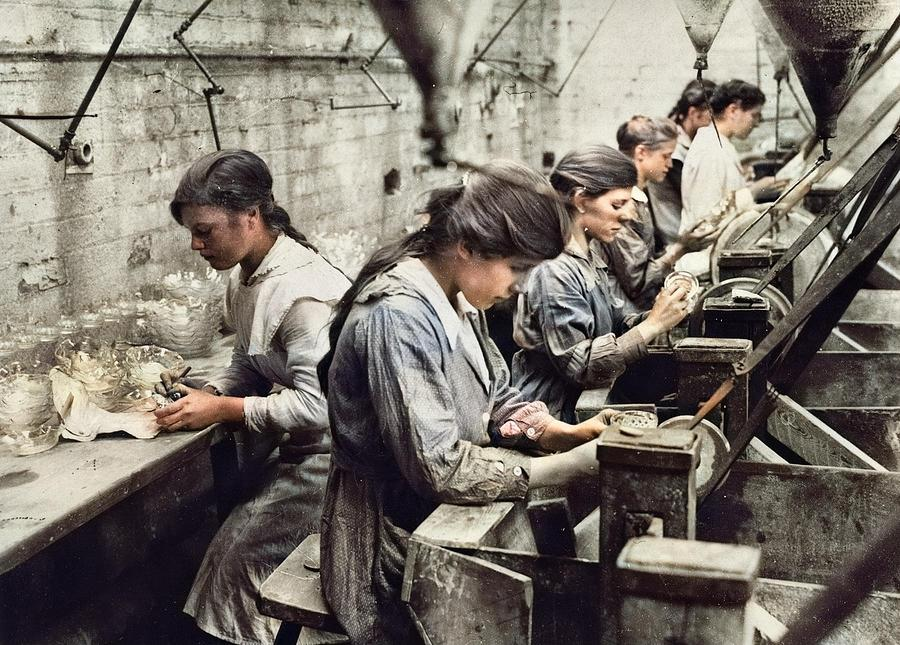

6. Конкуренция
Положение рабочего класса в Англии


Рабочие!
Вам я посвящаю труд, в котором я попытался нарисовать перед своими немецкими соотечественниками верную картину вашего положения, ваших страданий и борьбы, ваших чаяний и стремлений. Я достаточно долго жил среди вас, чтобы ознакомиться с вашим положением. Я исследовал его с самым серьёзным вниманием, изучил различные официальные и неофициальные документы, поскольку мне удавалось раздобыть их, но всё это меня не удовлетворило. Я искал большего, чем одно абстрактное знание предмета, я хотел видеть вас в ваших жилищах, наблюдать вашу повседневную жизнь, беседовать с вами о вашем положении и ваших нуждах, быть свидетелем вашей борьбы против социальной и политической власти ваших угнетателей. Так я и сделал. Я оставил общество и званые обеды, портвейн и шампанское буржуазии и посвятил свои часы досуга почти исключительно общению с настоящими рабочими; я рад этому и горжусь этим. Рад потому, что получил таким образом возможность плодотворно провести в изучении действительной жизни немало часов, которые иначе были бы потрачены на салонную болтовню и соблюдение докучливого этикета; горжусь потому, что получил благодаря этому возможность воздать должное угнетённому и оклеветанному классу людей, которые, при всех своих недостатках и всех невыгодах своего положения, всё же вызывают к себе уважение в каждом, кроме разве английского торгаша; горжусь ещё и потому, что это дало мне возможность оградить английский народ от растущего презрения, которое возникло к нему на континенте как неизбежное следствие грубо-своекорыстной политики и всего поведения вашей правящей буржуазии.
Имея в то же время широкую возможность наблюдать вашего противника, буржуазию, я очень скоро убедился в том, что вы правы, вполне правы, если не ожидаете от неё никакой поддержки. Её интересы диаметрально противоположны вашим, хотя она постоянно пытается доказать обратное и уверить вас в самом сердечном сочувствии к вашей судьбе. Её дела опровергают её слова. Я собрал, надеюсь, более чем достаточные доказательства того, что буржуазия — что бы она ни утверждала на словах — в действительности не имеет иной цели, как обогащаться за счёт вашего труда, пока может торговать его продуктом, чтобы затем обречь вас на голодную смерть, как только для неё исчезнет возможность извлекать прибыль из этой скрытой торговли человеком. Что она сделала, чтобы доказать на деле своё торжественно провозглашаемое расположение к вам? Обратила ли она когда-нибудь серьёзное внимание на ваши жалобы? Сделала ли она для вас что-нибудь, кроме оплаты полдюжины комиссий для различных обследований, объёмистые отчёты которых обречены навеки лежать среди груды ненужных бумаг на полках министерства внутренних дел? Попыталась ли она хотя бы составить из этих истлевающих Синих книг одну удобочитаемую книгу, в которой каждый мог бы легко найти сведения о положении громадного большинства «свободнорождённых британцев»? Нет, конечно, она этого не сделала; это всё — вещи, о которых она не любит говорить. Она предоставила иностранцу оповестить цивилизованный мир о том унизительном положении, в котором вам приходится жить.
Иностранец для неё, но, надеюсь, не для вас. Мой английский язык, быть может, небезупречен, но надеюсь, что для вас он будет понятным языком. Кстати сказать, ни один рабочий ни в Англии, ни во Франции никогда не относился ко мне как к иностранцу. Я с величайшим удовлетворением убедился в том, что вы свободны от национальных предрассудков и национального тщеславия, этих пагубных чувств, которые являются в конце концов лишь эгоизмом в крупном масштабе [wholesale selfishness]. Я видел ваше сочувствие к каждому, — будь то англичанин или нет, — кто искренне отдаёт свои силы на служение прогрессу человечества, я видел ваше преклонение перед всем великим и добрым, независимо от того, возникло ли оно на вашей родной почве или нет. Я убедился в том, что вы больше чем просто английские люди, члены одной обособленной нации, вы — люди, члены одной великой общей семьи, сознающие, что ваши интересы совпадают с интересами всего человечества. И видя в вас членов этой семьи «единого и неделимого» человечества, людей в самом возвышенном смысле этого слова, я, как и многие другие на континенте, всячески приветствую ваше движение и желаю вам скорейшего успеха.
Идите же вперёд, как шли до сих пор! Многое ещё надо преодолеть; будьте тверды, будьте бесстрашны,—успех ваш обеспечен, и ни один шаг, сделанный вами в этом движении вперёд, не будет потерян для нашего общего дела — дела всего человечества!
Бармен (Рейнская Пруссия), 15 марта 1845г.
Фридрих Энгельс
В предлагаемой книге рассматривается вопрос, которому я сначала хотел отвести лишь одну главу в более обширном труде по социальной истории Англии. Однако большое значение этого вопроса вскоре заставило меня посвятить ему самостоятельное исследование.
Положение рабочего класса является действительной основой и исходным пунктом всех социальных движений современности, потому что оно представляет собой наиболее острое и обнажённое проявление наших современных социальных бедствий. Французский и немецкий рабочий коммунизм прямо, а фурьеризм и английский социализм, так же как и коммунизм немецкой образованной буржуазии, косвенно обязаны ему своим происхождением. Поэтому, для того чтобы дать прочное обоснование, с одной стороны, социалистическим теориям, с другой стороны, суждениям об их праве на существование и положить конец всяческим мечтаниям и выдумкам pro et contra [за и против], совершенно необходимо изучить условия существования пролетариата. Но в своей завершённой классической форме условия существования пролетариата имеются только в Великобритании и именно в самой Англии, и к тому же только в Англии необходимый материал собран достаточно полно и подтверждён официальными расследованиями так, как это требуется для сколько-нибудь исчерпывающего изложения вопроса.
В течение 21 месяца я имел возможность непосредственно, по личным наблюдениям и в личном общении, изучить английский пролетариат, его стремления, его страдания и радости, одновременно дополняя свои наблюдения сведениями из необходимых достоверных источников. В настоящей книге изложено то, что я видел, слышал и читал. Я заранее готов к тому, что не только моя точка зрения, но и приведённые факты будут оспариваться, подвергаясь нападкам с разных сторон, в особенности, когда моя книга попадёт в руки англичан. Я также прекрасно знаю, что мне смогут указать там и тут на незначительные неточности, которых, при обширности предмета, требующего всестороннего обоснования, не избежал бы и англичанин, тем более, что даже в Англии нет ещё ни одного сочинения, в котором, как в моём, рассматривалось бы положение всех рабочих. Но я, ни на минуту не задумываясь, бросаю английской буржуазии вызов: пусть она мне укажет на основании таких же документальных данных, какие привёл я, хоть на один-единственный факт, неточность которого могла бы сколько-нибудь отразиться на изложенной точке зрения в целом.
Изображение той классической формы, которую приняли условия существования пролетариата в британском королевстве, имеет — в особенности для Германии и именно в настоящий момент — чрезвычайно большое значение. Немецкий социализм и коммунизм более чем всякий другой исходили из теоретических предпосылок: мы, немецкие теоретики, ещё слишком мало знали действительный мир, чтобы действительные отношения могли непосредственно пробудить в нас стремление к преобразованию этой «дурной действительности». Среди тех, кто сейчас является открытым поборником подобных преобразований, едва ли кто пришёл к коммунизму иначе, чем через фейербаховское преодоление гегелевской философии. Действительные условия жизни пролетариата так мало известны у нас, что даже благонамеренные «союзы для улучшения положения трудящихся классов», в которых наша буржуазия в настоящее время так нещадно извращает социальный вопрос, постоянно исходят из самых смешных и самых пошлых суждений о положении рабочих. В этом вопросе нам, немцам, больше чем кому-либо, недостаёт знания фактов. И если условия существования пролетариата в Германии не получили ещё такого классического выражения, как в Англии, то всё же в основе у нас — тот же социальный строй, и рано или поздно его проявления должны достигнуть той же степени остроты, что и по ту сторону Северного моря, если только к тому времени разум нации не примет таких мер, которые заложат новый базис для всей социальной системы. Те же коренные причины, которые привели в Англии к нищете и угнетению пролетариата, существуют и в Германии, и они должны с течением времени привести к тем же результатам. Между тем, выявление английских бедствий даст нам толчок к выявлению наших немецких бедствий, даст также и масштаб для определения их размеров и той вскрытой волнениями в Силезии и Богемии опасности, которая с этой стороны непосредственно угрожает спокойствию Германии.
В заключение мне остаётся сделать ещё два замечания. Во-первых, выражение Mittelklasse я постоянно употребляю в смысле английского middle-class (или как почти всегда говорят: middle-classes), что обозначает, так же как и французское bourgeoisie, имущий класс, и именно имущий класс, в отличие от так называемой аристократии, тот класс, который во Франции и Англии прямо, а в Германии косвенно, в лице «общественного мнения», обладает государственной властью. Точно так же я постоянно употребляю, как равнозначащие, выражения: рабочие (working men) и пролетарии, рабочий класс, неимущий класс и пролетариат. — Во-вторых, приводя цитаты, я в большинстве случаев указываю на партию, к которой принадлежит автор, потому что либералы почти всегда пытаются подчеркнуть нищету в сельскохозяйственных округах и отрицать её в фабричных округах, а консерваторы, наоборот, признают нужду в фабричных округах, но не хотят признать её в сельских местностях. По этой же причине в тех случаях, когда у меня не хватало официальных документов, я предпочитал при описании положения промышленных рабочих всегда пользоваться свидетельствами либералов, стараясь бить либеральную буржуазию её же собственными свидетельствами; на консерваторов же или чартистов я ссылался вообще только в тех случаях, когда был знаком с настоящим положением дела по собственным наблюдениям или мог быть убеждён в искренности приводимых свидетельств на основании личной или литературной репутации цитируемых авторов.
Бармен, 15 марта 1845 г.
Ф. Энгельс
История рабочего класса в Англии начинается со второй половины XVIII века, с изобретения паровой машины и машин дав обработки хлопка. Эти изобретения послужили, как известно, толчком к промышленной революции — революции, которая одновременно произвела полный переворот в гражданском обществе и всемирно-историческое значение которой начинают уяснять себе лишь в настоящее время. Англия — классическая страна этого переворота, тем более мощного, чем бесшумнее он совершался, и Англия поэтому является также классической страной развития его главного результата — пролетариата. Только в Англии пролетариат может быть изучен во всех своих отношениях и со всех сторон.
Мы не будем здесь касаться ни истории этой революции, ни её огромного значения для настоящего и будущего. Это будет предметом дальнейшего, более обширного труда. В данный момент мы ограничимся тем немногим, что необходимо для уяснения последующих фактов, для понимания современного положения английского пролетариата.
До введения машин превращение сырья в пряжу и затем в ткань совершалось на дому у рабочего. Жена и дочери пряли пряжу, которую отец семейства превращал в ткань; если он сам её не обрабатывал, пряжа продавалась. Эти семьи ткачей жили большей частью в деревне, близ городов, и могли неплохо существовать на свой заработок, так как местный рынок всё ещё был в смысле спроса на ткани решающим и даже почти единственным рынком, а всесилие конкуренции, проложившей себе дорогу впоследствии в связи с завоеванием иностранных рынков и расширением торговли, не оказывало ещё заметного действия на заработную плату. К этому присоединялось ещё постоянное увеличение спроса на местном рынке, которое шло в ногу с медленным ростом населения и обеспечивало работой всех рабочих; к тому же сильная конкуренция между ними была невозможна вследствие разбросанности их жилищ в сельской местности. Таким образом, ткач большей частью был даже в состоянии кое-что откладывать и арендовать небольшой участок земли, который он обрабатывал в часы досуга, а их у него было сколько угодно, так как он мог ткать когда и сколько ему хотелось. Правда, земледелец он был плохой, его хозяйство велось небрежно и не приносило существенного дохода; но, по крайней мере, он не был пролетарием, он вбил, как выражаются англичане, столб в родную землю, он был оседлым человеком и в обществе стоял на одну ступень выше, чем теперешний английский рабочий.
Так рабочие вели растительное и уютное существование, жили честно и спокойно, в мире и почёте, и материальное их положение было значительно лучше положения их потомков; им не приходилось переутомляться, они работали ровно столько, сколько им хотелось, и всё же зарабатывали, что им было нужно; у них был досуг для здоровой работы в саду или в поле — работы, которая сама уже была для них отдыхом, — и кроме того они имели ещё возможность принимать участие в развлечениях и играх соседей; а все эти игры в кегли, в мяч и т. п. содействовали сохранению здоровья и укреплению тела. Это были большей частью люди сильные, крепкие, своим телосложением мало или даже вовсе не отличавшиеся от окрестных крестьян. Дети росли на здоровом деревенском воздухе, и если им и случалось помогать в работе своим родителям, то это всё же бывало лишь время от времени, и, конечно, о восьми- или двенадцатичасовом рабочем дне не было и речи.
Легко себе представить, каков был моральный и интеллектуальный уровень этого класса. Отрезанные от городов, где они никогда не бывали, так как пряжу и ткань они сдавали разъездным агентам, от которых получали заработную плату, — отрезанные до такой степени, что старики, проживавшие в непосредственном соседстве с городом, никогда не бывали там, пока, наконец, машины, отняв у них их заработок, не привели их туда в поисках работы, — они в моральном и интеллектуальном отношении стояли на уровне крестьян, с которыми они большей частью были и непосредственно связаны благодаря своему участку арендованной земли. В своём сквайре — наиболее значительном из местных землевладельцев — они видели своего «естественного повелителя», искали у него совета, делали его судьёй в своих мелких спорах и проявляли к нему ту почтительность, которая обусловливается такими патриархальными отношениями. Они были людьми «почтенными» и хорошими отцами семейств, вели нравственную жизнь, поскольку у них отсутствовали и поводы к безнравственной жизни — кабаков и притонов поблизости не было, а трактирщик, у которого они временами утоляли жажду, сам был человек почтенный и большей частью крупный арендатор, торговал хорошим пивом, любил строгий порядок и по вечерам рано закрывал своё заведение. Дети целый день проводили дома с родителями и воспитывались в повиновении к ним и в страхе божием. Патриархальные семейные отношения не нарушались до свадьбы детей. Молодые люди росли в идиллической простоте и доверии вместе со своими товарищами по играм до самой свадьбы, и хотя половые сношения до брака были почти обычным явлением, но происходило это только тогда, когда обе стороны признавали за собой моральное обязательство к вступлению в брак, и состоявшаяся свадьба снова приводила всё в порядок. Одним словом, тогдашние английские промышленные рабочие жили и мыслили так, как живут ещё и теперь кое-где в Германии, замкнуто и обособленно, без духовной деятельности и без резких колебаний в условиях своей жизни. Они редко умели читать и ещё реже писать, аккуратно посещали церковь, не занимались политикой, не устраивали заговоров, не размышляли, увлекались физическими упражнениями, с благочестием, привитым с детства, слушали чтение библии и в своём непритязательном смирении прекрасно уживались с более привилегированными классами общества. Но зато в духовном отношении они были мертвы, жили только своими мелкими частными интересами, своим ткацким станком и садиком, и не знали ничего о том мощном движении, которым за пределами их деревень было охвачено всё человечество. Они чувствовали себя хорошо в своей тихой растительной жизни и, не будь промышленной революции, они никогда не расстались бы с этим образом жизни, правда, весьма романтичным и уютным, но всё же недостойным человека. Они и не были людьми, а были лишь рабочими машинами на службе немногих аристократов, которые до того времени вершили историю. Промышленная революция лишь довела дело до конца, полностью превратив рабочих в простые машины и лишив их последнего остатка самостоятельной деятельности, но она тем самым заставила их думать, заставила их добиваться положения, достойного человека. Как во Франции политика, так в Англии промышленность и вообще движение гражданского общества вовлекли в поток истории последние классы, остававшиеся ещё равнодушными к общим интересам человечества.
Первым изобретением, вызвавшим решительное изменение в положении английского рабочего, была дженни, построенная ткачом Джемсом Харгривсом из Стандхилла близ Блэкберна в Северном Ланкашире (1764). Эта машина была грубым прототипом позднейшей мюль-машины и приводилась в движение рукой, но вместо одного веретена, как в обыкновенной ручной прялке, она имела шестнадцать-восемнадцать веретён, приводимых в движение одним работником. Вследствие этого явилась возможность производить гораздо больше пряжи чем раньше; в то время как раньше, когда на одного ткача работали три прядильщицы, пряжи всегда не хватало и ткачу часто приходилось ждать её, теперь пряжи стало больше, чем могло быть использовано наличными рабочими-ткачами. Спрос на ткани, который и без того возрастал, ещё более усилился, когда цены на них понизились в результате вызванного новой машиной сокращения издержек производства пряжи. Понадобилось больше ткачей, и заработок их повысился. Теперь, поскольку ткач мог заработать больше, стоя у станка, он мало-помалу забросил свои земледельческие занятия и занялся исключительно ткацким делом. В те времена семья из четырёх взрослых и двух детей, которых использовали для наматывания пряжи, могла при десяти часах работы в день заработать 4 ф. ст. (28 прусских талеров) в неделю, а часто и больше, если дела шли хорошо и работы было достаточно; нередко бывало, что один ткач зарабатывал за своим станком 2 ф. ст. в неделю. Так постепенно класс ткачей-земледельцев совершенно исчез и превратился в новый класс ткачей, которые существовали только на заработную плату, не имели никакой собственности, даже мнимой собственности в виде арендуемого клочка земли, и становились, таким образом, пролетариями (working men). К тому же наступил конец и прежним отношениям прядильщика и ткача. Раньше выработка пряжи и превращение её в ткань совершались, насколько это было возможно, под одной крышей. Теперь, когда для дженни, в такой же мере как и для ткацкого станка, потребовались сильные руки, прядением начали заниматься и мужчины, и оно стало единственным источником существования для целых семей; между тем другие семьи, наоборот, отложили в сторону устаревшую, отжившую свой век ручную прялку и, если у них не было средств для покупки дженни, были вынуждены довольствоваться тем заработком, который давал отцу семейства его ткацкий станок. Так с ткачества и прядения началось столь бесконечно развившееся впоследствии в промышленности разделение труда.
Появление этой первой и весьма ещё несовершенной машины не только вызвало развитие промышленного пролетариата, но и дало также толчок к возникновению сельскохозяйственного пролетариата. До этого времени имелось множество мелких землевладельцев, так называемых йоменов, которые вели такую же тихую, лишённую всяких умственных интересов растительную жизнь, как и жившие среди них ткачи-земледельцы. Они обрабатывали свой клочок земли, следуя во всём старым несовершенным способам своих отцов, и противились всякому новшеству с упорством, свойственным людям привычки, не знавшим перемен в течение целого ряда поколений. Среди них было также много мелких арендаторов, но не арендаторов в современном смысле этого слова, а людей, которые в силу договорной наследственной аренды или в силу старинного обычая унаследовали от отцов и дедов свои мелкие участки и сидели на них до этого так же крепко, как если бы эти участки были их собственностью. Теперь, после того как промышленные рабочие отказались от земледелия, освободилось много участков земли, и на них обосновался новый класс крупных арендаторов, снимавших по пятьдесят, сто, двести и больше акров, так называемых tenants-at-will (т. е. арендаторов, которым каждый год могли отказать в аренде), которые сумели повысить доходность земли лучшей обработкой и ведением более крупного хозяйства. Они имели возможность продавать свои продукты дешевле, чем мелкий йомен; последнему ничего больше не оставалось, как продать участок, который не мог уже его прокормить, и либо обзавестись дженни или ткацким станком, либо наняться к крупному арендатору в качестве подёнщика, сельского пролетария. Его прирождённая косность и неспособность преодолеть унаследованную от дедов небрежность в обработке участка не оставляли ему иного выхода, поскольку ему приходилось конкурировать с людьми, обрабатывающими свою землю на более разумных началах и со всеми преимуществами, которые дают крупное хозяйство и затрата капиталов на улучшение почвы.
Однако развитие промышленности на этом не остановилось. Некоторые капиталисты стали устанавливать дженни в больших зданиях и приводить их в движение силой воды; это позволило им сократить число рабочих и продавать свою пряжу дешевле, чем мог это сделать прядильщик-одиночка, приводивший машину в движение просто рукой. Так как в устройство дженни постоянно вносились усовершенствования, машины то и дело оказывались устаревшими, их приходилось переделывать или заменять новыми; и если капиталист, применяя силу воды, мог ещё продержаться даже при устаревших машинах, то для прядильщика-одиночки это со временем стало невозможным. Если тем самым было положено начало фабричной системе, то дальнейшее распространение она получила с появлением ватер-машины, изобретённой в 1767г. Ричардом Аркрайтом, цирюльником из Престона, в Северном Ланкашире. Эта машина, которую по-немецки называют обычно Kettenstuhl, является наряду с паровой машиной важнейшим изобретением XVIII века в области механики. Она с самого начала была рассчитана на механический двигатель и основывалась на совершенно новых принципах. Соединив особенности дженни и ватер-машины, Самюэл Кромптон из Фёреуда, в Ланкашире, изобрёл в 1785г. мюль-машину, а когда около того же времени Аркрайт изобрёл чесальную и ровничную машину, фабричный способ производства стал единственно господствующим в бумагопрядении. Постепенно эти машины в результате некоторых незначительных изменений стали применяться в прядении шерсти, а позже (в первом десятилетии XIX века) и в прядении льна, вытесняя таким образом и отсюда ручной труд. Но и на этом дело не остановилось: в последние годы XVIII века д-р Картрайт, сельский священник, изобрёл механический ткацкий станок и около 1804г. так его усовершенствовал, что он с успехом мог конкурировать с ручными ткачами; значение этих машин удвоилось благодаря паровой машине, изобретённой Джемсом Уаттом в 1764г. и приспособленной с 1785г. к приведению в движение прядильных машин.
Благодаря этим изобретениям, которые в дальнейшем с каждым годом всё более совершенствовались, машинный труд одержал победу над ручным трудом в главных отраслях английской промышленности, и вся дальнейшая история этой последней повествует лишь о том, как ручной труд уступал машине одну позицию за другой. Результатом явились, с одной стороны, — быстрое падение цен на все фабричные товары, расцвет торговли и промышленности, завоевание почти всех не защищенных пошлинами заграничных рынков, быстрый рост капиталов и национального богатства, а с другой, — ещё более быстрый численный рост пролетариата, утрата рабочим классом всякой собственности, всякой уверенности в заработке, деморализация, политические волнения и все те столь неприятные для имущих классов Англии факты, которые нам предстоит здесь рассмотреть. Мы видели, какой переворот вызвала в общественном положении низших классов одна даже столь несовершенная машина, как дженни, поэтому нас уже не удивит действие, произведённое целой системой взаимно дополняющих друг друга тонко разработанных механизмов, получающих от нас сырьё и возвращающих нам готовую ткань.
Проследим, однако, развитие английской промышленности немного подробнее и начнём с главной её отрасли — хлопчатобумажной промышленности. В 1771—1775гг. в среднем ежегодно ввозилось в Англию менее 5 млн. фунтов хлопка-сырца;. в 1841г. было ввезено 528 млн., а в 1844г. ввоз составит не менее 600 млн. фунтов. В 1834г. Англия вывезла 556 млн. ярдов хлопчатобумажной ткани, 76,5 млн. фунтов хлопчатобумажной пряжи и на 1200 тыс. ф. ст. хлопчатобумажных вязаных изделий. В том же году в хлопчатобумажной промышленности использовалось свыше 8 млн. веретён, 110 тыс. механических и 250 тыс. ручных ткацких станков, не считая ватер-машин, и, по вычислениям Мак-Куллоха, во всём Соединённом королевстве этой отраслью промышленности кормилось прямо или косвенно почти полтора миллиона человек, из которых только на фабриках работало 220 тыс.; двигательной энергии на этих фабриках расходовалось: паровой — 33 тыс. лошадиных сил и водяной —11 тысяч. Теперь все эти цифры далеко превзойдены, и можно смело принять, что в 1845г. количество и мощность машин, равно как и число рабочих, будут в полтора раза больше, чем в 1834 году. Эта промышленность имеет своим центром Ланкашир — графство, которое было её колыбелью и которое она насквозь революционизировала, превратив его из глухого, плохо освоенного болота в оживлённую, полную кипучей деятельности местность; в течение восьмидесяти лет она удесятерила его население и, как бы по мановению волшебного жезла, создала такие гигантские города, как Ливерпуль и Манчестер, которые насчитывают вместе 700 тыс. жителей, и их пригороды: Болтон (60тыс.), Рочдейл (75 тыс.), Олдем (50 тыс.), Престон (60 тыс.), Аштон и Стейлибридж (40 тыс.), и целый ряд других фабричных городов. История Южного Ланкашира была свидетельницей величайших чудес нового времени, хотя об этом не принято говорить, и все эти чудеса создала хлопчатобумажная промышленность. Кроме того Глазго в Шотландии образует центр для второго хлопчатобумажного района, охватывающего Ланаркшир и Ренфрушир, и здесь также население главного города возросло со времени введения этой промышленности с 30 тыс. до 300 тыс. человек. Чулочновязальное производство Ноттингема и Дерби также получило новый толчок благодаря понижению пен на пряжу и второй толчок благодаря улучшению вязальной машины, давшему возможность вязать сразу два чулка на одном станке. Производство кружев тоже стало важной отраслью промышленности с 1777г., когда была изобретена тюлевая машина; вскоре после этого Линдли изобрёл кружевную машину, а затем Хиткот в 1809г. — бобинетовую машину. Изготовление кружев было благодаря этому бесконечно упрощено, и спрос на них с их удешевлением настолько возрос, что теперь в этом производстве занято не менее 200 тыс. человек. Главными его центрами являются Ноттингем, Лестер и Западная Англия (Уилтшир, Девоншир и др.). Такое же распространение получили и отрасли труда, находящиеся в зависимости от хлопчатобумажной промышленности, — беление, окраска и набивка. Благодаря замене кислорода хлором в белении, благодаря быстрому развитию химии, оказавшей влияние на крашение и набивку, благодаря целому ряду самых блестящих изобретений в области механики, повлиявших на развитие ситцепечатания, эти отрасли получили толчок, который вместе с усилением спроса, обусловленным ростом хлопчатобумажной промышленности, привёл их к небывалому расцвету.
Такая же деятельность началась и в обработке шерсти, которая была раньше главной отраслью английской промышленности; но продукция прежних лет — ничто в сравнении с тем, что производится теперь. В 1782г. весь сбор шерсти предыдущих трёх лет лежал необработанным за недостатком рабочих и так и пролежал бы, если бы на помощь не подоспели новоизобретённые машины, которые выпряли всю эту шерсть. Приспособление этих машин к прядению шерсти увенчалось полным успехом. С этого момента в округах, обрабатывающих шерсть, началось такое же быстрое развитие, как то, которое мы видели в хлопчатобумажных районах. В 1738г. в Западном округе Йоркшира было произведено 75 тыс. кусков шерстяных тканей, а в 1817г. —490 тыс., и развитие шерстяной промышленности пошло таким быстрым темпом, что в 1834г. было вывезено на 450 тыс. кусков ткани больше, чем в 1825 году. — В 1801г. было переработано 101 млн. фунтов шерсти (из них 7 млн. привозной), а в 1835г. было переработано 180 млн. фунтов (из них 42 млн. привозной). Главным центром этой промышленности является Западный округ Йоркшира, где, в частности в Врадфорде, длинная английская шерсть перерабатывается в шерсть для вязания и т. д., а в остальных городах, как Лидс, Галифакс, Хаддерсфилд и др., короткая шерсть перерабатывается в кручёную пряжу и затем в суконные изделия; далее, граничащая с Йоркширом часть Ланкашира, окрестности Рочдейла, где наряду с выработкой хлопчатобумажных изделий производится много фланели, и, наконец, Западная Англия, где производятся самые тонкие сукна. Прирост населения здесь также заслуживает внимания:
С 1831г. население это возросло по меньшей мере на 20—25%. В 1835г. прядением шерсти по всему Соединённому королевству было занято 1313 фабрик с 71300 рабочих, причём в это число входит лишь небольшая часть той огромной массы людей, для которой обработка шерсти является прямым или косвенным источником существования, и почти вовсе не входят ткачи.
В льняной промышленности прогресс начался позже, ибо здесь естественные свойства сырья значительно затрудняли применение прядильных машин. Правда, уже в последние годы XVIII века в Шотландии были предприняты попытки подобного рода, но только в 1810г. французу Жирару удалось практически осуществить машинное прядение льна. Однако и его машины получили подобающее им признание на британской почве лишь после усовершенствований, внесённых в них в Англии, и благодаря повсеместному применению, которое они нашли в Лидсе, Данди и Белфасте. И с этих пор началось быстрое развитие английской льняной промышленности. В 1814г. в Данди было ввезено 3 тыс. тонн [1] льна, в 1833г. —19 тыс. тонн льна и 3400 тонн пеньки. Ввоз ирландских полотен в Великобританию возрос с 32 млн. ярдов (1800г.) до 53 млн. (1825г.), из этого количества большая часть была снова вывезена; вывоз английских и шотландских льняных тканей возрос с 24 млн. ярдов (1820г.) до 51 млн. (1833г.). Число льнопрядилен доходило в 1835г. до 347 с 33 тыс. рабочих; из них половина находилась в Южной Шотландии, свыше 60 — в Западном округе Йоркшира (Лидс и окрестности), 25 — в Белфасте, в Ирландии, а остальные — в Дорсетшире и Ланкашире. Льняные ткани производятся в Южной Шотландии, в некоторых местностях Англии, но в особенности в Ирландии.
С неменьшим успехом англичане занялись обработкой шёлка. Сырьё они получали из Южной Европы и Азии, уже в виде пряжи, и главная работа сводилась к кручению тонкой нити (трамы). До 1824г. высокая пошлина на шёлк-сырец (4 шиллинга на фунт) сильно стесняла развитие английской шёлковой промышленности, для которой единственным рынком являлись, благодаря покровительственным пошлинам, Англия и её колонии. В дальнейшем ввозная пошлина была понижена до 1 пенса, и число фабрик тотчас же значительно возросло. В течение одного года число тростильных веретён возросло с 780 тыс. до 1180 тыс., и если торговый кризис 1825г. на некоторое время и парализовал развитие этой отрасли промышленности, то тем не менее уже в 1827г. в этой области производилось больше чем когда-либо, так как сноровка и опыт англичан в области техники обеспечивали их крутильным машинам превосходство над неуклюжими механизмами их конкурентов. В 1835г. Великобритания насчитывала 263 шёлкокрутильные фабрики с 30 тыс. рабочих, сосредоточенные большей частью в Чешире (Маклсфилд, Конглтон и окрестности), в Манчестере и в Сомерсетшире. Кроме того есть ещё множество фабрик, занимающихся обработкой охлопков шёлкового кокона; из них изготовляют особую пряжу (spun silk), которой англичане снабжают даже парижские и лионские ткацкие фабрики. Ткут таким способом обработанный шёлк главным образом в Шотландии (в Пейсли и др.) и Лондоне (в Спиталфилдсе), но также и в Манчестере и некоторых других местах.
Но гигантский подъём английской промышленности, начавшийся в 1760г., не ограничился одним только производством тканей. Раз данный толчок распространился на все отрасли промышленной деятельности, и множество изобретений, не находившихся ни в какой связи с упомянутыми выше, приобрели, в силу того что их появление совпало с общим оживлением, гораздо большее значение. Далее, после того как было практически доказано огромное значение механической энергии в промышленности, всё было пущено в ход, чтобы всесторонне использовать эту энергию и извлечь из неё выгоду для отдельных изобретателей и фабрикантов; к тому же самый спрос на машины, топливо и сырьё непосредственно потребовал от массы рабочих и от отдельных отраслей промышленности удвоенной деятельности. С появлением паровой машины впервые приобрели значение обширные угольные залежи Англии; только теперь зародилось производство машин, а с ним усилился интерес к железным рудникам, поставлявшим сырьё для этого производства. Повышенное потребление шерсти подняло английское овцеводство, а усилившийся ввоз шерсти, льна и шёлка вызвал рост английского торгового флота. Более всего усилилось производство железа. Богатые железом рудники Англии раньше мало разрабатывались; при плавлении железной руды всегда применяли древесный уголь, который, по мере развития земледелия и истребления лесов, производился всё в меньшем количестве и становился всё дороже. В прошлом столетии впервые стали применять пережжённый каменный уголь (кокс), а с 1780г. был открыт новый способ, позволявший превращать расплавленное на коксе железо, из которого до тех пор получали только чугун, в ковкое железо. Этот способ, который заключается в извлечении углерода, примешивающегося к железу во время плавления, англичане называют пудлингованием; он открыл совершенно новое поле деятельности для английского железоделательного производства. Доменные печи стали строить в 50 раз больших размеров чем раньше, плавление руды упростилось благодаря горячему дутью, и производство железа так удешевилось, что оказалось возможным делать из железа массу вещей, которые раньше изготовлялись из дерева или камня. В 1788г. Томас Пэйн, известный демократ, построил в Йоркшире первый железный мост, за которым последовало множество других, и в настоящее время почти все мосты, в особенности железнодорожные, делаются из чугуна, а в Лондоне из этого материала построен даже мост через Темзу (Саут-воркский мост); железные столбы, железные станины для машин и т. д. стали обычным явлением, а с введением газового освещения и железных дорог английскому железоделательному производству открылись новые области сбыта. Постепенно при помощи машин стали изготовляться также винты и гвозди. Хантсмен, уроженец Шеффилда, открыл в 1760г. способ литья стали, который упразднил много лишней работы и сделал возможным производство ранее неведомых дешёвых изделий. Благодаря более высокому качеству сырья, усовершенствованным инструментам, новому машинному оборудованию и большому разделению труда английское производство металлических изделий тогда впервые приобрело своё значение. Население Бирмингема возросло с 73 тыс. (1801г.) до 200 тыс. (1844г.), население Шеффилда возросло с 46 тыс. (1801г.) до 110 тыс. (1844г.), а потребление угля в одном этом последнем городе достигало в 1836г. 515 тыс. тонн. В 1805г. было вывезено 4300 тонн железных изделий и 4600 тонн чугуна, а в 1834г. — 16200 тонн железных изделий и 107 тыс. тонн чугуна, и всё производство железа, не превышавшее в 1740г. 17 тыс. тонн, в 1834г. достигло почти 700 тыс. тонн. На одну только выплавку чугуна тратится ежегодно свыше 3 млн. тонн угля, и даже трудно себе представить, какое огромное значение приобрели в течение последних шестидесяти лет угольные копи. В настоящее время все английские и шотландские угольные залежи разрабатываются, и одни только копи Нортумберленда и Дургама доставляют ежегодно свыше 5 млн. тонн для экспорта и занимают 40—50 тыс. рабочих. По сведениям газеты «Durham Chronicle», в этих двух графствах разрабатывалось:
Притом все копи разрабатываются теперь гораздо энергичнее, чем раньше. То же самое имеет место в оловянных, медных и свинцовых рудниках, а наряду с развитием производства стекла зародилась новая отрасль промышленности — гончарное производство, получившее особое значение около 1763г. благодаря Джозайе Уэджвуду. Последний положил начало изготовлению гончарных изделий на научных принципах, способствовал развитию художественного вкуса и создал керамические заводы (potteries) в Северном Стаффордшире, округе в 8x8 английских миль, который раньше был бесплодной пустыней, а теперь усеян фабриками и жилыми домами и даёт пропитание более чем 60 тыс. человек.
В этот общий поток было вовлечено решительно всё. Произошёл переворот и в земледелии. Не только владение землёй и её обработка перешли, как мы видели, в другие руки, — сельское хозяйство было затронуто и в другом отношении. Крупные арендаторы стали затрачивать капитал на улучшение почвы, сносить ненужные изгороди, осушать и удобрять, применять лучшие орудия и вводить систематическое плодосменное хозяйство (cropping by rotation). Им также помог прогресс науки: сэр Г. Дэви с успехом применил химию в земледелии, а развитие техники дало крупным арендаторам ряд преимуществ. К тому же спрос на земледельческие продукты вследствие роста населения так увеличился, что, хотя с 1760 по 1834г. в пашню было превращено 6840540 акров невозделанной земли, Англия из страны, вывозившей хлеб, превратилась в страну, ввозящую его.
Такая же кипучая деятельность проявилась и в строительстве путей сообщения. С 1818 по 1829г. в Англии и Уэльсе было проложено 1 тыс. английских миль шоссейных дорог установленной законом ширины в 60 футов и почти все старые шоссе были переделаны по системе Мак-Адама. В Шотландии ведомство общественных работ с 1803г. соорудило девятьсот миль шоссейных дорог и построило свыше тысячи мостов, благодаря чему жители горной Шотландии сразу были приобщены к цивилизации. Раньше горцы занимались большей частью браконьерством и контрабандой; теперь они стали прилежными земледельцами и ремесленниками, и хотя для сохранения гэльского языка устроены специальные школы, гэло-кельтские нравы и язык быстро уступают влиянию английской цивилизации. Точно так же было и в Ирландии. Между графствами Корк, Лимерик и Керри лежала до сих пор пустынная местность без каких-либо проезжих дорог, которая вследствие своей недоступности служила убежищем для всех нарушителей закона и являлась оплотом кельто-ирландской национальности в Южной Ирландии; эту местность прорезали дорогами и таким образом открыли доступ цивилизации и в эту глушь. Вся Великобритания, и в особенности Англия, имевшая лет шестьдесят тому назад такие же плохие дороги, как тогдашняя Германия и Франция, покрыта теперь сетью прекраснейших шоссе, и все они, как и почти всё в Англии, являются делом рук частных предпринимателей, так как государство ничего или почти ничего для этого не сделало.
До 1755г. Англия почти не имела каналов. В 1755г. в Ланкашире был проведён канал от Санки-Брука до Сент-Хеленса, а в 1759г. Джемс Бриндли построил первый большой канал, канал герцога Бриджуотера, который идёт от Манчестера и окрестных каменноугольных копей к устью реки Мереей и проведён недалеко от Бартона через реку Эруэлл при помощи акведука. С этого момента берёт своё начало английское строительство каналов, которому Бриндли первый придал значение. С тех пор было проложено множество каналов во всех направлениях и реки были сделаны судоходными. В одной Англии насчитывается 2200 миль каналов и 1800 миль судоходных рек; в Шотландии был построен Каледонский канал, пересекающий всю страну, и в Ирландии тоже прорыты различные каналы. И эти сооружения, подобно железным дорогам и шоссе, почти все являются делом рук частных лиц и компаний.
Железные дороги были проложены лишь в последнее время. Первая крупная железная дорога была проведена из Ливерпуля в Манчестер (открыта в 1830г.); с тех пор все крупные города были соединены между собой железными дорогами. Лондон с Саутгемптоном, Брайтоном, Дувром, Колчестером, Кембриджем, Эксетером (через Бристоль) и Бирмингемом; Бирмингем с Глостером, Ливерпулем, Ланкастером (через Ньютон и Уиган и через Манчестер и Болтон), далее с Лидсом (через Манчестер и Галифакс и через Лестер, Дерби и Шеффилд), а Лидс — с Гуллем и Ньюкаслом (через Йорк). Сюда надо добавить ещё множество мелких линий, строящихся и проектируемых, благодаря которым скоро сделается возможным совершить поездку из Эдинбурга в Лондон в один день.
Пар не только произвёл революцию в средствах сообщения на суше, он придал им новый облик и на воде. Первый пароход был спущен на воду в 1807г. на реке Гудзон, в Северной Америке, а в Великобритании — в 1811г. на реке Клайд. С тех пор в Англии было построено более 600 пароходов, и в 1836г. в английских гаванях их насчитывалось свыше 500.
Такова в кратких чертах история английской промышленности за последние шестьдесят лет, история, которая не имеет ничего равного себе в летописях человечества. Шестьдесят-восемьдесят лет тому назад Англия была страной, похожей на всякую другую, с маленькими городами, с незначительной и мало развитой промышленностью, с редким, преимущественно земледельческим населением. Теперь это — страна, непохожая ни на какую другую, со столицей в 2,5 миллиона жителей, с огромными фабричными городами, с индустрией, снабжающей своими изделиями весь мир и производящей почти всё при помощи чрезвычайно сложных машин, с трудолюбивым, интеллигентным, густым населением, две трети которого заняты в промышленности и которое состоит из совершенно других классов, мало того — составляет совершенно другую нацию с другими нравами и с другими потребностями, чем раньше. Промышленная революция имеет такое же значение для Англии, как политическая революция — для Франции, как философская революция — для Германии. И различие между Англией 1760г. и Англией 1844г. по меньшей мере так же велико, как между Францией при ancien regime [старом порядке] и Францией июльской революции. Но самым важным детищем этого промышленного переворота является английский пролетариат.
Мы уже видели, как введение машин вызвало к жизни пролетариат. Быстрое развитие промышленности создало потребность в рабочих руках; заработная плата повысилась, и вследствие этого толпы рабочих устремились из земледельческих округов в города. Население росло с неимоверной быстротой, и почти весь прирост приходился на рабочий класс. К тому же Ирландия только в начале XVIII века была приведена в состояние спокойствия; и здесь население, которое уменьшилось больше чем на одну десятую в результате жестокостеи англичан во время предшествовавших волнений, быстро стало увеличиваться, в особенности с тех пор как расцвет промышленности стал привлекать множество ирландцев в Англию. Так возникли большие фабричные и торговые города Великобритании, в которых по меньшей мере три четверти населения принадлежат к рабочему классу, а мелкая буржуазия состоит только из лавочников и очень, очень немногочисленных ремесленников. Но возникшая промышленность лишь потому так разрослась, что она заменила инструменты машинами, мастерские фабриками и тем самым превратила трудовые элементы среднего класса в рабочих пролетариев, а прежних крупных торговцев в фабрикантов; она вытеснила мелкую буржуазию и свела все различия населения к противоположности между рабочими и капиталистами. И за пределами промышленности в узком смысле слова, в области ремесла и даже торговли произошло то же самое. Вместо прежних мастеров с их подмастерьями появились, с одной стороны, крупные капиталисты, с другой — рабочие, не имеющие никакой надежды подняться над положением своего класса; ремесло превратилось в фабричное производство, стало строго проводиться разделение труда, и мелкие мастера, не имевшие возможности конкурировать с крупными предприятиями, были оттеснены в ряды пролетариата. Но в то же время с уничтожением прежнего ремесленного производства, с исчезновением мелкой буржуазии для рабочего пропала всякая возможность самому стать буржуа. Прежде у него всегда была надежда обзавестись своей мастерской и впоследствии, может быть, нанять подмастерьев; теперь же, когда сами мастера вытеснялись фабрикантами, когда для устройства самостоятельного дела появилась необходимость в больших капиталах, рабочий класс впервые действительно стал устойчивым классом населения, между тем как раньше положение рабочего нередко бывало лишь этапом на пути к положению буржуа. Теперь тот, кто родился рабочим, не имеет иных перспектив, как остаться им навсегда. Вот почему только теперь пролетариат в состоянии создать своё самостоятельное движение.
Таким образом возникла эта громадная, заполняющая теперь всю Великобританию масса рабочих, социальное положение которых с каждым днём всё более и более привлекает внимание цивилизованного мира.
Положение рабочего класса — это положение огромного большинства английского народа. Вопрос о том, какова должна быть участь этих миллионов обездоленных, которые проедают сегодня то, что заработали вчера, которые своей изобретательностью и своим трудом создали величие Англии, которые с каждым днём всё более сознают свою силу и всё настоятельнее требуют своей доли в общественных благах, — этот вопрос со времени билля о реформе стал вопросом общенациональным. Все мало-мальски важные парламентские дебаты можно свести к этому вопросу, и если английская буржуазия до настоящего времени этого признать не хочет, если она пытается замолчать этот великий вопрос и выставить свои собственные интересы как интересы истинно национальные, то ей это вовсе не удаётся сделать. С каждой парламентской сессией вопрос о рабочем классе приобретает всё большее значение, а интересы буржуазии отступают на задний план, и, хотя буржуазия и является главной и даже единственной силой в парламенте, всё же последняя сессия 1844г. представляла собой сплошные прения по рабочему вопросу (билль о бедных, фабричный билль, билль об отношениях между господами и слугами). Томас Данкомб, представитель рабочего класса в палате общин, был центральной фигурой сессии, между тем как либеральная буржуазия, с её требованием отмены хлебных законов, и радикальная буржуазия, с её предложением об отказе платить налоги, играли очень жалкую роль. Даже прения об Ирландии были по существу лишь прениями о положении ирландского пролетариата и о том, как ему помочь. Да и давно уже пора английской буржуазии сделать уступки рабочим, которые не просят, а угрожают и требуют; ведь очень скоро, быть может, будет уже поздно.
Однако английская буржуазия и в особенности фабриканты, которые непосредственно наживаются на нужде рабочих, игнорируют эту нужду. Считая себя самым могущественным классом— классом, представляющим нацию, буржуазия стыдится раскрыть перед всем миром эту язву Англии; она не хочет признать бедственное положение рабочих, потому что именно на неё, на имущий класс промышленников, ложится моральная ответственность за это бедственное положение. Отсюда та насмешливая улыбка, с которой образованные англичане — а ведь только их, т. е. буржуазию, и знают на континенте — отвечают обычно на все разговоры о положении рабочих; отсюда характерное для всей буржуазии полное невежество во всём, что касается рабочих; отсюда смехотворные промахи, которые она делает в парламенте и вне его, когда заходит речь о положении пролетариата; отсюда её весёлая беззаботность в то время как почва уходит у неё из-под ног и может каждый день провалиться и эта скорая катастрофа так же неизбежна, как действие закона механики или математики; отсюда то поразительное обстоятельство, что англичане не имеют ещё ни одной полноценной книги, посвященной положению их рабочих, несмотря на то, что они уже бог знает сколько лет «изучают» и «улучшают» это положение. Но отсюда также и то глубокое возмущение всего рабочего класса, от Глазго до Лондона, против богачей, которые систематически эксплуатируют рабочих, а затем безжалостно бросают их на произвол судьбы. Это возмущение через недолгий срок — этот срок можно почти вычислить — выльется в революцию, по сравнению с которой первая французская революция и 1794 год покажутся детской игрой.

Последовательность, в которой должны быть рассмотрены различные отряды пролетариата, вытекает сама собой из вышеизложенной истории его возникновения. Первые пролетарии появились в промышленности и были её прямым детищем; поэтому мы прежде всего обратимся к промышленным рабочим, т. е. тем, которые занимаются обработкой сырья. Добыча материала для промышленности, т. е. сырья и топлива, приобрела значение лишь вследствие промышленного переворота, и только тогда мог создаться новый вид пролетариата, а именно рабочие угольных копей и рудников. В третью очередь развитие промышленности повлияло на сельское хозяйство и в четвёртую — на Ирландию, чем и определяется последовательность, в которой мы будем изучать соответствующие категории пролетариата. Мы также увидим, что, за исключением разве ирландцев, уровень развития различных рабочих находится в прямой зависимости от их связи с промышленностью, что, следовательно, промышленные рабочие лучше всех сознают свои интересы, горнорабочие уже хуже, а сельскохозяйственные рабочие ещё почти совсем их не сознают. Мы обнаружим эту зависимость также и в рядах самого промышленного пролетариата: мы увидим, что фабричные рабочие — эти первенцы промышленной революции — с самого начала и до настоящего времени являлись ядром рабочего движения и что остальные рабочие примыкали к движению в той мере, в какой их ремесло захватывалось промышленным переворотом. Таким образом, на примере Англии, наблюдая это соответствие между рабочим движением и промышленным развитием, мы лучше поймём историческое значение промышленности.
Но так как в настоящий момент почти весь промышленный пролетариат уже охвачен движением и положение отдельных его отрядов, именно в силу того, что они все заняты в промышленности, имеет много общего, то мы сначала изложим эти общие черты, чтобы потом тем более подробно рассмотреть отдельные группы в их характерных особенностях.
Выше мы уже показали, каким образом промышленность централизует собственность в руках немногих. Она требует крупных капиталов, при помощи которых создаёт колоссальные предприятия, разоряя этим ремесленную мелкую буржуазию, и подчиняет себе силы природы, вытесняя с рынка ремесленника - одиночку. Разделение труда, использование силы воды и в особенности силы пара, применение машин — вот те три великих рычага, при помощи которых промышленность с середины XVIII века расшатывает устои старого мира. Мелкая промышленность создала буржуазию, крупная создала рабочий класс и возвела немногих избранных из рядов буржуазии на трон, но только затем, чтобы тем вернее когда-нибудь их низвергнуть. Пока же остаётся неоспоримым и легко объяснимым тот факт, что многочисленная мелкая буржуазия «доброго старого времени» была уничтожена промышленностью и выделила из своей среды богатых капиталистов, с одной стороны, и бедных рабочих — с другой (см. мои «Наброски к критике политической экономии»)[2].
Но централизующая тенденция промышленности этим не ограничивается. Население так же централизуется, как и капитал; и это вполне естественно, ведь в промышленности человек, рабочий, рассматривается лишь как своего рода капитал, который сам себя предоставляет в пользование фабриканту, за что тот платит ему проценты под названием заработной платы. Крупное промышленное предприятие требует совместного труда многих рабочих в одном помещении; эти рабочие должны жить поблизости: даже при небольшой фабрике они образуют целый посёлок. У них есть известные потребности, для удовлетворения которых нужны ещё люди: ремесленники, портные, сапожники, пекари, каменщики, столяры селятся тут же. Население посёлка, в особенности молодое поколение, приучается к работе на фабрике, свыкается с ней; когда первая фабрика уже не может, что вполне естественно, обеспечить работой всех желающих, заработная плата падает, и результатом является обоснование в данной местности новых фабрикантов. Так посёлок превращается в городок, а городок в большой город. Чем больше город, тем выгоднее в нём обосноваться: тут и железная дорога, и каналы, и шоссе; выбор обученных рабочих становится всё больше; благодаря конкуренции в строительном деле и в производстве машин организация новых предприятий тут, где всё под рукой, обходится дешевле, чем в более отдалённых местностях, куда нужно предварительно доставить не только строительный материал и машины, но и строительных и фабричных рабочих; тут рынок, биржа, где встречаются покупатели; тут есть непосредственная связь с рынками сырья и сбыта готовых товаров. Этим обусловливается поразительно быстрый рост больших фабричных городов. — Правда, деревня, в свою очередь, имеет перед городом то преимущество, что там обычно можно дешевле нанять рабочих. Таким образом, конкуренция между деревней и фабричным городом не прекращается, и если сегодня преимущество на стороне города, то завтра заработная плата в деревне упадёт настолько низко, что станет более выгодным строить новые фабрики в деревне. Но централизующая тенденция промышленности остаётся при этом в полной силе, и каждая новая фабрика, построенная в деревне, носит в себе зародыш фабричного города. Если бы эта бешеная гонка промышленности могла так продолжаться ещё сотню лет, каждый из промышленных округов Англии превратился бы в один громадный фабричный город, и Манчестер и Ливерпуль встретились бы где-нибудь возле Уоррингтона или Ньютона. Эта централизация населения идёт тем же путём и в торговле, и потому несколько больших гаваней, как Ливерпуль, Бристоль, Гулль и Лондон, монополизируют почти всю морскую торговлю Великобритании.
Так как в этих больших городах промышленность и торговля наиболее развиты, то последствия этого развития по отношению к пролетариату здесь наиболее ясно выступают наружу. Здесь централизация собственности достигает своего апогея; здесь нравы и отношения доброго старого времени наиболее радикально уничтожены; здесь дело зашло так далеко, что слова «Old merry England» [Добрая старая Англия] уже никому ничего не говорят, потому что об «Old England» никто уже не знает даже по воспоминаниям и из рассказов стариков. Здесь имеется только класс богатых и класс бедных, ибо мелкая буржуазия с каждым днём всё более исчезает. Мелкая буржуазия, этот некогда наиболее устойчивый класс, стала теперь классом наиболее подвижным; она состоит ещё из немногих обломков прошлой эпохи и из людей, жаждущих обогатиться, в полном смысле слова рыцарей наживы и спекуляции, из которых один, быть может, и разбогатеет там, где девяносто девять обанкротились, причём из этих девяносто девяти более половины существует только банкротством.
Но огромное большинство населения в этих городах образуют пролетарии, и мы сейчас рассмотрим, какова их жизнь, какое влияние оказывают на них большие города.

Такой город, как Лондон, по которому бродишь часами, не видя ему конца и не встречая ни малейшего признака того, что где-нибудь поблизости начинается открытое поле, — такой город представляет из себя нечто совсем особенное. Эта колоссальная централизация, это скопление двух с половиной миллионов людей в одном месте умножили силы этих двух с половиной миллионов людей в сотню раз; они превратили Лондон в торговую столицу мира, создали гигантские доки и собрали те тысячи кораблей, которые всегда покрывают Темзу. Я не знаю ничего более внушительного, чем вид Темзы, когда с моря подъезжаешь к Лондонскому мосту. Эти массы домов, верфи с обеих сторон и в особенности со стороны Вулиджа, бесчисленное множество судов вдоль обоих берегов, всё плотнее и плотнее смыкающихся и под конец оставляющих лишь узенькое пространство посередине реки, по которому постоянно снуют сотни пароходов,—всё это столь величественно, столь грандиозно, что не можешь опомниться и приходишь в изумление от величия Англии ещё до того, как вступишь на английскую землю[3].

Но каких жертв всё это стоило, — это обнаруживаешь только впоследствии. Только потолкавшись несколько дней по главным улицам, с трудом пробиваясь сквозь толпы людей, бесконечные вереницы экипажей и повозок, только побывав в «трущобах» мирового города, начинаешь замечать, что лондонцам пришлось пожертвовать лучшими чертами своей человеческой природы, чтобы создать все те чудеса цивилизации, которыми полон их город, что заложенные в каждом из них сотни сил остались без применения и были подавлены для того, чтобы немногие из этих сил получили полное развитие и могли ещё умножиться посредством соединения с силами остальных. Уже в самой уличной толкотне есть что-то отвратительное, что-то противное природе человека. Разве эти сотни тысяч, представители всех классов и всех сословий, толпящиеся на улицах, разве не все они — люди с одинаковыми свойствами и способностями и одинаковым стремлением к счастью? И разве для достижения этого счастья у них не одинаковые средства и пути? И тем не менее они пробегают один мимо другого, как будто между ними нет ничего общего, как будто им и дела нет друг до друга, и только в одном установилось безмолвное соглашение, что идущий по тротуару должен держаться правой стороны, чтобы встречные толпы не задерживались; и при этом никому и в голову не приходит удостоить остальных хотя бы взглядом. Это жестокое равнодушие, эта бесчувственная обособленность каждого человека, преследующего исключительно свои частные интересы, тем более отвратительны и оскорбительны, что все эти люди скопляются на небольшом пространстве. И хотя мы и знаем, что эта обособленность каждого, этот ограниченный эгоизм есть основной и всеобщий принцип нашего современного общества, всё же нигде эти черты не выступают так обнажённо и нагло, так самоуверенно, как именно здесь, в сутолоке большого города. Раздробление человечества на монады, из которых каждая имеет свой особый жизненный принцип, свою особую цель, этот мир атомов достигает здесь своего апогея.
Отсюда также вытекает, что социальная война, война всех против всех провозглашена здесь открыто. Подобно любезному Штирнеру, каждый смотрит на другого только как на объект для использования; каждый эксплуатирует другого, и при этом подучается, что более сильный попирает более слабого и что кучка сильных, т.е. капиталистов, присваивает себе всё, а массе слабых, т.е. беднякам, едва-едва остаётся на жизнь.
Всё, что можно сказать о Лондоне, применимо также к Манчестеру, Бирмингему и Лидсу, ко всем большим городам. Везде варварское равнодушие, беспощадный эгоизм, с одной стороны, и неописуемая нищета — с другой, везде социальная война, дом каждого в осадном положении, везде взаимный грабёж под охраной закона, и всё это делается с такой бесстыдной откровенностью, что приходишь в ужас от последствий нашего общественного строя, которые выступают здесь столь обнажённо, и уже ничему не удивляешься, разве только тому, что в этом безумном круговороте всё до сих пор ещё не разлетелось прахом.
Так как оружием в этой социальной войне является капитал, т.е. прямое или косвенное обладание жизненными средствами и средствами производства, то ясно, что все невыгоды такого положения падают на бедняка. О нём не заботится никто; брошенный в этот засасывающий водоворот, он должен пробиваться как умеет. Если ему посчастливилось найти работу, т.е. если буржуазия милостиво согласилась на нём наживаться, его ждёт заработная плата, которой едва хватит, чтобы удержать душу в теле; если же он не нашёл работы, он может воровать, если не боится полиции, или умереть с голоду, а полиция уж позаботится о том, чтобы он умер тихо, не нарушая покоя буржуазии. За время моего пребывания в Англии умерло от голода в прямом смысле слова при самых возмутительных условиях по меньшей мере 20—30 человек, и редко можно было встретить присяжных, достаточно смелых, чтобы открыто признать это при осмотре трупа. Показания свидетелей могли быть ясны и недвусмысленны, но буржуа, из числа которых выбирались присяжные, всегда находили лазейку, чтобы уклониться от страшного вердикта: «Умер от голода». Буржуазия не смеет в таких случаях сказать правду: это означало бы для неё произнести свой собственный приговор. Но ещё гораздо больше людей умирает не в прямом смысле от голода, а от его последствий: постоянное недоедание вызывает смертельные болезни и умножает число жертв; оно настолько истощает организм, что случаи, которые при других условиях окончились бы вполне благополучно, неизбежно приводят к тяжёлым заболеваниям и смерти. Английские рабочие называют это социальным убийством и обвиняют в этом непрерывно совершаемом преступлении всё общество. Разве они не правы?
Конечно, умирают от голода всегда только единицы. Но кто даст рабочему гарантию, что завтра не наступит и его черёд? Кто обеспечит ему работу? Кто ему поручится, что, если завтра хозяин по какому-либо поводу или без всякого повода уволит его, он сможет просуществовать со своей семьёй до тех пор, пока другой хозяин не согласится «предоставить ему кусок хлеба»? Кто убедит рабочего в том, что одного желания работать достаточно, чтобы найти работу, что честность, трудолюбие, бережливость и все прочие добродетели, рекомендуемые ему мудрой буржуазией, действительно приведут его к счастью? Никто. Рабочий знает, чем он располагает сегодня, и знает также, что от него самого не зависит, будет ли у него что-нибудь завтра; он знает, что любой пустяк, любая прихоть работодателя, любая заминка в торговле могут снова столкнуть его в тот страшный водоворот, из которого он на время спасся и в котором трудно, часто невозможно, удержаться на поверхности. Он знает, что если у него сегодня и есть возможность просуществовать, то далеко нет уверенности в том, будет ли она у него завтра.
Перейдём, однако, к более подробному исследованию того положения, к которому социальная война приводит неимущий класс. Посмотрим, какое жилище, какую одежду и пищу общество даёт рабочим в уплату за их работу, какое существование оно обеспечивает тем, кто более всего способствует существованию общества. Начнём с жилища.
Каждый большой город имеет свои густо заселённые рабочим классом трущобы, расположенные в одном или нескольких районах. Правда, часто нищета ютится в тесных закоулках в непосредственной близости от дворцов богачей, но обычно ей отведён совершенно отдельный участок, в котором, вдали от глаз более счастливых классов, она должна сама перебиваться, как умеет. Эти трущобы во всех городах Англии в общем одинаковы; это самые отвратительные дома в самой скверной части города, чаще всего вереницы двухэтажных или одноэтажных кирпичных зданий, почти всегда расположенных в беспорядке, с жилыми подвалами во многих из них. Такие домики, состоящие из трёх-четырёх комнат и кухни, называются коттеджами и составляют во всей Англии, за исключением некоторых частей Лондона, обычное жилище рабочего. Улицы здесь обычно немощёные, грязные, с ухабами, покрыты растительными и животными отбросами, без водостоков и сточных канав, но зато со стоячими зловонными лужами. Неправильная, беспорядочная застройка таких частей города мешает вентиляции, а так как множество людей живёт здесь на небольшом пространстве, то легко можно представить себе, какой воздух стоит в этих рабочих районах. К тому же улицы в хорошую погоду служат ещё для сушки белья: от одного дома к другому, через улицу, протягиваются верёвки, увешанные мокрым тряпьём.
Изучим некоторые из этих трущоб. Начнём с Лондона[4], с его знаменитого «вороньего гнезда» (rookery) Сент-Джайлс, которое теперь, наконец, прорезано несколькими широкими улицами и таким образом обречено на уничтожение. Сент-Джайлс расположен в середине самой населённой части города, окружён блестящими, широкими улицами, по которым фланирует лондонский высший свет, совсем близко от Оксфорд-стрит и Риджент-стрит, от Трафалгар-сквера и Стрэнда. Это — беспорядочное нагромождение высоких трёх-четырёхэтажных домов, с узкими, кривыми и грязными улицами, не менее оживлёнными, чем главные улицы города, с той только разницей, что в Сент-Джайлсе можно увидеть почти исключительно представителей рабочего класса. Тут же на улице идёт торговля; корзины с овощами и фруктами — всё, разумеется, дурного качества и почти несъедобное — ещё более загромождают проход, и от всего этого, как и от мясных лавок, исходит отвратительный запах. Дома, от подвала до самой крыши битком набитые жильцами, настолько грязны снаружи и внутри, что ни один человек, казалось бы, не согласится в них жить. Но всё это ничто в сравнении с жилищами, расположенными в тесных дворах и переулках между улицами, куда можно попасть через крытые проходы между домами и где грязь и ветхость не поддаются описанию; здесь почти не увидишь окна с целыми стёклами, стены обваливаются, дверные косяки и оконные рамы сломаны и еле держатся, двери сколочены из старых досок или совершенно отсутствуют, ибо в этом воровском квартале они собственно не нужны, так как нечего красть. Повсюду кучи мусора и золы, а выливаемые у дверей помои застаиваются в зловонных лужах. Здесь живут беднейшие из бедных, наиболее низко оплачиваемые рабочие, вперемешку с ворами, мошенниками и жертвами проституции. Большинство из них — ирландцы или потомки ирландцев, и даже те, которых ещё не засосал водоворот морального разложения, окружающий их, с каждым днём всё более опускаются, с каждым днём всё более и более теряют силы противиться деморализующему влиянию нужды, грязи и ужасной среды.
Но лондонские трущобы не ограничиваются Сент-Джайлсом. В огромном лабиринте улиц есть сотни и тысячи скрытых переулков и закоулков, дома в которых слишком плохи для всех тех, кто имеет возможность хоть сколько-нибудь расходовать на более человеческое жильё, и такие пристанища жесточайшей нищеты можно найти часто в непосредственном соседстве с прекрасными домами богачей. Так, в связи с освидетельствованием одного трупа, местность у самого Портман-сквера, где проживает очень приличная публика, была недавно охарактеризована как обиталище массы ирландцев, деморализованных грязью и нищетой". На таких улицах, как Лонг-Эйкр и другие, хотя и не аристократических, но всё же приличных, имеется множество подвалов, из которых вылезают на дневной свет болезненные детские фигурки и полуголодные женщины в лохмотьях. В непосредственной близости от театра Друри-Лейн, второго театра в Лондоне, расположены некоторые из худших улиц города: Чарлз-стрит, Кинг-стрит и Паркер-стрит, Дома там тоже от подвала до самой крыши заселены только бедными семьями. В приходах Сент-Джон и Сент-Маргарет в Вестминстере, согласно данным журнала Статистического общества, в 1840 г. 5 366 рабочих семейств занимали 5 294 квартиры, если это можно назвать «квартирами»; мужчины, женщины и дети, всего 26 830 человек, были скучены, невзирая на возраст и пол, и три четверти этих семейств имели лишь по одной комнате. В аристократическом приходе Сент-Джордж на Ганновер-сквере в тех же условиях проживало, согласно тому же источнику, 1465 рабочих семейств, всего до 6000 человек; и здесь свыше двух третей всего числа семейств имело каждое не более одной комнаты. И как нищета этих несчастных, у которых даже вор уже не надеется ничего найти, эксплуатируется имущими классами под прикрытием закона! В вышеупомянутых отвратительных домах у Друри-Лейн взимается следующая квартирная плата: две комнаты в подвале стоят 3 шилл. в неделю (1 талер), комната в первом этаже—4 шилл., во втором этаже — 4½ шилл., в третьем этаже—4 шилл. и комната под крышей — 3 шиллинга. Таким образом, одни только голодные обитатели Чарлз-стрит платят домовладельцам ежегодную дань в 2 тыс. ф. ст. (14 тыс. талеров), а вышеупомянутые 5 366 семейств в Вестминстере выплачивают в год 40 тыс. ф. ст. (270 тыс. талеров) квартирной платы.
| Место | Плата, шилл. в неделю |
|---|---|
| Две комнаты в подвале | 3 (1 талер) |
| Комната в первом этаже | 4 |
| Комната во втором этаже | 4½ |
| Комната в третьем этаже | 4 |
| Комната под крышей | 3 |
Но самый крупный рабочий район лежит к востоку от Тауэра в Уайтчапеле и Бетнал-Грине, где сконцентрирована главная масса лондонских рабочих. Послушаем, что говорит о состоянии своего прихода г-н Г. Олстон, пастор церкви Сент-Филиппс в Бетнал-Грине:
Здесь имеется 1 400 домов, в которых живёт 2 795 семейств, около 12 тыс. человек. Пространство, на котором размещается это многочисленное население, имеет в общей сложности меньше 400 ярдов (1 200 футов) в квадрате, и при такой тесноте нередко муж, жена, четверо-пятеро детей, а иногда и бабушка и дедушка ютятся в одной-единственной комнате в 10—12 футов в квадрате и здесь работают, едят и спят. Я думаю, что пока епископ Лондонский не обратил внимание общества на этот до крайности бедный приход, о нём здесь, в западной части города, знали не больше, чем о дикарях Австралии и Южной Океании. Стоит только увидеть собственными глазами страдания этих несчастных, посмотреть, как они скудно питаются, как они надломлены болезнью и безработицей, и перед нами раскроется такая бездна беспомощности и нужды, что нация, подобная нашей, должна была бы устыдиться одной её возможности. Я был пастором близ Хаддерсфилда в течение тех трёх лет, когда фабрики работали хуже всего, и тем не менее я никогда там не встречал такой безнадёжной нищеты, какую увидел в Бетнал-Грине. Во всей округе едва ли найдётся один отец семейства из десяти, у которого есть другая одежда, кроме рабочего платья, да и то состоит из одних лохмотьев; многим из них нечем покрыться ночью, кроме этих же лохмотьев, а постелью им служит лишь мешок с соломой или стружками.
Уже из одного этого описания можно себе представить, как обычно выглядят эти жилища. Для более полной картины мы последуем ещё за некоторыми английскими чиновниками, которым приходится иногда посещать такие пролетарские жилища.
По случаю осмотра трупа 45-летней Анны Голуэй г-ном Картером, следователем из Суррея, 14 ноября 1843 г., в газетах было описано жилище умершей. Она занимала вместе со своим мужем и 19-летним сыном маленькую комнату в № 3 по Уайт-Лайон-корт, Бермондси-стрит, в Лондоне; там не было ни кровати, ни постельных принадлежностей, ни какой-либо мебели. Мёртвая лежала рядом со своим сыном на куче перьев, которые пристали к её почти голому телу, ибо не было ни одеяла, ни простыни. Перья так крепко облепили весь труп, что его нельзя было исследовать, пока его не очистили, и тогда врач нашёл его крайне истощённым и сплошь искусанным насекомыми. Часть пола в комнате была сорвана, и вся семья пользовалась этим отверстием в качестве отхожего места.
В феврале 1844 г. полицейскому судье на Марлборо-стрит указали на вдову Терезу Бишоп, 60 лет, с её 26-летней больной дочерью, которые нуждались в пособии. Жили они в № 5 по Браун-стрит у Гросвенор-сквера в маленьком чулане, размером не больше шкафа, без всякой мебели. В углу лежали какие-то лохмотья, на которых обе женщины спали; ящик служил одновременно столом и стулом. Мать кое-что зарабатывала как уборщица. Как показал хозяин квартиры, они были в таком положении с мая 1843 г., постепенно продавали или закладывали всё, что у них ещё было, и тем не менее за квартиру ни разу не платили. — Судья выдал им 1 ф. ст. из кружки для бедных.
В понедельник 15 января 1844 г. два мальчика предстали перед полицейским судом на Уоршип-стрит, в Лондоне, по обвинению в том, что они, мучимые голодом, украли из лавки полусырую телячью ногу и тут же съели её. Судья почувствовал необходимость затребовать дальнейшего расследования и получил от полицейских следующие сведения. Мать этих мальчиков — вдова отставного солдата, впоследствии полицейского, после смерти мужа, оставшись с девятью детьми, очень бедствовала. Она жила в № 2 на Пулз-плейс, Квакер-стрит, в Спиталфилдсе, в крайней нищете. Когда полицейский явился к ней, он застал её вместе с шестью из её детей буквально втиснутыми в небольшой чулан без всякой мебели, кроме двух старых плетёных стульев без сидений, столика с двумя сломанными ножками, щербатой чашки и маленькой миски. В очаге ни следа огня, а в углу — кучка лохмотьев, которую можно было бы унести в женском переднике, но которая служила постелью для всей семьи. Укрывались они своей нищенской одеждой. Несчастная женщина рассказала судье, что в прошлом году ей пришлось продать свою кровать, чтобы достать пропитание; простыни свои она оставила в бакалейной лавке в виде залога за кое-какие съестные припасы, и вообще ей всё пришлось продать, чтобы только раздобыть хлеб для семьи. — Судья выдал этой женщине значительное пособие из кружки для бедных.
Я не хочу утверждать, что все лондонские рабочие живут в такой нищете, как эти три семейства. Я прекрасно знаю, что там, где общество совсем затоптало одного, десятерым живётся несколько лучше. Но я утверждаю, что тысячи трудолюбивых и честных семей, гораздо более честных, более достойных уважения, чем все лондонские богачи, вместе взятые, находятся в этом недостойном человека положении и что каждого пролетария — каждого без исключения — может постигнуть такая судьба без всякой вины с его стороны и вопреки всем его стараниям её избежать.
И всё же тот, кто имеет хоть какой-нибудь кров, счастливец по сравнению с бездомными. В Лондоне каждый день 50 тыс. человек, просыпаясь утром, не знают, где они проведут следующую ночь. Счастливейшие из них, которым удаётся приберечь до вечера пару пенсов, отправляются в один из так называемых ночлежных домов (lodging-house), которых множество во всех больших городах, и за свои деньги находят там приют. Но какой приют! Дом сверху донизу заставлен койками; в каждой комнате по четыре, пять, шесть коек — столько, сколько может вместиться. На каждой койке спят по четыре, по пять, по шесть человек, тоже столько, сколько может вместиться, — больные и здоровые, старые и молодые, мужчины и женщины, пьяные и трезвые, все вповалку, без разбора. Начинаются всевозможные споры, драки, избиения, а если товарищи по койке столкуются между собой, то получается ещё хуже; сговариваются о совместной краже или совершают поступки столь звериного свойства, что для них нет слов на нашем человеческом языке. А те, которые не могут заплатить и за такой ночлег? Те спят, где придётся — в пассажах, под арками или в каком-нибудь углу, где полиция или домохозяева не нарушат их покоя. Некоторым удаётся попасть в приюты, устроенные кое-где средствами частной благотворительности, другие спят на скамейках в парках, под самыми окнами королевы Виктории. Послушаем, что писала газета «Times» в октябре 1843 года:
Из помещённого вчера полицейского отчёта видно, что в среднем человек пятьдесят ночует каждую ночь в парках без всякой защиты от непогоды, кроме деревьев и нескольких углублений вдоль набережных. Это в большинстве случаев молодые девушки, соблазнённые солдатами, привезённые в столицу и брошенные в этом чужом городе на произвол судьбы, на голод и нужду, во всей беспечности и необузданности раннего порока.
Это поистине ужасно. Бедняки будут всегда. Нужда везде найдёт себе дорогу и во всём своём отвратитель ном виде всегда сумеет поселиться в сердце большого и богатого города. В тысяче узеньких улиц и переулков многомиллионной столицы всегда будет, как нам кажется, много страданий, много такого, что оскорбляет глаз, или такого, что никогда не всплывает наружу.
Но чтобы в районе, где сосредоточено богатство, веселье и блеск, рядом с королевской резиденцией Сент Джемс, возле роскошного Бейсуотерского дворца, в районе, где встречаются старый и новый аристократиче ские кварталы, где современное изысканное строительное искусство не оставило ни единой бедняцкой хижины, в местности, отведённой, казалось бы, исключительно для наслаждения богачей, — чтобы здесь поселились нужда и голод, болезни и всевозможные пороки со всеми их ужасами, со веем тем, что так разрушает и тело и душу, — это поистине чудовищно!
Самые возвышенные наслаждения, которые могут доставить физическое здоровье, духовная деятельность, невинные удовольствия, и в непосредственном соприкосновении с этим — полнейшая нищета! Богатство, бле стящие салоны, весёлый смех, беспечный, но-жестокий смех рядом с неведомыми богатому страданиями нуж ды! Веселье, бессознательно, но жестоко издевающееся над страданиями стонущих внизу! Здесь столкнулись, здесь борются все противоречия, кроме порока, вводящего во искушение, и порока, поддающегося искуше нию... Но пусть люди помнят одно: что в самом блестящем квартале богатейшего в мире города каждую ночь, зимой, из года в год можно найти женщин, молодых летами, но старых пороками и страданиями, отверженных обществом, сгнивающих заживо вследствие голода, грязи и болезней. Пусть люди это помнят и научатся дейст вовать, а не рассуждать. Видит бог — арена для такой деятельности в настоящее время имеется очень широ кая!
Я говорил выше о ночлежных домах для бесприютных. Насколько они переполнены, покажут нам два примера. Во вновь устроенном «убежище для бесприютных» на Аппер-Оглстрит, которое может приютить на ночь 300 человек, провели по одной или по нескольку ночей со дня его открытия, 27 января, по 17 марта 1844 г. всего 2740 человек; и, хотя наступило более благоприятное время года, число желающих попасть туда и в приюты на Уайткроссстрит и в Уоппинге сильно возрастало, и каждую ночь приходилось многим бесприютным отказывать в приёме за недостатком места. — В другом убежище, в центральном приюте на Плейхаус-Ярд за первые три месяца 1844 г. перебывало в среднем по 460 человек за ночь, всего 6681 человек, и было роздано 96141 порция хлеба. При всём том, согласно заявлению руководящего комитета, это заведение сможет в некоторой степени удовлетворить желающих только в том случае, если и в восточной части города будет открыт приют для бездомных.
Оставим Лондон, чтобы посетить один за другим остальные большие города Соединённого королевства. Возьмём сначала Дублин, город, въезд в который со стороны моря настолько же очарователен, насколько въезд в Лондон величествен; Дублинский залив считается самым красивым на Британских островах, и ирландцы нередко сравнивают его с Неаполитанским заливом. Сам город тоже очень живописен, и аристократические кварталы распланированы там лучше и с большим вкусом, чем в любом другом английском городе. Но зато и бедные кварталы Дублина принадлежат к числу самых ужасных и отвратительных в мире. Правда, виноват здесь отчасти и характер ирландцев, которые чувствуют себя уютно именно в грязи. Но так как во всяком большом городе Англии и Шотландии мы находим тысячи ирландцев и так как всякое бедное население с неизбежностью постепенно погружается в такую же грязь, то нищета в Дублине не есть нечто специфическое, присущее только ирландскому городу, это — нечто общее всем большим городам мира.—Нищенские кварталы Дублина рассеяны по всему городу, и грязь и неблагоустройство домов, запущенность улиц не поддаётся описанию. О скученности бедняков в этих кварталах можно составить себе представление по докладу инспекторов работного дома* , которые сообщают, что на Баррак-стрит в 1817 г. в 52 домах с 390 комнатами жило 1318 человек, а на Чёрч-стрит и прилегающих улицах в 71 доме с 393 комнатами — 1997 человек.
В этом и в прилегающем квартале имеется ряд зловонных (foul) уличек и внутренних дворов, многие подвалы получают свет только через двери и обитатели их нередко спят на голой земле, хотя в большинстве случаев всё же имеются кровати. Но зато, например, в Николсон-корт в 28 маленьких жалких комнатках живёт 151 человек в такой нужде, что во всём дворе удалось обнаружить только две кровати и два одеяла.
Бедность в Дублине столь велика, что одно благотворительное учреждение, принадлежащее «Обществу борьбы с нищенством», ежедневно открывает свои двери для 2500 человек, — т. е. Для одного процента всего населения, —которых кормит в течение дня и отпускает вечером. Нечто подобное рассказывает нам доктор Алисон об Эдинбурге. Благодаря своему прекрасному местоположению этот город заслужил название современных Афин, но и здесь великолепный аристократический квартал в новой части города находится в вопиющем контрасте с грязью и нищетой бедноты, населяющей Старый город. По показаниям Алисона, эта значительная часть города не менее грязна и отвратительна, чем худшие кварталы Дублина, и «Общество борьбы с нищенством» нашло бы в Эдинбурге не меньшее количество нуждающихся в помощи, чем в столице Ирландии. Алисон даже утверждает, что в Шотландии, и в особенности в Эдинбурге и Глазго, беднякам живётся хуже, чем где-либо в Соединённом королевстве, и больше всех бедствуют не ирландцы, а шотландцы. Пастор старой церкви в Эдинбурге, доктор Ли, дал в 1836 г. следующее показание перед комиссией по религиозному воспитанию:
Мне нигде раньше не случалось видеть такой нищеты, как в этом приходе. Люди не имеют ни мебели, ни какого-либо другого имущества, часто в одной комнате живут две супружеские четы. В течение одного дня я посетил семь домов, в которых не было кроватей, а в некоторых не было даже и соломы; 80-летние старики спят на дощатом полу, и почти все жильцы проводят ночь не раздеваясь. В одном подвале я нашёл две шотландские семьи, недавно приехавшие из деревни; двое детей умерло вскоре после их приезда в город, а третий ребёнок во время моего посещения был при смерти; для каждой семьи лежало в углу по куче грязной соломы; кроме того, в этом же подвале, где было так темно, что даже днём трудно было разглядеть человека, помещался ещё и осёл. — Каменное сердце и то бы не выдержало при виде подобной нищеты в такой стране, как Шотландия.
Такие же факты сообщает доктор Хеннен в «Edinburgh Medical and Surgical Journal». Из одного парламентского отчёта* видно, какая грязь царит в домах эдинбургской бедноты; впрочем этого и следовало ожидать при данных условиях. Куры располагаются на ночлег на спинках кроватей, собаки и даже лошади находятся ночью в одном помещении с людьми, так что в этих жилищах, естественно, стоит отвратительная грязь и вонь и разводится множество насекомых всякого рода. — Расположение Эдинбурга как нельзя более благоприятствует такому отвратительному состоянию жилищ. Старый город расположен на обоих склонах небольшой возвышенности, по гребню которой проходит главная улица (high-street). От этой главной улицы отходит в обе стороны под гору множество узких кривых переулков, прозванных вследствие их извилистости, wynds * ; они-то и образуют пролетарскую часть города. Дома в шотландских городах вообще строятся высокими, в пять, шесть этажей, как в Париже, и в противоположность Англии, где каждый по возможности стремится занимать отдельный домик, населены множеством семейств; крайняя скученность людей на небольшом пространстве от этого ещё усиливается.
«Эти улицы», — говорится в одном английском журнале, в статье о санитарных условиях жизни рабочих в городах** , — «эти улицы часто так узки, что можно из окна одного дома перешагнуть в окно дома напротив; и к тому же дома так высоки, так нагромождены этаж на этаж, что свет едва доходит до дворов и улиц. В этой части города нет ни канализации, ни каких-либо сточных ям или отхожих мест при домах и поэтому вся грязь, все отбросы и нечистоты, по меньшей мере от 50 тыс. человек, каждую ночь выбрасываются в канаву. Вследствие этого, как ни подметаются улицы, всё же остаётся масса высыхающей грязи, издающей страшную вонь, что не только неприятно для зрения и обоняния, но и в высшей степени вредно для здоровья обитателей. Что же удивительного, если в таких местах пренебрегают не только здоровьем и нравственностью, но и самыми общепринятыми правилами приличия? Более того, все, кому пришлось ближе познакомиться с обитателями этой местности, могут засвидетельствовать, какое распространение имеют здесь болезни, нищета И деморализация. Здесь общество опустилось до неописуемо низкого и жалкого уровня. — Жилища беднейшего класса в общем очень грязны и, повидимому, никогда не подвергаются никакой уборке. В большинство случаев они состоят из однойединственной комнаты, которая, несмотря на очень плохую вентиляцию, всё же всегда бывает холодной из-за разбитых стёкол и плохо прилаженных рам; комната сырая, нередко расположенная ниже уровня земли, обстановка всегда жалкая или совсем отсутствует, так что охапка соломы часто служит постелью для целой семьи и на ней в возмутительной близости валяются мужчины и женщины, дети И старики. Воду можно достать только в общественной колонке; трудность её доставки, разумеется, во всех отношениях благоприятствует распространению грязи».
В других больших портовых городах дело обстоит не лучше. В Ливерпуле, при всей его торговле, роскоши и богатстве, рабочие живут в таких же варварских условиях. Добрая пятая часть всего населения, т. е. более 45 тыс. человек, живёт в тесных, тёмных, сырых и плохо вентилируемых подвалах, которых в городе насчитывается 7862. Сюда нужно прибавить ещё 2270 внутренних дворов (courts), т. е. небольших пространств, застроенных со всех че- тырёх сторон, имеющих только один узкий, обычно крытый вход и потому не допускающих совершенно никакой вентиляции, большей частью очень грязных и населённых почти исклю- чительно пролетариями. Подробнее об этих дворах мы поговорим, когда пойдёт речь о Ман- честере. В Бристоле было однажды обследовано 2800 рабочих семейств и оказалось, что 46% из них имело только по одной комнате.
Совершенно такое же положение мы находим в фабричных городах. В Ноттингеме на- считывается всего 11 тыс. домов, из них 7—8 тыс. построены так, что задними стенами при- мыкают друг к другу, что исключает возможность сквозной вентиляции; к тому же в боль- шинстве случаев имеется только одно отхожее место на несколько домов. Недавно произве- дённое обследование показало, что целые ряды домов построены над неглубокими сточными канавами, прикрытыми всего только дощатым полом. В Лестере, Дерби и Шеффилде — та же картина. О Бирмингеме вышеупомянутая статья «Artizan» говорит следующее:
«В старых частях города есть немало грязных и запущенных мест с обилием стоячих луж и куч мусора. Внутренних дворов в Бирмингеме очень много, более 2 тыс., и именно в них живёт большая часть рабочих. Они обычно тесны, грязны, плохо проветриваются, имеют скверные сточные канавы; вокруг каждого из них стоит от 8 до 20 домов, которые получают воздух только с одной стороны, так как задняя стена у них общая с другим домом, а в глубине двора обычно устроена общая мусорная яма или что-нибудь в этом роде, грязь которой не поддаётся описанию. Нужно, однако, заметить, что более новые дворы расположены разумнее и содержатся приличнее, и даже в старых дворах коттеджи менее скучены, чем в Манчестере и Ливерпуле, вследствие чего во время эпидемических заболеваний в Бирмингеме насчитывалось гораздо меньше смертных случаев, чем, например, в Вулвергемптоне, Дадли и Билстоне, отстоящих от него всего на несколько миль. В Бирмингеме также не знают жилых подвалов, хотя иногда подвальные помещения используются не по назначению и в них устраиваются мастерские. Ночлежных домов для пролетариев много (свыше 400); находятся они главным обра- зом во внутренних дворах в центре города. Почти все они отвратительно грязны, с затхлым запахом; это убе- жище нищих, бродяг» (trampers, о точном значении этого слова — ниже), «воров и проституток, которые живут здесь, не считаясь ни с какими требованиями приличий или комфорта, едят, пьют, курят и спят в атмосфере, нестерпимой для кого-либо, кроме этих опустившихся людей».
Глазго во многих отношениях сходен с Эдинбургом: те же лабиринты переулков [wynds], те же высокие дома. Об этом городе в журнале «Artizan» говорится следующее:
Рабочий класс составляет здесь около 78% всего населения» (насчитывающего около 300 тыс.) «и живёт в частях города, которые по нищете и отвратительной грязи превосходят ужаснейшие закоулки Сент-Джайлса и Уайтчапела, предместья Дублина и wynds Эдинбурга. Таких участков множество в центре города — на юг от Тронгета, на запад от Соляного рынка, в Калтоне, за Верхней улицей и т. д.; это бесконечные лабиринты узеньких улиц и извилистых переулков, в ко- торые почти на каждом шагу выходят дворы или тупики, образуемые старыми, плохо вентилируемыми, много- этажными, полуразрушенными домами без водопровода. Дома эти буквально набиты жильцами. На каждом этаже живёт по три или четыре семейства, иногда до 20 человек, а иногда каждый этаж сплошь сдаётся под ночлежку, и в одной комнате, нельзя сказать, что размещается, а попросту набивается по 15, 20 человек. Эти кварталы служат убежищем беднейшей, наиболее деморализованной и опустившейся части населения, и их следует рассматривать как источник тех страшных опустошительных эпидемий лихорадки, которые отсюда распространяются по всему Глазго.
Послушаем, как описывает эти части города Дж. К. Саймонс, член правительственной комиссии по обследованию положения ручных ткачей[5]:
Мне приходилось наблюдать нищету в худших её видах и в нашей стране и на континенте, но до посещения лабиринтов Глазго мне не верилось, чтобы в цивилизованной стране могло быть столько преступлений, нищеты и болезни. В ночлежках самого низкого сорта в одной комнате спят вперемежку па полу 10, 12, а то и 20 человек, мужчин и женщин всех возрастов, наполовину или совсем раздетых. Эти помещения как правило (generally) так грязны, сыры и ветхи, что никто бы не согласился поместить там свою лошадь.
В другом месте автор пишет:
В этих трущобах Глазго живёт постоянно меняющееся население численностью от 15 тыс. до 30 тыс. человек. Вся эта часть города сплошь состоит из узеньких улиц и четырёхугольных дворов с обязательной кучей мусора на самой середине. Как ни отвратителен был внешний вид этих домов, всё же он недостаточно подготовил меня к царящей внутри грязи и нищете. В некоторых из этих ночлежек, которые мы посетили ночью» (старший инспектор полиции капитан Миллер и Саймонс), «пол был сплошь устлан человеческими телами; мужчины и женщины, одни одетые, другие полуголые, лежали вперемежку, иногда по 15, 20 человек в комнате. Постелью им служили кучи полусгнившей соломы и какие-то лохмотья. Мебели не было никакой или очень мало, и только огонь в камине придавал этим ямам несколько жилой вид. Воровство и проституция — вот главные источники средств существования этого населения. Никто, повидимому, и не думает о том, чтобы очистить эти авгиевы конюшни, уничтожить это адское логово, это гнездо преступности, грязи и заразы в самом сердце второго города королевства. Во время моих тщательных обследований беднейших кварталов других городов я ни разу не обнаруживал ничего подобного ни по части нравственного и физического упадка, ни по части скученности населения. — Местные власти признали ветхими и непригодными для жилья большинство домов в этих кварталах, но именно эти дома всего более заселены, потому что по закону в них запрещено взимать квартирную плату.
Крупный промышленный округ в центре Англии, густо населённая область Западного Йоркшира и Южного Ланкашира, со своим множеством фабричных городов, ни в чём не уступает остальным большим городам. Район шерстяной промышленности в Западном округе Йоркшира представляет собой прелестную холмистую, покрытую зеленью местность, возвышенности которой к западу становятся всё круче, пока не достигают своей высшей точки на обрывистом гребне Блэкстон-Эдж, являющемся водоразделом между Ирландским и Немецким морями. Долина реки Эр, на берегах которой расположен Лидс, и долина реки Колдер, по которой проходит железная дорога, соединяющая Манчестер с Лидсом, принадлежат к самым красивым местам Англии и густо усеяны фабриками, деревнями и городами. Дома, построенные из серого дикого камня, выглядят так красиво и чисто в сравнении с почерневшими кирпичными зданиями Ланкашира, что на них приятно смотреть. Но когда попадаешь в самый город, то находишь мало приятного. Как сообщает в другом месте тот же журнал «Artizan», — и я сам убедился в правильности этого описания, — Лидс расположен
на отлогом склоне, спускающемся в долину реки Эр. Река эта, извиваясь, перерезает город на протяжении приблизительно полутора миль[6] и во время оттепели или сильных ливней широко разливается. Западные, более высокие части города, довольно чисты для такого большого города, но кварталы, расположенные в низинах вдоль реки к впадающих в неё ручьёв (becks), грязны, тесны и уже сами по себе способствуют сокращению жизни их обитателей, в особенности маленьких детей. Добавим к этому отвратительное состояние рабочих районов около Киркгейт, Марш-Лейн, Кросс-стрит и Ричмонд-род, в которых большинство улиц не имеют ни мостовой, ни сточных канав, беспорядочно застроены, со множеством дворов и тупиков и полностью лишены даже самых обычных средств для поддержания чистоты. Всё это вместе взятое является вполне достаточным для объяснения слишком высокой смертности в этих обездоленных очагах грязи и нищеты. — Во время разлива реки Эр» (которая, кстати сказать, подобно всем рекам, омывающим фабричные города, втекает в город чистой и прозрачной, а вытекает из него на противоположном конце чёрной и вонючей, загрязнённой всевозможными нечистотами) «жилые дома и подвалы часто так заливает водой, что её приходится откачивать и выливать на улицу; в такое время даже там, где имеются клоаки для отвода нечистот, вода поднимается из этих клоак в подвалы[7], образуя испарения, насыщенные сероводородом и полные миазмов, и оставляет отвратительный осадок, в высшей степени вредный для здоровья. Во время весеннего разлива 1839 г. последствия такого переполнения клоак были настолько гибельны, что, по отчёту регистратора гражданского состояния, в этой части города за данную четверть года приходилось два рождения на три случая смерти, между тем как в остальных частях города за ту же четверть года соотношение было обратное, т. е. три рождения приходилось на два случая смерти.
В других густо населённых частях города совсем нет сточных канав, или же есть настолько плохо устроенные, что они не приносят никакой пользы. На некоторых улицах подвалы в домах редко просыхают; в других кварталах многие улицы покрыты толстым слоем липкой грязи. Население тщетно пытается время от времени ремонтировать улицы, засыпая ямы золой; несмотря на это, везде высятся кучи мусора, а помои, выплёскиваемые из домов, застаиваются в лужах, пока их не высушат ветер и солнце (ср. отчёт городского совета в «Statistical Journal», том 2, стр. 404). — Обычный коттедж в Лидсе занимает площадь не более двадцати пяти квадратных ярдов и состоит обычно из подвала, жилой комнаты и спальни. Теснота в этих помещениях, днём и ночью наполненных людьми, является дополнительной угрозой не только для здоровья, но и для нравственности жителей. Насколько скучено население в этих коттеджах, видно из цитированного выше отчёта о санитарных условиях жизни рабочего класса:
В Лидсе нам пришлось видеть комнаты, в которых братья, сёстры и посторонние жильцы обоего пола ночуют вместе с отцом и матерью семейства; отсюда возникают последствия, перед мыслью о которых душа человеческая содрогается.
То же самое в Брадфорде, расположенном лишь в семи милях от Лидса у скрещения нескольких ложбин на берегу чёрной как дёготь, вонючей речонки. В воскресный день, в хорошую погоду, — ибо в рабочие дни он окутан серым облаком дыма, — город представляет очень красивое зрелище с высоты окружающих холмов; но в нём царит та же грязь, там те же невозможные условия жизни, как и в Лидсе. Старые кварталы расположены на крутых склонах, и улицы их узкие и кривые. В переулках, тупиках и дворах кучи мусора и грязи; дома ветхие, грязные и мало пригодные для жилья, а в непосредственной близости реки и в глубине долины я встречал также дома, у которых нижний этаж, наполовину врытый в склон горы, был совершенно непригоден для жилья. Вообще местность в глубине долины, в той части, где рабочие жилища теснятся между высокими зданиями фабрик, представляет из себя самую грязную и скверно застроенную часть города. В более современных частях Брадфорда, как во всяком другом фабричном городе, коттеджи расположены аккуратнее, правильными рядами, но и в них наблюдается то же неблагоустройство, неразрывно связанное с общепринятым способом обеспечивать рабочих жилищами, на котором мы остановимся подробнее, когда коснёмся Манчестера. — То же самое можно сказать и об остальных городах Западного округа Йоркшира, именно Барнсли, Галифаксе и Хаддерсфилде. Последний, хотя и является благодаря своему очаровательному местоположению и новейшей архитектуре наиболее красивым из всех фабричных городов Йоркшира и Ланкашира, всё же имеет и свои плохие кварталы. Избранный собранием горожан для обследования города комитет в своём отчёте от 5 августа 1844 г. пишет:
Известно, что в Хаддерсфилде целые улицы и многие переулки и дворы не замощены и не имеют ни клоак, ни каких-либо других стоков; в этих местах скапливаются грязь, мусор и всякие отбросы, которые постепенно разлагаются и гниют; почти всюду стоят лужи грязной воды, вследствие чего находящиеся здесь жилища плохи и грязны и делаются очагами болезней, угрожающих потом всему городу.
Если мы перейдём или переедем на поезде через Блэкстон-Эдж, то вступим на ту классическую почву, на которой английская промышленность создала своё совершеннейшее произведение и откуда берут начало все движения английских рабочих, — Южный Ланкашир с его центром Манчестером. Перед нами снова красивая холмистая местность, спускающаяся к западу от водораздела отлогими уступами к Ирландскому морю, с восхитительными, покрытыми зелёным ковром долинами рек Рибл, Эруэлл и Мерсей и их притоков; эта местность ещё лет сто тому назад представляла собой в значительной своей части сплошное болото с редким населением, а в настоящее время усеяна городами и деревнями и является наиболее густо населённой частью Англии. Ланкашир и в особенности Манчестер являются и местом зарождения английской промышленности, и её центром. Биржа Манчестера — это термометр всех колебаний промышленной жизни; в Манчестере современное производство достигло своего совершенства. В хлопчатобумажной промышленности Южного Ланкашира использование сил природы, вытеснение ручного труда машиной (главным образом в виде механического ткацкого станка и мюль-машины) и разделение труда достигли высшей степени развития и, если мы усмотрели в этих трёх моментах характерные признаки современной промышленности, то должны согласиться и с тем, что в этом отношении обработка хлопка шла с самого начала и идёт до сих пор впереди всех остальных отраслей промышленности. Но и последствия современной промышленности для рабочего класса должны были здесь развиться всего полнее и в наиболее чистом виде, и промышленный пролетариат должен был появиться здесь в своей классической форме; и то униженное положение, в которое ввергает рабочего применение силы пара, машин и разделение труда, а также попытки пролетариата покончить с этим угнетением тоже должны были достигнуть здесь высшей степени напряжения и сознательности. И поскольку Манчестер представляет собой классический тип современного промышленного города, а также потому что я знаю его как свой родной город, и лучше, чем знают его большинство его жителей, — мы остановимся на нём несколько дольше.
Города, расположенные вокруг Манчестера, в отношении рабочих кварталов мало чем отличаются от центрального города, — только рабочие в них составляют, пожалуй, ещё более значительную часть населения чем в последнем. Это чисто промышленные города, и все их торговые дела совершаются в Манчестере и через Манчестер; они во всех отношениях зависят от Манчестера и поэтому населены только рабочими, фабрикантами и мелкими торговцами, между тем как в Манчестере всё же имеется очень значительное торговое население, много комиссионных контор и больших розничных магазинов. Вот почему, хотя города Болтон, Престон, Уиган, Бери, Рочдейл, Мидлтон, Хейвуд, Олдем, Аштон, Стейлибридж, Стокпорт и другие и насчитывают по тридцать, пятьдесят, семьдесят и даже до девяноста тысяч жителей, почти все они представляют собой попросту большие рабочие посёлки, прерываемые лишь фабриками, несколькими главными улицами, вдоль которых тянутся магазины, и несколькими загородными дорогами, вдоль которых расположены — наподобие вилл — окружённые садами дома фабрикантов. Сами города плохо и неправильно застроены, с грязными дворами, улицами и закоулками, полны угольного дыма и производят особенно мрачное впечатление своими зданиями, сложенными из когда-то яркокрасного, но от времени почерневшего кирпича, который здесь является универсальным строительным материалом. Подвальные квартиры представляют здесь обычное явление; эти вырытые в земле норы устраиваются, где только возможно, и в них живёт очень значительная часть населения.
Самым худшим из этих городов, после Престона и Олдема, считается Болтон, расположенный в одиннадцати милях к северо-западу от Манчестера. Насколько я смог заметить во время своих неоднократных посещений города, в нём имеется только одна, притом довольно грязная, главная улица, Динсгейт, которая служит одновременно и рынком; она и в самую лучшую погоду представляет собой мрачную, отталкивающую дыру, хотя её обрамляют кроме фабрик только низенькие дома в один, два этажа. Здесь, как и повсюду, более старая часть города особенно запущена и неприглядна. Через город протекает какая-то чёрная жижа, о которой трудно сказать, ручей это или сплошной ряд вонючих луж, и которая посильно способствует отравлению воздуха, и без того далеко не чистого.
Далее идёт Стокпорт, который, хотя и расположен на Чеширском берегу Мерсея, всё же принадлежит к промышленному округу Манчестера. Он зажат в узкой долине Мерсея так, что улицы, круто спускаясь вниз на одном берегу, образуют столь же крутой подъём на другом, а железнодорожная линия из Манчестера в Бирмингем проходит над городом и над всей долиной по высокому виадуку. Стокпорт славится во всём округе как одно из наиболее мрачных и закопчённых местечек и на самом деле производит чрезвычайно мрачное впечатление, в особенности если смотреть на него с виадука. Но ещё более мрачное впечатление производят расположенные длинными рядами по всему городу, от глубины долины и до гребня холмов, коттеджи и подвалы пролетариев. Я не помню, чтобы мне пришлось видеть в каком-нибудь городе этого округа такое относительно большое число заселённых подвалов.
В нескольких милях к северо-востоку от Стокпорта лежит Аштон-андер-Лайн, один из новейших фабричных центров этой местности. Расположен он по склону холма, у подножья которого протекают канал и река Тейм, и в общем построен по новой, более правильной системе. Пять или шесть длинных параллельных улиц тянутся вдоль холма, их перерезают под прямым углом другие улицы, спускающиеся в долину, При такой системе расположения улиц фабрики вытесняются из центра города, тем более, что ради близости к воде и речному сообщению они и без того сконцентрировались бы внизу в долине; здесь они все и скучились, выбрасывая из своих труб густой дым. Благодаря такому расположению Аштон производит гораздо более приветливое впечатление, чем большинство других фабричных городов: улицы шире и чище, яркокрасные коттеджи выглядят более свежо и уютно. Зато эта новая система постройки коттеджей для рабочих имеет свои дурные стороны, так как за каждой такой улицей скрывается гораздо более грязная задняя улица, в которую ведёт узенький боковой проход. Я не видел и в Аштоне ни одного здания, которому могло бы быть больше пятидесяти лет, если не считать нескольких домов на окраине, однако и здесь есть улицы, где стоят скверные, обветшалые коттеджи с расшатанными, вываливающимися кирпичами, с потрескавшимися стенами и обвалившейся внутри штукатуркой; эти улицы, грязные и чёрные от копоти, своим видом ни в чём не уступают улицам остальных городов округа, разве только, что здесь они составляют не правило, а исключение.
Одной милей дальше на восток лежит Стейлибридж, тоже у реки Тейм. Если от Аштона подняться на гору, то на вершине её увидишь справа и слева большие красивые сады с роскошными особняками, похожими на виллы, большей частью построенными в елизаветинском стиле, который так же относится к готическому стилю, как протестантско-англиканская религия к апостолической римско-католической. Ещё сотня шагов — и перед глазами появляется в долине Стейлибридж. Но какой резкий контраст с роскошными виллами и даже со скромными коттеджами Аштона! Стейлибридж расположен в извилистой и ещё более узкой чем долина Стокпорта ложбине, оба склона которой покрыты коттеджами, домами и фабриками, разбросанными в полном беспорядке. Приближаясь к городу, замечаешь, что уже первые коттеджи тесны, закопчены, стары, ветхи, а каковы первые дома, таков и весь город. Лишь немногие улицы тянутся по дну узкой долины; большинство, переплетаясь, вьются вверх и вниз по её склонам, и, вследствие такого наклонного расположения улиц, нижний этаж почти во всех домах наполовину врыт в землю. Какая масса дворов, задних улиц и закоулков образуется при такой хаотической системе застройки видно с горы, откуда город раскрывается местами почти как с высоты птичьего полёта. Если к этому прибавить ещё ужасную грязь, то станет понятным, почему этот город, при всей красоте своих окрестностей, производит такое отвратительное впечатление.
Но довольно об этих менее значительных городах. Каждый из них имеет свои особенности, но в общем рабочие живут в них так же, как в Манчестере. Вот почему я обрисовал только особенности застройки каждого из них; прибавлю лишь, что все замечания общего характера о состоянии рабочих жилищ в Манчестере целиком применимы и к окружающим его городам. Перейдём же теперь к главному городу.
Манчестер лежит у подножья южного склона цепи холмов, которая тянется от Олдема между долинами реки Эруэлл и реки Медлок и заканчивается холмом Керсолл-Мур, являющимся одновременно ипподромом и «Священной горой» Манчестера. Собственно Манчестер расположен на левом берегу Эруэлла, между этой рекой и её двумя притоками — Эрком и Медлоком, впадающими здесь в Эруэлл. На правом берегу Эруэлла, стиснутый в крутом изгибе этой реки, лежит Солфорд, а далее к западу — Пендлтон; к северу от Эруэлла находятся Верхний я Нижний Бротон; к северу от Эрка — Читем-Хилл, к югу от Медлока лежит Хъюлм, далее к востоку — Чорлтон-он-Медлок, а ещё далее, немного на восток от Манчестера, — Ардуик. Всё это нагромождение домов в обиходе называется Манчестером и насчитывает население в 400 тыс. человек, никак не меньше, а скорее больше. Сам город расположен так своеобразно, что человек может прожить в нём много лет, выходить на улицу ежедневно и ни разу не побывать в рабочем квартале и даже не прийти в соприкосновение с рабочими, если вообще будет выходить только по своим делам или на прогулку. Объясняется это главным образом тем, что, вследствие неосознанного молчаливого соглашения, а также вполне определённого осознанного расчёта, рабочие районы самым строгим образом отделены от тех частей города, которые предоставлены буржуазии, и там, где этого нельзя сделать открыто, это делается под прикрытием милосердия. В центре Манчестера находится довольно обширный торговый район, охватывающий пространство в полмили в длину и столько же в ширину и почти весь состоящий из контор и товарных складов (warehouses). Почти весь этот район нежилой, ночью становится совершенно пустынным и безлюдным, и только дежурные полицейские проходят по узким и тёмным улицам со своими потайными фонарями. Местность эта прорезана несколькими главными улицами, на которых сосредоточено огромное движение и где нижние этажи домов заняты нарядными магазинами; на этих улицах верхние этажи кое-где заселены, и здесь уличная жизнь не прекращается до поздней ночи. За исключением этой торговой части весь Манчестер, в узком смысле, весь Солфорд и Хьюлм, значительная часть Пендлтона и Чорлтона, две трети Ардуика и отдельные участки в Читем-Хилле и Бротоне — всё это составляет один сплошной рабочий район, охватывающий торговую часть поясом шириной в среднем в полторы мили. За этим поясом живёт высшая и средняя буржуазия, средняя — на прямых улицах недалеко от рабочих кварталов, именно в Чорлтоне и в расположенных дальше частях Читем-Хилла, а высшая — ещё дальше, в загородных домах и виллах Чорлтона и Ардуика или на хорошо проветриваемых возвышенностях Читем-Хилла, Бротона и Пендлтона — на чистом, здоровом деревенском воздухе, в роскошных удобных жилищах, мимо которых каждые четверть или полчаса проходят идущие в город омнибусы. И самое интересное во всём этом то, что эта богатая денежная аристократия может проехать через все эти рабочие кварталы, чтобы кратчайшим путём попасть в свои конторы в центре города, даже не заметив, что вблизи, справа и слева, в грязи гнездится нищета. Дело в том, что главные улицы, расходящиеся от биржи по всем направлениям к окраинам города, состоят из двух почти непрерывных рядов магазинов и населены, следовательно, средней и мелкой буржуазией, которая уже ради своей собственной выгоды хочет и может заботиться о приличном и чистом их виде. Правда, эти магазины всегда имеют нечто родственное с теми районами, которые лежат позади них, и потому в торговых кварталах и вблизи тех районов, где живёт буржуазия, они более элегантны, чем там, где за ними скрываются грязные коттеджи рабочих. И всё же они достаточно чисты для того, чтобы скрыть от глаз богатых дам и господ со здоровыми желудками и слабыми нервами нищету и грязь, составляющие дополнение к их богатству и роскоши. Так, например, улица Динсгейт тянется от старой церкви прямо на юг, представляя собой сначала двойной ряд товарных складов и фабрик, которые затем сменяются магазинами второго ранга и несколькими пивными, а далее к югу, где торговый квартал кончается, более невзрачными магазинами, становящимися чем дальше, тем грязнее, и всё чаще уступающими место кабакам и трактирам, пока, наконец, на южном конце улицы самый вид лавочек не оставляет никакого сомнения в том, что их клиентами являются рабочие и только рабочие. Так же выглядит Маркет-стрит, которая тянется от биржи на юго-восток: сначала идут нарядные магазины первого ранга, а в верхних этажах — конторы и товарные склады; далее (на Пиккадилли) тянутся колоссальные отели и товарные склады; ещё дальше (на Лондон-род), возле реки Медлок, расположены фабрики, трактиры и магазины для низших слоёв буржуазии и для рабочих; затем у Ардуик-Грина тянутся дома для высшей и средней буржуазии и за ними большие сады и виллы наиболее богатых фабрикантов и купцов. Таким образом, можно, зная Манчестер по главным улицам, умозаключить о состоянии прилегающих к ним кварталов, но очень редко удаётся отсюда разглядеть подлинный вид самих рабочих районов. — Я прекрасно знаю, что эта лицемерная система застройки более или менее свойственна всем большим городам; я знаю также, что розничный торговец уже по самому характеру своей торговли должен располагаться на главных улицах с большим движением; я знаю, что на таких улицах всегда бывает больше хороших домов, чем плохих, и что вблизи их стоимость земли выше, чем в более отдалённых местах. И всё же я нигде не видел, чтобы рабочий класс так систематически не допускался на главные улицы, чтобы всё то, что может оскорбить глаза и нервы буржуазии, так заботливо прикрывалось, как это делается здесь, в Манчестере. Между тем Манчестер менее чем какой-либо другой город строился по полицейским предписаниям или определённому плану, а в гораздо большей мере складывался случайно. Если при этом принять во внимание страстные заверения буржуазии о том, что рабочим прекрасно живётся, начинает казаться, что такая постыдная планировка города произошла не без участия либеральных фабрикантов, манчестерских «big wigs»[8].
Добавлю ещё, что почти все фабричные здания расположены вдоль трёх рек и различных каналов, пересекающих город, и перехожу к описанию самих рабочих кварталов. Это прежде всего манчестерский Старый город, расположенный между северной границей торгового квартала и рекой Эрк. Здесь улицы, даже лучшие из них, как Тодд-стрит, Лонг-Миллгейт, Уити-Гров и Шед-Хилл, узкие и кривые, дома грязные, старые и ветхие, а постройки в переулках и совсем отвратительны. Если пойти от старой церкви вдоль улицы Лонг-Миллгейт, то справа сейчас же начинается ряд старомодных домов, в котором не сохранилось ни одного не покривившегося фасада, — это остатки старого Манчестера, Манчестера допромышленной эпохи, былые обитатели которого вместе со своими потомками переселились в лучше застроенные части города и предоставили эти дома, ставшие для них слишком неудобными, населению из рабочих, среди которых много ирландцев. Здесь нам представляется рабочий квартал в почти неприкрытом виде, ибо даже магазинам и трактирам на главной улице никто не пытается придать сколько-нибудь опрятный вид. Но это всё ещё ничто в сравнении с переулками и дворами, которые расположены во втором ряду и куда можно попасть только через узкие крытые проходы, в которых даже два человека не могут разминуться. Такого беспорядочного, наперекор всем правилам разумной архитектуры, нагромождения домов, такой тесноты, вследствие которой дома буквально прилеплены один к другому, просто нельзя себе представить. И дело здесь не только в постройках, сохранившихся со времён старого Манчестера. Беспорядок был доведён до апогея лишь в самое последнее время, когда повсюду, где способ застройки, свойственный более ранним эпохам, сохранил хотя бы вершок незастроенного пространства, стали достраивать и пристраивать, пока, наконец, между домами не осталось ни одного кусочка, на котором ещё можно было бы что-нибудь построить. Для подтверждения своих слов я даю здесь рисунок небольшой части плана Манчестера. Это — далеко не худший участок и он составляет менее десятой части всего Старого города.
Рисунок этот в достаточной мере даёт представление о неразумном способе застройки всего района, особенно вблизи реки Эрк. Берег реки здесь, на южной стороне, очень крут и достигает от 15 до 30 футов вышины; по этому крутому склону лепятся большей частью три ряда домов, причём нижний ряд поднимается из самой воды, тогда как фасад верхнего находится уже на уровне гребня холма и обращён на улицу Лонг-Миллгейт. Кроме того на берегу реки стоят ещё фабрики — одним словом, и здесь постройки расположены так же тесно и беспорядочно, как и в нижней части улицы Лонг-Миллгейт. Справа и слева множество крытых проходов ведут с главной улицы в многочисленные внутренние дворы; когда заходишь туда, сталкиваешься с такой грязью, с такой отвратительной неопрятностью, с которой ничто не сравнится; особенно это относится к дворам, спускающимся к Эрку; здесь находятся, бесспорно, самые ужасные жилища, которые мне когда-либо приходилось видеть. В одном из этих дворов у самого входа, там где кончается крытый ход, находится отхожее место, лишённое дверей и столь грязное, что обитатели двора могут попасть домой или выйти на улицу только через стоячую лужу гниющей мочи и испражнений. Это первый двор у реки Эрк выше моста Дюси-бридж, — сообщаю это на случай, если кому-нибудь захочется убедиться в справедливости моих слов; ниже, у самой реки, находится несколько кожевенных предприятий, заполняющих всю окрестность запахом разлагающихся животных отбросов. Во дворы, находящиеся ниже моста, спускаются большей частью по узким, грязным лестницам, и попасть в дома можно только через кучи мусора и грязи. Первый двор ниже моста называется Алленс-корт; во время холеры он был в таком состоянии, что санитарная полиция приказала его очистить и окурить хлором; доктор Кей даёт в одной брошюре[9] вызывающее ужас описание тогдашнего состояния этого двора. С тех пор он, повидимому, был частично снесён и заново отстроен; по крайней мере, если смотреть с моста, то и сейчас можно увидеть остатки развалившихся стен и высокие кучи мусора рядом с несколькими домами более новой постройки. Открывающийся с этого моста ландшафт — каменная стена в человеческий рост заботливо скрывает его от взоров не очень высоких прохожих — вообще характерен для всего района. Глубоко внизу течёт или, вернее, застаивается Эрк, узкая, чёрная, вонючая речка, полная грязи и отбросов, которые она откладывает на правый, низменный, берег. В сухую погоду на этом берегу остаётся целый ряд отвратительнейших, зеленоваточёрных, гниющих луж, из глубины которых постоянно поднимаются пузыри гнилостных газов, распространяя запах, невыносимый даже наверху, на мосту, на высоте 40 или 50 футов над уровнем реки. Сама река к тому же на каждом шагу перегорожена высокими запрудами, у которых ил и отбросы скапливаются толстым слоем и гниют. Выше моста расположены кожевенные заводы; далее, ещё выше, расположены красильни, костомольни и газовые заводы, жидкие и твёрдые отходы которых сплавляются в ту же речку Эрк, которая кроме того принимает содержимое всех окрестных клоак и отхожих мест. Легко себе представить, какого рода осадки оставляет эта река. Ниже, за мостом, открывается вид на мусорные кучи, нечистоты, грязь и развалины во дворах па левом, высоком, берегу; дома высятся один над другим и вследствие крутизны склона видно по кусочку от каждого из них; все они закопчённые, ветхие, старые, с разбитыми стёклами и расшатанными оконными рамами; на заднем плане стоят старые казарменного вида фабричные здания. — На правом, низком, берегу виден длинный ряд домов и фабрик. Второй дом с краю — развалина без крыши — заполнен мусором, а третий построен так низко, что нижний этаж необитаем и поэтому не имеет ни окон, ни дверей. На заднем плане здесь находятся кладбище для бедных, вокзалы Ливерпульской и Лидсской железных дорог, а позади них работный дом, манчестерская «бастилия для бедных», которая, подобно цитадели, грозно смотрит с холма из-за высоких зубчатых стен на расположенные на другом берегу рабочие кварталы.
Вверх по реке за Дюси-бридж левый берег становится более отлогим, а правый, наоборот, более крутым, но состояние жилищ на обоих берегах ничуть не лучше, а скорее хуже. Свернуть здесь с главной улицы, всё той же Лонг-Миллгейт, влево — значит заблудиться; попадаешь из одного двора в другой, идёшь какими-то закоулками, узкими, грязными переулками и проходами, пока через несколько минут окончательно не запутаешься, уже не зная, куда повернуть. Везде наполовину или совсем разрушенные здания, в некоторых действительно никто уже не живёт, а здесь это очень много значит; в домах редко встретишь дощатый или каменный пол, но зато почти везде сломанные, плохо прилаженные окна и двери, и какая грязь! Везде кучи мусора, нечистот и отбросов, стоячие лужи вместо канав и запах, которого достаточно, чтобы сделать жизнь здесь невозможной для человека хоть сколько-нибудь культурного. Недавно, при продлении Лидсской железной дороги, пересекающей здесь Эрк, некоторые из этих дворов и переулков были снесены, но зато другие впервые открылись взору наблюдателя. Так, возле самого железнодорожного моста расположен двор, далеко превосходящий все другие своим грязным, отвратительным видом именно потому, что он раньше был так застроен со всех сторон, что с трудом можно было в него попасть; не будь бреши, пробитой постройкой железнодорожного моста, я сам никогда не нашёл бы этого двора, хотя мне и казалось, что я прекрасно знаю всю эту местность. По изрытому берегу, мимо кольев и протянутых на них верёвок для сушки белья, попадаешь в этот хаос маленьких одноэтажных домиков, большинство которых не имеет иного пола, кроме самой земли, и где одна-единственная комната является и кухней, и жилой комнатой, и спальней — решительно всем. В одной такой дыре, имевшей не более шести футов в длину и пяти в ширину, я видел две кровати — и что за кровати и постели! — которые, помещаясь между лестницей и очагом, как раз заполняли всю комнату. Во многих других лачугах я не увидел ровно ничего, хотя дверь была широко открыта и обитатели стояли у входа. У порога везде грязь и мусор; что под этой грязью есть нечто вроде мостовой, нельзя увидеть, она только ощущается то здесь, то там под ногами. Всё это нагромождение населённых людьми хлевов с двух сторон окружено домами и фабрикой, а с третьей — рекой. Кроме узкой тропинки вдоль берега оттуда ведёт наружу только один узкий крытый проход, выходящий в другой, почти так же скверно застроенный и такой же неопрятный лабиринт домов.
Но довольно! Так застроен весь берег реки Эрк. Это — нагромождённый без всякого плана хаос домов, более или менее близких к разрушению; запущенность внутри домов целиком соответствует окружающей грязи. Как могут живущие здесь люди быть чистоплотными? Ведь даже для удовлетворения самых естественных и повседневных потребностей нет необходимых условий. Отхожих мест здесь так мало, что они каждый день переполняются; или же они расположены слишком далеко, чтобы большинство обитателей могло ими пользоваться. Как этим людям мыться, когда поблизости имеется только грязная вода реки Эрк, а водопровод и колонки есть лишь в «приличных» частях города! Поистине нельзя винить этих илотов современного общества, если их жилища не чище свинарников, расположенных кое-где между их хижинами! Не стыдно же домовладельцам сдавать в наём такие жилища, как шесть или семь подвалов на набережной ниже Скотланд-бридж, пол которых находится по меньшей мере на два фута ниже уровня воды — при низкой воде — реки Эрк, протекающей в каких-нибудь шести футах отсюда, или как верхний этаж в стоящем на противоположном берегу, немного выше моста, угловом доме, нижний этаж которого необитаем и не имеет ни окон, ни дверей! А ведь подобные случаи нередки во всех этих местах, причём нужно заметить, что этот открытый нижний этаж за неимением лучшего постоянно служит отхожим местом для всего околотка!
Оставим Эрк, чтобы снова проникнуть в гущу рабочих жилищ на другой стороне улицы Лонг-Миллгейт, и мы попадаем в более новый квартал, который тянется от церкви Сент-Майклс до Уити-Гров и Шед-Хилл. Здесь, по крайней мере, больше порядка. Вместо хаотической застройки мы находим здесь хоть длинные прямые улицы и тупики или построенные по определённому плану обычно четырёхугольные дворы. Но если там по произволу строился каждый дом, то здесь тот же произвол сказывается в застройке целых улиц и дворов, которые строятся без всякого учёта расположения остальных. Улица идёт то в одну, то в другую сторону, на каждом шагу попадаешь в тупик или в закоулок, который выводит тебя опять туда, откуда ты пришёл, и тот, кто не прожил некоторое время в этом лабиринте, никак в нём не разберётся. Эти улицы и дворы проветриваются, если вообще здесь применимо это слово, так же плохо, как и в районе реки Эрк, и если всё же этот район имеет перед тем какие-то преимущества, — здесь и дома новее, и на некоторых улицах имеются, хоть изредка, сточные канавы, — то зато здесь почти в каждом доме есть заселённый подвал, что на берегу реки Эрк встречается редко именно вследствие того, что там дома более старые и небрежно построенные. В остальном же грязь, кучи мусора и золы, стоячие лужи на улицах встречаются и тут и там, а в квартале, о котором мы говорим теперь, кроме того имеется ещё одно обстоятельство, очень вредно сказывающееся на опрятности населения, — это масса свиней, которые здесь повсюду бродят по улицам, роются в грязи или сидят взаперти в устроенных во дворах маленьких хлевах. Здесь, как и в большинстве других рабочих кварталов Манчестера, колбасники снимают дворы и устраивают в них свинарники; почти в каждом дворе имеется один или несколько таких отгороженных углов, куда обитатели двора бросают все отбросы и нечистоты; свиньи от этого жиреют, а воздух, и без того спёртый в этих застроенных со всех сторон дворах, окончательно портится от гниющих растительных и животных веществ. Через этот квартал проложили широкую, довольно приличную улицу — Миллер-стрит — и таким образом задний план оказался более или менее успешно прикрытым, но стоит только любопытства ради войти в один из многочисленных проходов, ведущих во дворы, чтобы через каждые двадцать шагов наталкиваться на это, в буквальном смысле слова, свинство.
Таков манчестерский Старый город. Перечитывая своё описание, я должен признаться, что не только ничего не преувеличил, но, напротив, ещё недостаточно ярко показал грязь, ветхость, мрачность и противоречащий всем требованиям чистоты, вентиляции и гигиены характер застройки этого района, в котором проживают по меньшей мере двадцать или тридцать, тысяч жителей. И такой квартал находится в центре второго города Англии, первого фабричного города мира! Для того чтобы узнать, каким малым пространством человек может довольствоваться для движения в случае необходимости, каким малым количеством воздуха — и какого воздуха! — для дыхания он в крайнем случае может обойтись, при каком минимуме благоустройства он может существовать, достаточно побывать в Манчестере. Правда, это Старый город, — и на это ссылаются местные жители, когда им говорят об отвратительном состоянии этого ада на земле, — но что же из этого? Ведь то, что более всего вызывает наше отвращение и негодование, всё это здесь — новейшего происхождения, порождение промышленной эпохи. Те несколько сот домов, которые принадлежали к старому Манчестеру, давным-давно оставлены своими первоначальными обитателями; только промышленность загнала в них те полчища рабочих, которые в них теперь ютятся, только промышленность застроила каждый закоулок между этими старыми домами, чтобы разместить массы, которые она привлекала из земледельческих областей и из Ирландии; только промышленность позволяет владельцам этих хлевов сдавать их людям в качестве жилья за высокую плату, эксплуатировать нищету рабочих, разрушать здоровье тысяч людей, чтобы лишь самим обогатиться; только промышленность сделала возможным, чтобы едва освобождённый от крепостной зависимости работник снова стал рассматриваться как неодушевлённый предмет, как вещь, чтобы он загонялся в жилище, которое для всякого другого слишком плохо и которое предоставляется ему за его трудовые деньги до тех пор, пока оно окончательно не развалится; всё это сделала только промышленность, которая без этих рабочих, без их нищеты и рабства не могла бы существовать. Правда, первоначальная планировка этих кварталов была плохая, из них трудно было сделать что-нибудь хорошее. Но что предприняли землевладельцы, что предприняли местные власти, чтобы их улучшить при перестройке? Ничего; наоборот, где только был свободный уголок, они поставили дом, где был лишний выход, они его застроили. С развитием промышленности стоимость земли возросла, и чем больше она росла, тем неразумнее и беспорядочнее застраивался каждый клочок земли, без всякого внимания к здоровью и удобствам жителей, с одной только мыслью о возможно большей прибыли, ибо как ни плоха лачуга, всегда найдется бедняк, который не может заплатить за лучшую. Но ведь это Старый город, и на этом буржуазия успокаивается; посмотрим же, как выглядит Новый город (the New town).
Новый город, называемый также Ирландским городом (the Irish town), расположен по ту сторону Старого города на глинистом холме между рекой Эрк и Сент-Джордж-род. Здесь всякий признак города исчезает. На голой глинистой почве, на которой не растёт даже трава, разбросаны в беспорядке отдельные ряды домов или лабиринты улиц наподобие маленьких деревень. Дома, или, вернее, коттеджи, в скверном состоянии, никогда не ремонтируются, грязны, с сырыми и неопрятными жилыми подвалами. Улицы немощёные, без сточных канав, но зато здесь имеются многочисленные колонии свиней, запертых в маленьких дворах и хлевах или свободно разгуливающих по склону холма. Грязи на улицах здесь так много, что только в очень сухую погоду можно надеяться пройти по ним, не увязнув по щиколотку. Возле Сент-Джордж-род отдельные застроенные места смыкаются плотнее, начинается сплошной ряд улиц, переулков, тупиков и дворов, становящихся всё теснее и беспорядочнее по мере того, как приближаешься к центру города. Правда, здесь чаще встречаются мостовые или, по крайней мере, мощеные тротуары с водосточными канавами, но грязь, скверное состояние домов и особенности подвалов остаются те же.
Здесь будет уместно сделать несколько общих замечаний о принятой в Манчестере планировке рабочего квартала. Мы уже видели, что в Старом городе группировка домов зависит большей частью от чистой случайности. Каждый дом строится без учёта остальных, и пространство неправильной формы, ограниченное несколькими домами, называют, за отсутствием другого слова, двором (court). В некоторых более новых частях того же района и в других рабочих районах, возникших в первые годы расцвета промышленности, мы встречаем более планомерное расположение домов. Пространство между двумя улицами разделено на более правильные, большей частью четырёхугольные дворы, которые закладываются с самого начала приблизительно так, как это изображено на прилагаемом рисунке; в них ведут с улицы крытые проходы. Если совсем бесплановое расположение домов очень вредно отзывается на здоровье их обитателей, значительно затрудняя вентиляцию, то эта система, при которой рабочих запирают во дворы, окружённые со всех сторон зданиями, оказывается ещё во много раз более вредной. Никакого движения воздуха здесь быть не может: дымоходы самих домов во время топки печей являются единственными отверстиями, через которые вытягивается спёртый воздух двора[10]. К тому же в таких дворах дома большей частью построены в два ряда, так что задняя стена общая у двух домов, и этого уже достаточно, чтобы сделать всякую хорошую, сквозную вентиляцию невозможной. А так как полиция, осуществляющая надзор над улицами, совершенно не интересуется состоянием этих дворов, так как всё, что выбрасывается из домов, остаётся тут же, то не следует удивляться грязи и кучам золы и нечистот, которые здесь находишь. Мне приходилось посещать дворы, — они расположены вдоль Миллер-стрит, — которые находятся по меньшей мере на полфута ниже главной улицы и не имеют никакого стока для воды, скопляющейся в них в дождливую погоду!
Позже возникла другая система расположения домов, которая теперь общепринята. Те- перь коттеджи для рабочих почти никогда не строятся поодиночке, а всегда десятками и даже сотнями; один предприниматель сразу строит целую улицу или две-три улицы, которые планируются следующим образом: в первом ряду стоят коттеджи более высокого ранга, которые являются счастливыми облада- телями чёрного хода и небольшого дворика и за которые взимается наиболее высокая квар- тирная плата. Дворы этих коттеджей выходят во внутренний переулок (back-street), застро- енный с обоих концов, куда можно попасть с одной стороны по узкому лазу или крытому проходу. Коттеджи, которые выходят в этот переулок, стоят всего дешевле и вообще содер- жатся всего хуже. Задняя стена у них общая с третьим рядом коттеджей, двери которых вы- ходят на другую улицу и которые стоят дешевле, чем коттеджи в первом ряду, но дороже, чем коттеджи во втором. Таким образом, расположение улиц выглядит приблизительно так, как на рисунке.
При таком расположении домов и улиц в первом ряду коттеджей получается довольно сносная вентиляция, а в третьем ряду вентиляция по меньшей мере не хуже, чем в подобных же коттеджах прежнего устройства; зато в среднем ряду вентиляция во всяком случае так же плоха, как в коттеджах, расположенных во дворах, а внутренний переулок не менее грязен и непригляден чем двор. Предприниматели предпочитают такой способ застройки потому, что он даёт экономию места и позволяет им посредством более высоких цен на коттеджи первого и третьего ряда успешнее обирать лучше оплачиваемых рабочих.
Эти три системы расположения коттеджей можно встретить во всём Манчестере, и даже во всём Ланкашире и Йоркшире, часто вперемежку, по большей частью достаточно обособленно, чтобы по одному этому признаку можно было определить относительный возраст той или другой части города. Третья система, система внутренних переулков, решительно преобладает в большом рабочем районе к востоку от Сент-Джордж-род, по обе стороны Олдем-род и Грейт-Анкотс-стрит и чаще всего встречается также и в остальных рабочих районах Манчестера и его предместий.
В вышеупомянутом обширном районе, известном под названием Анкотс, вдоль каналов, расположена большая часть наиболее крупных манчестерских фабрик, колоссальные шести-семиэтажные здания, высоко возвышающиеся своими стройными трубами над низенькими коттеджами рабочих. Население этого района состоит поэтому главным образом из фабричных рабочих, а на худших улицах — из ручных ткачей. Улицы, расположенные ближе к центру города, самые старые и потому самые плохие, но зато они замощены и снабжены сточными канавами; я отношу к их числу те улицы, которые лежат параллельно Олдем-род и Грейт-Анкотс-стрит и ближе всего к ним расположены. Дальше, к северо-востоку, можно встретить несколько недавно застроенных улиц; здесь коттеджи выглядят привлекательно и чисто, двери и окна новые, свежевыкрашенные, помещения внутри чисто выбелены; на улицах больше воздуха, и незастроенные участки между ними обширнее и встречаются чаще. Но всё это относится лишь к небольшому числу жилищ. К этому ещё следует прибавить, что почти в каждом коттедже имеется жилой подвал, что на многих улицах нет мостовых и водосточных канав и, главное, что эта парадная внешность — только видимость, видимость, от которой через десять лет уже ничего не останется. Дело в том, что кладка самих коттеджей не лучше, чем расположение улиц. На первый взгляд все эти коттеджи выглядят очень приятно и солидно, массивные кирпичные стены подкупают глаз, и если пройтись по недавно отстроенным рабочим кварталам, не заглядывая во внутренние переулки и не присматриваясь внимательно к кладке домов, то можно было бы согласиться с утверждением либеральных фабрикантов, что нигде рабочие не имеют таких хороших жилищ, как в Англии. Но если присмотреться поближе, то окажется, что стены этих коттеджей донельзя тонки. Наружные стены подвального этажа, которые выдерживают тяжесть основного этажа и крыши, в лучшем случае бывают сложены в один кирпич, т. е. в каждом горизонтальном ряду кирпичи примыкают друг к другу своей длинной стороной ; но мне приходилось видеть немало коттеджей такой же высоты — некоторые из них я видел ещё во время постройки, — в которых наружные стены были толщиной только в полкирпича, так как кирпичи в них клались не поперёк, а вдоль и примыкали друг к другу не длинной, а торцовой стороной . Делается это отчасти для экономии материала, но отчасти и потому, что предприниматель, строящий дом, никогда не является собственником участка, а, согласно английскому обычаю, лишь арендует его на двадцать, тридцать, сорок, пятьдесят или девяносто девять лет; по истечении этого срока участок со всеми постройками возвращается к первоначальному собственнику без всякого вознаграждения за произведённые затраты. Вот почему арендатор рассчитывает свои постройки так, чтобы они по истечении арендного срока были по возможности обесценены; а так как такие коттеджи часто строятся всего за двадцать или тридцать лет до истечения арендного срока, то ясно, что предприниматели-застройщики много на них тратить не желают. Кроме того эти предприниматели, большей частью владельцы строительных контор или фабриканты, мало или ничего не тратят на ремонт — отчасти из-за нежелания снизить свой доход, отчасти вследствие краткости срока аренды; во время торговых кризисов, когда множество рабочих лишается заработка, часто пустуют целые улицы, вследствие чего коттеджи очень быстро разрушаются и делаются негодными для жилья. Принято обыкновенно считать, что рабочие жилища в среднем служат лишь сорок лет. Это кажется довольно странным, когда смотришь на красивые массивные стены новых коттеджей, обещающие просуществовать несколько столетий, но тем не менее оно так: крохоборство при самой постройке коттеджа, отсутствие всякого ремонта, то обстоятельство, что дома часто пустуют и жильцы быстро сменяются; наконец, разрушения, которые квартиранты, большей частью ирландцы, производят в течение последних десяти лет до окончания срока аренды, нередко ломая деревянные части, чтобы топить ими печи, — всё это по истечении сорока лет превращает эти коттеджи в развалины. Этим объясняется тот факт, что район Анкотса, застроенный лишь со времени расцвета промышленности, главным образом уже в текущем столетии, всё же насчитывает множество старых, развалившихся зданий, а большая часть домов даже теперь находится уже в последней стадии пригодности для жилья. Я уж не говорю о том, сколько капитала здесь таким образом тратится понапрасну, как много лет весь этот квартал мог бы оставаться чистым, приличным и обитаемым при несколько больших затратах на постройку и дальнейший ремонт. Меня здесь интересует только состояние домов и условия жизни их обитателей, и в этом отношении я должен сказать, что нет более вредной, более деморализующей системы селить рабочих, чем именно эта. Рабочий вынужден жить в таком скверном коттедже потому, что он не может заплатить за лучший, или потому, что лучшего нет вблизи той фабрики, где он работает, а иногда и потому, что коттеджи принадлежат фабриканту, и последний лишь тогда даёт рабочему работу, когда тот снимает у него коттедж.
Разумеется, этот сорокалетний срок не безусловное правило; если дома расположены в оживлённой части города и даже при высокой арендной плате на землю всегда можно рассчитывать найти жильцов, то домовладельцы кое-что делают для того, чтобы хоть до некоторой степени сохранить пригодность домов для жилья и на более долгий срок; но делают они, конечно, лишь самое необходимое, и эти отремонтированные квартиры принадлежат к числу наихудших. Временами, при угрозе эпидемии, пробуждается обычно спящая крепким сном совесть санитарной полиции, которая совершает рейд в рабочие кварталы, объявляет негодными для жилья целые ряды подвалов и коттеджей, как это, например, имело место во многих переулках возле Олдем-род; но всё это ненадолго, квартиры, на которые наложен был запрет, скоро снова заселяются; домовладельцы, подыскивая новых жильцов, при этом даже выгадывают: ведь известно, что санитарная полиция не так скоро снова сюда явится!
Эта восточная и северо-восточная окраина Манчестера является единственной из окраин, где буржуазия не выстроила домов для себя. Объясняется это тем, что дующие здесь в течение 10—11 месяцев в году западные и юго-западные ветры всегда гонят в эту сторону дым из всех фабричных труб (а его ведь немало!). Вдыхать этот дым предоставляется одним рабочим!
К югу от Грейт-Анкотс-стрит лежит большой наполовину застроенный рабочий район — холмистый, голый участок земли с отдельными, беспорядочно расположенными рядами или прямоугольниками домов. Между ними пустыри, неровные, глинистые, без травы и в дождливую погоду едва проходимые. Все коттеджи здесь грязные и ветхие, часто бывают построены в глубоких ямах и вообще напоминают Новый город. Та часть, которую прорезывает Бирмингемская железная дорога, наиболее густо застроена и потому хуже остальных. Здесь река Медлок протекает бесчисленными извилинами по долине, которая местами не лучше долины реки Эрк. По обе стороны этой, тоже чёрной, застоявшейся и зловонной речонки, с того места, где она втекает в город, до её соединения с рекой Эруэлл, тянется широкая полоса фабрик и рабочих жилищ; последние находятся в самом скверном состоянии. Берег здесь большей частью крутой и застроен до самой воды, в точности как мы это видели на берегу реки Эрк; расположение домов и улиц одинаково скверно как со стороны Манчестера, так и со стороны Ардуика, Чорлтона и Хьюлма. Но самое ужасное место — если бы я хотел подробно описать каждое место в отдельности, то этому не было бы конца — находится на манчестерской стороне к юго-западу от Оксфорд-род и называется Малой Ирландией (Little Ireland). В довольно глубокой котловине, опоясанной излучиной реки Медлок и окружённой со всех четырёх сторон высокими фабриками, высокими насыпями и застроенными берегами, скучены в две группы около 200 коттеджей, большей частью по два под одной крышей; здесь живёт в общей сложности около 4 тыс. человек, почти исключительно ирландцев. Коттеджи старые, грязные и самых маленьких размеров, улицы в рытвинах и ухабах, большей частью немощёные и без сточных канав. Кучи нечистот, отбросов и отвратительной грязи возвышаются между стоячими повсюду лужами и заражают отвратительными испарениями атмосферу, которая и без того темна и тяжела от дыма целой дюжины фабричных труб. Повсюду снуют дети и женщины, оборванные и такие же грязные, как свиньи, которые тут же валяются в кучах мусора и лужах. Одним словом, всё это место производит такое отвратительное, такое отталкивающее впечатление, какого не производят самые худшие дворы на берегу реки Эрк. Люди, которые живут в этих полуразрушенных коттеджах, за разбитыми окнами, затянутыми промасленным холстом, за растрескавшимися дверями с полусгнившими косяками или в тёмных сырых подвалах, среди этой невообразимой грязи и вони, в этой как будто нарочно отравленной атмосфере, — эти люди действительно не могут не опуститься до низшей ступени человечества, — таково впечатление, таково заключение, к которому придёт всякий, кто познакомится даже с внешним видом этого района. Но что же он скажет, когда услышит, что в каждой из этих лачуг, состоящей самое большее из двух комнат и мансарды, а иногда и подвала, живёт в среднем человек по двадцать, что в этом районе примерно на 120 человек приходится одно отхожее место, которым почти никогда, разумеется, нельзя пользоваться, и что, несмотря на все проповеди врачей, несмотря на тревогу, которую забила санитарная полиция во время холеры по поводу состояния Малой Ирландии, теперь, в 1844 г., она всё в том же состоянии, как и в 1831 году? — Д-р Кей рассказывает [Д-р Кей, цитированное произведение.], что не только подвалы, но даже нижние этажи во всех домах этого района сырые, что когда-то многие подвалы пришлось засыпать землёй, но теперь их постепенно снова разрыли и заселили ирландцами, что в одном подвале, пол которого находился ниже уровня реки, вода постоянно просачивалась из замазанного глиной отверстия, и жилец, ручной ткач, должен был каждое утро вычерпывать эту воду и выплёскивать её на улицу!
Несколько ниже, на левой стороне реки Медлок, лежит Хьюлм, который представляет собой, собственно говоря, сплошной рабочий квартал и по состоянию своему почти ничем не отличается от Анкотса. В более густо застроенной части дома хуже и близки к разрушению, в менее населённой — постройки новее и лучше проветриваются, но большей частью утопают в грязи. И гам и тут дома расположены в сырой местности, и там и тут — заселённые подвалы и внутренние переулки. — На противоположном берегу реки Медлок, в самом Манчестере, находится второй большой рабочий район, который тянется по обе стороны Динсгейт до торгового квартала и во многих местах ни в чём не уступает Старому городу, В частности в непосредственной близости от торгового квартала, между Бридж-стрит и Кей-стрит, Принцесс-стрит и Питер-стрит, скученность построек во многих местах превосходит самые тесные дворы Старого города. Здесь длинные узкие переулки и тесные, со множеством закоулков дворы и проходы, входы и выходы которых так беспорядочно расположены, что, если не знаешь хорошо каждого прохода и каждого двора в этом лабиринте, ежеминутно рискуешь попасть в тупик или выйти совсем не туда, куда предполагал. В этом тесном, запущенном и грязном районе проживает, по словам д-ра Кея, наиболее опустившаяся часть манчестерского населения, для которой воровство или проституция — профессия; похоже на то, что это утверждение остаётся справедливым и по сей день. В 1831 г., когда и в этот район явилась санитарная полиция, обнаружилось, что грязь здесь такая же, как на реке Эрк или в Малой Ирландии (могу засвидетельствовать, что и в настоящее время дело обстоит не многим лучше) и что, между прочим, в Парламент-стрит одно отхожее место приходится на 380 человек, а в Парламент-пэссидж — на 30 густо населённых домов.
Переправившись через реку Эруэлл, мы обнаруживаем на образованном этой рекой полуострове город Солфорд, в 80 тыс. жителей, который представляет собой в сущности сплошной рабочий район, прорезанный одной-единственной широкой улицей. Когда-то Солфорд имел большее значение чем Манчестер, являлся центром всей окружающей местности (Salford Hundred), которая и до сих пор носит это название. Поэтому и здесь имеется довольно старый и, следовательно, теперь весьма нездоровый, грязный и запущенный участок; он расположен против манчестерской старой церкви и находится в таком же скверном состоянии, как Старый город на другом берегу реки Эруэлл. Дальше от реки находится участок более новый, но также существующий уже больше 40 лет и потому тоже достаточно разрушенный. Весь город состоит из дворов и тесных переулков, настолько узких, что они мне напомнили самые узкие улицы, когда-либо мною виданные, — тесные генуэзские улочки. В отношении способа застройки, так же как и в отношении чистоты, Солфорд в общем ещё значительно хуже Манчестера. Если в Манчестере полиция хоть изредка — раз в 6—10 лет — появляется в рабочих районах, опечатывает самые скверные жилища, заставляет почистить самые грязные места этих авгиевых конюшен, то в Солфорде она этого, повидимому, никогда не делает. Узенькие боковые переулки и дворы на Чапел-стрит, Грингейт и Гравел-Лейн, наверное, ни разу не чистились с самого момента их постройки. В настоящее время над этими улицами по высокому виадуку проходит Ливерпульская железная дорога и некоторые из наиболее грязных закоулков уничтожены, но стало ли от этого лучше? Когда проезжаешь по этому виадуку и смотришь оттуда вниз, всё ещё видишь достаточно грязи и нищеты, а если задать себе труд пройтись по этим переулкам, заглядывая через открытые окна и двери в дома и подвалы, то легко можно убедиться в том, что рабочие Солфорда живут в помещениях, где не может быть и речи о чистоте и удобствах. То же самое мы находим и в более отдалённых участках Солфорда, в Ислингтоне, на Риджент-род и за Болтонской железной дорогой. Рабочие жилища между Олдфилд-род и Кросс-Лейн, где по обеим сторонам Хоуп-стрит множество дворов и переулков находится в самом скверном состоянии, могут соперничать по грязи и скученности с манчестерским Старым городом. В этой местности я встретил человека, по виду лет шестидесяти, который жил в коровьем стойле; в этом четырёхугольном ящике без окон, без пола и даже не замощённом он устроил нечто вроде дымохода, поставил койку и жил в нём, хотя дождь свободно проникал через плохую полусгнившую крышу. Человек этот был слишком стар и слишком слаб для регулярной работы; он добывал себе пропитание перевозкой навоза и т. п. в своей тачке; у самого его стойла находилась навозная лужа.
Таковы различные рабочие районы Манчестера, которые я сам имел возможность наблюдать в течение 20 месяцев. Обобщая результаты наших странствований по этим местам, мы должны сказать, что почти все 350 тыс. рабочих Манчестера и его предместий живут в плохих, сырых и грязных коттеджах, а улицы, на которых расположены эти коттеджи, большей частью находятся в самом скверном, в самом запущенном состоянии, построены без всякой заботы о вентиляции, с одной только заботой — о большей прибыли застройщику; короче говоря, в рабочих коттеджах Манчестера невозможно ни поддерживать чистоту, ни соблюдать удобства, а потому нет места и домашнему уюту; в этих жилищах могут чувствовать себя хорошо и уютно только люди вырождающиеся, физически опустившиеся, потерявшие человеческий облик, интеллектуально и морально дошедшие до состояния животного. И не я один это утверждаю: мы видели, что такое же описание даёт д-р Кей, а в дополнение я приведу ещё слова либерала, общепризнанного и высокочтимого авторитета фабрикантов и фанатического противника всякого самостоятельного рабочего движения — г-на Сениора[11]:
«Осматривая жилища фабричных рабочих в Ирландском городе, Анкотсе и Малой Ирландии, я только изумлялся тому, что можно сохранить сносное здоровье в таких жилищах. Эти города, ибо по площади, занимаемой ими, и числу жителей это настоящие города, были построены без всяких соображений о чём бы то ни было, кроме непосредственной выгоды спекулянта-застройщика. Владелец плотничьей и владелец строительной конторы объединяются, чтобы купить» (т. е. арендовать на известное число лет) «ряд земельных участков и покрыть их так называемыми домами. В одном месте мы видели целую улицу, построенную вдоль извилистого рва, который был использован для того, чтобы без лишних затрат на земляные работы получить более глубокие подвалы, причём подвалы предназначались не под кладовые и склады, а в качестве жилья для людей. Холера не пощадила ни одного дома на этой улице. Улицы в этих предместьях обычно немощёные, посредине навалены кучи навоза, стоят лужи, дома построены так, что два дома имеют одну общую заднюю стену, лишены вентиляции и дренажа, и целые семьи ютятся в углу какого-нибудь подвала или мансарды».
Я уже говорил выше о небывалой активности, проявленной санитарной полицией во время холеры в Манчестере. Когда эта эпидемия стала надвигаться, ужас охватил всю буржуазию города. Сразу вспомнили о нездоровых жилищах бедноты и задрожали при мысли, что каждая из этих трущоб станет очагом заразы, откуда болезнь может распространить своё опустошающее действие по всем направлениям, проникая в жилища имущего класса. Была тотчас же назначена санитарная комиссия для обследования этих районов и составления точного отчёта о их состоянии для городского совета. Д-р Кей, который сам был членом этой комиссии и специально обследовал каждый полицейский участок, кроме 11-го, приводит некоторые извлечения из этого отчёта. Было осмотрено всего 6951 дом — и, конечно, только в самом Манчестере, без Солфорда и других предместий; в 2565 из них настоятельно требовалась внутренняя побелка, в 960 не был своевременно произведён необходимый ремонт (were out of repair), при 939 не было достаточно хороших сточных канав, 1435 были сырые, 452 — с плохой вентиляцией и 2 221 — без отхожих мест. Из обследованных 687 улиц 248 были не замощены, 53 — замощены частично, 112 — плохо вентилировались, на 352 улицах были стоячие лужи, кучи нечистот, отбросов и т. п. — Разумеется, очистить такие авгиевы конюшни до появления холеры было просто невозможно. Поэтому удовлетворились чисткой нескольких наиболее запущенных закоулков и оставили другие по-старому, и само собой понятно, что в тех местах, где была произведена уборка, как, например, в Малой Ирландии, через один-два месяца появилась прежняя грязь. Что касается внутреннего состояния этих жилищ, то о них та же комиссия сообщает то же, что мы уже слышали о Лондоне, Эдинбурге и других городах:
«Нередко целая ирландская семья спит вповалку на одной кровати; нередко куча грязной соломы и покрывало из старой мешковины служат общим ложем для всей семьи, все члены которой одинаково деморализованы нищетой, отупением и распущенностью. Инспектора часто находили две семьи в доме, состоящем из двух комнат; в одной все спали, а вторая служила общей столовой и кухней; и часто даже несколько семейств занимали одну сырую подвальную комнату, в отравленной атмосфере которой теснилось 12—16 человек; к этим и прочим источникам заразы присоединялось ещё и то, что тут же держали свиней и иным образом разводили отвратительнейшую грязь»[12].
Необходимо добавить, что многие семьи, занимающие лишь одну комнату, принимают ещё к себе за известную плату нахлебников и ночлежников, что такие жильцы обоего пола нередко даже спят вместе со всей семьёй на одной постели и что, например, «Отчёт о санитарных условиях жизни рабочего класса» констатировал в Манчестере не менее шести раз такие случаи, когда муж спал на одной постели со своей женой и взрослой свояченицей. Обычные ночлежные дома здесь тоже очень многочисленны. Д-р Кей насчитывал в 1831 г. 267 таких ночлежных домов в самом Манчестере, а с тех пор число их должно было значительно возрасти. В каждом из них находят себе убежище от 20 до 30 человек, так что всего в них размещается каждую ночь от 5 тыс. до 7 тыс. человек. Характер этих домов и их постоянных посетителей тот же, что и в других городах. В каждой комнате без всяких кроватей, прямо на земле постлано от пяти до семи постелей и на них укладывается столько людей, сколько есть желающих, и все вповалку. Нет необходимости рассказывать, какая физическая и моральная атмосфера господствует в этих гнёздах порока. Каждый из этих домов является очагом преступности и ареной возмутительных деяний, которые без этой насильственной централизации порока никогда, может быть, не были бы совершены. — Гаскелл[13] только в самом Манчестере насчитывает до 20 тыс. человек, живущих в подвалах. Как сообщает журнал «Weekly Dispatch», в подвалах, «согласно официальным отчётам», живёт 12% всех рабочих, что в общем совпадает с числом, указанным Гаскеллом: при общем числе рабочих в 175 тыс. 12% составят 21 тысячу. В предместьях Манчестера населённых подвалов по меньшей мере столько же, так что всего лиц, живущих в подвалах, насчитывается во всём Манчестере с его предместьями от 40 тыс. до 50 тысяч. Таковы жилища рабочих в больших городах. То, как удовлетворяется потребность в жилье, может служить мерилом того, как удовлетворяются все остальные потребности рабочих. Что в этих грязных дырах может жить лишь оборванное и плохо питающееся население, легко можно предположить. И так оно и есть. Одежда у огромного большинства рабочих находится в самом скверном состоянии. Самый материал, из которого она делается, далеко не подходящий; полотно и шерсть почти совершенно исчезли из гардероба как женщин, так и мужчин, и их место заняли хлопчатобумажные ткани. Рубашки шьют из белёного или пёстрого ситца, женские платья большей частью также из набивного ситца, а шерстяные юбки редко можно увидеть на верёвках для сушки белья. Мужчины носят большей частью брюки из плиса или другой тяжёлой хлопчатобумажной ткани и такой же сюртук или куртку. Плис (fustian) стал даже синонимом для обозначения одежды рабочего: рабочих называют и сами они себя называют fustian-jackets [плисовые куртки. Ред.] в отличие от господ, щеголяющих в сукне (broad-cloth); последнее в свою очередь служит для обозначения буржуа. Когда Фергюс О'Коннор, вождь чартистов, прибыл во время восстания 1842 г. в Манчестер, он, к бурному восторгу рабочих, явился перед ними в плисовом костюме. — Шляпы являются в Англии обычной принадлежностью костюма и для рабочих; шляпы самых различных форм: круглые, конусообразные или цилиндрические, широкополые, с маленькими полями или совсем без полей, и только молодые люди в фабричных городах носят кепки. Кто не имеет шляпы, делает себе из бумаги невысокий четырёхугольный колпак. — Вся одежда рабочих — даже если допустить, что она в хорошем состоянии, — мало соответствует климату. Сырой климат Англии с его частыми переменами погоды более чем всякий другой вызывает простуды, что заставляет почти весь имущий класс носить фланелевое нижнее бельё; фланелевые нагрудники, фуфайки и набрюшники имеют широкое распространение. Рабочему не только недоступны эти меры предосторожности, но он вообще почти никогда не в состоянии сшить себе шерстяное платье. А тяжёлые бумажные ткани, хотя они толще, жёстче и тяжелее шерстяных, всё же гораздо меньше защищают от холода и сырости, а вследствие своей толщины и свойств самого материала дольше удерживают влагу и вообще по плотности уступают валяному шерстяному сукну. А если рабочий когда-нибудь может себе позволить покупку воскресного сюртука из шерсти, он вынужден приобрести его в «дешёвом магазине», где получит скверную ткань, так называемую «devil's dust» [буквально: "чёртова пыль"; ткань, изготовляемая из старых шерстяных тканей, переработанных трепальной машиной (по-английски - devil). Ред.], сделанную «только для продажи, но не для носки», которая через две недели разваливается или протирается до дыр; или же он должен купить у старьёвщика уже поношенный старый сюртук, лучшие времена которого давно прошли и который прослужит ему всего несколько недель. Но у большинства гардероб в плохом состоянии, к тому же время от времени приходится относить лучшую одежду в ломбард. Одежда очень, очень многих рабочих, в особенности ирландцев, представляет собой сплошные лохмотья, на которых часто даже негде поставить заплату, или же эта одежда состоит из одних заплат, так что уже совершенно нельзя узнать её первоначального цвета. Англичане или англо-ирландцы всё же умудряются чинить такую одежду и удивительно наловчились в этом искусстве: для них ничего не значит посадить заплату из сукна или мешковины на плис или наоборот; но настоящие, недавно прибывшие ирландцы никогда почти не чинят своего платья, разве в самом крайнем случае, когда оно грозит развалиться на части. Обычно лохмотья рубашки свисают через дыры куртки или брюк. Ирландцы носят, как говорит Томас Карлейл[14].
наряд из лохмотьев, снять и надеть который является труднейшей операцией, предпринимаемой только по праздникам или в особо торжественных случаях
Ирландцы также ввели ранее не известный в Англии обычай ходить босиком. В настоящее время можно встретить во всех фабричных городах множество людей, в особенности женщин и детей, которые ходят босиком, и мало-помалу это начинает распространяться также среди беднейших англичан.
С питанием обстоит так же, как и с одеждой: рабочим достаётся то, что слишком плохо для имущего класса. В больших городах Англии можно достать первосортные товары, но за большие деньги, а рабочий, весь бюджет которого исчисляется грошами, не может столько тратить. К тому же он чаще всего получает свою заработную плату лишь в субботу вечером; правда, кое-где её уже выплачивают по пятницам, но этот очень хороший порядок далеко ещё не стал общим явлением. Таким образом, рабочий является на базар только в субботу вечером, часа в четыре, в пять или в семь, а буржуазия ещё до полудня успела отобрать себе всё лучшее. С утра базар изобилует первосортными продуктами, но когда туда приходит рабочий, всё лучшее уже раскуплено, а если бы что хорошее и осталось, то он, вероятно, не смог бы этого купить. Картофель, который покупает рабочий, бывает большей частью плохого качества, зелень несвежая, сыр старый и низкого качества, сало прогорклое, мясо без жира, залежавшееся, жёсткое, от старых, часто от больных или околевших животных, нередко уже наполовину испорченное. Снабжают рабочих большей частью мелкие торговцы, которые скупают плохой товар и именно из-за его дурного качества могут сбывать его так дёшево. Беднейшие рабочие вынуждены ещё прибегать к особому приёму, чтобы за свои небольшие деньги приобрести необходимые продукты, даже плохого качества: так как в субботу в 12 часов ночи все магазины должны быть закрыты, а в воскресенье никакой торговли нет, то между десятью и двенадцатью часами идёт распродажа за баснословно дешёвую цену тех товаров, которые нельзя хранить до понедельника. Но из того, что осталось в десять часов вечера, девять десятых в воскресенье утром уже никуда не годится, и именно эти-то продукты украшают воскресный стол беднейшего класса. Мясо, которое достаётся рабочим, очень часто несъедобно, но раз уж его купили, его надо съесть. 6 января (если я не очень ошибаюсь) 1844 г. одиннадцать мясников в Манчестере предстали перед местным судом (court leet) и были оштрафованы за то, что продавали негодное для еды мясо. У одного из них обнаружили целую воловью тушу, у другого — свиную, у третьего — несколько бараньих, у четвёртого — фунтов 50 или 60 говядины; всё это было в совершенно негодном для еды состоянии и подверглось конфискации. У одного из этих мясников конфисковали 64 фаршированных рождественских гуся, которые не были во-время проданы в Ливерпуле и потому попали в Манчестер, где они поступили на рынок протухшими и распространявшими сильное зловоние. Вся эта история была тогда описана в газете «Manchester Guardian» с упоминанием имён и размера штрафов. В течение шести недель, с 1 июля по 14 августа, в той же газете отмечены ещё три подобных случая: в номере от 3 июля сообщается, что в Хейвуде конфисковали свинью в 200 фунтов, которую мясник нашёл уже околевшей и даже протухшей, разделал на части и пустил в продажу; в номере от 31 июля сообщается, что два мясника в Уигане, из которых один не впервые совершал такой проступок, были приговорены к штрафу в 2 и 4 ф. ст. за то, что выставили для продажи негодное мясо; наконец, из номера от 10 августа видно, что у одного лавочника в Болтоне были конфискованы и публично сожжены 26 негодных окороков, а лавочник был приговорён к штрафу в 20 шиллингов. Но здесь приведены далеко не все имевшие место случаи, и эти случаи нельзя рассматривать как нечто среднее для периода в шесть недель, по которому можно было бы вычислить годовое среднее число. Бывают периоды, когда в каждом номере «Guardian», выходящем два раза в неделю, сообщается о подобных случаях, происшедших в Манчестере или в соседних фабричных городах. При этом надо помнить, что много случаев ускользает от внимания рыночных инспекторов при растянутости рынков, которые расположены вдоль всех главных улиц, и при небрежности надзора, — как же иначе объяснить наглость, с которой выносятся на продажу целые туши испорченного мяса? И если принять во внимание, как велико должно быть искушение для лавочников при непостижимо ничтожных штрафах, приведённых нами выше, если представить себе, в каком состоянии должен уже быть кусок мяса, чтобы инспектор конфисковал его целиком как совершенно негодный, то вряд ли кто-нибудь поверит, что рабочие в среднем получают доброкачественное и питательное мясо. Но они ещё и в других отношениях страдают от алчности буржуазии. Торговцы и фабриканты фальсифицируют все съестные продукты самым бессовестным образом, совершенно не считаясь со здоровьем тех, кому придётся эти продукты потреблять. Выше мы приводили свидетельство газеты «Manchester Guardian», послушаем теперь другую буржуазную газету, — люблю приводить в свидетели своих противников, — послушаем «Liverpool Mercury».
Солёное масло продают под видом свежего, для чего обмазывают куски солёного масла слоем свежего, или предлагают попробовать от фунта свежего масла, который лежит сверху, и после пробы отпускают солёное, или вымывают соль и продают масло как свежее. — К сахару подмешивают толчёный рис или другие дешёвые продукты и продают по цене чистого сахара. Отбросы производства, получаемые при мыловарении, также смешивают с другими веществами и продают под видом сахара. К молотому кофе прибавляют цикорий и дру- гие дешёвые продукты; бывают примеси даже и к немолотому кофе, причём подделке придаётся форма кофей- ных зёрен. — В какао очень часто подмешивают мелко истолчённую бурую глину, которую растирают с ба- раньим салом, чтобы она лучше смешивалась с настоящим какао. — В чай часто подмешивают терновый лист и тому подобный сор, или же спитой чай высушивают, поджаривают на раскалённых медных листах, чтобы вер- нуть ему окраску, и продают как свежий. К перцу подмешивают стручковую пыль и т. п. Портвейн попросту фабрикуют (из красящих веществ, спирта и т. д.), потому что общеизвестно, что в одной Англии выпивается больше портвейна, чем могут дать все виноградники Португалии, а к табаку во всех формах, в которых он встречается в продаже, подмешивают разные тошнотворные вещества
(К этому я могу ещё прибавить, что ввиду общераспространённой фальсификации табака, некоторые из наиболее видных табачных торговцев Манчестера прошлым летом открыто заявили, что без фальсификации их дело вестись не может и что ни одна сигара, стоящая менее 3 пенсов, не состоит из чистого табака.) Разумеется, дело не ограничивается одной фальсификацией съестных припасов, примеры которой я мог бы ещё привести дюжинами, в том числе и подлый обычай подмешивать к муке гипс или мел. Обман практикуется повсюду: фланель, чулки и т. п. растягивают, чтобы они казались длиннее, и после первой же стирки они опять садятся; сукно, которое на полтора или три дюйма уже чем полагается, продаётся под видом широкого; на посуде глазурь такая тонкая, что тотчас же лопается, и тысячи подобных мошенничеств. — Tout comme chez nous [Совсем как у нас. Ред.].
Но кто более всего страдает от всех этих надувательств, как не рабочий? Богача не надувают: он может платить высокие цены в больших магазинах, владельцы которых дорожат своим добрым именем и больше всего повредили бы самим себе, если бы стали продавать скверные, фальсифицированные товары; кроме того богач более разборчив в пище и потому легче обнаруживает обман своим изощрённым вкусом. Но бедняк, рабочий, у которого каждый грош на счету, который должен получить за небольшие деньги много товара, который не может слишком присматриваться к качеству, да и не умеет этого делать, так как у него не было случая развить свой вкус, именно он получает все эти фальсифицированные, часто отравленные продукты; он вынужден покупать у мелкого лавочника, нередко даже в кредит, а лавочнику, — который при своём маленьком капитале и больших издержках на ведение дела не может, при равном качестве товаров, продавать их так же дёшево, как крупные розничные торговцы, — уже приходится, поскольку от него требуют низких цен и ввиду конкуренции других, умышленно или неумышленно поставлять фальсифицированные товары. Кроме того, если крупный розничный торговец, вложивший в дело большой капитал, когда обнаруживается обман, теряет свой кредит и терпит разорение, то что может потерять мелкий лавочник, снабжающий товарами одну какую-нибудь улицу, если он и будет уличён в обмане? Если ему перестали доверять в Анкотсе, он переезжает в Чорлтон или Хьюлм, где его ещё никто не знает и где он возобновляет свои мошенничества. А преследуются законом лишь очень немногие фальсификации, за исключением разве того случая, когда они связаны с нарушением акцизных правил. — Но английских рабочих надувают не только на качестве, их надувают и на количестве товаров. У мелких торговцев большей частью неправильные меры и весы, и в полицейских отчётах можно ежедневно прочесть о невероятном количестве штрафов за такого рода нарушения. Насколько этот род надувательства повсеместно встречается в фабричных округах, будет видно из нескольких выдержек из газеты «Manchester Guardian»; они охватывают лишь короткий промежуток времени, да и за этот срок у меня не все номера под рукой.
«Guardian», 16 июня 1844 года. Сессия суда в Рочдейле. 4 лавочника приговорены к штра- фу от 5 до 10 шилл. за употребление гирь уменьшенного веса. —Сессия суда в Стокпорте. Два лавочника приговорены к штрафу в 1 шилл.: у одного из них обнаружено семь гирь уменьшенного веса и неправильные весы; оба уже раньше получали предостережение.
«Guardian», 19 июня. Сессия суда в Рочдейле. Один лавочник оштрафован на 5 шилл. и два крестьянина—на 10 шиллингов.
«Guardian», 22 июня. Манчестерский мировой судья приговорил 19 лавочников к штра- фам от 2 1 /2 шилл. до 2 фунтов стерлингов.
«Guardian», 26 июня. Сессия суда в Аштоне. 14 лавочников и крестьян приговорены к штрафам от 21 / 2 шилл. до 1 фунта стерлингов.—Малая сессия суда в Хайде. 9 крестьян и ла- вочников приговорены к штрафу в 5 шилл. и уплате судебных издержек.
«Guardian», 9 июля. Манчестер, 16 лавочников приговорены к уплате судебных издержек и к штрафам до 10 шиллингов.
«Guardian», 13 июля. Манчестер, 9 лавочников приговорены к штрафам от 21 / 2 до 20 шил- лингов.
«Guardian», 24 июля. Рочдейл, 4 лавочника оштрафованы в размере от 10 до 20 шиллин- гов.
«Guardian», 27 июля. Болтон, 12 лавочников и трактирщиков приговорены к уплате су- дебных издержек.
«Guardian», 3 августа. Болтон, 3 лавочника оштрафованы в размере от 2 1 / 2 до 5 шиллин- гов.
«Guardian», 10 августа. Болтон, один лавочник оштрафован на 5 шиллингов.
По тем же причинам, по которым на качестве продуктов обманывают главным образом рабочих, их обманывают также и на количестве.
Обычное питание каждого рабочего, разумеется, меняется в зависимости от заработной платы. Лучше оплачиваемые рабочие, в особенности те из фабричных рабочих, у которых каждый член семьи в состоянии что-нибудь заработать, питаются, пока у всех есть работа, хорошо; на столе ежедневно мясо, а вечером сало и сыр. Там, где заработок меньше, мясо едят только по воскресеньям, или два-три раза в неделю, зато едят больше хлеба и картофеля. Там, где заработок ещё меньше, мясная пища сводится к кусочку сала, нарезанному в картофель; дальше исчезает и сало, и остаются только сыр, хлеб, овсянка (porridge) и картофель, и, наконец, у рабочих, заработок которых всего ниже, у ирландцев, картофель является единственной пищей. При этом везде пьют жидкий чай, в который иногда кладут сахар или подливают немного молока или вина; чай считается в Англии и даже в Ирландии питьём, столь же существенным и необходимым, как у нас, в Германии, кофе, и чаю не пьют только там, где царит самая жестокая нужда. — Но всё это бывает при условии, если рабочий имеет работу; когда же у него работы нет, всё зависит от случая, и он питается тем, что ему дали, что он выпросил или украл; если же ему ничего не досталось, то он попросту умирает с голоду, как это было показано выше. Само собой понятно, что качество, как и количество пищи, зависит от заработной платы и что низкооплачиваемые рабочие голодают даже тогда, когда у них есть работа, в особенности, если у них ещё большая семья; число же этих низкооплачиваемых рабочих очень велико. В частности в Лондоне, где конкуренция рабочих растёт в такой же мере, как и население, эта группа рабочих очень многочисленна, но их можно встретить и во всех других городах. Здесь изворачиваются как могут и за неимением другой пищи едят картофельную шелуху, овощные очистки, гнилые фрукты [15] и с жадностью набрасываются на всё, что содержит хоть самую малость питательного вещества. Если же недельный заработок израсходован до конца недели, нередко бывает, что семья последние дни недели вовсе не ест или ест ровно столько, сколько совершенно необходимо, чтобы совсем не умереть с голоду. Такой образ жизни, естественно, вызывает множество заболеваний, и лишь только они начинаются, в особенности если заболевает отец, — главный кормилец семьи, напряжённая деятельность которого требует всего больше пищи, вследствие чего он первый падает жертвой болезни, — то нужда становится особенно велика и особенно ярко вырисовывается жестокость, с которой общество бросает своих членов на произвол судьбы именно тогда, когда они всего более нуждаются в его поддержке.
Резюмируем в заключение в кратких словах факты, приведённые в этой главе. Большие города населены главным образом рабочими, ибо в лучшем случае приходится один буржуа на двух, часто же на трёх и кое-где на четырёх рабочих; эти рабочие не имеют решительно никакой собственности и живут только своей заработной платой, почти всегда еле достаточной для пропитания; общество, состоящее из разрозненных атомов, совершенно о них не заботится, предоставляет им самим обеспечивать пропитание себе и своей семье, но не предоставляет им средств для того, чтобы сделать это как следует и надолго; поэтому каждый, даже самый лучший рабочий, всегда может остаться без работы, а следовательно и без хлеба, что со многими и случается; жилища рабочих повсюду плохо распланированы, плохо построены, плохо содержатся, плохо вентилируются, они — сырые и нездоровые; обитатели их живут в страшной тесноте и в большинстве случаев в одной комнате спит по меньшей мере целая семья; обстановка соответствует различной степени нищеты, вплоть до полного отсутствия самой необходимой мебели; одежда рабочих тоже в среднем очень жалкая, а в очень многих случаях состоит из одних отрепьев; пища в общем плоха, часто почти несъедобна, во многих случаях, по крайней мере временами, имеется в недостаточном количестве, а в худших случаях дело доходит до голодной смерти. — Таким образом, положение рабочего класса в больших городах можно представить в виде ряда последовательных ступеней: в лучшем случае — временное сносное существование, хорошая заработная плата за напряжённую работу, хорошая квартира и в общем неплохая пища — всё это хорошо и сносно, разумеется, с точки зрения рабочего; в худшем случае — жестокая нужда вплоть до положения бездомного бродяги и до голодной смерти; средняя же норма лежит гораздо ближе к худшему случаю, чем к лучшему. И эти различные ступени не являются чем-то твёрдо установленным для различных, строго определённых категорий рабочих, так, чтобы можно было сказать, что этой категории рабочих живётся хорошо, а той плохо, и что так оно было, есть и будет. Нет, если кое-где дело так и обстоит, если в общем некоторые отрасли работы находятся в привилегированном положении сравнительно с другими, то всё же в каждой отрасли положение рабочих крайне неустойчиво и с каждым рабочим может случиться, что ему придётся пройти через весь этот ряд ступеней от относительного комфорта до самой крайней нужды и даже до голодной смерти, и почти каждый английский пролетарий может многое рассказать о пережитых им превратностях судьбы. Рассмотрим же подробнее причины этого явления.
Мы видели во «Введении», как конкуренция с самого начала промышленного развития создавала пролетариат, повышая, при увеличившемся спросе на ткани, заработную плату ткача и тем заставляя крестьян-ткачей забрасывать земледелие, чтобы больше заработать у ткацкого станка; мы видели, как конкуренция посредством системы крупного хозяйства вытесняла мелких крестьян, низводила их до степени пролетариев и затем частично гнала их в города; мы видели далее, как конкуренция разоряла значительную часть мелкой буржуазии, превращая её тоже в пролетариат, как она сосредоточивала капитал в руках немногих, а население — в крупных городах. Таковы были различные пути и средства, которыми конкуренция, достигшая в современной промышленности полного расцвета и свободного развития всех своих последствий, создавала пролетариат и увеличивала его численность. Нам предстоит рассмотреть то влияние, которое она оказывает на уже сложившийся пролетариат. И здесь мы должны прежде всего рассмотреть последствия, вытекающие из конкуренции отдельных рабочих между собой.
Конкуренция есть наиболее полное выражение господствующей в современном гражданском обществе войны всех против всех. Эта война, война за жизнь, за существование, за всё, а следовательно в случае необходимости и война на жизнь и на смерть, протекает не только между различными классами общества, но и между отдельными членами этих классов; один стоит у другого на пути, и поэтому каждый старается оттеснить остальных и занять их место. Рабочие конкурируют между собой, и буржуа конкурируют между собой. Ткач, работающий на механическом станке, конкурирует с ручным ткачом; безработный или низкооплачиваемый ручной ткач конкурирует с другим ткачом, имеющим работу или получающим бòльшую плату, и стремится его вытеснить. Эта конкуренция рабочих между собой является для них наихудшей стороной современных отношений; это самое сильное оружие буржуазии против пролетариата. Отсюда стремление рабочих уничтожить эту конкуренцию при помощи союзов, отсюда яростные нападки буржуазии на эти союзы и её торжество при каждом нанесённом им ударе.
Пролетарий беспомощен; предоставленный самому себе, он не может просуществовать ни одного дня. Буржуазия захватила в свои руки монополию на все средства к жизни в самом широком смысле этого слова. Всё, что требуется пролетарию, он может получить только от этой буржуазии, монополия которой охраняется государственной властью. Таким образом, пролетарий является юридически и фактически рабом буржуазии; она имеет власть над его жизнью и смертью. Она предлагает ему средства к жизни, но за «эквивалент» — за его труд; она даже оставляет ему иллюзию, будто он действует по доброй воле, будто он свободно, без всякого принуждения, как человек самостоятельный, заключает с ней договор. Хороша свобода, которая не оставляет пролетарию иного выбора, как только подписать условия, предлагаемые ему буржуазией, или же умереть от голода и холода, голым и босым искать приюта у лесных зверей! Хорош «эквивалент», размеры которого целиком зависят от доброй воли буржуазии! — А если пролетарий так глуп, что он предпочитает умереть с голоду, чем согласиться на «справедливые» условия буржуа, своего «естественного повелителя» [16], — что же — легко найдётся другой: на свете немало пролетариев, и не все так глупы, чтобы жизни предпочесть смерть.
Такова конкуренция пролетариев между собой. Если бы только все пролетарии заявили о своей готовности скорее умереть, чем работать на буржуазию, последняя была бы вынуждена отказаться от своей монополии. Но этого нет и вообще это едва ли возможно, вот почему дела буржуазии всё ещё идут недурно. Эта конкуренция рабочих между собой имеет лишь один предел: ни один рабочий не станет работать за меньшую плату, чем та, которая необходима для его существования; если суждено умереть с голоду, то он лучше умрёт в бездействии, чем за работой. Конечно, предел этот относительный; одному необходимо для существования больше, другому меньше, один больше другого привык к удобствам; у англичанина, который пока ещё в известных отношениях более культурен, потребности больше, чем у ирландца, который ходит в отрепьях, питается картофелем и ночует в хлеву. Но это не мешает ирландцу конкурировать с англичанином и постепенно снижать заработную плату, — а с ней и степень культурности английского рабочего, — до уровня ирландского. Для некоторых работ, в том числе почти для всех видов работы в промышленности, требуется известная степень культуры, поэтому заработная плата уже в интересах самой буржуазии должна быть здесь достаточно высокой, чтобы позволить рабочему удерживаться на соответствующем уровне. Недавно прибывший в Англию ирландец, который ютится в первом попавшемся хлеву, которого каждую неделю выселяют из мало-мальски сносной квартиры, потому что он всё пропивает и не может за неё заплатить, был бы плохим фабричным рабочим; поэтому фабричным рабочим приходится платить столько, сколько, требуется для того, чтобы они были в состоянии, воспитывая своих детей, приучать их к регулярному труду; но отнюдь не больше, чтобы они не могли обходиться без заработка своих детей и не давали им стать чем-нибудь иным, кроме простых рабочих. И здесь предел, минимум заработной платы, нечто относительное: если все члены семьи работают, то каждый может получать соответственно меньше, и буржуазия широко использовала для снижения заработной платы представившуюся ей при машинном труде возможность с выгодой для себя занять в производстве женщин и детей. Конечно, бывает, что не все члены семьи работоспособны, и такой семье пришлось бы очень плохо, если бы она была вынуждена работать за минимум заработной платы, рассчитанной для семьи, состоящей из одних работоспособных членов; поэтому здесь устанавливается некоторая средняя заработная плата, при которой семье, состоящей только из работоспособных членов, живётся довольно хорошо, а семье, имеющей и неработоспособных членов, живётся довольно плохо. Но в наихудшем случае каждый рабочий готов отказаться от той ничтожной доли комфорта и культуры, к которой он привык, лишь бы кое-как просуществовать; он предпочтёт жить в хлеву, чем под открытым небом, носить лохмотья, чем ходить совсем без одежды, питаться картофелем, чем голодать. В надежде на лучшие времена рабочий предпочтёт довольствоваться половинной заработной платой, чем умереть с голоду на улице, подобно многим, лишившимся куска хлеба. И вот эта самая малость, это нечто немногим большее, чем ничто, и является минимумом заработной платы. А если рабочих оказывается больше, чем буржуазия считает нужным использовать, если поэтому в итоге конкурентной борьбы всё же остаётся некоторое число рабочих, для которых работы не нашлось, то они просто обрекаются на голодную смерть: ведь буржуа, конечно, не даст им работы, если продукт этой работы он не может продать с выгодой для себя.
Из всего сказанного видно, что такое минимум заработной платы. А максимум её определяется конкуренцией буржуа между собой, ибо мы видели, что и они конкурируют. Буржуа может увеличить свой капитал только посредством торговли или промышленности, и в обоих случаях он нуждается в рабочих. Он косвенно нуждается в них даже тогда, когда отдаёт свой капитал на проценты, ибо, если бы не было торговли и промышленности, никто не стал бы ему платить проценты, никто не смог бы использовать его капитал. Итак, буржуа всегда нуждается в пролетарии, но он нуждается в нём не непосредственно для жизни — ведь он может проедать свой капитал, — а так, как нуждаются в предмете торговли или во вьючном животном, для обогащения. Пролетарий вырабатывает для буржуа товары, которые тот продаёт с выгодой для себя. Поэтому, когда спрос на эти товары возрастает, так что все конкурирующие между собой рабочие оказываются заняты и их, быть может, даже не хватает, то конкуренция между рабочими прекращается и начинается конкуренция между буржуа. Ищущий рабочих капиталист прекрасно знает, что возросшие вследствие усиленного спроса цены доставят ему большую прибыль; поэтому он предпочитает немного увеличить заработную плату, чем упустить всю прибыль. Он отдаёт рабочему колбасу, чтобы выиграть окорок. Так один капиталист отбивает рабочих у другого, и заработная плата повышается. Но она повышается лишь настолько, насколько это допускает усилившийся спрос. Когда капиталист, который соглашается пожертвовать кое-чем из своей чрезвычайной прибыли, поставлен в необходимость жертвовать из своей обычной, т. е. средней, прибыли, то он уж заботится о том, чтобы не заплатить больше средней заработной платы.
Отсюда можно определить, что такое средняя заработная плата. При средних условиях, т. е. когда ни рабочие, ни капиталисты не имеют оснований особенно конкурировать между собой, когда имеется как раз столько рабочих, сколько может быть занято в производстве, чтобы изготовить требуемое количество товаров, заработная плата держится несколько выше минимума. Насколько она превышает этот минимум, зависит от средних потребностей и культурного уровня рабочих. Если рабочие привыкли несколько раз в неделю есть мясо, капиталисты волей-неволей должны платить достаточную заработную плату, чтобы рабочие могли позволить себе такое питание. Эта плата не будет меньше, потому что между рабочими нет конкуренции и у них, следовательно, нет оснований довольствоваться меньшим; эта плата не будет и больше, потому что при отсутствии конкуренции между капиталистами у последних нет никаких оснований привлекать к себе рабочих особыми прибавками.
При многообразии условий в современной английской промышленности средний уровень потребностей и культурности рабочих является понятием очень неопределённым и к тому же, как мы видели, неодинаковым для различных категорий рабочих. Но для большинства видов работ в промышленности требуется известная сноровка и регулярность, и так как для этого необходим также и известный культурный уровень рабочего, то и средняя заработная плата должна здесь быть такой, чтобы побуждать рабочего приобрести эту сноровку и подчиняться этой регулярности в работе. Вот почему заработная плата промышленных рабочих в среднем выше заработной платы простых грузчиков, подёнщиков и т. д. и выше заработной платы сельских рабочих, причём в последнем случае сказывается ещё, конечно, дороговизна съестных припасов в городе.
Другими словами, рабочий юридически и фактически является рабом имущего класса, буржуазии; он раб в такой степени, что продаётся, как товар, и как товар повышается и падает в цене. Если спрос на рабочих растёт, цена на них повышается; если спрос падает, цена понижается; если спрос на рабочих упал настолько, что известное число из них не находит покупателя, «залёживается», то они так и остаются без дела, а поскольку без дела не проживёшь, они умирают с голоду. Ибо, говоря языком политической экономии, затраченные на поддержание их жизни суммы не «воспроизведут себя», окажутся выброшенными деньгами, а на это никто своего капитала не даст. В этом смысле г-н Мальтус со своей теорией народонаселения был совершенно прав. Вся разница между этим и старым откровенным рабством состоит только в том, что современный рабочий кажется свободным, потому что он продаётся не раз навсегда, а по частям, на день, на неделю, на год, и потому что не один собственник продаёт его другому, а он сам вынужден таким образом продавать себя, ибо он раб не одного человека, а всего имущего класса. Для него суть дела не меняется, и хотя эта кажущаяся свобода и должна, с одной стороны, давать ему некоторую реальную свободу, зато, с другой стороны, имеется та невыгода, что никто не гарантирует ему его пропитание; его хозяин — буржуазия — в любой момент может прогнать его и обречь на голодную смерть, если больше не заинтересован в его работе, в его существовании. — Между тем, для буржуазии современное положение несравненно выгоднее, чем старое рабство: она может когда угодно отказать своим рабочим, не теряя при этом вложенного капитала, и вообще труд рабочих обходится ей гораздо дешевле, чем обошёлся бы труд рабов, как высчитал ей в утешение Адам Смит[17].
Отсюда следует также, что Адам Смит совершенно прав, когда, в другом месте, утверждает следующее:
Спрос на рабочих, как и спрос на всякий другой товар, регулирует производство рабочих, количество производимых людей; спрос ускоряет этот процесс, когда он идёт слишком медленно, задерживает его, когда он идёт слишком быстро
Тут происходит совершенно то же, что и со всяким другим товаром: если рабочих не хватает, цена на них, т. е. их заработная плата, повышается; им живётся лучше, множатся браки, повышается рождаемость, больше детей остаётся в живых, пока не появится на свет достаточное количество рабочих; если рабочих слишком много, цены падают, начинается безработица, нищета, голод и вызванные всем этим болезни, которые устраняют «избыточное население». И Мальтус, развивший вышеприведённое положение Смита, тоже по-своему прав, когда он; утверждает, что всегда имеется «избыточное население», что на свете всегда слишком много людей; он только неправ, когда утверждает, что на свете больше людей, чем могут прокормить имеющиеся налицо средства к жизни. «Избыточное население» возникает скорее в результате конкуренции рабочих между собой — конкуренции, заставляющей каждого отдельного рабочего работать в день столько, сколько позволяют ему его силы. Допустим, что фабрикант может ежедневно занять у себя десять рабочих в течение девяти часов; в таком случае, если рабочие будут ежедневно работать по десять часов, у него найдут работу лишь девять человек, а десятый останется без хлеба. И если фабрикант, улучив момент, когда спрос на рабочих не очень высок, может под угрозой увольнения заставить девять рабочих работать за ту же плату лишний час в день, т. е. в нашем примере десять часов, то он увольняет десятого рабочего, оставляя его заработную плату у себя в кармане.
То, что происходит здесь в отдельном случае, повторяется в большом масштабе в целой нации. Производительность труда каждого отдельного рабочего, доведённая до своего максимума конкуренцией рабочих между собой, разделение труда, введение машин, использование сил природы — всё это оставляет без работы множество рабочих. Эти безработные перестают существовать для рынка; они уже ничего не могут покупать, и то количество товаров, которое им раньше требовалось, больше не находит спроса и поэтому его уже не надо производить; занятые ранее изготовлением этих товаров рабочие тоже остаются без работы, уже не существуют для рынка, и так дело идёт всё дальше, тем же круговоротом, или, вернее, так дело шло бы, если бы не было других привходящих обстоятельств. Введение в промышленность рассмотренных выше средств, увеличивающих продукцию, приводит с течением времени к снижению цен на произведённые товары и тем самым к росту их потребления, вследствие чего значительная часть безработных рабочих, разумеется после долгих страданий, находит себе, наконец, применение в новых отраслях труда. Если сюда присоединяется ещё, как это было в Англии в течение последних шестидесяти лет, завоевание чужих рынков, вследствие чего спрос на промышленные товары быстро и непрерывно растёт, то растёт и спрос на рабочих, а с ним в той же пропорции увеличивается и население. Таким образом, вместо того чтобы сократиться, население Великобритании поразительно быстро увеличилось и продолжает увеличиваться; и несмотря на непрестанное развитие промышленности, несмотря на растущий в общем и целом спрос на рабочие руки, в Англии, по признанию официальных партий (т. е. тори, вигов и радикалов), постоянно имеется избыточное, не находящее себе применения население, и конкуренция между рабочими в общем преобладает над конкуренцией из-за рабочих.
Чем же объясняется это противоречие? Самим характером промышленности и конкуренции и обусловленными им торговыми кризисами. При современной беспорядочной системе производства и распределения жизненных средств, целью которой является не непосредственное удовлетворение потребностей, а извлечение денежной прибыли, когда каждый работает и обогащается на свой собственный страх и риск, в любой момент может получиться застой. Англия, например, снабжает многие страны самыми разнообразными товарами. Даже если фабрикант знает, сколько потребляется ежегодно в каждой отдельной стране того или другого товара, то он всё же не знает, как велики там запасы этого товара в каждый данный момент и ещё менее знает, сколько посылают туда его конкуренты. Только по постоянно колеблющимся ценам он может сделать ненадёжные выводы о наличных запасах и потребностях, и ему приходится отправлять свои товары наудачу; всё делается вслепую, на авось, более или менее в расчёте на случай. На основании первого благоприятного сообщения о каком-нибудь рынке каждый отправляет туда всё, что может; в скором времени этот рынок переполняется товарами, сбыт приостанавливается, обратный приток денег задерживается, цены падают, и английской промышленности нечем занять своих рабочих. В начале промышленного развития эти застои ограничивались отдельными отраслями промышленности или отдельными рынками; но централизующее воздействие конкуренции сказывается в том, что рабочие, лишившись работы в одной отрасли промышленности, устремляются в другую, работа в которой наиболее легко осваивается, а товары, не проданные на одном рынке, перебрасываются на другие; в результате отдельные мелкие кризисы всё более сливаются и из их постепенного слияния получается единый ряд периодически повторяющихся кризисов. Кризис такого рода обычно следует через каждые пять лет за коротким периодом процветания и общего благополучия; внутренний рынок и все заграничные рынки переполняются английскими фабрикатами и лишь постепенно их поглощают: промышленная жизнь приостанавливается почти во всех отраслях; мелкие фабриканты и торговцы, которые не в состоянии переждать, пока к ним вернутся их капиталы, объявляют себя банкротами, более крупные прекращают дела на время наибольшего обострения кризиса, останавливают свои машины или работают «неполное время», т. е., примерно, лишь полдня; заработная плата падает вследствие конкуренции безработных, сокращения рабочего дня и невозможности продать товары с прибылью; среди рабочих повсеместно распространяется нищета, и если у кого-нибудь и были сбережения, то они быстро расходуются; благотворительные учреждения осаждаются со всех сторон, налог в пользу бедных удваивается, утраивается и всё же оказывается недостаточным, число голодающих растёт, и вдруг обнаруживается ужасающее количество «избыточного населения». Так продолжается некоторое время: «излишние» кое-как перебиваются или, если им это не удаётся, погибают; благотворительность и законы о бедных помогают многим кое-как продлить своё существование; остальные прозябают, пристроившись в тех отраслях труда, где конкуренция меньше даёт себя чувствовать, где-нибудь подальше от крупной промышленности; много ли требуется человеку, чтобы как-нибудь продержаться некоторое время! — Постепенно положение улучшается: скопившиеся запасы товаров потребляются, общее подавленное настроение купцов и промышленников мешает слишком быстрому пополнению этих запасов, пока, наконец, повысившиеся цены и благоприятные вести со всех сторон не призовут снова к усиленной деятельности. Но рынки находятся большей частью далеко; пока туда прибудут новые запасы товаров, спрос всё время растёт, а вместе с ним растут цены; первые транспорты товаров берутся нарасхват, первые сделки ещё больше оживляют рынок, дальнейший подвоз товаров сулит ещё более высокие цены; в ожидании этого дальнейшего повышения начинаются закупки со спекулятивной целью, и, таким образом, в самое нужное время из обращения изымаются товары, предназначенные для потребления; спекуляция ещё больше вздувает цены, так как вызывает у других желание покупать и выхватывает из обращения прибывающие товары; обо всём этом становится известно в Англии, и фабриканты снова начинают усиленно работать, строить новые фабрики, стараясь изо всех сил использовать благоприятный момент. Тогда и здесь начинается спекуляция с теми же последствиями, как и на заграничных рынках, цены растут, товары изымаются из обращения, то и другое доводит производство до высшего напряжения, затем появляются «несолидные» спекулянты, которые оперируют фиктивным капиталом, держатся благодаря кредиту и разоряются, если им не удаётся быстро перепродать закупленные товары. Они пускаются в эту всеобщую беспорядочную погоню за прибылью, ещё более усиливают беспорядок и суету своей неутомимой жадностью, которая заставляет их безрассудно вздувать цены и расширять производство. Начинается какая-то бешеная скачка, которая увлекает самых уравновешенных и опытных людей; начинают ковать, прясть, ткать в таком количестве, как будто понадобилось заново экипировать всё человечество, как будто где-то на луне обнаружен новый рынок в несколько миллиардов потребителей. В один прекрасный день несолидные спекулянты за границей, нуждаясь в деньгах, начинают продавать — ниже рыночных цен, разумеется, ибо дело не терпит; за первой сделкой следуют другие, цены начинают колебаться, испуганные спекулянты выбрасывают свои товары на рынок, рынок приходит в замешательство, кредит поколеблен, торговые дома один за другим приостанавливают платежи, банкротство следует за банкротством и выясняется, что товаров на месте и в пути втрое больше, чем нужно для потребления. Вести об этом доходят в Англию, где до этого момента производство продолжалось полным ходом; здесь тоже панический ужас охватывает умы, банкротства за границей влекут за собой другие банкротства в Англии, застой в делах разоряет ещё множество торговых домов, и здесь тоже в тревоге выбрасывают на рынок все запасы, чем вызывают ещё большее смятение. Так начинается кризис, который затем протекает, примерно, так же, как и предшествовавший, и по истечении некоторого времени снова сменяется периодом процветания. Так дело продолжается непрерывно: за процветанием следует кризис, за кризисом процветание, затем новый кризис, и этот вечный круговорот, в котором находится английская промышленность, обычно возобновляется, как уже сказано, раз в пять или в шесть лет.
Отсюда ясно, что английская промышленность должна иметь во всякое время, за исключением кратких периодов высшего процветания, незанятую резервную армию рабочих, — для того, чтобы иметь возможность производить массы товаров, требуемых рынком в наиболее оживлённые месяцы. Эта резервная армия расширяется или суживается, смотря по состоянию рынка, дающего занятие большей или меньшей части её членов. И если в момент наибольшего оживления рынка земледельческие округа, Ирландия и отрасли промышленности, наименее затронутые общим процветанием, дают временно фабрикам известное количество рабочих, то таковых небольшое меньшинство, и они принадлежат точно так же к резервной армии, с тем единственным различием, что именно быстрое процветание требовалось для того, чтобы вскрыть их принадлежность к этой армии. При переходе этих рабочих в более оживлённые отрасли промышленности на местах их прежней работы обходятся без них; чтобы несколько восполнить образовавшийся пробел, удлиняют рабочий день, привлекают к работе женщин и подростков, и когда с наступлением кризиса этих рабочих увольняют и они приходят обратно, то обнаруживают, что их места уже заняты, а сами они, по крайней мере большая часть из них, стали «излишними». Вот эта резервная армия, в эпохи кризисов возрастающая неимоверно, а в периоды, которые можно принять за нечто среднее между процветанием и кризисом, насчитывающая также изрядное число людей, и составляет «избыточное население» Англии; эти люди нищенствуют и воруют, подметают улицы, собирают лошадиный навоз, перевозят кладь на ручных тележках и на ослах, торгуют с лотков и поддерживают своё жалкое существование всякими мелкими, случайными работами; Во всех больших городах встречаешь множество таких людей, которые мелкими случайными заработками, по выражению англичан, «не дают душе расстаться с телом». Просто изумительно, чем только не промышляет это «избыточное население»! Лондонские подметальщики (crossing sweeps) всемирно известны; до сих пор безработные, нанятые для этого попечительством о бедных или городским управлением, подметали не только площади, но и центральные улицы во всех больших городах; теперь же для этого есть машина, которая ежедневно с грохотом проходит по улицам, лишая безработных куска хлеба. На больших дорогах, ведущих в города, там, где большое конное движение, можно видеть множество людей с маленькими тележками; ежеминутно рискуя погибнуть под колёсами катящих во всех направлениях карет и омнибусов, они собирают для продажи свежий лошадиный навоз. За это им часто ещё приходится платить несколько шиллингов в неделю управлению по очистке улиц, а во многих местах это занятие вообще запрещено, так как в противном случае собранный мусор, в котором оказывается слишком мало лошадиного навоза, не может быть продан в качестве удобрения. Счастливы те «излишние», которые могут обзавестись ручной тележкой для перевозки клади, ещё счастливее те, которым удаётся в дополнение к тележке достать ещё денег на осла; последний сам отыскивает себе пищу или получает немного отбросов и всё же приносит кое-какой доход.
Большинство «излишних» прибегает к мелкой торговле в разнос. В особенности в субботу вечером, когда всё рабочее население высыпает на улицу, видно, какое множество людей занимается этим промыслом. Бесчисленное количество мужчин, женщин и детей наперебой предлагает шнурки для ботинок, подтяжки, тесёмки, апельсины, печенье, всевозможные мелочи. Да и в остальное время встречаешь на каждом шагу таких разносчиков, предлагающих апельсины, печенье, джинджер-бир и нетл-бир[18]. Предметом торговли этих людей являются также спички и тому подобные вещи: сургуч, патентованные составы для разжигания огня и прочее. Другие, так называемые jobbers [19] , бродят по улицам в поисках какой-нибудь случайной мелкой работы; некоторым из них удаётся достать подённую работу, но такое счастье выпадает на долю немногих.
«У ворот всех лондонских доков», — рассказывает У. Чампнис, пастор в лондонском Ист-Энде, — «каждое утро зимой, ещё до рассвета, появляются сотни бедняков, которые поджидают открытия ворот, надеясь получить подённую работу, а когда самые сильные, самые молодые и наиболее знакомые администрации доков наняты, сотни остальных с обманутой надеждой уныло расходятся по своим бедным жилищам».
Что ещё остаётся этим людям, как не просить милостыню, если они не находят работы и не хотят восстать против общества? Не следует поэтому удивляться огромному количеству нищих, в большинстве случаев работоспособных людей, с которыми полиция постоянно воюет. Но нищенство этих людей носит особый характер. Обычно они ходят по улицам целыми семьями, останавливаясь то тут, то там, чтобы пропеть жалобную песню или обратиться к прохожим с речью, взывающей о сострадании. И поразительно то, что таких нищих можно встретить почти только в рабочих кварталах и что поддерживают они своё существование почти исключительно подаянием рабочих. Иногда вся семья молча стоит на какой-нибудь оживлённой улице, действуя на людей без слов, одним видом своей беспомощности. И здесь рассчитывают только на сочувствие рабочих, которые по собственному опыту знают, что такое голод, и в любой момент сами могут попасть в такое же положение; и, действительно, с этим немым, но таким выразительным призывом встречаешься почти только на тех улицах, где часто бывают рабочие, и в те часы, когда рабочие по ним проходят; чаще всего это бывает в субботу вечером, когда вообще «тайны» рабочих кварталов раскрываются на главных улицах, и когда буржуазия по возможности избегает этих осквернённых мест. А тот представитель «излишних», у кого достаточно смелости и озлобления, чтобы открыто сопротивляться обществу, чтобы на скрытую войну, которую ведёт против него буржуазия, ответить открытой войной против буржуазии, — тот пускается на воровство, грабежи, убийства.
Согласно отчётам членов комиссий по закону о бедных, таких «излишних» насчитывается в Англии и Уэльсе в среднем около полутора миллионов; в Шотландии, за отсутствием законодательства о бедных, число их не установлено, а об Ирландии у нас будет речь особо. Впрочем, в эти полтора миллиона вошли только те, которые действительно обращались в попечительства о бедных; не учтены те, которые кое-как перебиваются, не прибегая к этому крайнему и столь непопулярному выходу из положения; но зато значительная доля в этой цифре падает на земледельческие округа и потому не может быть принята здесь во внимание. Во время кризиса число это, естественно, значительно возрастает, и нужда доходит до высшего предела. Возьмём, например, кризис 1842 г., который, будучи последним, был и наиболее сильным: ведь интенсивность кризисов растёт с повторением их, и ближайший кризис, который, вероятно, наступит не позже 1847 г., судя по всем признакам, будет ещё сильнее и продолжительнее. Во время этого кризиса налог в пользу бедных возрос во всех городах в небывалой ещё степени. В Стокпорте, например, с каждого фунта стерлингов, уплачиваемого за аренду помещения, взималось 8 шилл. в пользу бедных, так что один этот налог составлял 40% арендной платы по всему городу; к тому же пустовали целые улицы и в городе было по крайней мере на 20 тыс. жителей меньше обычного, а на дверях пустовавших домов встречались надписи: Stockport to let — Стокпорт сдаётся в наём. В Болтоне, где в обычные годы арендная плата, с которой взимают налог в пользу бедных, составляла в среднем 86 тыс. ф. ст., упала до 36 тыс. ф. ст.; зато число бедняков, нуждающихся в помощи, возросло до 14 тыс., т.е. составило свыше 20% всего населения. В Лидсе попечительство о бедных располагало резервным фондом в 10 тыс. ф. ст., который вместе с собранными по подписке 7 тыс. ф. ст. был целиком исчерпан ещё раньше, чем кризис достиг своего апогея. И так было повсюду. В отчёте о состоянии промышленных округов в 1842 г., составленном одним из комитетов Лиги против хлебных законов в январе 1843 г. на основе подробных показаний фабрикантов, говорится, что налог в пользу бедных был в среднем вдвое выше, чем в 1839 г., а число нуждающихся в помощи с тех пор увеличилось в три и даже в пять раз; что множество просителей принадлежало к категории людей, ранее никогда не обращавшихся за помощью и т. д.; что рабочий класс получил на две трети меньше средств питания, чем в 1834—1836 гг.; что потребление мяса значительно уменьшилось — в одних местах на 20%, а в других до 60%; что даже те категории ремесленников, которые в самые худшие периоды находили ещё достаточно работы, кузнецы, каменщики и т. п., тоже немало страдали от отсутствия работы и снижения заработной платы и что даже теперь, в январе 1843 г., заработная плата не перестаёт падать. И это всё сообщается в отчётах фабрикантов!
Голодные рабочие, хозяева которых позакрывали свои фабрики и не могли им дать работы, стояли на всех улицах, ожидая подаяния в одиночку или толпами, массами осаждали проезжие дороги, прося у прохожих помощи, но они не вымаливали её, как обыкновенные нищие, а требовали, пугая своею численностью, своим грозным видом и речами. Так было во всех промышленных округах от Лестера до Лидса и от Манчестера до Бирмингема. То тут, то там возникали беспорядки, как, например, в июле на гончарных заводах в Северном Стаффордшире; среди рабочих царило страшное возбуждение, пока оно, наконец, не прорвалось в августе в общем восстании в фабричных округах. Когда я в конце ноября 1842 г. прибыл в Манчестер, то застал ещё повсюду толпы безработных на перекрёстках, и многие фабрики ещё стояли; в следующие месяцы до середины 1843 г. стало меньше этих праздношатающихся поневоле, и фабрики опять заработали.
Не приходится говорить о том, сколько нужды и лишений терпят безработные во время такого кризиса. Налога, взимаемого в пользу бедных, не хватает, далеко не хватает; благотворительность богачей — это удар по воде, действие которого продолжается не дольше мгновения: где так много нищих, милостыня может помочь лишь немногим. Если бы в такое время мелкие лавочники, пока они в состоянии это делать, не продавали рабочим в кредит, — они, разумеется, потом изрядно вознаграждают себя за это при расчёте, — и если бы рабочие по мере сил не помогали друг другу, то каждый кризис уносил бы массу «излишних», умерших с голоду. Но так как самый острый период всё же продолжается недолго — год, самое большее два или два с половиной, — большинству всё-таки удаётся ценой тяжёлых лишений сохранить жизнь. Что каждый кризис косвенно, вследствие болезней и т. п., губит множество жизней, это мы увидим ниже. А тем временем мы обратимся к другой причине тяжёлого положения английских рабочих, причине, которая продолжает действовать и сейчас, вызывая постоянное снижение жизненного уровня всего этого класса.
Нам не раз уже приходилось упоминать по тому или иному поводу об ирландцах, переселившихся в Англию. В настоящей главе мы ближе рассмотрим причины и последствия этой иммиграции.
Английская промышленность не могла бы развиться так быстро, если бы Англия не нашла в многочисленном и бедном населении Ирландии резерва, готового к её услугам. Ирландцу на родине нечего было терять, в Англии же он мог приобрести много, и с тех пор как в Ирландии стало известно, что по ту сторону пролива св. Георга сильные руки наверняка могут найти работу за хорошую плату, каждый год толпы ирландцев отправляются в Англию. Полагают, что до настоящего времени таким образом переселилось более одного миллиона и ежегодно переселяется ещё до 50 тыс. ирландцев, которые почти все устремляются в промышленные районы, в особенности в большие города, и там образуют низший слой населения. Так, в Лондоне насчитывают 120 тыс. ирландцев-бедняков, в Манчестере — 40 тыс., в Ливерпуле — 34 тыс., в Бристоле — 24 тыс., в Глазго— 40 тыс. и в Эдинбурге—29 тысяч[20]. Эти люди, выросшие почти вне всякой цивилизации, привыкшие с детства ко всевозможным лишениям, неотёсанные, склонные к пьянству, живущие сегодняшним днём, переселяются в Англию и вносят все свои грубые привычки в тот слой английского населения, у которого и без того мало склонности к образованию и к строгости нравов. Но предоставим слово самому Томасу Карлейлю[21].
На всех больших дорогах и просёлках приветствуют вас дикие лица милезийцев***, на которых написаны напускное простодушие, буйство, безрассудство, убожество и зубоскальство. Англичанин-кучер, проезжая ми- мо, бьёт милезийца кнутом; тот отпускает по его адресу проклятье на своём языке, снимает шляпу и попрошай- ничает. Это худшее зло, с которым приходится бороться нашей стране. В своих отрепьях, жизнерадостный дикарь всегда готов на любую работу, требующую только сильных рук и крепкой спины, за плату, которая обеспечит его картофелем. В качестве при- правы ему нужна только соль; в качестве ночлега он довольствуется первым попавшимся хлевом или конурой, располагается в сарае и носит наряд из лохмотьев, снять и надеть который является труднейшей операцией, предпринимаемой только по праздникам или в особо торжественных случаях. Англичанин, который не может работать на таких условиях, не находит работы. Малокультурный ирландец не своими сильными сторонами, а их противоположностью, вытесняет местного уроженца, англичанина, завладевает его местом. Он живёт в гря- зи и беспечности, со своими хитростями и пьяным бесчинством, являясь очагом деморализации и беспорядка. Человек, который ещё старается плыть, кое-как удерживаясь на поверхности, находит здесь пример того, как можно существовать, не держась на поверхности, а опускаясь на дно... Всем известно, что уровень жизни низ- ших слоев английских рабочих всё более и более приближается к уровню жизни ирландских рабочих, конкури- рующих с ними на всех рынках; что всякая работа, для которой достаточно только, физической силы, для кото- рой особой сноровки не требуется, выполняется не за английскую заработную плату, а за плату, приближаю- щуюся к ирландской, т. е. за плату, несколько большую, чем требуется для того, чтобы «наполовину утолять свой голод картофелем худшего сорта лишь в течение тридцати недель в году», — несколько большую, но с прибытием каждого нового парохода из Ирландии приближающуюся к этому уровню
Если отбросить преувеличения и одностороннее осуждение национального характера ирландцев, то описание Карлейля здесь правдиво. Эти ирландские рабочие, которые переправляются в Англию за 4 пенса (3⅓ зильбергроша), скученные как скот на палубе корабля, ютятся где угодно. Самые плохие жилища кажутся им достаточно хорошими; об одежде они мало заботятся, пока она хоть кое-как держится на теле; обуви они не знают; пищу их составляет картофель и только картофель; всё, что они зарабатывают сверх того, они тотчас же пропивают. Нужна ли таким людям высокая заработная плата? Худшие кварталы во всех больших городах населены ирландцами; везде, где только какой-нибудь район особенно выделяется своей грязью и разрушением, там можно заранее быть уверенным, что встретишь преимущественно кельтские лица, которые с первого взгляда можно отличить от англо-саксонских физиономий местных уроженцев, услышишь певучий, с придыханием ирландский говор, которого настоящий ирландец никогда не утрачивает. Мне случалось слышать ирландскую речь даже в самых густо населённых районах Манчестера. Большинство тех семейств, которые живут в подвалах, почти всюду оказываются ирландского происхождения. Одним словом, ирландцы открыли, как говорит д-р Кей, к чему сводится минимум жизненных потребностей, и теперь обучают этому английских рабочих. Грязь и пьянство они также привезли с собой. Эта неопрятность, ставшая у ирландцев второй натурой, в деревне, где население менее скученно, не приносит такого вреда; но здесь, в больших городах, при столь большой скученности населения, она внушает ужас и чревата многими опасностями. Милезиец выбрасывает всевозможные отбросы и нечистоты у самых своих дверей, как он это делал у себя дома, заводит помойные ямы и мусорные кучи, загрязняя весь рабочий квартал и отравляя воздух. Как и в своей деревне, он пристраивает свиной хлев к самому дому, а если это ему не удаётся, он просто оставляет поросёнка у себя в комнате. Этот новый безобразный способ разведения скота в больших городах появился здесь только вместе с ирландцами. Ирландец так же привязан к своему поросёнку, как араб к своему коню, с той лишь разницей, что он продаёт его, когда тот становится достаточно жирным; а до тех пор он и ест, и спит с поросёнком, дети играют с ним, ездят на нём верхом и валяются с ним в грязи, как это тысячу раз можно увидеть во всех английских больших городах. А какая грязь, какое отсутствие всякого уюта царит в самих лачугах — трудно себе и представить. К мебели ирландец не привык; охапка соломы, несколько тряпок, совсем уже не годных для одежды, — вот его постель. Обрубок дерева, поломанный стул, старый ящик вместо стола — больше ему ничего не надо. Чайник, несколько горшков и черепков — этого достаточно, чтобы обставить его кухню, служащую также спальней и жилой комнатой. А если ему нечем затопить камин, он отправляет туда всё, что попадается под руку и что может гореть — стулья, дверные рамы, карнизы, полы, если только они имеются. И много ли места ему нужно? В Ирландии его глиняная хижина состояла из одной только комнаты, в которой помещалось всё; и в Англии для семьи требуется не больше одной комнаты. Таким образом, эта скученность многих в одной комнате, которая теперь стала столь общим явлением, тоже введена главным образом ирландцами. И так как бедняк всё же должен получить какое-нибудь удовольствие, а все остальные удовольствия общество сделало для него недоступными, он отправляется в трактир. Спиртные напитки — вот единственное, что скрашивает жизнь ирландца, да ещё его беззаботный, весёлый характер, и потому он напивается до бесчувствия. Южный, легкомысленный характер ирландца, грубый нрав, ставящий его почти на одну доску с дикарём, его презрение ко всем человеческим наслаждениям, на которые он не способен вследствие именно своей дикости, его нечистоплотность и нищета, — всё это поощряет в нём склонность к пьянству; искушение слишком велико, он не может ему противостоять и, как только получает какие-нибудь деньги, пропивает их. Да и может ли быть иначе? Если общество ставит его в такое положение, в котором он почти неизбежно должен стать пьяницей, если общество нисколько не заботится о нём и обрекает его на одичание, — как может это общество осуждать его, когда он на самом деле становится пьяницей?
Вот с каким конкурентом приходится бороться английскому рабочему, — с конкурентом, стоящим на самой низкой ступени развития, какая только возможна в цивилизованной стра- не, и готовым поэтому работать за более низкую заработную плату, чем кто-либо другой. Поэтому, как и утверждает Карлейль, во всех отраслях труда, в которых английскому рабо- чему приходится выдерживать конкуренцию с ирландским, заработная плата совершенно неизбежно падает всё ниже и ниже. А таких отраслей много. Все те отрасли, в которых почти или совсем не требуется сноровки, открыты для ирландца. Конечно, для тех отраслей труда, в которых необходимо долголетнее обучение или требуется постоянная регулярная деятель- ность, небрежный и неусидчивый пропойца-ирландец непригоден. Чтобы стать механиком (mechanic—так называется в Англии всякий рабочий, работающий по изготовлению машин), фабричным рабочим, он должен был бы воспринять сначала английскую культуру и англий- ские нравы, т. е. в сущности стать англичанином. Но где дело идёт о простой, менее точной работе, где физическая сила нужнее, чем сноровка, там ирландец не уступает англичанину. Вот почему эти отрасли труда особенно осаждаются ирландцами; ручные ткачи, каменщики, носильщики, чернорабочие и пр. насчитывают в своей среде множество ирландцев, и это проникновение ирландцев значительно способствовало здесь снижению заработной платы и ухудшению положения рабочего класса. И если даже те ирландцы, которые проникли в дру- гие отрасли труда, были вынуждены воспринять известную степень культуры, они всё же достаточно сохраняют от своих старых привычек, чтобы и здесь оказывать деградирующее действие на своих английских товарищей, которые вообще находятся под влиянием окру- жающей их ирландской среды. В самом деле, если принять во внимание, что почти в каждом большом городе одна пятая или одна четвёртая всех рабочих состоит из ирландцев или из выросших в ирландской грязи детей ирландцев, то становится понятным, почему жизнь все- го рабочего класса, его нравы, интеллектуальное и моральное развитие, весь его характер восприняли значительную часть этих ирландских черт, становится понятным, почему вы- званное современной промышленностью и её ближайшими последствиями возмутительное положение английских рабочих могло ещё более ухудшиться.
Познакомившись довольно подробно с темя условиями, в которых живут английские городские рабочие, мы можем теперь сделать свои заключения из приведённых фактов и эти заключения, в свою очередь, сопоставить с действительным положением вещей. Посмотрим же, во что превратились сами рабочие, живя в этих условиях, что это за люди, каков их физический, интеллектуальный и моральный облик.
Если один человек наносит другому физический вред, и такой вред, который влечёт за собой смерть потерпевшего, мы называем это убийством; если убийца заранее знал, что вред этот будет смертельным, то мы называем его действие предумышленным убийством. Но если общество[23] ставит сотни пролетариев в такое положение, что они неизбежно обречены на преждевременную, неестественную смерть, на смерть насильственную в такой же мере, как смерть от меча или пули; если общество лишает тысячи своих членов необходимых условий жизни, ставит их в условия, в которых они жить не могут; если оно сильной рукой закона удерживает их в этих условиях, пока не наступит смерть, как неизбежное следствие; если оно знает, великолепно знает, что тысячи должны пасть жертвой таких условий, и всё же этих условий не устраняет, — это тоже убийство, в такой же мере как убийство, совершённое отдельным лицом, но только убийство скрытое, коварное, от которого никто не может себя оградить, которое не похоже на убийство, потому что никто не видит убийцу, потому что убийца — это все и никто, потому что смерть жертвы носит характер естественной смерти, потому что это не столько грех содеянный, сколько грех попустительства. Тем не менее это остаётся убийством. И я попытаюсь доказать, что английское общество ежедневно и ежечасно совершает нечто, с полным правом называемое на страницах английской рабочей печати социальным убийством; что английское общество поставило рабочих в положение, в котором они не могут ни сохранить здоровье, ни долго просуществовать; что оно, таким образом, неуклонно, постепенно подтачивает организм рабочих и преждевременно сводит их в могилу. Далее я докажу, что общество знает, как вредно отзывается такое положение на здоровье и жизни рабочих, и тем не менее ничего не предпринимает, чтобы улучшить это положение. Что общество знает, каковы последствия установленного им порядка, что, следовательно, его образ действий является не просто убийством, а убийством предумышленным, я это доказываю хотя бы тем, что для установления самого факта убийства использую официальные документы, правительственные и парламентские отчёты.
Классу людей, живущих в описанных выше условиях и так скудно обеспеченных самыми необходимыми средствами существования, не может быть свойственно крепкое здоровье и долголетие — это ясно само собой. Рассмотрим, тем не менее, ещё раз каждое из этих обстоятельств особо с точки зрения их влияния на состояние здоровья рабочих. Сама централизация населения в больших городах уже влечёт за собой крайне неблагоприятные последствия; лондонский воздух никогда не будет таким чистым и насыщенным кислородом, как воздух в какой-нибудь сельской местности; два с половиной миллиона человеческих лёгких и двести пятьдесят тысяч печей, сосредоточенных на трёх-четырёх квадратных географических милях, потребляют необъятное количество кислорода, которое возмещается лишь с большим трудом, так как городские постройки сами по себе затрудняют вентиляцию. Образующийся от дыхания и горения углекислый газ благодаря своему более высокому удельному весу задерживается между домами, а основной воздушный поток проносится над крышами. Жители этих домов не получают необходимого их лёгким количества кислорода, и следствием этого является физическая и умственная вялость и пониженная жизнедеятельность. Поэтому, хотя жители больших городов гораздо менее, чем живущие на свежем, чистом воздухе обитатели деревень, подвержены острым заболеваниям и, в особенности, всяческим воспалениям, они зато в тем большей степени страдают от хронических болезней. Если жизнь в больших городах уже сама по себе плохо влияет на здоровье, то как велико должно быть это вредное влияние загрязнённой атмосферы в рабочих кварталах, где, как мы видели, всё как бы соединяется для того, чтобы сделать атмосферу ещё хуже. В деревне, где воздух свободно циркулирует по всем направлениям, может быть не так вредно, если у самого дома находится помойная яма; но посреди большого города, на улицах и дворах, со всех сторон застроенных и отрезанных от всякого притока свежего воздуха, дело обстоит совсем иначе. Гниение всевозможных растительных и животных отбросов выделяет газы, безусловно вредные для здоровья, и поскольку эти газы не имеют свободного выхода, они неизбежно заражают атмосферу. Таким образом, нечистоты и стоячие лужи в рабочих кварталах больших городов всегда влекут за собой самые скверные последствия для общественного здравия, так как именно они выделяют тлетворные газы; то же самое относится к испарениям загрязнённых рек, Но это далеко ещё не всё. Поистине возмутительное отношение проявляет современное общество к огромной массе бедняков. Их завлекают в большие города, где они дышат воздухом, худшим, чем в родной деревне. Их загоняют в части города, которые вследствие своей планировки хуже вентилируются, чем все остальные. Их лишают всех средств содержать себя в чистоте, их лишают воды, так как водопровод прокладывается только за деньги, а реки настолько загрязнены, что не могут быть использованы для гигиенических целей; их заставляют выкидывать тут же на улицу все отбросы и сор, выливать на улицу всю грязную воду, часто даже самые отвратительные нечистоты, так как их лишили всякой возможности избавиться от всего этого иначе; они вынуждены, таким образом, сами заражать кварталы, в которых живут. Но и этого ещё мало. На бедняков сваливаются всевозможные бедствия. Население городов вообще слишком скученно, но именно их заставляют жить в ещё большей тесноте. Мало того, что им приходится вдыхать на улице испорченный воздух, их дюжинами набивают в одну комнату, так что атмосфера, которой они дышат по ночам, становится совершенно удушливой. Им отводят сырые квартиры, подвалы, куда вода просачивается снизу, или мансарды, куда она протекает сверху. Для них так строят дома, что испорченный воздух в них застаивается. Им дают плохую, дырявую или непрочную одежду, их кормят плохой, фальсифицированной и трудно перевариваемой пищей. В них возбуждают самые сильные и противоположные настроения, резкие смены страха и надежды, их травят, как диких зверей, им не дают успокоиться и зажить тихой жизнью. Их лишают всех наслаждений, кроме полового наслаждения и пьянства, и, выматывая из них ежедневно на работе все духовные и физические силы, тем самым постоянно толкают их на самые безудержные излишества в двух единственно доступных им областях. И если всего этого оказалось мало, чтобы их сломить, если они устояли против всего этого, — они оказываются жертвами безработицы во время кризиса, который отнимает у них то немногое, что у них ещё осталось.
Возможно ли, чтобы при таких условиях люди беднейшего класса обладали здоровьем и долголетием? Чего ещё ожидать при таких условиях, как не крайне высокой смертности, непрекращающихся эпидемий и неуклонно прогрессирующего физического истощения рабочего населения? Посмотрим, так ли всё обстоит в действительности.
Мы находим со всех сторон подтверждение того, что рабочие жилища, расположенные в худших частях города, в сочетании с общими условиями жизни рабочих, являются причиной множества болезней. Автор цитированной выше статьи в журнале «Artizan» с полным правом утверждает, что лёгочные заболевания являются неизбежным следствием таких жизненных условий и что они на самом деле наиболее часто наблюдаются среди рабочих. Что скверный воздух Лондона и в особенности его рабочих кварталов в высшей степени благоприятствует развитию чахотки, это доказывает истощённый вид очень значительного числа людей, встречающихся на улицах. Если пройтись по улицам рано утром, в то время, когда все спешат на работу, прямо изумляешься, как много встречаешь людей, которые производят впечатление чахоточных или близких к этому состоянию. Даже в Манчестере люди выглядят не так; эти бледные, тощие, узкогрудые привидения со впалыми глазами, которые встречаются на каждом шагу, эти бессильные, вялые, лишённые всякой энергии лица я видел в таком огромном количестве только в Лондоне, хотя в фабричных городах Северной Англии чахотка тоже ежегодно уносит немало жертв. С чахоткой соперничает, если не считать других лёгочных заболеваний и скарлатины, прежде всего тиф — болезнь, производящая самые страшные опустошения среди рабочих. Повсеместное распространение этого бедствия приписывается в официальном отчёте о санитарных условиях жизни рабочего класса непосредственно плохому состоянию рабочих жилищ, их скверной вентиляции, их сырости и грязи. Этот отчёт — не следует забывать, что он составлен известнейшими английскими врачами на основании показаний других врачей, — утверждает, что одного двора с плохой вентиляцией, одного тупика без сточных канав, в особенности, если жители живут скученно и поблизости имеются гниющие органические вещества, — достаточно, чтобы вызвать появление горячки, и что почти всегда так и бывает. Эта горячка имеет почти везде один и тот же характер и почти во всех случаях переходит в ярко выраженный тиф. Она встречается в рабочих районах всех больших городов и даже на некоторых плохо застроенных и запущенных улицах менее крупных населённых пунктов, причём наибольшее распространение она получает в трущобах, хотя, конечно, находит отдельные жертвы и в лучших кварталах. В Лондоне она свирепствует уже довольно давно; необычайной силы вспышка в 1837 г. послужила поводом для упомянутого официального отчёта. Судя по годовому отчёту д-ра Саутвуда Смита, в лондонской больнице для горячечных перебывало в 1843 г. 1462 больных, на 418 больше, чем в любой из прежних годов. Эта болезнь особенно свирепствовала в сырых и грязных частях восточных, северных и южных районов Лондона. Значительную часть больных составляли рабочие, которые недавно прибыли из деревни, претерпели в пути и уже в самом Лондоне жестокие лишения, валялись на улицах раздетые и голодные, не нашли работы и в конце концов стали жертвой горячки. Эти люди попадали в больницу в состоянии такой слабости, что для них требовалось необычное количество вина, коньяку, нашатырных препаратов и других возбуждающих средств. Из всех больных умерло 16,5%. Манчестер также знает эту злокачественную горячку; в худших рабочих кварталах Старого города, Анкотса, Малой Ирландии и других она почти никогда не исчезает окончательно, но всё же она здесь, как и вообще в английских городах, не достигает такого распространения, какого можно было бы ожидать. Зато в Шотландии и Ирландии тиф свирепствует с неслыханной жестокостью; в Эдинбурге и Глазго он особенно свирепствовал в 1817 г. во время дороговизны, в 1826 г. и в 1837 г. после торговых кризисов и каждый раз, продержавшись около трёх лет, на некоторое время несколько затихал. В Эдинбурге во время эпидемии 1817 г. переболело до 6 тыс. человек, во время эпидемии 1837 г. — до 10 тыс., и с каждым возвратом эпидемии росло не только число больных, но и сила самой болезни и процент смертных случаев[24]. Но опустошения, произведённые болезнью во все предыдущие периоды, кажутся ничтожными в сравнении с тем, как она свирепствовала после кризиса 1842 г.: шестая часть всего нуждающегося населения Шотландии переболела, и зараза с поразительной быстротой перебрасывалась из одного места в другое, разносимая нищими бродягами, но не коснулась средних и высших классов общества. За два месяца переболело больше людей, чем за двенадцать лет до этого. В Глазго за 1843 г. переболело 12% населения, всего 32 тыс. человек, из которых 32% умерло, между тем как в Манчестере и Ливерпуле смертность обычно не превышает 8%. Кризис наступал на седьмой и на пятнадцатый день болезни; к этому времени у пациента обычно появлялась желтизна кожи; это обстоятельство наш автор считает доказательством того, что причину болезни следует искать также в душевных волнениях и тревоге [25]. — В Ирландии такого рода эпидемии тоже довольно частое явление. За 21 месяц 1817—1818 гг. через дублинскую больницу прошло 39 тыс. горячечных больных, а в один из последующих годов, по свидетельству шерифа Алисона (во втором томе «Основ народонаселения»), даже 60 тыс. больных. В Корке в больнице для горячечных во время эпидемии 1817—1818 гг. перебывала седьмая часть населения, в Лимерике тогда же переболела четвёртая часть, а в трущобах Уотерфорда — девятнадцать двадцатых всего населения[25].
Если вспомнить условия, в которых живут рабочие, если иметь в виду, как тесны их квартиры, как набит людьми каждый угол, как в одной комнате на одной постели спят и больные и здоровые, можно только удивляться тому, что такая заразная болезнь, как эта горячка, не распространяется ещё больше. И если принять во внимание, что медицинская помощь заболевшим крайне недостаточна, что многие совершенно лишены медицинских советов и не знакомы с самыми обыкновенными предписаниями диэты, то смертность покажется ещё незначительной. Д-р Алисон, хорошо изучивший эту болезнь, так же, как и автор вышеприведённого отчёта, видит причину её в нужде и жалком положении бедняков: именно лишения и недостаточное удовлетворение жизненных потребностей делают, по его словам, организм восприимчивым к заразе и вообще делают эпидемию особенно опасной и способствуют её быстрому распространению. Он доказывает, что в Шотландии, как и в Ирландии, всякой эпидемии тифа предшествовал период лишений вследствие торгового кризиса или неурожая и что болезнь свирепствовала почти исключительно среди рабочего класса. Знаменательно ещё то, что, по его словам, большинство лиц, заболевших тифом, являлись отцами семейств, т. е. именно теми, кто особенно необходим своей семье; о том же свидетельствует большинство цитируемых им ирландских врачей.
Ряд других болезней имеет своей непосредственной причиной не столько жилищные условия, сколько питание рабочих. Пища рабочих, вообще очень трудно перевариваемая, для маленьких детей совсем не годится; и тем не менее у рабочего нет ни средств, ни времени, чтобы доставать своим детям более подходящую пищу. Кроме того следует упомянуть ещё об очень распространённом обычае давать детям вино или даже опий. Всё это вместе с другими условиями жизни, вредно действующими на физическое развитие детей, вызывает самые различные болезни пищеварительных органов, оставляющие свои следы на всю жизнь. Почти у всех рабочих более или менее плохое пищеварение, и тем не менее они вынуждены и дальше придерживаться той пищи, которая довела их до этого. Да откуда им знать, что это вредно? А если бы даже они это знали, разве могли бы они соблюдать более подходящую диэту, пока их условия жизни и навыки не изменились? — Но плохое пищеварение становится источником других болезней, развивающихся уже в детском возрасте, Золотухой страдают почти все рабочие, золотушные родители имеют золотушных детей, в особенности, если первоначальная причина болезни продолжает своё воздействие и на детей, унаследовавших от родителей предрасположение к золотухе. Вторым последствием этого недостаточного питания тела во время роста ребёнка является рахит (английская болезнь, узловатые наросты на суставах), тоже очень часто встречающийся у детей рабочих. Отвердевание костей замедляется, развитие скелета вообще задерживается, и наряду с обычными явлениями рахита часто встречаются искривления ног и позвоночника. Мне нет надобности упоминать о том, как усиливаются эти болезни от превратностей жизни рабочего в периоды застоя в торговле, безработицы и падения заработной платы во время кризисов. Последствия плохого по качеству, но всё же получаемого в достаточном количестве питания ещё более усиливаются в периоды временного недоедания, которые почти каждому рабочему приходится пережить, по меньшей мере, раз в жизни. Дети, живущие впроголодь именно тогда, когда питание им наиболее необходимо, — а сколько бывает таких детей во время каждого кризиса и даже в период расцвета промышленности, — не могут не быть крайне слабыми, золотушными и рахитичными. Что они именно такие, можно судить по их виду. Отсутствие ухода, на что обречена громадная масса детей рабочих, оставляет неизгладимые следы и ведёт к вырождению всего рабочего класса. Если сюда прибавить ещё неподходящую одежду рабочих и обусловленную ею невозможность защитить себя от простуды, необходимость работать до тех пор, пока болезнь окончательно не свалит с ног, жестокую нужду семьи во время болезни работника и обычное отсутствие всякой врачебной помощи, то можно будет приблизительно создать себе представление о состоянии здоровья английских рабочих. Причём я здесь ещё сознательно не касаюсь вредных последствий работы в отдельных отраслях труда при нынешних условиях.
Есть ещё и другие факторы, ослабляющие здоровье значительного числа рабочих. Прежде всего пьянство. Все соблазны, все возможные искушения соединяются для того, чтобы ввергнуть рабочего в пьянство. Спиртные напитки являются для него почти единственным источником радости, и всё как будто толкает его к этому источнику. Рабочий приходит с работы домой усталый и измученный; он попадает в неуютное, сырое, неприветливое и грязное жилище; ему настоятельно необходимо развлечься; ему нужно что-нибудь, ради чего стоило бы работать, что смягчало бы для него перспективу завтрашнего тяжёлого дня; его усталость, недовольное и мрачное настроение, вызванное уже отчасти болезненным состоянием, в особенности несварением желудка, усиливается до предела всеми остальными условиями его жизни: необеспеченностью существования, зависимостью от всяческих случайностей и невозможностью самому что-нибудь сделать для улучшения своего положения; тело его, ослабленное плохим воздухом и дурной пищей, настоятельно требует какого-нибудь стимула извне; его потребность в обществе может быть удовлетворена только в трактире, так как нет другого места, где он мог бы встретить своих друзей. Как же ему при всём этом не испытывать величайшей тяги к вину, как ему устоять против искушения? Напротив, при таких обстоятельствах большая часть рабочих в силу моральной и физической необходимости не может не предаваться пьянству. Но помимо этих скорее физических причин, толкающих рабочего к пьянству, оказывают своё действие и сотни других обстоятельств: пример большинства, недостаточное воспитание, невозможность оградить молодых людей от искушения, во многих случаях прямое влияние пьяниц-родителей, которые сами угощают детей вином, уверенность, что под влиянием спиртных паров забудешь хоть на несколько часов нужду и гнёт жизни; всё это действует так сильно, что поистине нельзя обвинять рабочих за их пристрастие к крепким напиткам. Пьянство перестало здесь быть пороком, за который можно осуждать того, кто им заражён; оно становится необходимым явлением, неизбежным следствием определённых условий, которые воздействуют на объект, — в этом отношении во всяком случае, — утративший собственную волю. Пусть за это несут ответственность те, кто превратил рабочего в такой объект. Но с той же неизбежностью, с которой значительное большинство рабочих предаётся пьянству, само пьянство оказывает разрушающее действие на тело и душу своих жертв. Оно усиливает предрасположение к болезням, вызываемое условиями жизни рабочего, оно способствует развитию лёгочных и желудочных заболеваний и чрезвычайно благоприятствует возникновению и распространению тифа.
Другая причина физических страданий рабочего класса заключается в невозможности в случае болезни пользоваться помощью искусных врачей. Правда, множество благотворительных учреждений пытается помочь этому; так, например, манчестерская больница ежегодно обслуживает 22 тыс. больных, из которых некоторые помещаются в самой больнице, а другие получают врачебную помощь и лекарства. Но что это может значить для города, где, по вычислениям Гаскелла[27], ежегодно нуждаются во врачебной помощи три четверти населения? Английские врачи требуют высоких гонораров, а рабочие не в состоянии их оплачивать. Они вынуждены поэтому совсем обходиться без помощи, или прибегать к помощи дешёвых лекарей-шарлатанов и шарлатанских снадобий, которые, в конце концов, приносят больше вреда, чем пользы. Во всех английских городах имеется множество таких шарлатанов, которые при помощи всевозможных афиш, объявлений и тому подобных уловок привлекают клиентов из среды беднейших классов. Кроме того в продаже имеется множество так называемых патентованных лечебных средств (patent medicines) против всех возможных и невозможных болезней: пилюли Моррисона, жизненные пилюли Парра, пилюли д-ра Мейнуэринга и тысячи других пилюль, эссенций, бальзамов и т. п., которые обладают той особенностью, что излечивают все болезни на свете. Эти средства, правда, редко содержат непосредственно вредные вещества, но когда их принимают часто и помногу, они всё же приносят вред организму, а так как несведущим рабочим во всех объявлениях толкуют, что чем больше принимать таких лекарств, тем лучше, то не следует удивляться, если она поглощают их в больших количествах, не считаясь с тем, показано это или нет. Нередко случается, что фабрикант жизненных пилюль Парра в течение недели продаёт до 20—25 тыс. коробок этого чудодейственного средства, которое одни принимают от запора, другие от поноса, третьи против лихорадки, общей слабости и всевозможных недугов. Как наши немецкие крестьяне любят в определённое время года ставить себе банки или пускать кровь, так английские рабочие принимают свои патентованные средства, нанося себе этим вред, но зато наполняя карманы фабриканта этих лекарств. Одним из наиболее вредных патентованных средств является напиток, изготовляемый из опийных препаратов, главным образом лауданума, и известный в продаже под названием «укрепляющей микстуры Годфри». Женщины, работающие на дому и вынужденные няньчить собственных или чужих детей, поят их этим напитком, чтобы они лежали спокойно, или, как многие из них думают, чтобы укрепить их. Часто младенцам начинают давать этот напиток чуть ли не со дня их рождения, не подозревая, как вредно это «укрепляющее» средство, и пичкают им детей, пока те не умрут. По мере того, как организм ребёнка становится менее восприимчивым к действию опия, увеличиваются дозы. Если перестаёт помогать этот напиток, ребёнку дают и чистый лауданум, часто по 15—20 капель на один приём. Ноттингемский следователь свидетельствовал перед правительственной комиссией[28], что один аптекарь, по собственному признанию, в течение года израсходовал на приготовление «укрепляющей микстуры Годфри» 13 центнеров сиропа. Легко себе представить, каковы последствия такого лечения для младенцев. Они становятся бледными, вялыми и слабыми и большей частью умирают, не достигнув и двухлетнего возраста. Снадобье это находит очень широкое распространение во всех больших городах и промышленных округах Англии.
Следствием всего этого является общая физическая слабость рабочих. Редко встретишь среди них сильных, хорошо сложенных и здоровых людей, по крайней мере среди промышленных рабочих, работающих большей частью в закрытых помещениях, а здесь ведь речь идёт только о них. Почти все они слабы, угловатого, но не крепкого сложения, худы, бледны, со слабо развитыми мышцами, кроме разве тех мышц, которые особенно напрягаются при работе. Почти все болеют несварением желудка и вследствие этого более или менее страдают ипохондрией и вообще бывают мрачны и неприветливы. Их ослабевший организм не в состоянии оказывать сопротивление заболеванию, и поэтому они очень часто болеют. В связи с этим они рано стареют и умирают в молодых летах. Таблицы смертности доказывают это с неопровержимой очевидностью.
Согласно отчёту ведающего записями гражданского состояния Дж. Грехема, смертность во всей Англии и Уэльсе составляет ежегодно немногим менее 2¼%, т. е. ежегодно умирает 1 человек на 45 жителей[29]. Такова, по крайней мере, была средняя норма в 1839—1840 г.; в следующем году смертность несколько уменьшилась, и умирал уже только 1 из 46. Но в больших городах это соотношение представляется совсем иным. Передо мной лежат официальные таблицы смертности (опубликованные в газете «Manchester Guardian» от 31 июля 1844 г.), судя по которым смертность в некоторых больших городах выражается в следующих цифровых отношениях: в Манчестере, включая Солфорд и Чорлтон, 1 к 32,72, а без Солфорда и Чорлтона 1 к 30,75; в Ливерпуле, включая предместье Уэст-Дерби, 1 к 31,90, а без этого предместья 1 к 29,90; между тем, по сводным данным для Чешира, Ланкашира и Йоркшира, местности, насчитывающей много сельских или полусельских округов и множество маленьких городов, с общим населением в 2172506 человек, смертность выражается в отношении 1 к 39,80. Как неблагоприятны условия жизни рабочих в городах, показывает смертность в Прескоте (Ланкашир); это — округ, населённый углекопами, и так как работа в копях не очень-то хорошо влияет на здоровье, то в этом смысле он стоит ниже земледельческих округов. Но рабочие живут в деревне, и вот среди них смертность выражается в отношении 1 к 47,54, т. е. примерно на 21/2 ниже средней цифры для всей Англии. Все эти данные взяты из таблиц смертности за 1843 год. Ещё выше смертность в городах Шотландии: в Эдинбурге в 1838—1839 г. Отношение было 1 к 29, а в 1831 г. в Старом городе даже 1 к 22; в Глазго, согласно данным д-ра Кауэна («Статистика рождаемости и смертности в Глазго»), с 1830 г. отношение в среднем составляло 1 к 30, а в некоторые годы — 1 к 22 или 24. — Что это чрезвычайное сокращение средней продолжительности жизни падает главным образом на рабочий класс, что средняя продолжительность жизни, взятая для всех классов, оказывается сравнительно более высокой из-за более низкой смертности высших и средних классов, об этом поступают свидетельства со всех сторон. Новейшие данные приводит манчестерский врач П. Г. Холленд, обследовавший по официальному поручению предместье Манчестера — Чорлтон-он-Медлок[30]. Он разбил дома и улицы на три категории и получил следующие соотношения смертности:
Из многих других представленных Холлендом таблиц явствует, что смертность на улицах второй категории на 18% и на улицах третьей категории на 68% выше, чем на улицах первой категории; что смертность в домах второй категории на 31% и в домах третьей категории на 78% выше, чем в домах первой категории, что смертность на грязных улицах после очистки их уменьшилась на 25%. Заключает он свой доклад следующими словами, которые звучат в устах английского буржуа весьма откровенно:
Коль скоро оказывается, что на некоторых улицах смертность в четыре раза больше чем на других, а в не- которых категориях улиц вдвое больше чем в других категориях; коль скоро оказывается, далее, что эта высо- кая смертность на улицах, находящихся в скверном состоянии, и низкая смертность на благоустроенных улицах остаётся всегда почти постоянной величиной, то нельзя не сделать вывода, что масса наших собратьев, сотни наших ближайших соседей ежегодно подвергаются истреблению (destroyed) вследствие отсутствия самых обыкновенных мер предосторожности
В отчёте о санитарных условиях жизни рабочего класса содержатся данные, подтверждающие тот же факт. В Ливерпуле средняя продолжительность жизни составляла в 1840 г. для высших классов (джентри, лица свободных профессий и т. д.) 35 лет, для торговцев и более обеспеченных ремесленников 22 года, а для рабочих, подёнщиков и вообще людей наёмного труда только 15 лет. В парламентских отчётах можно найти множество подобных фактов.
Высокие цифры смертности обусловливаются главным образом высокой смертностью детей младшего возраста в рабочей среде. Нежный организм ребёнка менее всего может противостоять неблагоприятному воздействию плохих условий жизни. Безнадзорность, на которую ребёнок часто бывает обречён, когда отец и мать оба работают, или же когда один из них умер, очень скоро даёт себя знать; поэтому неудивительно, если, например, в Манчестере, согласно только что упомянутому нами отчёту, свыше 57% детей рабочих умирает, не достигнув пяти лет, между тем как среди детей высших классов до пятилетнего возраста умирает только 20%, а в сельских округах средняя цифра детей всех классов, умирающих до пятилетнего возраста, составляет менее 32%[31]. В цитированной уже несколько раз статье из журнала «Artizan» мы находим по этому поводу более точные данные; сопоставляя цифры смертных случаев в городе и в деревне по отдельным детским болезням, автор доказывает, что эпидемии в Ливерпуле и Манчестере влекут за собой в общем в три раза большую смертность, чем в сельских округах, что в городах заболевания нервной системы случаются в пять раз чаще, а желудочные заболевания в два раза чаще, чем в деревне, между тем как число смертных случаев от лёгочных заболеваний в городах относится к числу таких же заболеваний в деревне, как 2½ : 1. От оспы, кори, коклюша и скарлатины умирает в городах в четыре раза больше детей, чем в деревнях, от водянки мозга втрое больше, а от конвульсий — в десять раз больше. — Чтобы опереться ещё на один авторитетный источник, я приведу здесь таблицу, которую д-р Уэйд, в своей «Истории среднего и рабочего классов» (Лондон, 1835, 3-е издание) заимствует из отчёта парламентской фабричной комиссии 1832 года.
Помимо всех этих болезней, представляющих неизбежное следствие угнетения беднейших классов и пренебрежения к их интересам, есть ещё и другие причины, способствующие увеличению смертности среди детей младшего возраста. Во многих семьях жена работает вне дома, так же как и муж, вследствие чего дети совершенно заброшены я их запирают одних в доме или отдают кому-нибудь, кто за ними присматривает за плату. Что же удивительного, если сотни таких детей гибнут вследствие всевозможных несчастных случаев. Нигде столько детей не гибнет под колёсами экипажей и копытами лошадей, нигде столько детей не тонет и не сгорает, как в больших городах Англии. Особенно часто умирают дети, обожжённые или ошпаренные кипятком; в Манчестере в течение зимних месяцев бывает почти каждую неделю по одному случаю, в Лондоне не меньше, но об этом редко печатают в газетах; я располагаю лишь одним сообщением газеты «Weekly Dispatch» от 15 декабря 1844 г., судя по которому за неделю от 1 до 7 декабря было шесть подобных случаев. Эти несчастные дети, гибнущие столь ужасным образом, являются исключительно жертвами нашего общественного неустройства и заинтересованного в сохранении этого неустройства имущего класса. И при всём том трудно сказать, не является ли даже эта страшная, мучительная смерть благодеянием для детей, поскольку она избавляет их от целой жизни, полной мучений и нищеты, богатой всевозможными страданиями и бедной наслаждениями. Вот до чего дошло дело в Англии, а буржуазия ежедневно читает обо всём этом в газетах и ей до этого и дела нет. Но зато она и не вправе протестовать, если, на основании всех приведённых мной официальных и неофициальных свидетельств, которые не могут не быть ей известны, я предъявлю ей обвинение в социальном убийстве. Пусть она позаботится о том, чтобы этому ужасному положению наступил конец, или — передаст управление общественными делами рабочему классу. Но она не имеет ни малейшего желания сделать второе, а первое, пока она остаётся буржуазией и не может освободиться от буржуазных предрассудков, она сделать не в состоянии. В самом деле, если она, наконец, теперь, после гибели сотен тысяч жертв, принимает некоторые мелкие меры предосторожности на будущее, издаёт специальный закон об упорядочении строительства в столице, хоть немного ограничивающий беспорядочную скученность жилищ, если она хвастает мероприятиями, которые не только не затрагивают корней зла, но даже не удовлетворяют самым обычным требованиям санитарной полиции, то не сможет же она этим снять с себя обвинение. Английской буржуазии остаётся только одно из двух: или удерживать в своих руках бразды правления, невзирая на неопровержимое обвинение в убийстве, которое на неё ложится, или отказаться от власти в пользу рабочего класса. До настоящего времени она предпочитала первое.
Перейдём от физических условий жизни рабочих к духовным. Если буржуазия заботится о существовании рабочих лишь постольку, поскольку это ей необходимо, то не приходится удивляться, если она и образование даёт им лишь в той мере, в какой это отвечает её интересам. А эта мера не очень-то велика. Просветительных учреждений в Англии непропорционально мало сравнительно с количеством населения. Немногочисленные дневные школы, доступные рабочему классу, могут посещаться только немногими, к тому же эти школы плохие, учителя в них — потерявшие трудоспособность рабочие или ещё какие-нибудь ни на что не пригодные люди, которые стали учителями ради заработка, сами большей частью не имеют даже самых необходимых элементарных знаний, лишены столь важных для учителя нравственных качеств и совсем не подвергаются публичному контролю. И здесь царит свободная конкуренция, и, как всегда, богачи на этом выгадывают, а бедняки, для которых конкуренция как раз не является свободной, которые не располагают соответствующими знаниями, чтобы сделать правильный выбор, остаются в накладе. Обязательного школьного обучения нет нигде; на фабриках оно, как мы это увидим, существует лишь на словах, и когда в сессию 1843 г. правительство пыталось эту мнимую обязательность превратить в действительную, промышленная буржуазия всеми силами этому воспротивилась, хотя рабочие решительно высказались за обязательное посещение школы. Кроме того огромное число детей работает всю неделю на фабриках и на дому и не может поэтому посещать школу. А вечерние школы, предназначенные для тех, кто днём работает, почти вовсе не посещаются и не приносят никакой пользы. Было бы слишком уж много требовать от юных рабочих, изнурённых двенадцатичасовым трудом, чтобы они ещё отсиживали в школе с восьми до десяти часов вечера. А те, которые это делают, большей частью во время занятий засыпают, как это констатировано сотнями свидетельств в «Отчёте комиссии по обследованию детского труда». Правда, созданы также и воскресные школы, но они плохо обеспечены учителями и могут принести некоторую пользу лишь тем, кто уже кое-чему научился в дневной школе. Промежуток времени от одного воскресенья до другого слишком велик, чтобы совершенно неразвитый ребёнок мог удержать в памяти до следующего урока то, что он выучил на предыдущем, неделю тому назад. «Отчёт комиссии по обследованию детского труда» приводит об этом тысячи свидетельств, и сама комиссия решительно придерживается того мнения, что ни дневные, ни воскресные школы не отвечают даже в самой отдалённой степени нуждам нации. В этом отчёте приводятся примеры такого невежества среди рабочего класса Англии, какого трудно было бы ожидать даже в таких странах, как Испания или Италия. Но может ли быть иначе? Образование рабочих мало сулит хорошего для буржуазии, зато может внушить ей серьёзные опасения. Из своего огромного бюджета в 55 млн. ф. ст. правительство уделяет на народное просвещение жалкую сумму в 40 тыс. фунтов стерлингов. И если бы не фанатизм религиозных сект, причиняющий по крайней мере не меньший вред, чем польза, которую он кое-где приносит, расходы на образование были бы ещё более ничтожны. Но англиканская церковь устраивает свои National Schools [народные школы. Ред.], а каждая секта — свои школы, исключительно для того, чтобы удержать в своём лоне детей своих единоверцев и, когда это возможно, отбить у другой секты какую-нибудь несчастную детскую душу. В результате религия, и именно самая бесплодная её область — опровержение учений инаковерующих — стала важнейшим предметом преподавания, и память детей забивается непонятными догматами и различными теологическими тонкостями, сектантская нетерпимость и фанатичное ханжество развиваются с ранних лет, а умственное, духовное и нравственное развитие остаётся в позорном пренебрежении. Рабочие не раз уже требовали от парламента системы чисто светского народного образования, при которой забота о религиозном воспитании предоставлялась бы духовенству каждой секты, но до настоящего времени ни одно министерство не соглашалось на подобную меру. Вполне понятно: министр — послушный лакей буржуазии, буржуазия же делится на бесчисленное множество сект; а каждая секта лишь в том случае согласна предоставить рабочему столь опасное в других отношениях образование, если сможет вместе с тем преподнести ему и противоядие в виде своих специфических догматов. А так как эти секты до сих пор борются между собой за верховенство, то рабочий класс остаётся пока без образования. Правда, фабриканты хвастаются тем, что они обучили грамоте огромное большинство рабочих, но что это за грамотность можно узнать из «Отчёта комиссии по обследованию детского труда». Кто знает азбуку, тот говорит, что умеет читать, и фабриканты на этом успокаиваются. А если принять во внимание запутанную английскую орфографию, при которой чтение является истинным искусством и может быть постигнуто лишь после долгого изучения, то необразованность рабочего класса окажется весьма понятной. Писать бегло умеют лишь очень немногие, а правила орфографии не соблюдают даже многие «образованные» люди. В воскресных школах высокой англиканской церкви, квакеров и кое-каких других сект писать вообще не учат, «так как это слишком светское занятие для воскресенья». Как дело обстоит с другими видами образования, предлагаемыми рабочим, будет видно из нескольких примеров. Они заимствованы из «Отчёта комиссии по обследованию детского труда», отчёта, к сожалению, не охватывающего собственно фабричную промышленность.
«В Бирмингеме», — говорит член комиссии Грейнджер,— « дети, которых я экзаменовал, в общем совер- шенно не имеют того, что хоть в самой отдалённой степени могло бы быть названо полезными знаниями. Хотя почти во всех школах даётся исключительно религиозное образование, в этой области, как правило, тоже обна- руживается полнейшая неосведомлённость».—«В Вулвергемптоне»,—рассказывает член комиссии Хорн,—«я видел, между прочим, следующие примеры. Девочка одиннадцати лет, побывавшая в дневной и воскресной школах, «никогда не слышала ни об ином мире, ни о рае, ни о загробной жизни». Юноша семнадцати лет не знал, сколько будет дважды два, и не смог сказать, сколько фартингов ( 1/4 пенни) в двух пенсах, даже когда ему дали эти деньги в руки. Некоторые мальчики никогда не слышали о Лондоне и даже об Уилленхолле, который находится всего в часе езды от Вулвергемптона и постоянно сообщается с последним. Некоторые из них никогда не слыхали имени королевы или таких имён, как Нельсон, Веллингтон, Бонапарт. Но замечательно то, что те, которые никогда не слышали даже об апостоле Павле, Моисее и Соломо- не, прекрасно были осведомлены о жизни, делах и личности разбойника Дика Тёрпина и, в особенности, про- славленного своими побегами из тюрьмы вора Джека Шеппарда».—«Шестнадцатилетний юноша не знал, сколько будет дважды два или сколько составляют четыре фартинга; другой, семнадцати лет, утверждал, что десять фартингов составляют десять полупенсов, а третий, тоже семнадцати лет, на некоторые очень простые вопросы коротко отвечал, что «ничего не знает (he was no judge o'nothin')»» (Хорн. «Отчёт», приложения, часть II, Q 18, No 216, 217, 226, 233 и др.).
Эти подростки, которых в течение 4—5 лет пичкают религиозными догматами, под конец знают не больше, чем знали сначала.
Один подросток «в течение пяти лет регулярно посещал воскресную - школу; он не знал, кто такой Иисус Христос, хотя имя это слышал; он никогда не слышал ни о двенадцати апостолах, ни о Самсоне, Моисее, Аароне и др.» (там же, документы, стр. q 39,1. 33). Другой подросток «в течение шести лет регулярно посещал воскресную школу, он знает, кто был Иисус Христос, что он умер на кресте, что он пролил свою кровь, «чтобы искупить нашего искупителя»; никогда не слыхал об апостолах Петре и Павле» (там же, стр. q 36, I. 46). Третий подросток «перебывал в течение семи лет в различных воскресных школах, умеет читать только в тоненьких книжках и только простые односложные слова, об апостолах слышал, но не знает, были ли Пётр и Иоанн в их числе; если да, то это, наверное, был святой Иоанн Уэсли» (основатель секты методистов) и т. д. (там же, стр. q 34,1. 58). На вопрос, кто был Иисус Христос, Хори, между прочим, получал ещё такие ответы: «он был Адамом», «он был апостолом», «он был сыном господа спасителя (he was the Saviour's Lord's Son)», а один шестнадцатилетний юноша ответил: «он был королём в Лондоне много, много лет тому назад». — В Шеффилде член комиссии Саймонс заставил учеников воскресных школ читать; они не были в состоянии рассказать, что ими прочитано и что это за апостолы, о которых они только что прочитали. После того как он всех подряд спросил об апостолах, не получив ни одного правильного ответа, один смышлёный на вид малыш с большой уверенностью воскликнул: «Я знаю, мистер, это были прокажённые!» (Саймонс. «Отчёт», приложения, часть I, стр. Е 22 и сл.).
То же наблюдается в округах гончарного производства и в Ланкашире.
Итак, мы видим, что сделали буржуазия и государство для воспитания и просвещения рабочего класса. К счастью, самые условия жизни этого класса таковы, что они дают ему своего рода практическое образование, которое не только заменяет весь школьный хлам, но и обезвреживает связанные с ним вздорные религиозные представления и даже ставит рабочих во главе общенационального движения Англии. Нужда учит молиться и — что гораздо важнее — мыслить и действовать. Английский рабочий, который почти не умеет читать и ещё меньше писать, всё же прекрасно знает, в чём заключаются его собственные интересы и интересы всей нации; он знает также, в чём заключаются специальные интересы буржуазии и чего он может от этой буржуазии ожидать. Пусть он не умеет писать, зато он умеет говорить и говорить публично; пусть он не знает арифметики, зато он достаточно разбирается в политико-экономических понятиях, чтобы видеть насквозь ратующего за отмену хлебных пошлин буржуа и опровергнуть его; пусть для него остаются совершенно неясными, несмотря на все старания попов, вопросы царства-небесного, зато тем яснее для него вопросы земные, политические и социальные. Нам придётся ещё к этому вернуться, а теперь перейдём к характеристике нравственного облика английского рабочего.
Совершенно ясно, что моральное воспитание, которое во всех школах Англии неразрывно связано с религиозным воспитанием, даёт результаты ничуть не лучшие, чем это последнее. Простейшие принципы, регулирующие для человека отношения человека к человеку, уже невероятно запутанные существующими социальными условиями, войной всех против всех, не могут не оставаться совершенно неясными и чуждыми необразованному рабочему, когда они ему преподносятся вперемешку с религиозными, непонятными догматами, в религиозной форме произвольного и ни на чём не основанного предписания. Как это признают все авторитеты, и в частности комиссия по обследованию детского труда, школы не оказывают почти никакого влияния на нравственность рабочего класса. Английская буржуазия так тупа, так недальновидна в своём эгоизме, что она даже не пытается привить рабочим современную мораль, ту мораль, которую буржуазия состряпала в своих же собственных интересах и для собственной своей защиты! Даже и эту заботу о своих собственных интересах одряхлевшая, ленивая буржуазия считает слишком дорогостоящей и излишней. Наступит, конечно, время, когда она раскается в этом, но будет уже поздно. Во всяком случае, пусть не жалуется на то, что рабочие ничего не знают об этой морали и не руководствуются ею.
Итак, рабочие не только в физическом и интеллектуальном, но и в моральном отношении отвергнуты господствующим классом и покинуты на произвол судьбы. Единственный аргумент, к которому буржуазия прибегает против рабочих, когда они слишком подступают к ней, это закон; как будто они неразумные животные, к ним применяют только одно воспитательное средство — кнут, грубую, не убеждающую, а устрашающую силу. Неудивительно поэтому, что рабочие, с которыми обращаются, как с животными, либо на самом деле уподобляются животным, либо черпают сознание и чувство своего человеческого достоинства только в самой пламенной ненависти, в неугасимом внутреннем возмущении против власть имущей буржуазии. Они остаются людьми, лишь пока они исполнены гнева против господствующего класса; они становятся животными, когда безропотно подставляют шею под ярмо и пытаются только сделать более сносной свою подъяремную жизнь, не думая о том, чтобы от этого ярма избавиться.
Вот всё, что буржуазия сделала для просвещения рабочего класса, и если принять во внимание условия его существования в других отношениях, то мы никак не сможем осудить его за ту ненависть, которую он питает к господствующему классу. — Нравственное воспитание, которого рабочий не получает в школе, не прививается ему и прочими жизненными условиями, по крайней мере то нравственное воспитание, которое имеет какое-нибудь значение в глазах буржуазии. Всё положение рабочего, вся окружающая его обстановка способствуют развитию в нём безнравственности. Он беден, жизнь не имеет для него никакой прелести, почти все наслаждения ему недоступны, кары закона ему больше не страшны; почему же он должен стеснять себя в своих желаниях, почему он должен давать богачу наслаждаться своим богатством, вместо того чтобы присвоить себе часть его? Какие могут быть основания у пролетария, чтобы не красть? Очень красиво звучит и очень приятно для слуха буржуазии, когда говорят о «святости частной собственности». Но для того, кто не имеет никакой собственности, святость частной собственности исчезает сама собой. Деньги — вот бог на земле. Буржуа отнимает у пролетария деньги и тем самым превращает его на деле в безбожника. Что же удивительного, если пролетарий остаётся безбожником, не питает никакого почтения к святости и могуществу земного бога! И когда бедность пролетария возрастает до полной невозможности удовлетворить самые насущные жизненные потребности, до нищеты и голода, то склонность к пренебрежению всем общественным порядком возрастает в ещё большей мере. Знает это в большинстве случаев и сама буржуазия. Саймонс замечает[32], что бедность производит такое же разрушительное действие на душу, как пьянство на тело, а шериф Алисон очень обстоятельно излагает, обращаясь к имущему классу, каковы должны быть последствия социального гнёта для рабочих[33]. Нищета предоставляет рабочему на выбор: медленно умирать с голоду, сразу покончить с собой или брать то, что ему требуется, где только возможно, т. е., попросту говоря, красть. И тут мы не должны удивляться, если большинство предпочитает воровство голодной смерти или самоубийству. Есть, конечно, и среди рабочих множество людей, достаточно нравственных, чтобы не украсть, даже когда они доведены до крайности; вот эти и умирают с голоду или убивают себя. Самоубийство, бывшее до недавнего времени завидной привилегией высших классов, вошло в Англии в моду и среди пролетариев, и множество бедных людей убивает себя, чтобы избавиться от нищеты, из которой они не видят иного выхода.
Но ещё более деморализующим образом, чем бедность, действует на английских рабочих необеспеченность их существования, необходимость проедать изо дня в день весь свой заработок, одним словом, именно то, что делает их пролетариями. И в Германии мелкие крестьяне большей частью бедны и часто терпят нужду, но они меньше зависят от случая, они хоть имеют, по крайней мере, что-то определённое. Но пролетарий, не имеющий решительно ничего, кроме своих рук, проедающий сегодня то, что он заработал вчера, зависящий от всевозможных случайностей, лишённый всякой гарантии, что он сможет добыть средства для удовлетворения своих самых насущных потребностей, — ибо всякий кризис, всякий каприз хозяина может лишить его куска хлеба, — этот пролетарий поставлен в самое возмутительное, самое нечеловеческое положение, которое только можно себе представить. Существование раба, по крайней мере, обеспечено личной выгодой его владельца; у крепостного всё же есть кусок земли, который его кормит; оба они гарантированы, по меньшей мере, от голодной смерти; а пролетарий предоставлен исключительно самому себе и в то же время ему не дают так применить свои силы, чтобы он мог на них целиком рассчитывать. Всё то, что пролетарий в состоянии сделать сам для улучшения своего положения, лишь капля в потоке тех случайностей, от которых он зависит и над которыми он ни малейшим образом не властен. Он — лишённый воли объект всевозможных комбинаций и стечений обстоятельств и может считать себя счастливым, если ему удаётся хотя бы некоторое время кое-как просуществовать. И само собой понятно, что его характер и образ жизни определяются этими обстоятельствами: либо он стремится удержаться на поверхности этого водоворота, спасти своё человеческое достоинство, — а это он может сделать, только выражая протест[34] против буржуазии, против того класса, который эксплуатирует его так беспощадно и затем бросает на произвол судьбы, который хочет удержать его в этом недостойном человека положении; либо он перестаёт бороться против положения, в которое поставлен, считая эту борьбу бесплодной, и лишь старается использовать насколько возможно отдельные благоприятные моменты. Копить ему незачем, так как того, что он может скопить, в лучшем случае хватит на несколько недель жизни, а если он останется без работы, то несколькими неделями дело не ограничится. Приобрести себе собственность надолго он не в состоянии, а если бы ему это удалось, он перестал бы быть рабочим, и другой стал бы на его место. Что же ему ещё делать, когда он получает хорошую плату, если не жить хорошо? Английский буржуа недоумевает и возмущается по поводу «широкой» жизни рабочего в период, когда заработная плата высока. А ведь не только вполне естественно, но даже разумно, чтобы люди наслаждались жизнью, пока возможно, вместо того чтобы собирать сокровища, которые им не принесут никакой пользы и в конце концов всё равно станут жертвой моли и ржавчины, т. е. буржуазии. Но подобный образ жизни деморализует больше, чем всякий другой. То, что Карлейль говорит о рабочих бумагопрядильной промышленности, применимо ко всем промышленным рабочим Англии:
Сегодня у них дела блестящи, завтра плохи—постоянная азартная игра; они и живут, как игроки: сегодня в роскоши, а завтра в голоде. Мрачное, мятежное недовольство — самое тяжёлое чувство, какое только может жить в груди человека, — пожирает их. Английская торговля со своими конвульсивными колебаниями, распро- страняющимися на весь мир, со своим ни с чем не сравнимым Протеем-паром, сделала ненадёжными для них все пути и держит их как бы в заколдованном кругу; трезвость, твёрдость, прочное спокойствие, первые блага человека, им чужды... Этот мир для них не родной дом, а мрачная темница, полная бессмысленных и бесплод- ных мук, возмущения, злобы и ненависти против себя самих и всего человечества. Что же это—мир, утопаю- щий в зелени и цветах, устроенный и управляемый богом, или это мрачно клокочущий, наполненный купорос- ными парами, хлопчатобумажной пылью, пьяными выкриками, яростью и мучительной работой ад, созданный и управляемый дьяволом?
И дальше, стр. 40:
Если несправедливость, измена истине, действительности и мировому порядку является единственным подлинным злом на земле, если сознание, что с тобой поступают неправильно, несправедливо, является единст- венным нестерпимым чувством, то наш великий вопрос о положении рабочих сводится к следующему: спра- ведливо ли всё это? И прежде всего: что они сами думают о справедливости такого положения дела? ...Их слова служат достаточным ответом, а их поступки тем более... Возмущение, злобное мстительное стремление вос- стать против высших классов всё более и более овладевает низшими классами; всё более падает у них уважение к светским властям и доверие к поучениям духовных пастырей. Настроение это можно порицать, можно за него наказывать, но нельзя отрицать его существования: все должны знать, что такое положение печально, и, если всё останется по-старому, оно может оказаться роковым
Что касается фактов, то Карлейль вполне прав; он не прав только, когда осуждает страстную ненависть рабочих к высшим классам. Эта ненависть, этот гнев служат скорее доказательством того, что рабочие чувствуют, насколько нечеловеческим является их положение, что они не хотят допустить, чтобы с ними обращались, как со скотом, и что придёт час, когда они освободят себя от ига буржуазии. Мы можем судить об этом по тем рабочим, которые этого гнева не разделяют: одни смиренно подчиняются своей судьбе, живут как честные обыватели, плывут по течению, не интересуются тем, что происходит на свете, помогают буржуазии ещё крепче заковывать рабочих в цепи; в духовном отношении они так же мертвы, как это было в доиндустриальный период; другие становятся игрушкой судьбы, теряют внутреннюю устойчивость, так же как уже потеряли внешнюю, живут сегодняшним днём, пьют водку и бегают за женщинами; в обоих случаях — это животные. Последние главным образом и содействуют «быстрому распространению порока», которым сентиментальная буржуазия так возмущается, после того как она сама создала обусловливающие его причины.
Другим источником деморализации является для рабочих принудительность их труда. Если добровольная производительная деятельность является высшим из известных нам наслаждений, то работа из-под палки — самое жестокое, самое унизительное мучение. Что может быть ужаснее необходимости каждый день с утра до вечера делать то, что тебе противно! И чем сильнее в рабочем человеческие чувства, тем больше он должен ненавидеть свою работу, так как ощущает принуждение и бесцельность этой работы для себя самого. Ради чего же он работает? Из любви к творческому труду? Из естественных побуждений? Никоим образом. Он работает ради денег, ради вещи, которая ничего общего не имеет с самой работой; он работает, потому что вынужден работать, к тому же он работает с утомительным однообразием столько часов подряд, что уже одного этого должно быть достаточно, чтобы сделать для него работу мучением уже с первых же недель, если в нём сохранились хоть какие-нибудь человеческие чувства. Разделение труда ещё во много раз усилило отупляющее действие принудительного труда. В большинстве отраслей труда деятельность рабочего ограничена мелкой, чисто механической манипуляцией, точно и неизменно повторяемой минута в минуту в течение долгих лет [35]. Тот, кто с самого детства ежедневно в течение двенадцати часов и больше занимался изготовлением булавочных головок или опиливанием зубчатых колёс и притом в условиях жизни английского пролетария, тот едва ли мог сохранить человеческие чувства и способности до тридцатилетнего возраста. С применением машин и движущей силы пара дело не изменилось. Деятельность рабочего облегчается, мускулы напрягать не приходится, а сама работа становится незначительной, но зато в высшей степени однообразной. Она не даёт рабочему пищи для духовной деятельности и всё же требует от него столь напряжённого внимания, что он не должен думать ни о чём другом, если хочет её хорошо выполнить. Как же может такая принудительная работа, которая отнимает у рабочего всё его время, кроме самого необходимого для еды и сна, которая не оставляет ему досуга для того, чтобы подышать свежим воздухом и понаслаждаться природой, не говоря уже о духовной деятельности, — как же может она не низводить человека до состояния животного? И опять перед рабочим альтернатива: покориться судьбе, стать «хорошим рабочим», «верно» соблюдать интересы буржуа — и тогда он неизбежно превращается в бессмысленное животное — или же противиться, всеми силами защищать своё человеческое достоинство, а это он может сделать только в борьбе против буржуазии.
Все эти причины уже влекут за собой значительную деморализацию рабочего класса, но к ним присоединяется ещё одна причина, которая способствует дальнейшему распространению этой деморализации и доводит её до высшего предела; это — централизация населения. Буржуазные писатели Англии поднимают неистовый шум по поводу развращающего влияния больших городов; эти Иеремии наизнанку оплакивают не разрушения городов, а их расцвет. Шериф Алисон почти всё сваливает на эту причину, в ещё большей степени делает это д-р Воген, автор книги «Век больших городов». Вполне понятно. Остальные причины, действующие разрушающим образом на тело и душу рабочего, слишком тесно связаны с интересами имущего класса. Если бы эти авторы признали главной причиной бедность, неуверенность в завтрашнем дне, чрезмерный труд из-под палки, то все, и сами они в том числе, должны были бы сказать себе: в таком случае дадим беднякам собственность, обеспечим им средства существования, издадим законы против чрезмерной работы; но на это буржуазия согласиться не может. А большие города разрослись сами собой, люди туда переселялись совершенно добровольно; вывод, что большие города созданы только промышленностью и наживающейся на ней буржуазией, не сразу напрашивается, и господствующему классу очень удобно сваливать все бедствия на эту, казалось бы, неустранимую причину. В действительности же большие города только создают условия для более быстрого и полного развития зла, которое существовало уже раньше, во всяком случае в зародыше. Алисон, по крайней мере, ещё настолько гуманен, что признаёт это зло: он не является завершённым типом промышленного буржуа-либерала, а ещё только наполовину развернувшимся буржуа-тори, и потому его глаза ещё иногда раскрываются на вещи, перед которыми истинный буржуа безнадёжно слеп. Предоставим же ему слово:
Именно в больших городах искушения порока и разврата раскидывают свои сети; именно здесь преступ- ность поощряется надеждой на безнаказанность, а праздность—обилием примеров. Сюда, в эти крупные цен- тры человеческого разврата, стекаются все скверные и испорченные люди, спасаясь от простоты сельской жиз- ни; здесь они находят жертвы для своей низости, и лёгкая нажива компенсирует те опасности, которым они подвергаются. Добродетель пребывает в тени и угнетении, порок пышно расцветает, оставаясь не раскрытым, а распущенность поощряется доступностью наслаждений. Тот, кто пройдёт ночью по кварталу Сент-Джайлс, по тесным, людным переулкам Дублина, по беднейшим кварталам Глазго, тот найдёт достаточные доказательства правильности этих слов и будет удивляться не тому, что так много преступлений на свете, а тому, что их так мало... Главная причина развращённости больших городов заключается в заразительности дурного примера, в том, как трудно бороться против соблазна порока, когда он так близко, и когда подрастающее поколение изо дня в день приходит с ним в соприкосновение. Богачи ео ipso * не лучше бедняков: и они в тех же условиях не могут противостоять искушению; особое несчастье бедняков заключается в том, что они не могут. не наталки- ваться повсюду на приманки порока, на соблазн запретных наслаждений... Явная невозможность в больших городах уберечь подрастающее поколение неимущего класса от соблазна порока — вот причина деморализа- ции
После пространного описания нравов наш автор продолжает так:
Всё это не является следствием какой-нибудь чрезмерной испорченности, а объясняется почти неодолимой силой искушения, которому подвергаются бедняки. Богачи, порицающие поведение бедняков, сами под влия- нием тех же причин сдались бы не менее быстро. Есть такая степень нищеты, такая сила искушения, против которой добродетель редко бывает способна устоять и против которой тем более редко может устоять моло- дёжь. Распространение- порока при таких условиях почти так же неизбежно и происходит часто так же быстро, как распространение физической заразы
В другом месте тот же автор пишет:
Когда высшие классы для своей пользы сосредоточивают на небольшом пространстве большие массы ра- бочих, зараза преступления начинает распространяться чрезвычайно быстро и неизбежно. При том уровне ре- лигиозного и морального развития, на котором находятся представители низших классов, они нередко так же мало заслуживают порицания за то, что поддались искушению, как за то, что пали жертвой тифа
Но довольно! Полубуржуа Алисон, при всей ограниченности своего подхода, раскрывает перед нами вредные последствия существования больших городов для нравственного развития рабочих. Другой автор, законченный буржуа в духе Лиги против хлебных законов, д-р Эндрью Юр [37], раскрывает перед нами другую сторону этих последствий. Он сообщает нам, что жизнь в больших городах облегчает возникновение заговоров среди рабочих и придаёт плебеям силу. По его мнению, если не воспитывать рабочих надлежащим образом (т. е. в повиновении буржуазии), они будут взирать на вещи односторонне, с точки зрения озлобленного эгоизма, и легко поддадутся увещаниям хитрых демагогов; они, пожалуй, даже способны смотреть завистливо и враждебно на своих лучших благодетелей, воздержанных и предприимчивых капиталистов; здесь может помочь только правильное воспитание, иначе последует национальное банкротство и прочие ужасы, так как революции рабочих нельзя будет избежать. И наш буржуа вполне прав в своих опасениях. Если централизация населения вызывает оживление и усиленное развитие имущих классов, то развитию рабочих она содействует ещё больше. Рабочие начинают чувствовать себя — в своей совокупности — как класс, до их сознания доходит, что, будучи слабыми в одиночку, они все вместе образуют силу; это способствует отделению от буржуазии и выработке самостоятельных, свойственных рабочим и их жизненным условиям понятий и идей, появляется сознание своего угнетения, и рабочие приобретают социальное и политическое значение. Большие города — очаги рабочего движения: в них рабочие впервые начали задумываться над своим положением и бороться за его изменение, в них впервые выявилась противоположность интересов пролетариата и буржуазии, в них зародились рабочие союзы, чартизм и социализм. Болезнь социального организма, которая носила в деревне хронический характер, получила в больших городах острую форму и тем самым раскрылись её истинная сущность и способ её излечения. Без больших городов, без того толчка, который они дают развитию общественного сознания, рабочие далеко не так продвинулись бы вперёд, как они это сделали. К тому же большие города положили конец последним следам патриархальных отношений между рабочим и работодателем, чему содействовала также крупная промышленность путём увеличения числа рабочих, находящихся в зависимости от одного буржуа. Буржуазия об этом сожалеет, и с полным основанием: ведь при прежних отношениях она была почти застрахована от восстания рабочих. Буржуа эксплуатировал своих рабочих и властвовал над ними сколько ему было угодно и мог ещё вдобавок рассчитывать на повиновение, благодарность и любовь этих простаков, если, помимо платы, проявлял некоторую приветливость, которая ему ничего не стоила, или делал незначительные уступки, якобы исключительно по своей необычайной сердечной доброте, хотя всё это вместе не составляло и десятой доли того, что он обязан был сделать. Правда, как отдельное лицо, поставленное в условия, не им созданные, он, может быть, и выполнял, хотя бы отчасти, свои обязанности; но как член правящего класса, который уже в силу того, что он является правящим, несёт ответственность за положение всей нации и обязан заботиться об общих интересах, буржуа ничего не делал из того, к чему его обязывало это положение, а только ещё дополнительно эксплуатировал всю нацию в целом в своих собственных, частных интересах. При патриархальных отношениях, лицемерно прикрывавших рабство рабочих, рабочий не мог не оставаться простым обывателем, духовно мёртвым, не сознающим своих собственных интересов. Лишь когда наступило отчуждение между ним и его работодателем, когда стало очевидным, что последнего связывает с ним только личная заинтересованность, только погоня за прибылью, когда мнимые добросердечные отношения, не выдержав ничтожнейшего испытания, совершенно исчезли, лишь тогда рабочий начал понимать своё положение и свои интересы и развиваться самостоятельно, лишь тогда он перестал рабски следовать за буржуазией в своих идеях, чувствах и требованиях. И содействовали этому главным образом крупная промышленность и большие города.
Другим моментом, оказавшим значительное влияние на характер английских рабочих, была иммиграция ирландских рабочих, о значении которой в этом отношении мы уже говорили. С одной стороны, она, как мы уже видели, конечно, снизила уровень английских рабочих, оторвала их от культуры и ухудшила их положение, но зато, с другой стороны, она содействовала углублению пропасти между рабочим классом и буржуазией, а следовательно, ускорила приближение надвигающегося кризиса. Дело в том, что социальная болезнь, которой страдает Англия, так же имеет своё течение, как и болезни живого организма; она развивается согласно известным законам и имеет свои кризисы, из которых последний и самый сильный решает судьбу больного. А так как английская нация не может погибнуть в этом последнем кризисе, а должна, наоборот, выйти из него обновлённой и возрождённой, то следует лишь радоваться всему, что обостряет течение болезни. Кроме того ирландская иммиграция содействует этому ещё тем, что приносит в Англию и прививает английскому рабочему классу страстный, живой темперамент ирландца. Между ирландцами и англичанами во многих отношениях такая же разница, как между французами и немцами; общение между более легкомысленным, легко возбудимым, горячим ирландцем и спокойным, выдержанным, рассудительным англичанином может в конечном счёте оказаться только полезным для обоих. Чёрствый эгоизм, присущий английской буржуазии, гораздо дольше сохранился бы и в рабочем классе, если бы не примешался к нему великодушный до самоотверженности, руководимый в первую очередь чувством, характер ирландца, и если бы чисто рассудочный, холодный английский характер не был смягчён, с одной стороны, примесью ирландской крови, а с другой стороны — постоянным общением с ирландцами.
После всего сказанного не приходится удивляться тому, что английский рабочий класс с течением времени стал совсем другим народом, чем английская буржуазия. Буржуазия имеет со всеми другими нациями земли больше родственного, чем с рабочими, живущими у неё под боком. Рабочие говорят на другом диалекте, имеют другие идеи и представления, другие нравы и нравственные принципы, другую религию и политику, чем буржуазия. Это два совершенно различных народа, которые так же отличаются друг от друга, как если бы они принадлежали к различным расам; из этих двух народов нам на континенте до настоящего времени знаком был только один — буржуазия. А между тем именно другой народ, состоящий из пролетариев, имеет гораздо большее значение для будущего Англии[38].
Об общественном характере английских рабочих, поскольку он находит себе выражение в ассоциациях и политических взглядах, ещё будет речь впереди. Здесь же мы намерены рассмотреть только последствия изложенных выше причин, поскольку они воздействуют на личные качества рабочего: — Рабочий значительно более отзывчив в повседневной жизни, чем буржуа. Я уже говорил выше, что нищие обычно обращаются почти исключительно к рабочим и что рабочие вообще больше делают для поддержания бедняков, чем буржуазия. Этот факт, подтверждения которому можно встретить на каждом шагу, подтверждает также в числе прочих и манчестерский каноник Паркинсон. Он говорит следующее:
Бедняки больше подают друг другу, чем богачи беднякам. В подтверждение своих слов я могу сослаться на свидетельство одного из наших старейших, опытнейших, наиболее наблюдательных и гуманных врачей, д-ра Бардсли. Последний публично заявил, что общая сумма, которую бедняки ежегодно дают друг другу, превос- ходит ту, которую богачи дают за то же время беднякам
Гуманность рабочих проявляется весьма отрадным образом и в других формах. Не баловала их самих жестокая судьба, и потому они умеют сочувствовать тем, кому плохо живётся. Для них каждый человек — человек, между тем как для буржуа рабочий не вполне человек. Вот почему рабочие обходительнее, приветливее и, хотя они больше нуждаются в деньгах, чем имущий класс, всё же они менее до них падки; для них деньги имеют ценность только ради того, что на них можно купить, между тем как для буржуа они имеют особую присущую им ценность, ценность божества, и превращают буржуа в низкого, грязного «человека наживы». Рабочий, которому это чувство благоговения перед деньгами совершенно чуждо, не так жаден, как буржуа, который готов на всё, чтобы побольше нажить, и видит цель своей жизни в наполнении своего денежного мешка. Вот почему рабочий гораздо более независим в своих суждениях, более восприимчив к действительности, чем буржуа, и не смотрит на всё сквозь призму личных интересов. От религиозных предрассудков его предохраняет недостаточное воспитание; ничего не понимая в этих вопросах, он не ломает над ними голову, ему чужд фанатизм, которым одержима буржуазия, и если он и бывает религиозен, то только на словах, даже не в теории; на практике же рабочий живёт только земными интересами и стремится устроиться в этом мире получше. Все буржуазные писатели сходятся в одном, — что рабочие не религиозны и не посещают церкви. Исключение составляют разве только ирландцы, некоторые старики и полубуржуа — надсмотрщики, мастера и им подобные. А в массе почти везде наблюдается полное безразличие к религии; можно самое большее встретить некоторый намёк на деизм, настолько неопределённый, что он выражается лишь в словесных оборотах или в безотчётном страхе перед такими выражениями, как infidel (неверующий) или атеист. Духовенство всех сект на очень плохом счету у рабочих, хотя оно лишь недавно потеряло своё влияние на них; но в настоящее время дело обстоит так, что простого возгласа: he is a parson! — это поп! часто бывает достаточно, чтобы прогнать священника с трибуны общественного собрания. Как самые условия жизни, так и недостаток религиозного и иного воспитания способствуют тому, чтобы сделать рабочих более объективными, более свободными от устаревших, установившихся принципов и предвзятых мнений, чем буржуа. Буржуа по уши погряз в своих классовых предрассудках, в принципах, привитых ему с детства, с ним ничего не поделаешь; он по существу консервативен, пусть даже и в либеральной форме; его интересы неразрывно связаны с существующим строем, и для всякого движения вперёд он человек мёртвый. Он перестаёт стоять во главе исторического развития, и на его место становятся рабочие — сперва только по праву, а затем и на деле.
Всё это, как и вытекающая отсюда общественная деятельность рабочих, которую мы рассмотрим ниже, составляет положительную сторону характера этого класса; отрицательную сторону также можно набросать в общих чертах, причём она не менее естественно вытекает из приведённых выше причин. Пьянство, распущенность в отношениях между полами, грубость и недостаток уважения к собственности — вот главные пункты обвинения, которые буржуа предъявляет рабочим. Что рабочие много пьют, это вполне естественно. Шериф Алисон утверждает, что в Глазго каждую субботу вечером напиваются допьяна не менее 30 тыс. рабочих, и это число, без сомнения, не преувеличено; в этом городе один кабак приходился в 1830 г, на двенадцать домов, а в 1840 г. — на десять домов; в Шотландии было уплачено акциза в 1823 г. с 2300 тыс. галлонов спиртных напитков, а в 1837 г. — с 6 620 тыс. галлонов; в Англии в 1823 г. — с 1 976 тыс. галлонов, а в 1837 г. — с 7 875 тыс. галлонов[40]. Изданный в 1830 г. закон о пивных, облегчив устройство так называемых jerry-shops, в которых разрешается распивочная продажа пива, облегчил также распространение пьянства, поскольку чуть ли не у каждого дома оказалось по трактиру. Почти на каждой улице можно найти несколько таких пивных, а если где-нибудь за городом стоят рядом два-три дома, то наверное в одном из них есть jerry-shop. Кроме того имеются во множестве hush-shops, т. е. тайные шинки, торгующие без разрешения, и в самом центре больших городов в уединённых, редко посещаемых полицией кварталах, немало тайных винокурен, в которых ведётся перегонка спирта в огромных количествах. Гаскелл в цитированном произведении полагает, что в одном Манчестере имеется больше ста таких винокурен и что их годовое производство достигает по меньшей мере 156 тыс. галлонов. В Манчестере имеется кроме того более тысячи трактиров, следовательно сравнительно с числом домов по меньшей мере столько же, сколько в Глазго. Во всех других больших городах дело обстоит точно так же. И если принять во внимание, что, не говоря уже об обычных последствиях пьянства, мужчины и женщины всякого возраста и даже дети, часто матери с детьми на руках, встречаются в этих заведениях с наиболее низко павшими жертвами буржуазного режима — ворами, мошенниками и проститутками, если вспомнить, что иная мать поит вином грудного ребёнка, которого держит на руках, то вряд ли кто-нибудь станет отрицать деморализующее действие этих заведений на их посетителей. Пьянство во всей его грубости можно наблюдать в особенности в субботу вечером, после получки, когда работа прекращается немного раньше обычного и весь рабочий класс высыпает из своих трущоб на главные улицы. Мне редко удавалось в такой вечер выйти из Манчестера, не натолкнувшись на большое число пьяных, которые едва держались на ногах или валялись в канавах. В воскресенье вечером обычно возобновляются те же сцены, но с меньшим шумом. А когда все деньги истрачены, пьяница отправляется в первый попавшийся ломбард, которых в каждом большом городе множество, — в Манчестере их свыше шестидесяти, а на одной из улиц Солфорда (Чапел-стрит) от десяти до двенадцати — и закладывает всё, что у него ещё есть. Мебель, праздничная одежда, если она имеется, посуда — всё это каждую субботу в огромном количестве выкупается из ломбардов, затем почти всегда снова перекочёвывает туда не позже среды, пока какая-нибудь случайность не помешает выкупу и одна вещь за другой не останется в руках ростовщика или пока последний не откажется давать что-либо за изношенную, никуда не годную вещь. Кто собственными глазами наблюдал распространение пьянства среди рабочих Англии, тот охотно поверит лорду Эшли[41], что рабочие ежегодно тратят на спиртные напитки до 25 млн. фунтов стерлингов. Насколько пьянство ухудшает материальное положение рабочих, как разрушительно оно влияет на их физическое и нравственное здоровье, какой разлад вносит в семейные отношения — всё это легко себе представить. Общества трезвости сделали, правда, немало, но что значат несколько тысяч «Teetotallers» [«трезвенников». Ред.] в сравнении с миллионами рабочих? Когда отец Матью, ирландский апостол трезвости, объезжает английские города, то нередко от тридцати до шестидесяти тысяч рабочих дают «pledge» (обет), но не проходит и месяца, как большая часть из них об этом забывает. Если, например, сосчитать, сколько человек в Манчестере дали за последние три-четыре года этот обет трезвости, то полученное число превысит общее число жителей города, а между тем не видно, чтобы пьянство заметно уменьшилось.
Другим крупным пороком многих английских рабочих, наряду с невоздержанностью в потреблении спиртных напитков, является распущенность в отношениях между полами. И этот порок вытекает с неизбежной, железной необходимостью из общего положения этого класса, предоставленного самому себе, но лишённого средств, необходимых для того, чтобы надлежащим образом использовать свою свободу. Буржуазия оставила ему только эти два наслаждения, возложив на него массу тяжкого труда и страданий. Чтобы хоть что-нибудь взять от жизни, рабочие набрасываются поэтому со всей страстью на эти два наслаждения, предаваясь им самым чрезмерным и беспорядочным образом. Когда людей ставят в условия, подобающие только животным, им ничего более не остаётся, как или восстать, или на самом деле превратиться в животных. А если кроме того сама буржуазия, даже добропорядочные её представители, прямо способствует росту проституции? Сколько из 40 тыс. проституток, заполняющих каждый вечер улицы Лондона[42], живут на счёт добродетельной буржуазии? Сколько из них должны благодарить своего первого соблазнителя, буржуа, за то, что вынуждены предлагать своё тело каждому встречному, чтобы не умереть с голоду? Разве не ясно, что буржуазия меньше всего имеет право упрекать рабочих в распущенности?
Все вообще упрёки по адресу рабочих сводятся к необузданности в наслаждениях, отсутствию предусмотрительности и недостаточной покорности существующему социальному порядку, вообще к неспособности пожертвовать наслаждениями данного момента ради более отдалённой выгоды. Но что же в этом удивительного? Разве класс людей, получающих в награду за свою тяжкую работу лишь самую малую долю и то только плотских наслаждений; может не набрасываться слепо и жадно на эти наслаждения? Если никто не заботится о просвещении этого класса, если судьба отдельных его членов зависит от самых разнообразных случайностей, если они не могут быть уверены в завтрашнем дне, то какой смысл, какой интерес им быть предусмотрительными, вести «солидную» жизнь и жертвовать наслаждением данного момента ради наслаждения в будущем, наслаждения, которое именно для них с их всегда шатким, необеспеченным положением весьма ещё сомнительно? От класса, который получает в удел все невыгоды существующего социального порядка и не пользуется ни одним из его преимуществ, от класса, к которому этот социальный порядок обращается только враждебной стороной, требуют ещё, чтобы он уважал этот социальный порядок! Это уж поистине слишком! Но пока этот социальный порядок существует, рабочий класс не может от него уйти, и если отдельный рабочий восстаёт против него, то он сам от этого больше всего страдает. Так социальный порядок делает семейную жизнь рабочего почти невозможной. В неопрятном, грязном жилище, едва пригодном даже для ночлега, плохо обставленном, часто не защищённом от дождя и не отапливаемом, плохо проветриваемом и перенаселённом, нет места домашнему уюту. Муж работает целый день, жена и старшие дети нередко тоже, все в различных местах, они встречаются только утром и вечером, и к тому же это постоянное искушение выпить,— какая может быть при таких условиях семейная жизнь? Тем не менее, рабочему некуда уйти от семьи, он должен с ней оставаться, отсюда постоянные семейные раздоры и споры, действующие самым деморализующим образом не только на самих супругов, но в особенности на их детей. Пренебрежение всеми семейными обязанностями — в первую очередь обязанностями по отношению к детям — слишком частое явление среди английских рабочих и обусловливается главным образом современным строем общества. И ещё хотят, чтобы дети, вырастающие без присмотра в деморализующей среде, к которой часто принадлежат сами родители, были впоследствии высоконравственными людьми! Поистине слишком наивные требования ставит рабочим самодовольный буржуа!
Неуважение к социальному порядку всего резче выражается в своём крайнем проявлении — в преступлении. Если причины, приводящие к деморализации рабочего, действуют сильнее, более концентрированным образом, чем обычно, то он так же неизбежно становится преступником, как вода переходит из жидкого состояния в газообразное при 80° по Реомюру[43]. Под воздействием грубого и отупляющего обращения буржуазии рабочий превращается в такое же лишённое собственной воли вещество, как вода, и с такой же необходимостью подвергается действию законов природы: наступает момент, когда он утрачивает всякую свободу действия. Поэтому число преступлений в Англии возросло вместе с численностью пролетариата, и британская нация стала самой богатой преступниками нацией в мире. Из публикуемых ежегодно «таблиц преступности» министерства внутренних дел видно, что число преступлений возрастает в Англии с невероятной быстротой. Число арестов за уголовные преступления составляло только в Англии и в Уэльсе:
Другими словами, за 37 лет число арестов возросло в семь раз. Из этого числа в 1842 г. на один Ланкашир приходится 4497 арестов, т. е. более 14%, а на округ Мидлсекс (включая Лондон) — 4094, т. е. свыше 13%. Таким образом, мы видим, что только на два округа, включающих большие города с многочисленным пролетариатом, приходится свыше четвёртой части всех совершённых в стране преступлений, хотя население их далеко не составляет четвёртой части всего населения страны. Из тех же таблиц преступности ясно вытекает, что бòльшая часть преступлений падает на пролетариат: в 1842 г. 32,35% преступников совсем не умели ни читать, ни писать, 58,32% были малограмотны, 6,77% читали и писали хорошо, 0,22% получили более высокое образование и для 2,34% степень, образования осталась неустановленной. В Шотландии число преступлений возросло ещё быстрее. В 1819 г. здесь было произведено только 89 арестов за уголовные преступления, в 1837 г. — уже 3176, а в 1842 г. — даже 4189. В Ланаркшире, официальный отчёт о котором составлен самим шерифом Алисоном, население удвоилось за 30 лет, а число преступлений — за 5½ лет, т. е. в шесть раз быстрее, чем население. — Что касается самих преступлений, то значительное большинство их составляют, как во всех цивилизованных странах, преступления против собственности, т. е. преступления, обусловленные в той или иной форме нуждой, ибо никто не крадёт того, что у него есть. Отношение преступлений против собственности к числу населения составляло в Голландии 1:7140, во Франции — 1:1 804, а в Англии около того времени, когда Гаскелл писал свою книгу, — 1:799; число преступлений против личности относилось к числу населения в Голландии, как 1:28 904, во Франции, как 1:17573, а в Англии, как 1:23395; число всех вообще преступлений относилось к числу населения в сельскохозяйственных округах, как 1:1043, а в фабричных округах, как 1:840[44], во всей Англии отношение это в настоящее время составляет едва 1:660[45], а с того времени, как появилась книга Гаскелла, прошло не более десяти лет!
Этих фактов поистине более чем достаточно, чтобы заставить каждого, даже буржуа, задуматься над последствиями такого положения дел. Если деморализация и преступность будут ещё в течение двадцати лет возрастать в той же пропорции, — если для английской промышленности эти двадцать лет будут менее блестящими чем предыдущие, число преступлений только увеличится, — то к чему всё это приведёт? Мы и теперь уже видим полное разложение общества, мы и теперь уже не можем взять газету в руки, чтобы не прочитать о самых разительных примерах ослабления всех социальных уз. Из кипы лежащих передо мной английских газет беру первую попавшуюся. Номер «Manchester Guardian» от 30 октября 1844 г. содержит известия за три дня. Газета уже не затрудняет себя подробными сообщениями о Манчестере, а выбирает лишь наиболее интересные случаи: на одной фабрике рабочие забастовали, чтобы добиться повышения заработной платы, но мировой судья заставил их снова приступить к работе; в Солфорде несколько мальчиков попались в краже, а обанкротившийся купец пытался надуть своих кредиторов. Сообщения из ближайших городов более подробны: в Аштоне были две простые кражи, одна кража со взломом, одно самоубийство; в Бери — кража; в Болтоне — две кражи и случай уклонения от уплаты акциза; в Ли — кража; в Олдеме — забастовка из-за заработной платы, кража, драка между ирландками; шляпник, не принадлежавший к рабочему союзу, был избит членами союза; мать избита сыном; в Рочдейле — ряд драк, нападение на полицию, ограбление церкви; в Стокпорте — недовольство рабочих своей заработной платой, кража, мошенничество, драка, муж избил жену; в Уоррингтоне — кража и драка; в Уигане — кража и ограбление церкви. Хроника лондонских газет ещё на много хуже. Здесь всевозможные виды надувательства, кражи, грабежи, семейные раздоры следуют один за другим. Беру наудачу «Times» от 12 сентября 1844 г. с сообщениями за один день. Здесь сообщается о краже, о нападении на полицию, о присуждении к уплате алиментов отца внебрачного ребёнка, о ребёнке, подкинутом родителями, об отравлении мужа женой. Об аналогичных происшествиях сообщают все английские газеты. В Англии социальная война находится в полном разгаре. Каждый стоит за себя и борется за себя против всех остальных, и вопрос о том, должен ли он причинять вред всем остальным, которые являются его заклятыми врагами, решается для него исключительно эгоистическим расчётом: что для него выгоднее. Никому уже в голову не приходит искать полюбовного соглашения со своими ближними, все разногласия решаются угрозами, самочинной расправой или судом. Одним словом, каждый видит в другом врага, которого он должен удалить со своего пути, или в лучшем случае средство, которое он может использовать для своих целей. И эта война, как показывают таблицы преступности, становится год от году всё яростнее, ожесточённее и непримиримее; враждующие стороны постепенно обособляются в два больших лагеря, борющихся друг против друга: здесь — буржуазия, там — пролетариат. Эта война всех против всех и буржуазии против пролетариата не должна нас удивлять, ибо она есть лишь последовательное осуществление принципа, заложенного уже в свободной конкуренции. Но удивительно то, что буржуазия, над которой с каждым днём всё более сгущаются грозовые тучи, остаётся совершенно безразличной и безучастной, что она, изо дня в день читая обо всех этих вещах в газетах, не испытывает, не скажу — возмущения существующим социальным строем, но даже просто страха перед его последствиями, страха перед общим взрывом того, что в отдельности проявляется в каждом преступлении. Но на то она и буржуазия; со своей точки зрения она не может понять даже фактов, не говоря уже о вытекающих из них выводах. Просто не верится, чтобы классовые предрассудки и закоренелые предвзятые мнения могли в такой высокой — я бы сказал: в такой безумно высокой — степени ослеплять целый класс. Но развитие нации идёт своим путём, независимо от того, видит ли буржуазия это или нет, и в один прекрасный день оно поразит имущий класс такими неожиданностями, о которых и не снилось его мудрецам.
Переходя теперь к более подробному изучению важнейших отрядов английского промышленного пролетариата, мы, согласно установленному выше принципу (Промышленный пролетариат), должны начать о фабричных рабочих, т. е. с тех, на которых распространяется фабричный закон. Этот закон регулирует рабочее время на фабриках, на которых сила воды или пара применяется в прядении или в тканье шерсти, шёлка, хлопка или льна; его действие распространяется тем самым на главнейшие отрасли английской промышленности. Занятые на этих производствах рабочие образуют старейший, наиболее многочисленный, наиболее интеллигентный и энергичный, но зато и наиболее беспокойный и ненавистный буржуазии отряд английских рабочих. Эти-то рабочие, в первую очередь рабочие хлопчатобумажной промышленности, стоят во главе рабочего движения, подобно тому как их хозяева-фабриканты, в первую очередь фабриканты Ланкашира, возглавляют политическое движение буржуазии.
Мы уже видели во «Введении», каким образом именно работающее в этих отраслях производства население в первую очередь было вырвано из прежних условий жизни появлением новых машин. Нет поэтому ничего удивительного в том, что и дальнейшие изобретения в области техники в последующие годы тоже чаще и глубже всего затрагивали именно эту часть населения. История хлопчатобумажной промышленности, изложенная Юром,[46],Бейнсом [47], др., на каждой странице повествует о всё новых и новых усовершенствованиях, большинство которых было введено и в остальных упомянутых отраслях текстильной промышленности. Ручной труд почти везде вытеснен машиной, почти все операции производятся силой воды или пара, и каждый год приносит всё новые усовершенствования.
При правильно организованном социальном строе все эти усовершенствования можно было бы только приветствовать; но там, где бушует война всех против всех, отдельные лица присваивают себе всю выгоду и тем самым отнимают средства существования у большинства. Каждое усовершенствование в машине отнимает у рабочих кусок хлеба, и чем значительнее это усовершенствование, тем более многочисленная категория рабочих остаётся без работы; каждое усовершенствование, следовательно, влечёт за собой для известного числа рабочих такие же последствия, как торговый кризис, т. е. нужду, нищету и преступления. Приведём несколько примеров. Так как уже первое изобретение — прялка дженни (см. выше), приводимая в движение одним рабочим, производила по меньшей мере в шесть раз больше, чем могла произвести обыкновенная прялка за то же время, то каждая новая дженни оставляла без работы пять прядильщиков. Ватермашина, производившая ещё значительно больше, чем дженни, и тоже требовавшая только одного рабочего, лишала заработка ещё больше людей. Мюль-машина, которая требовала ещё меньше рабочих, сравнительно с количеством продукции, оказывала такое же действие, и каждое её усовершенствование, т. е. каждое увеличение числа веретён, снова сокращало число необходимых рабочих рук. Это увеличение числа веретён на мюль-машине уже настолько значительно, что лишало работы множество рабочих: если раньше один прядильщик с несколькими детьми (присучальщиками) приводил в движение 600 веретён, то теперь он получил возможность наблюдать за двумя мюль-машинами, насчитывающими от 1400 до 2000 веретён, и два взрослых прядильщика и часть занятых при них подручных оказались без работы. А с тех пор как на значительном числе прядильных фабрик введены сельфакторы, роль прядильщика совершенно свелась на нет, и её выполняет машина. Передо мной книга, составленная признанным лидером чартистов в Манчестере Джемсом Личем[48]. Автор работал в течение многих лет в различных отраслях промышленности, на фабриках и в угольных копях и лично известен мне как человек честный, надёжный и дельный. Благодаря своему партийному положению он имел под рукой множество подробнейших сведений относительно различных фабрик, — сведений, собранных самими рабочими; он приводит таблицы, из которых видно, что в 1829г. на 35 фабриках было занято на 1060 прядильщиков больше, чем в 1841 г., хотя число веретён на этих 35 фабриках увеличилось за это время на 99239. Он приводит далее пять фабрик, на которых нет более ни одного прядильщика, так как там используются только сельфакторы. В то время как число веретён увеличилось на 10%, число прядильщиков уменьшилось на 60% и больше. — А с 1841г., — добавляет Лич, — было введено столько усовершенствований путём удвоения рядов веретён (double decking) и т. п., что на некоторых из указанных фабрик с 1841г. снова половина прядильщиков была уволена; только на одной фабрике, где ещё очень недавно работало 80 прядильщиков, число их сократилось до 20, остальных уволили или заставляют выполнять работу детей за детскую заработную плату. Такие же сведения Лич сообщает относительно Стокпорта, где в 1835г. было занято 800 прядильщиков, а в 1843г. только 140, хотя промышленность в этом городе за эти 8—9 лет значительно развилась. В чесальных машинах были введены за последнее время такого же рода усовершенствования, и это лишило заработка половину рабочих. На одной фабрике установлены усовершенствованные тростильные машины, вследствие чего из восьми девушек четыре остались без работы, а остальным четырём фабрикант понизил плату с 8 до 7 шиллингов. То же произошло и в ткацкой промышленности. Механический ткацкий станок отвоевал у ручного станка одну за другой все области ткачества, а поскольку он производит гораздо больше, чем ручной станок, и один рабочий может наблюдать за работой двух механических станков, то и здесь множество рабочих осталось без работы. И во всех отраслях фабричного производства, в прядении льна и шерсти, в обработке шёлка, произошло то же самое; механический ткацкий станок начинает даже завоёвывать отдельные участки в производстве шерстяных и льняных тканей; в одном Рочдейле на выделке фланели и других шерстяных тканей занято больше механических ткацких станков, чем ручных. — Буржуазия на это обычно отвечает, что усовершенствование машин, уменьшая издержки производства, ведёт к снижению цен на готовые изделия, а снижение цен ведёт к такому росту потребления, что лишившиеся заработка рабочие скоро могут снова найти занятие на вновь возникших фабриках. Буржуазия, конечно, совершенно права в том, что при известных условиях, благоприятствующих общему промышленному развитию, каждое снижение цен на товары, изготовляемые из дешёвого сырья, значительно увеличивает потребление и влечёт за собой создание новых фабрик; но в остальном в её утверждениях нет ни слова правды. Она вовсе не считается с тем, что должно пройти много лет, прежде чем скажутся последствия снижения цен и будут выстроены новые фабрики. Она умалчивает о том, что в результате всех усовершенствований машин действительная, требующая физического напряжения работа всё более и более переносится на машину и работа взрослых мужчин таким образом сводится к простому наблюдению, которое вполне могут осуществлять и слабосильная женщина и ребёнок, получающие за это в два или даже в три раза меньшую плату, что, следовательно, взрослые рабочие всё более и более вытесняются из промышленности и не находят вновь работы, несмотря на расширение производства; буржуазия умалчивает о том, что целые отрасли труда из-за этого либо совершенно исчезают, либо настолько преобразовываются, что рабочим приходится обучаться заново, причём она здесь старательно избегает упоминать о доводе, на который она при других обстоятельствах всякий раз ссылается, когда ставится вопрос о запрещении детского труда, а именно — что для приобретения необходимых навыков надо приучаться к фабричному труду с самых ранних лет, ещё до десятилетнего возраста (см., например, «Отчёт комиссии по обследованию фабричного труда», в различных местах). Наконец, буржуазия ничего не говорит о том, что процесс развития техники непрерывно продолжается и что, если рабочему действительно удаётся найти занятие в новой отрасли труда, усовершенствования машин вытесняют его и оттуда, лишая его окончательно уверенности в завтрашнем дне. Но буржуазия получает всю выгоду от усовершенствования машин; в первые годы, когда много устаревших машин ещё на ходу и усовершенствование не введено повсеместно, для буржуазии открываются прекраснейшие возможности обогащения, и требовать от неё, чтобы она видела отрицательные стороны развития машинного производства, означало бы требовать от неё слишком многого.
Что заработная плата падает с усовершенствованием машин, это буржуазия тоже яростно опровергает, между тем как рабочие не перестают это утверждать. Буржуазия уверяет нас в том, что, хотя с усовершенствованием производства поштучная плата понизилась, недельная плата, тем не менее, в общем скорее повысилась, чем понизилась, и положение рабочих скорее улучшилось, чем ухудшилось. Трудно ответить точно на этот вопрос, так как рабочие большей частью ссылаются на падение поштучной платы; при всём том несомненно, что в различных отраслях труда и недельная плата понизилась с внедрением машин. Так называемые тонкопрядильщики, изготовляющие тонкую пряжу на мюль-машине, получают, правда, высокую заработную плату, от 30 до 40 шилл. в неделю, ибо они организованы в сильный союз для борьбы против снижения заработной платы и труд их требует долгого обучения. Зато обыкновенные прядильщики, которым приходится конкурировать с неприменяемыми при изготовлении тонкой пряжи автоматическими станками (сельфакторами) и союзу которых введение этих машин нанесло большой удар, получают очень низкую плату. Один из таких рабочих говорил мне, что он зарабатывает не более 14 шилл. в неделю, и это совпадает с данными Лича, что на различных фабриках обыкновенные прядильщики зарабатывают меньше 16½ шилл. в неделю и что прядильщик, зарабатывавший три года тому назад 30 шилл. в неделю, теперь с трудом может заработать 12½ шилл. и за последний год в среднем зарабатывал не больше. Заработная плата женщин и детей, правда, упала меньше, но только потому, что она с самого начала была невысокая. Я знаю многих женщин, вдов с детьми, которые с трудом зарабатывают в неделю от 8 до 9 шилл., а что на эти деньги нельзя прилично прожить с семьёй, признаёт каждый, кто знаком с ценами на предметы первой необходимости в Англии. Все рабочие единодушно утверждают, что с усовершенствованием машин заработная плата вообще понижается. И на каждом рабочем собрании в фабричных округах можно убедиться в том, что сами рабочие считают вопиющей ложью утверждение промышленной буржуазии, будто с введением машин положение рабочего класса улучшилось. Но если бы даже было верно, что упала только относительная заработная плата, именно поштучная плата, а абсолютная, т. е. вырабатываемая рабочим в неделю сумма, осталась без изменения, то что же из этого следует? Только то, что рабочие должны спокойно смотреть, как господа фабриканты набивают карманы, извлекая выгоды из каждого усовершенствования и не уделяя им, рабочим, и ничтожной доли. Буржуазия, когда она борется против рабочих, забывает даже самые элементарные основы своей собственной политической экономии. Эта буржуазия, которая в других случаях клянётся Мальтусом, в ужасе кричит рабочим: а где бы нашли работу те миллионы жителей, на которые увеличилось население Англии, если бы не было машин?[49] Какая нелепость! Как будто буржуазия сама не знает прекраснейшим образом, что если бы не машины и вызванный ими расцвет промышленности, эти «миллионы» вообще не появились бы на свет и не достигли бы зрелого возраста! Если машины и принесли какую-нибудь пользу рабочим, то только тем, что доказали им необходимость такого социального преобразования, которое заставит машины работать уже не во вред, а на пользу рабочим. Пусть мудрые господа буржуа спросят у подметальщиков улиц в Манчестере или ещё где-нибудь (теперь, правда, и это уже позади, так как и для этого изобретены и применяются машины), пусть спросят у тех, кто продаёт на улице соль, спички, апельсины, шнурки для ботинок и т. и. или вынужден просить милостыню, кем они были раньше, и многие из них ответят: фабричными рабочими, которых машины лишили работы. Усовершенствование машин при современных социальных условиях может иметь для рабочих только неблагоприятные и часто очень тяжёлые последствия; каждая новая машина приносит с собой безработицу, нужду и нищету, а в такой стране, как Англия, где и без того почти всегда имеется «избыточное население», увольнение с работы в большинстве случаев является худшим из того, что может постигнуть рабочего. Нечего говорить о том, какое деморализующее, обескураживающее действие оказывает эта неуверенность в завтрашнем дне, вытекающая из непрерывного развития техники и связанной с ним безработицы, на рабочего, положение которого и без того уже достаточно шатко! Чтобы не впасть в отчаяние, рабочему и здесь остаётся только два пути: внутренний и внешний протест против буржуазии, или пьянство и вообще беспутство. И английские рабочие прибегают и к первому, и ко второму. История английского пролетариата повествует о сотнях бунтов против машин и против буржуазии вообще, а о беспутстве мы уже говорили: оно является, конечно, лишь своеобразной формой отчаяния.
Всего хуже приходится тем рабочим, которые вынуждены конкурировать со вновь внедряемой машиной. Цена изготовляемого ими товара определяется ценой того же товара, изготовленного машиной, а так как машинное производство обходится дешевле ручного, то конкурирующий с машиной рабочий получает самую низкую заработную плату. То же относится и к рабочему, работающему на старой машине, если ему приходится конкурировать с новейшими, усовершенствованными машинами. Конечно, кто же ещё должен нести убытки? Фабриканту жалко выбросить старую машину, но ему также не хочется терпеть убыток; с неодушевлённой машины нечего взять, и вот он набрасывается на живого рабочего, козла отпущения всего общества. Из этих рабочих, которые вынуждены конкурировать с машинами, всего хуже живётся ручным ткачам, работающим в хлопчатобумажной промышленности. Они получают самую низкую заработную плату, и даже когда работы вдоволь, они не в состоянии заработать больше 10 шилл. в неделю. Механический ткацкий станок отбивает у них одну отрасль ткацкого дела за другой; кроме того ручной станок является последним убежищем всех рабочих, лишившихся работы в других отраслях труда, так что рабочие руки здесь всегда имеются в избытке. Вот почему ручной ткач в средние периоды считает себя счастливым, если может заработать в неделю 6-7 шилл., а чтобы заработать даже эту сумму, ему приходится сидеть за своим станком по 14-18 часов в сутки. К тому же для изготовления большинства тканей требуется сырое помещение, чтобы нить не рвалась ежеминутно, и вот отчасти из-за этого, отчасти вследствие бедности рабочих, которые за лучшую квартиру платить не могут, в мастерских ручных ткачей почти никогда нет ни дощатого, ни каменного пола. Мне пришлось посетить немало ручных ткачей; жилища их помещались в самых запущенных, самых грязных дворах и улицах, обычно в подвалах. Нередко пять-шесть таких ткачей, причём некоторые из них женатые, живут в домике, состоящем из одной или двух рабочих комнат и большой общей спальни. Пища их состоит почти исключительно из картофеля, иногда из небольшого количества овсяной каши, редко из молока и почти никогда они не видят мяса; очень многие из них ирландцы или ирландского происхождения. И эти несчастные ручные ткачи, которых прежде всего касается каждый кризис и которым дольше всех приходится страдать от его последствий, ещё должны служить буржуазии орудием для отражения нападок на фабричную систему! Посмотрите, — восклицает с торжеством буржуазия, — посмотрите, как плохо приходится этим бедным ткачам, между тем как фабричным рабочим живётся хорошо, и тогда только судите о фабричной системе[50]! Как будто не сама фабричная система с её машинами виновна в том, что положение ручных ткачей так плохо, как будто буржуазия сама этого не знает так же хорошо, как и мы! Но здесь затронуты интересы буржуазии, поэтому она не остановится перед тем, чтобы лишний раз солгать или прибегнуть к лицемерию.
Присмотримся поближе к тому факту, что развитие машинного производства всё более и более вытесняет работу взрослых мужчин. Работа при машинах, как прядильных, так и ткацких, сводится главным образом к связыванию разорванных нитей, а всё остальное делает машина; для этой работы не требуется никакой силы, зато требуется большая гибкость пальцев. Вот почему взрослые мужчины для этого не только не нужны, но даже, вследствие более сильного развития мышц и костей их рук, менее пригодны, чем женщины и дети, и потому из этой отрасли труда они почти совершенно вытеснены. Таким образом, по мере того как деятельность рук и мускульное напряжение заменяется, с введением машин, силой воды или пара, необходимость использовать взрослых мужчин отпадает, а так как женщины и дети не только получают более низкую плату, но, как уже сказано, более пригодны к этой работе, чем мужчины, то они и занимают их место. В прядильнях при ватермашинах работают только женщины и девушки, при мюль-машинах — один взрослый мужчина-прядильщик (который с применением сельфакторов становится излишним) и несколько присучальщиков для связывания нитей, большей частью женщин и детей, порой молодых мужчин 18-20 лет, иногда старых, лишившихся работы прядильщиков[51]. У механических ткацких станков работают большей частью женщины от 15 до 20 лет и старше, иногда и мужчины, которые, однако, редко остаются при этом занятии после двадцати одного года. В прядильнях у ровничных машин тоже встречаются только женщины, в крайнем случае несколько мужчин бывают заняты точкой и чисткой чесальных машин. Кроме того на всех фабриках находят работу ещё известное число детей, занятых сниманием и насаживанием шпулек (doffers), несколько взрослых мужчин-надсмотрщиков в мастерской, один механик и один машинист для обслуживания паровой машины, а также плотники, сторожа и т. п. Но основная работа производится женщинами и детьми. Фабриканты отрицают также и это и даже обнародовали в прошлом году обстоятельные таблицы, которые должны были доказать, что машины вовсе не вытесняют взрослых мужчин. Из этих таблиц явствует, что женщины составляют более половины (52%) всех фабричных рабочих, мужчины около 48% и что более половины всех этих рабочих старше 18 лет. Всё это действительно так, но господа фабриканты предусмотрительно не сообщают нам, сколько же взрослых рабочих было мужского пола и сколько — женского, а в этом всё дело. Они и так явно внесли в таблицы механиков, плотников и вообще всех взрослых мужчин, находящихся в каком-нибудь соприкосновении с фабрикой, быть может, даже конторщиков и т. п., и тем не менее у них не хватает смелости сказать всю правду. Таблицы эти вообще пестрят фальсифицированными, искажёнными, подтасованными данными и средними числами, импонирующими несведущему человеку и ничего не доказывающими человеку искушённому; они умалчивают о важнейших вопросах и доказывают только слепой эгоизм и недобросовестность авторов-фабрикантов. Из речи лорда Эшли в палате общин 15 марта 1844г. в защиту законопроекта о десятичасовом рабочем дне мы заимствуем некоторые сведения о возрасте и поле рабочих, сведения, не опровергнутые данными фабрикантов, которые к тому же касаются только части английской фабричной промышленности. Из 419560 фабричных рабочих Великобритании (1839г.) 192887 человек, т. е. почти половина, были моложе 18 лет; 242296 были женского пола, из них 112192 моложе 18 лет. Таким образом, получается, что из рабочих мужского пола 80695 были моложе 18 лет, а взрослых мужчин-рабочих насчитывалось всего 96569, или 23%, т. е. меньше четверти общего числа рабочих. На хлопчатобумажных фабриках женщины составляли 56¼%, на фабриках шерстяных изделий — 69½%, на шёлковых фабриках — 70½%, на льнопрядильных— 70½%. Этих цифр, думается, достаточно, чтобы доказать вытеснение взрослых мужчин-рабочих; стоит, впрочем, зайти на первую попавшуюся фабрику, чтобы убедиться в этом. В результате неизбежно опрокидывается существующий общественный распорядок, и этот перелом, будучи насильно навязан рабочим, имеет для них самые гибельные последствия. Прежде всего, работа женщин совершенно разрушает семью; ведь если жена проводит на фабрике 12-13 часов в день, а муж работает не меньше там же или где-либо в другом месте, то какова может быть судьба их детей? Они растут совсем без надзора, как сорная трава, или же их оставляют на попечении посторонних лиц, получающих за это один или полтора шиллинга в неделю, а как те с ними обращаются, нетрудно себе представить. Вот почему в фабричных округах ужасающим образом растёт число несчастных случаев с малыми детьми, оставленными без надзора. По записям манчестерского следователя (согласно данным комиссии по обследованию фабричного труда, доклад Д-ра Хокинса, стр. 3), за 9 месяцев погибло от ожогов 69 детей, утонуло — 56, разбилось насмерть — 23, погибло вследствие других несчастных случаев — 77, т. е. всего было 225 несчастных случаев[52], между тем как в нефабричном Ливерпуле в течение 12 месяцев было всего 146 несчастных случаев со смертельным исходом. Несчастные случаи в угольных копях не входят в эти данные ни по тому, ни по другому городу, и нужно ещё иметь в виду, что власть манчестерского следователя не простирается на Солфорд, и поэтому население обоих рассматриваемых округов можно считать приблизительно одинаковым. — Газета «Manchester Guardian» почти в каждом номере сообщает об одном или нескольких случаях тяжёлых ожогов. Само собой понятно и вполне доказано фактами, что работа матерей является также одной из причин, которые увеличивают высокую смертность малых детей. Женщины возвращаются на фабрику часто уже через три-четыре дня после родов, оставив, конечно, грудного ребёнка дома; в свободные часы они торопятся домой, чтобы накормить ребёнка и самим кое-что перехватить. Что это за кормление — легко себе представить. Лорд Эшли приводит показания нескольких работниц.
Применение наркотических средств, для того чтобы дети лежали спокойно, только поощряется этой подлой системой, и оно действительно широко распространено в фабричных округах. По мнению д-ра Джонса, ведающего записью актов гражданского состояния Манчестерского округа, этот обычай является главной причиной частых смертных случаев от конвульсий. Работа женщин на фабрике неизбежно разрушает семью, и при современном состоянии общества, покоящемся на семье, обстоятельство это имеет самые деморализующие последствия как для супругов, так и для детей. Мать, у которой нет времени заботиться о своём ребёнке и дарить ему в первые годы жизни самую обыкновенную материнскую ласку, — мать, которой редко удаётся видеть своего ребёнка, не может быть ему матерью, она неизбежно относится к нему равнодушно, без любви, без всякой заботливости, как к совершенно чужому ребёнку. И дети, выросшие в таких условиях, позже оказываются совершенно потерянными для семьи, никогда не почувствуют себя дома в той семье, которой впоследствии обзаведутся, потому что слишком привыкли к жизни в одиночку, и это неизбежно ещё больше способствует разрушению семьи в рабочей среде. Причиной развала семьи является также и детский труд. Как только дети способны заработать больше того, во что обходится родителям их содержание, они начинают платить родителям за стол и квартиру, а остальное тратят на себя. Происходит это нередко уже на четырнадцатом и пятнадцатом году жизни.[53] Одним словом, дети становятся самостоятельными, смотрят на родительский дом как на пансион, который они часто меняют на другой, если им дома перестаёт нравиться.
Во многих случаях работа женщины на фабрике не разрушает семью полностью, но ставит её на голову. Жена зарабатывает на всю семью, а муж сидит дома, смотрит за детьми, убирает, стряпает. Таких случаев очень и очень много; в одном Манчестере можно насчитать много сотен таких мужей, обречённых на выполнение домашних работ. Нетрудно себе представить, какое справедливое возмущение вызывает у рабочих эта настоящая кастрация и к какому радикальному изменению всех семейных отношений она приводит в то время, когда все остальные общественные отношения остаются без перемен. Передо мной лежит письмо английского рабочего, Роберта Паундера, проживающего в Баронс-билдингс, Вудхаусмур-Сайд, в Лидсе (буржуазия может отыскать его там, для неё я и указываю точный адрес), адресованное Остлеру. Едва ли мне удастся и наполовину передать в переводе всю непосредственность этого письма; если орфографические ошибки и можно соответственно передать, то особенности йоркширского диалекта теряются совершенно. В этом письме автор рассказывает, как другой рабочий, его знакомый, в поисках работы попал в Сент-Хеленс в Ланкашире и там разыскал одного своего старого друга.
Можно ли себе представить более нелепое, более бессмысленное положение, чем то, которое описано в данном письме? А между тем положение, в котором мужчина перестаёт быть мужчиной, а женщина лишается своей женственности, но которое не может придать ни мужчине настоящей женственности, ни женщине настоящей мужественности, положение, которое самым позорным образом унижает оба пола и в каждом из них — человеческое достоинство, — это положение и есть конечное следствие нашей хвалёной цивилизации, последний результат всех тех усилий, которые были сделаны сотнями поколений для того, чтобы улучшить условия своего существования и существования своих потомков! Видя, как превращаются в насмешку результаты всех людских стараний и усилий, нам остаётся только или отчаяться в самом человечестве и его судьбах, или признать, что оно до сих пор искало своё счастье на ложных путях. Мы должны признать, что такое полное искажение отношений между полами могло произойти только потому, что отношения эти с самого начала были построены на ложной основе. Если господство женщины над мужчиной, неизбежно вызываемое фабричной системой, недостойно человека, значит и первоначальное господство мужчины над женщиной следует также признать недостойным человека. Если женщина теперь основывает, как некогда делал это мужчина, своё господство на том, что именно она добывает большую часть или даже всю совокупность общего имущества семьи, значит общность имущества была не подлинная, не разумная, раз один из членов кичится тем, что внёс большую долю. Тот факт, что семья в современном обществе разваливается, только доказывает, что связующей нитью её была не семейная любовь, а личная заинтересованность, сохранившаяся несмотря на кажущуюся общность имущества[54]. Такие же взаимоотношения возникают, когда дети поддерживают своих безработных родителей, в том случае, если они не платят им попросту за харчи, как уже было сказано. Д-р Хокинс сообщает в докладе о фабричном труде, что такие отношения встречаются очень часто, и в Манчестере это явление общеизвестно. Как в иных случаях жена, так тут дети — хозяева в доме. Лорд Эшли приводит такой пример в своей речи (в палате общин 15 марта 1844 г.): один человек бранил своих двух дочерей за то, что они были в трактире, на что те заявили, что им надоело терпеть над собой команду: идите, мол, к чёрту, нам приходится вас содержать, надо же что-нибудь иметь за свою работу; они выехали из родительского дома, покинув отца и мать на произвол судьбы.
Незамужним женщинам, выросшим на фабрике, приходится не лучше, чем замужним. Само собой понятно, что девушка, с девяти лет работающая на фабрике, не могла обучиться домашним работам, и вследствие этого все фабричные работницы совершенно неопытны в этом отношении и не в состоянии вести домашнее хозяйство. Они не умеют ни шить, ни вязать, ни готовить, ни стирать, они незнакомы с самыми обычными домашними работами, а о том, как обходиться с маленькими детьми — они и понятия не имеют. «Отчёт комиссии по обследованию фабричного труда» приводит этому десятки примеров, а д-р Хокинс, автор доклада о Ланкашире, высказывает следующие взгляды (на стр. 4 «Отчёта»): «Девушки выходят замуж рано и необдуманно; у них нет ни возможности, ни времени, ни случая ознакомиться с самыми обычными обязанностями хозяйки, и если бы у них всё это и было, то после замужества у них не оказалось бы времени для выполнения этих обязанностей. Мать оторвана от своего ребёнка ежедневно в течение двенадцати часов: за ребёнком присматривает нанятая за особую плату девочка или старуха; к тому же жилищем фабричных рабочих слишком часто бывает не то, что называется домом (home), а подвал, в котором нет ни кухонной посуды, ни необходимых принадлежностей для стирки, шитья и штопки, где отсутствует всё, что могло бы сделать жизнь приятной и культурной, а семейный очаг привлекательным. По этим и по другим причинам, и в особенности ради сохранения жизни и здоровья детей, я могу лишь желать и надеяться, что наступит время, когда работа замужних женщин на фабриках будет запрещена».
Отдельные примеры и показания см. «Отчёт комиссии по обследованию фабричного труда», Кауэлл, документы, стр. 37, 38, 39, 72, 77, 50. Тафнелл, документы, стр. 9, 15, 45, 54 и др.
Но всё это, однако, ещё не самое большое зло. Моральные последствия работы женщин на фабриках значительно хуже. Совместное пребывание людей обоего пола и всех возрастов в одной мастерской, неизбежное сближение между ними, скопление людей, не получивших никакого интеллектуального и нравственного воспитания, в одном тесном пространстве — всё это не может оказывать благоприятное влияние на развитие женского характера. Фабрикант, если даже он и следит за этим, может вмешаться только тогда, когда действительно происходит что-нибудь скандальное; о постоянном, но менее заметном влиянии более распущенных людей на более нравственных, и в особенности на молодых, он не может знать, а следовательно и предупредить тоже не может. А ведь именно это влияние самое вредное. Разговоры, которые ведутся на фабрике, многими были названы перед фабричной комиссией 1833 г. «неприличными», «скверными», «грязными» и т. д. (Кауэлл, документы, стр. 35, 37 и многие другие). Здесь в малом масштабе происходит то, что в крупном масштабе мы видели в больших городах. Централизация населения имеет одинаковые последствия для людей, независимо от того, происходит ли она в большом городе или на маленькой фабрике. Если фабрика меньше, то сближение больше и общение неизбежнее. Последствия не заставляют себя долго ждать. Один свидетель в Лестере говорил, что он охотнее послал бы свою дочь побираться, чем на фабрику, что фабрика — истинное преддверие ада и что большинство проституток города обязаны своей судьбой фабрике (Пауэр, документы, стр. 8). Другой свидетель из Манчестера «не колеблясь утверждает, что три четверти молодых фабричных работниц в возрасте от 14 до 20 лет уже потеряли невинность» (Кауэлл, документы, стр. 57). Член комиссии Кауэлл утверждает вообще, что нравственность фабричных рабочих несколько ниже среднего уровня нравственности рабочего класса (стр. 82), а д-р Хокинс говорит («Отчёт», стр. 4):
Само собой понятно, что фабричное рабство в такой же мере, как и всякое другое, если не больше, даёт хозяину jus primae noctis [право первой ночи. Ред.]. И в этом отношении фабрикант является господином над телом и прелестями своих работниц. Увольнение есть достаточная угроза для того, чтобы в девяти случаях из десяти, если не во всех девяносто девяти из ста, сломить всякое сопротивление девушки, которая и без того не очень-то дорожит своим целомудрием. Если фабрикант в достаточной мере низок, — а отчёт комиссии сообщает о многих таких случаях, — то его фабрика является в то же время и его гаремом; и если не все фабриканты пользуются этим правом, то положение девушек по существу от этого не меняется. В начальную пору фабричной промышленности, когда фабриканты в своём большинстве были выскочками без образования и не считались с лицемерными нравами общества, они преспокойно пользовались своим «благоприобретенным» правом.
Чтобы правильно оценить последствия фабричного труда для физического состояния женщин, необходимо прежде всего познакомиться с трудом детей, а также с различными видами самого труда. Дети нашли применение на фабриках с самого возникновения современной промышленности: сначала вследствие небольших — позже увеличенных — размеров машин, на них работали почти исключительно дети, причём набирались они главным образом из приютов, и фабриканты нанимали их гуртом в качестве «учеников» на долгие годы. Дети получали общий стол, жильё и одежду и были, разумеется, полнейшими рабами своего хозяина, который обращался с ними с величайшей жестокостью и варварством. Уже в 1796 г. негодование, вызванное в общественном мнении этой возмутительной системой, было столь энергично выражено д-ром Персивалом и сэром Р. Пилем (хлопчатобумажным фабрикантом, отцом теперешнего министра), что парламент в 1802 г. принял закон об учениках, прекративший самые вопиющие злоупотребления. С течением времени вступила в силу конкуренция свободных рабочих, которая вытеснила систему ученичества. Постепенно фабрики начали всё чаще строить в городах, машины приобрели большие размеры, помещения стали лучше проветриваться и содержаться; вместе с тем постепенно появлялось всё больше работы для взрослых и для подростков, относительное число занятых на фабриках детей поэтому несколько уменьшилось, и возраст, когда они начинали работать, несколько повысился. Теперь реже стали брать на работу детей моложе 8-9 лет. Как мы увидим ниже, законодательной власти впоследствии не раз приходилось брать на себя защиту детей от алчности буржуазии.
Высокая смертность среди детей рабочих, и особенно фабричных рабочих, есть достаточное доказательство тех нездоровых условий, в которых они проводят свои ранние годы. Те же причины влияют и на детей, которые остаются в живых, хотя, конечно, не в такой сильной мере, как они действуют на тех, кого доводят до гибели. В самых благоприятных случаях эти причины влекут за собой только предрасположение к какому-нибудь заболеванию или задержку в развитии, а следовательно и меньшую физическую силу, чем у нормального ребёнка. Девятилетний ребёнок фабричного рабочего, который вырос в нужде и всевозможных лишениях, в сырости и холоде, всегда был недостаточно тепло одет и жил в скверном жилище, обладает далеко не той работоспособностью, какой обладает ребёнок, выросший в более здоровых условиях. С девяти лет его отправляют на фабрику, где он работает ежедневно 6½ часов (прежде он работал 8, а ещё раньше 12-14 и даже 16 часов) до тринадцатилетнего возраста, а с этого времени до восемнадцати лет — 12 часов. Причины, неблагоприятно действующие на его организм, не прекращаются, а работы становится больше. Можно допустить, что девятилетний ребёнок, даже если это ребёнок рабочего, может выдержать ежедневную работу в 6½ часов без того, чтобы вред от такой работы для его организма был заметным и ощутимым; но уж во всяком случае пребывание в удушливой, сырой, часто к тому же и жаркой фабричной атмосфере благоприятно влиять на здоровье не может. И при всех обстоятельствах непростительно, чтобы то время, которое должно было бы посвящаться исключительно, физическому и духовному воспитанию детей, приносилось в жертву алчности бесчувственной буржуазии: детей лишают школы и чистого воздуха, чтобы выжимать из них прибыль для господ фабрикантов. Правда, буржуазия на это отвечает: если мы не будем занимать детей на фабриках, они всё равно останутся в условиях, неблагоприятных для их развития. В общем это верно, но что же это значит, если вдуматься как следует? Это значит, что буржуазия сначала ставит детей рабочих в скверные условия, а затем ещё использует эти скверные условия для своей же выгоды! Она ссылается в своё оправдание на положение, которое в такой же мере является делом её рук, как и вся фабричная система; она оправдывает своё сегодняшнее преступление тем преступлением, которое совершила вчера. И если бы фабричное законодательство хоть до некоторой степени не связывало им рук, как бы отстаивали интересы рабочих эти «благожелательные», «гуманные» буржуа, которые и фабрики-то свои построили, мол, исключительно ради блага рабочих! Послушаем, что делалось на фабриках, когда фабричный инспектор ещё не стоял у фабрикантов над душой. Пусть изобличит их свидетельство, авторитет которого они сами признают, — отчёт фабричной комиссии 1833 года.
Отчёт центральной комиссии сообщает, что на фабриках дети изредка начинали работать с пятилетнего возраста, чаще — с шестилетнего, очень часто с семилетнего и большей частью с восьми-девятилетнего возраста, что рабочее время продолжалось часто 14-16 часов в день (не считая перерыва на еду), что фабриканты позволяли надзирателям бить детей и часто сами давали волю рукам. Приводится даже один случай, когда фабрикант, шотландец, поскакал верхом вдогонку за сбежавшим шестнадцатилетним рабочим и заставил его вернуться и бежать впереди лошади, подгоняя его всё время длинным бичом! (Стюарт, документы, стр. 35.) В больших городах, где рабочие оказывали более сильное противодействие, такие случаи встречались, конечно, реже. — Но даже и такой длинный рабочий день не удовлетворял алчность капиталистов. Они ставили себе целью всеми возможными средствами сделать более доходным капитал, вложенный в здания и машины, заставить его функционировать как можно больше. Для этого фабриканты ввели позорную систему ночного труда. Некоторые ввели две смены рабочих, причём каждая из них была достаточно многочисленна, чтобы полностью обеспечить работу фабрики, и одна смена постоянно работала двенадцать дневных часов, другая — двенадцать ночных. Нетрудно себе представить, какие последствия должно было иметь такое постоянное лишение ночного отдыха, которого никакой дневной сон заменить не может, для физического состояния не только детей и подростков, но и взрослых рабочих. Возбуждение всей нервной системы и связанное с ним общее ослабление всего организма, — вот неизбежный результат такого труда. Другим последствием его является усиленное пьянство и большая распущенность в отношениях между полами. Один фабрикант свидетельствует (Тафнелл, документы, стр. 91), что за два года, когда на его фабрике работали ночью, число незаконнорождённых детей удвоилось, и моральный уровень упал до такой степени, что пришлось прекратить ночную работу. — Другие фабриканты поступали ещё более варварским образом: они заставляли многих рабочих работать 30-40 часов подряд, и это по нескольку раз в неделю, ибо полной второй смены у них не было: смена служила лишь для того, чтобы частично подменять рабочих и дать им возможность поспать час-другой. Отчёты комиссии об этом варварстве и его последствиях превосходят всё, что мне когда-либо приходилось слышать о порядках такого рода. Таких чудовищных вещей, как те, о которых здесь рассказывается, не встретишь больше нигде, а между тем буржуазия, как мы увидим, постоянно ссылается на свидетельство комиссии, толкуя его в свою пользу. Последствия такой системы обнаружились довольно скоро: докладчики комиссии сообщают о множестве встреченных ими калек, которые обязаны своим уродством исключительно продолжительному рабочему времени. Более всего распространены искривления позвоночника и ног. Фрэнсис Шарп (член Королевского общества хирургов) в Лидсе описывает это следующим образом:
То же подтверждают хирурги Бомонт и Шарп о Брадфорде. В докладах членов комиссии Дринкуотера, Пауэра и д-ра Лаудона описано множество такого рода искривлений; Тафнелл и д-р сэр Давид Барри, которые обращали меньше внимания на это явление, также приводят отдельные примеры в своих докладах (в докладе Дринкуотера, документы, стр. 69 о двух братьях, стр. 72, 80, 146, 148, 150 о двух братьях, стр. 155 и многие другие; в докладе Пауэра, документы, стр. 63, 66, 67 дважды, на стр. 68 трижды и на стр. 69 дважды; в докладе о Лидсе на стр. 29, 31, 40, 43, 53 и cл.; в докладе д-ра Лаудона, документы, стр. 4, 7 четыре раза, на стр. 8 несколько раз и т. д.; у сэра Д. Барри, стр. 6, 8, 13, 21, 22, 44, на стр. 55 трижды и т. д.; у Тафнелла на стр. 5, 16 и др.). Члены комиссии, обследовавшие Ланкашир, — Кауэлл, Тафнелл и д-р Хокинс — совсем не обратили внимания на эти медицинские последствия фабричной системы, хотя Ланкашир в отношении числа калек вполне может поспорить с Йоркширом. Мне редко удавалось пройти по Манчестеру, чтобы не встретить трёх-четырёх калек, с совершенно такими же искривлениями позвоночника и ног, какие описаны выше, и я не раз обращал на них внимание и имел возможность их рассмотреть. Я сам знаком с одним калекой, вполне отвечающим описанию, данному д-ром Хеем; его состояние является следствием пребывания на фабрике г-на Дугласа в Пендлтоне, фабрике, которая до сих пор пользуется самой дурной славой среди рабочих из-за чрезмерной работы, ещё недавно продолжавшейся там целые ночи напролёт. Глядя на калек такого рода, сразу можно догадаться о причинах их уродства, которое у всех совершенно одинаково: колени вогнуты внутрь и немного назад, ноги искривлены внутрь, суставы изменены и утолщены, позвоночник часто искривлён вперёд или вбок. Наиболее жестокие условия были, повидимому, у человеколюбивых фабрикантов шёлковых изделий Маклсфилдского округа; это связано с тем, что на этих фабриках работали очень маленькие дети, — начиная с пяти-шести лет. В дополнительных данных, приведённых членом комиссии Тафнеллом, есть показания некоего фабричного надсмотрщика Райта (на стр. 26), две сестры которого были самым ужасным образом искалечены работой и который однажды подсчитал число калек на некоторых улицах Маклсфилда, включая и самые благоустроенные и нарядные улицы: на Таунлей-стрит он насчитал десять калек, на Джордж-стрит — пятерых, на Шарлотт-стрит — четырёх, на Уотеркотс — пятнадцать, на Банк-Топ — трёх, на Лорд-стрит — семерых, на Милл-Лейн — двенадцать, на Грейт-Джордж-стрит — двух, в работном доме — двух, на Парк-Грин — одного и на Пикфорд-стрит — двух. Семьи этих калек в один голос утверждали, что их уродства являются следствием чрезмерного труда на шёлкопрядильных фабриках. На стр. 27 описан мальчик настолько искалеченный, что он не мог подняться по лестнице; там же упоминается о нескольких девочках с искривлением позвоночника и бедра.
Чрезмерный труд вызывает и другие уродства, в частности плоскоступие, которое часто встречали сэр Д. Барри (например, на стр. 21 он упоминает о двух случаях), а также врачи и хирурги Лидса (Лаудон, стр. 13, 16 и т. д.). И даже в тех случаях, когда более крепкий организм, лучшее питание и прочие условия позволили молодому рабочему устоять против последствий этой варварской эксплуатации, всё же появляются боли в пояснице, в спине, в ногах, опухшие суставы, расширение вен или большие, незаживающие язвы на бёдрах и икрах. Все эти недуги представляют почти общее явление среди рабочих. Стюарт, Макинтош и сэр Д. Барри в своих докладах приводят сотни примеров, им почти не приходилось встречать рабочих, которые не страдали бы хотя бы одним из этих недугов; в остальных докладах также появление этих последствий подтверждается многочисленными показаниями врачей. Бесчисленные примеры, приведённые в докладах о Шотландии, неопровержимо показывают, что работа по 13 часов в сутки, даже для 18-22-летних рабочих, как мужчин, так и женщин, влечёт за собой в лучшем случае такого рода последствия, и это относится в равной мере к льнопрядильням Данди и Данфермлина и к хлопчатобумажным фабрикам Глазго и Ланарка.
Все эти недуги легко объясняются самой природой фабричного труда, который действительно очень «лёгок», как говорят фабриканты, но именно вследствие этой лёгкости действует на организм более ослабляющим образом, чем всякий другой. Рабочим не так много приходится делать, но они должны всё время стоять на ногах, не имея права присесть. Кто присядет на подоконник или на корзину, тот подвергается штрафу; это длительное пребывание на ногах, постоянное механическое давление верхней части тела на позвоночник, кости таза и ног не может не вызвать описанных выше последствий. Это постоянное стояние вовсе не необходимо для самой работы, как показывает пример Ноттингема, где по крайней мере в тростильных отделениях устроены сиденья (в результате — исчезновение вышеуказанных недугов, а следовательно и согласие работниц на удлинение рабочего дня). Но на фабрике, где рабочий работает только на буржуа и мало заинтересован в том, чтобы работа была сделана хорошо, он, вероятно, чаще пользовался бы возможностью посидеть, чем это приятно и выгодно фабриканту, и вот для того, чтобы потери буржуазии на испорченном сырье были немного меньше, рабочие должны жертвовать своим здоровьем[55]. Между тем это продолжительное пребывание в стоячем положении в сочетании большей частью с плохим воздухом фабрики вызывает, кроме того, сильное ослабление всего организма, в свою очередь влекущее за собой всевозможные другие, уже не столько местные, сколько общие заболевания. Воздух на фабриках обычно бывает одновременно влажный и тёплый, часто теплее, чем следует; если только вентиляция не очень хорошая, то воздух там очень скверный, душный, содержит недостаточное количество кислорода, насыщен пылью и прогорклыми испарениями машинного масла, которое почти повсюду разлито по полу и впиталось в него. Рабочие уже вследствие жары одеты легко и потому неизбежно простуживаются при неравномерной температуре помещения; в этой жаре они боятся свежего воздуха; постепенное ослабление всех функций организма уменьшает животную теплоту, которая должна поддерживаться извне, и поэтому сам рабочий лучше всего себя чувствует, когда может оставаться в перегретой фабричной атмосфере при наглухо закрытых окнах. К тому же частые и резкие перемены температуры при выходе из жаркой фабричной атмосферы на морозный или промозглый воздух улицы, невозможность для рабочего достаточно предохранить себя от дождя или переодеться в сухое платье — всё это вместе взятое постоянно вызывает простуду. — Если вспомнить, что при всём этом почти ни одной мышце не приходится действительно напрягаться, выполнять настоящую работу, кроме разве мышц ног, что расслабляющему, отупляющему действию перечисленных причин ничто не противодействует, так как рабочий не имеет случая упражнять своё тело, развивать силу мускулов, упругость и крепость связок и с малолетства был лишён возможности проводить время на свежем воздухе, то никого не удивит почти единодушное утверждение врачей в фабричном отчёте, что они нашли у фабричных рабочих особенно слабую сопротивляемость организма ко всем болезням, вообще пониженную жизнедеятельность и постоянное ослабление всех духовных и физических сил. Послушаем сначала сэра Д. Барри:
В отчёте приведены сотни примеров, подтверждающих все эти показания врачей и членов комиссии. Что рост юных рабочих задерживается трудом на фабрике — это подтверждено сотнями показаний. Так, Кауэлл, между прочим, приводит вес 46 семнадцатилетних юношей, учеников одной и той же воскресной школы: у 26 работавших на фабрике средний вес составлял 104,5 англ. фунтов, а у 20, тоже принадлежавших к рабочему классу, но работавших не на фабрике, средний вес был 117,7 англ. фунтов. Один из крупнейших манчестерских фабрикантов, вдохновитель борьбы фабрикантов против рабочих, если не ошибаюсь, Роберт Хайд Грег, сам однажды заявил, что, если так будет продолжаться, фабричные рабочие Ланкашира скоро превратятся в породу пигмеев[57].Офицер, ведающий рекрутским набором (Тафнелл, стр. 59), заявляет, что фабричные рабочие мало пригодны для военной службы, что они худые и слабые и часто бракуются врачами. В Манчестере он с трудом находил мужчин ростом в 5 футов 8 дюймов, большинство имело только 5 футов 6—7 дюймов, между тем как в сельскохозяйственных округах большинство рекрутов имело 5 футов 8 дюймов (английский фут несколько меньше прусского, и эта разница составляет на 5 футов приблизительно 2 дюйма).
Под влиянием всех этих условий мужчины-рабочие очень быстро изнашиваются. Большинство к 40 годам уже неработоспособно, некоторые держатся до 45 лет и очень немногие — до 50. Помимо общей слабости организма неработоспособность вызывается ещё отчасти ослаблением зрения — вследствие работы у мюль-машины, при которой рабочему постоянно приходится следить за длинным рядом тонких параллельных нитей, сильно напрягая при этом зрение. Из 1600 рабочих, занятых на нескольких фабриках в городах Харпере и Ланарке, только 10 человек были старше 45 лет; из 22094 рабочих, занятых на различных фабриках в Стокпорте и Манчестере, только 143 человека были старше 45 лет. Из этих 143 человек 16 человек оставались на фабрике из особой милости, а один из них выполнял работу ребёнка. В одном списке прядильщиков из 131 человека только семерым было больше 45 лет, и тем не менее фабрикант, у которого они просили работы, отказал им всем по причине «преклонного возраста». Из 50 прядильщиков, забракованных в Болтоне, только двум было больше 50 лет, а средний возраст остальных был ниже 40 лет, и тем не менее они остались без работы из-за, якобы, преклонного возраста! Крупный фабрикант Ашуэрт в письме к лорду Эшли сам признаёт, что к 40 годам прядильщик уже не в состоянии выработать установленное количество пряжи и потому «иногда» получает расчёт; сорокалетних рабочих он называет «стариками»![58] Такие же данные сообщает член комиссии Макинтош в отчёте 1833 г.:
Хирург Смелли из Глазго, пользующий главным образом фабричных рабочих, тоже утверждает, что 40 лет для них уже преклонный возраст (old age) (Стюарт, документы, стр. 101). О том же свидетельствуют Тафнелл, документы, стр. 3, 9, 15, и Хокинс, доклад, стр. 4, документы, стр. 14 и т. д. В Манчестере эта ранняя старость рабочих настолько обычное явление, что почти все сорокалетние мужчины выглядят на десять-пятнадцать лет старше, тогда как и мужчины и женщины из состоятельных классов сохраняются очень хорошо, если только они не слишком много пьют.
Влияние фабричного труда на женский организм тоже очень своеобразно. Нарушения организма, вызываемые у женщины длинным рабочим днём, ещё более серьёзны, чем у мужчины: изменения таза — отчасти вследствие неправильного положения и неправильного развития самих тазовых костей, отчасти вследствие искривления нижней части позвоночника, нередко вызываются этой причиной.
О том, что фабричные работницы рожают труднее, чем другие женщины, равно как и о том, что у них чаще бывают выкидыши, свидетельствуют многие повивальные бабки и акушёры (см., например, д-р Хокинс, документы, стр. 11 и 13). Кроме того работницы страдают свойственной всем фабричным рабочим общей слабостью организма, а в случае беременности они работают на фабрике до самого момента родов, и вполне понятно: ведь если они оставят работу раньше, то могут опасаться, что их место займут другие, а их самих рассчитают, к тому же и заработка они за это время не получат. Очень часто бывает, что женщина, проработавшая до вечера, на другое утро уже родила, а нередко случается, что она рожает тут же на фабрике, среди машин. И если господа буржуа и не видят в этом ничего особенного, то их жёны, может быть, согласятся со мной, что ставить беременную женщину в необходимость до самого дня родов работать ежедневно 12-13 (а раньше было ещё больше) часов стоя и часто нагибаясь, — это жестокость и подлое варварство. Но это ещё не всё. Женщины довольны, если им позволяют не работать в течение двух недель после родов, и считают это большим сроком. Многие уже через неделю и даже через 3-4 дня возвращаются на фабрику, чтобы проработать полный рабочий день. Я слышал однажды, как фабрикант спросил надсмотрщика: Такая-то не пришла ещё? — Нет. — А давно она родила? — Неделю тому назад. — Так она могла давно уже вернуться. Такая-то остаётся в таких случаях дома не более трёх дней. — Всё это вполне понятно: боязнь увольнения, боязнь безработицы гонит работницу на фабрику, несмотря на слабость, несмотря на боль; интересы фабриканта не терпят, чтобы рабочие сидели дома по болезни; рабочие не должны болеть, работницы не могут себе позволить полежать после родов, иначе фабриканту придётся остановить машины или ломать свою сиятельную голову над тем, чтобы придумать временный выход из положения; во избежание этого он рассчитывает своих рабочих, если они позволяют себе хворать.
О том, что фабричные работницы рожают труднее, чем другие женщины, равно как и о том, что у них чаще бывают выкидыши, свидетельствуют многие повивальные бабки и акушёры (см., например, д-р Хокинс, документы, стр. 11 и 13). Кроме того работницы страдают свойственной всем фабричным рабочим общей слабостью организма, а в случае беременности они работают на фабрике до самого момента родов, и вполне понятно: ведь если они оставят работу раньше, то могут опасаться, что их место займут другие, а их самих рассчитают, к тому же и заработка они за это время не получат. Очень часто бывает, что женщина, проработавшая до вечера, на другое утро уже родила, а нередко случается, что она рожает тут же на фабрике, среди машин. И если господа буржуа и не видят в этом ничего особенного, то их жёны, может быть, согласятся со мной, что ставить беременную женщину в необходимость до самого дня родов работать ежедневно 12-13 (а раньше было ещё больше) часов стоя и часто нагибаясь, — это жестокость и подлое варварство. Но это ещё не всё. Женщины довольны, если им позволяют не работать в течение двух недель после родов, и считают это большим сроком. Многие уже через неделю и даже через 3-4 дня возвращаются на фабрику, чтобы проработать полный рабочий день. Я слышал однажды, как фабрикант спросил надсмотрщика: Такая-то не пришла ещё? — Нет. — А давно она родила? — Неделю тому назад. — Так она могла давно уже вернуться. Такая-то остаётся в таких случаях дома не более трёх дней. — Всё это вполне понятно: боязнь увольнения, боязнь безработицы гонит работницу на фабрику, несмотря на слабость, несмотря на боль; интересы фабриканта не терпят, чтобы рабочие сидели дома по болезни; рабочие не должны болеть, работницы не могут себе позволить полежать после родов, иначе фабриканту придётся остановить машины или ломать свою сиятельную голову над тем, чтобы придумать временный выход из положения; во избежание этого он рассчитывает своих рабочих, если они позволяют себе хворать.
И так обстоит дело почти на всех фабриках. — Труд молодых девушек в период формирования их организма вызывает множество различных отклонений от нормального развития. У некоторых, в особенности у тех, кто хорошо питается, жаркая атмосфера фабрики ускоряет развитие, так что некоторые девушки в 12-14 лет вполне сформированы. Уже упомянутый выше, по словам фабричного отчёта, «выдающийся» манчестерский акушёр Робертон сообщает в «North of England Medical and Surgical Journal», что он встретил одиннадцатилетнюю девочку не только вполне развившуюся, но даже уже беременную, и что в Манчестере нередко можно встретить пятнадцатилетнюю роженицу. В этих случаях жара на фабриках действует подобно жаре тропического климата, и, как это бывает в таком климате, за это чрезвычайно раннее развитие человек расплачивается такой же ранней старостью и слабостью. — Часто, однако, встречается а задержка полового развития женщины: грудь развивается поздно или вовсе не развивается; такие примеры приводит Кауэлл на стр. 35; менструации часто начинаются лишь на семнадцатом или восемнадцатом, а иногда и на двадцатом году, а часто и вовсе не появляются (д-р Хокинс, документы, стр. 11; д-р Лаудон, стр. 14 и т. д.; сэр Д. Барри, стр. 5 и т. д.). Очень часто бывают неправильные менструации, сопровождающиеся сильными болями и недомоганием, очень часто встречается бледная немочь, о чём единогласно свидетельствуют все медицинские отчёты.
Рождённые такими женщинами дети не могут быть крепкими, в особенности, если эти женщины работают во время беременности. Напротив, судя по отчётам, особенно манчестерским, они очень слабые, и один только Барри утверждает, что они здоровые, но он же свидетельствует, что в Шотландии, где он производил осмотр, почти ни одна из замужних женщин не работает; к тому те там, за исключением фабрик в Глазго, большая часть фабрик расположена за городом, что немало способствует здоровью детей. Дети рабочих в ближайших окрестностях Манчестера почти все имеют цветущий и свежий вид, между тем как в самом городе они выглядят бледными и золотушными. Впрочем, на девятом году они все теряют румянец, потому что попадают на фабрику, и очень скоро их нельзя отличить от городских детей.
Кроме того существуют некоторые отрасли фабричного труда, которые особенно вредны для здоровья. Так, во многих помещениях бумаго- и льнопрядильных фабрик в воздухе носится густая волокнистая пыль, вызывающая, в особенности у рабочих чесальных и ворсовальных отделений, лёгочные заболевания. Организм одних людей переносит эту пыль, других — нет. Но у рабочего нет выбора, и он должен поступать в то отделение, где он находит работу, как бы это ни влияло на его лёгкие. Самым обычным следствием вдыхания этой пыли является кровохарканье, затруднённое свистящее дыхание, боли в груди, кашель, бессонница, одним словом, все признаки астмы, кончающейся в наиболее тяжёлых случаях чахоткой (ср. Стюарт, стр. 13, 70, 101; Макинтош, стр. 24 и т. д.; доклад Пауэра о Ноттингеме и Лидсе; Кауэлл, стр. 33 и т. д.; Барри, стр. 12 — пять случаев на одной фабрике, — стр. 17, 44, 52, 60 и т. д., также в его отчёте; Лаудон, стр. 13, и т. д. и т. д.). Но особенно вредно прядение льна влажным способом, — работа, которой заняты молодые девушки и дети. Вода брызжет на них с веретён, так что их одежда бывает спереди совершенно мокрая, а на полу постоянно стоят лужи. То же самое, но в меньшей степени, наблюдается в тростильных отделениях бумагопрядильных фабрик, и последствием этого тоже являются постоянные простуды и лёгочные заболевания. Резкий, хриплый голос — отличительная черта всех фабричных рабочих, в особенности же прядильщиков влажным способом и тростильщиков. Стюарт, Макинтош и сэр Д. Барри в самых резких выражениях отзываются о вреде этой работы, равно как и о том, сколь мало заботится большинство фабрикантов о здоровье девушек, выполняющих эту работу. Другим последствием прядения льна является специфическая деформация плеча, а именно выпячивание правой лопатки, вызываемое самой природой трудового процесса. Прядение льна, так же как и прядение хлопка на ватер-машине, часто вызывает заболевание коленной чашечки, так как движение веретена приостанавливают коленом, когда надо присучить оборвавшуюся нитку. Необходимость часто нагибаться при этих работах, а также расположение машины невысоко над полом влекут за собой недостаточное развитие роста. В отделениях для ватер-машин хлопчатобумажной фабрики в Манчестере, на которой я служил, не было, насколько я припоминаю, ни одной высокой, стройной девушки; все они были малы ростом, плохо развиты, узкогруды, очень некрасивого телосложения. Помимо всех этих заболеваний и уродств рабочим наносятся также увечья другого рода. Работа возле машин сопровождается множеством несчастных случаев, более или менее серьёзных, в результате которых рабочий кроме всего ещё делается временно или окончательно нетрудоспособным. Чаще всего у рабочего бывает раздавлен сустав пальца, реже колесо захватывает и размалывает целый палец, кисть руки или всю руку и т. д. Очень частым следствием этих повреждений, даже пустяковых, является столбняк, который влечёт за собой смерть. Наряду со множеством калек в Манчестере встречаешь также огромное число изувеченных: один лишился всей или половины руки, другой — ступни, у третьего нет половины ноги; так и кажется, что живёшь среди инвалидов, вернувшихся с войны. Но самые опасные места машин — это приводные ремни, передающие двигательную силу от вала к отдельным машинам, особенно, если на этих ремнях есть пряжки, что теперь, впрочем, встречается редко. Подхваченного этими ремнями человека мгновенно увлекает вперёд и с такой силой ударяет о потолок или пол, что ни одна кость не остаётся целой и смерть наступает немедленно. С 12 июня по 3 августа 1843 г. газета «Manchester Guardian» сообщила о следующих серьёзных несчастных случаях (о более лёгких она даже не упоминает). 12 июня в Манчестере от столбняка умер мальчик, которому машина раздробила руку, — 16 июня в г. Садлуэрте подхваченный колесом подросток разбился насмерть. — 29 июня молодой человек, работавший на машиностроительном заводе в Гринейкерс-Муре близ Манчестера, попал под точильный камень, который сломал ему два ребра и сильно изуродовал его. — 24 июля в Олдеме погибла девушка, которую приводной ремень подхватил и перебросил пятьдесят раз, так что ни одна косточка не уцелела. — 27 июля в Манчестере девушка попала в трепальную машину (машина, производящая первичную обработку хлопка-сырца) и умерла от полученных ран. — 3 августа в Дакинфилде погиб подхваченный ремнём шпульный токарь: все рёбра оказались переломанными. — В манчестерской больнице перебывало за один только 1843 г. 962 человека, израненных и искалеченных машинами, между тем как других несчастных случаев больница зарегистрировала 2426, так что на пять несчастных случаев по другим причинам приходилось два несчастных случая, связанных с машинами. В это число не входят несчастные случаи, происшедшие в Солфорде, а также те, при которых помощь была оказана частными врачами. — При таких несчастных случаях, даже если они влекут за собой нетрудоспособность, фабриканты в лучшем случае оплачивают врачебную помощь и крайне редко выплачивают жалованье, пока длится лечение; куда денется рабочий, который уже не может работать, им до этого и дела нет.
Фабричный отчёт по этому поводу пишет, что во всех случаях ответственность следовало бы возлагать на фабриканта; ведь дети неспособны соблюдать меры предосторожности, а взрослые, разумеется, их соблюдают в своих же собственных интересах. Но составляли отчёт буржуа, и потому они неизбежно сами себе противоречат и всячески разглагольствуют о «преступной неосторожности» (culpable temerity) рабочих. Это, конечно, ничего не меняет. Суть дела такова: раз дети не могут быть осторожными, значит, надо запретить труд детей; раз взрослые не бывают в достаточной степени осторожны, значит, либо они те же дети, т. е. стоят на такой ступени развития, которая не позволяет им понять всей грозящей им опасности, — а кто же виноват в этом, как не буржуазия, которая держит их в таком положении, что они не могут учиться и развиваться? — либо машины плохо устроены и их надо окружить барьерами и загородками, о чём, конечно, тоже должен был позаботиться буржуа, — либо рабочим руководят мотивы, более сильные, чем страх перед грозящей ему опасностью, — он должен работать быстро, чтобы заработать побольше денег, и у него нет времени быть осторожным и т. д., — и в этом случае тоже виноват буржуа. Многие несчастные случаи, например, происходят оттого, что рабочий начинает чистить машину, когда она ещё на ходу. Почему же это? Потому, что буржуа заставляет рабочих чистить машины в нерабочее время, когда они стоят без движения, а рабочий, разумеется, вовсе не хочет, чтобы как-либо урезывали его свободное время. Каждый свободный час так дорог ему, что он предпочитает дважды в неделю подвергаться смертельной опасности, чем пожертвовать этот час буржуа. Заставьте фабриканта включить время, необходимое для чистки машин, в рабочее время, и ни одному рабочему уже в голову не придёт чистить машины на ходу. Одним словом, но всех несчастных случаях вина в конечном счёте падает на фабриканта, и самое меньшее, чего от него следовало бы требовать, это пожизненного обеспечения утратившего работоспособность рабочего, а в случае его смерти — обеспечения его семьи. На первых порах промышленного развития несчастные случаи бывали сравнительно гораздо чаще, чем теперь, потому что машины были хуже, меньше, размещались теснее и почти совсем не ограждались. Но, как показывают приведённые данные, число несчастных случаев всё ещё достаточно велико, чтобы заставить задуматься серьёзно над таким положением вещей, при котором, ради выгоды одного только класса, столько людей становятся калеками или увечными и столько трудолюбивых работников бывают осуждены на нужду и голод из-за несчастного случая, постигшего их на службе буржуазии и по её вине.
Какую богатую коллекцию болезней создала эта отвратительная алчность буржуазии! Женщины, неспособные рожать, дети-калеки, слабосильные мужчины, изуродованные члены, целые поколения, обречённые на гибель, изнурённые и хилые,— и всё это только для того, чтобы набивать карманы буржуазии! Когда же читаешь об отдельных случаях этой варварской жестокости, о том, как надсмотрщики вытаскивают раздетых детей из постели и побоями загоняют их на фабрику с одеждой в руках (например, Стюарт, стр. 39 и др.), как они кулаками разгоняют детский сон, как дети тем не менее засыпают за работой, как несчастный ребёнок, заснувший уже после остановки машины, при окрике надсмотрщика вскакивает и с закрытыми глазами проделывает обычные приёмы своей работы; когда читаешь о том, как дети, слишком утомлённые, чтобы уйти домой, забираются в сушильни и укладываются спать под шерстью, откуда их удаётся прогнать только ударами плётки; как сотни детей каждый вечер приходят домой настолько усталыми, что от сонливости и плохого аппетита уже не могут ужинать и родители находят их спящими на коленях у постелей, где они заснули во время молитвы; когда читаешь обо всём этом и о сотне других гнусностей и мерзостей, и читаешь об этом в отчёте, все показания которого даны под присягой и подтверждены многими свидетелями, пользующимися доверием самой комиссии, когда подумаешь, что сам этот отчёт — «либеральный», что это буржуазный отчёт, составленный для того, чтобы опровергнуть предшествовавшие отчёты тори и доказать чистосердечие фабрикантов, когда вспомнишь, что сами члены комиссии на стороне буржуазии и записывали все показания против собственной воли, то нельзя не возмущаться, нельзя не возненавидеть этот класс, который кичится своей гуманностью и самоотверженностью, между тем как его единственное стремление — любой ценой набить свой кошелёк. Послушаем, однако, что говорит сама буржуазия устами своего избранного прислужника д-ра Юра.
Этот господин пишет в своей «Философии фабрики» на стр. 277 и следующих, что рабочим наговорили, будто получаемое ими вознаграждение никак не соответствует тем жертвам, которые они приносят, и что это нарушило добрые отношения между хозяевами и рабочими. Лучше было бы, чтобы рабочие старались зарекомендовать себя прилежанием и добросовестным отношением к делу и радовались успехам своих хозяев, они тогда тоже могли бы стать надсмотрщиками, управляющими и, наконец, даже компаньонами благодаря чему (о, мудрость, ты воркуешь, как голубь!) «на рынке сразу увеличился бы спрос на рабочие руки»!! — «Если бы рабочие не были такими беспокойными, развитие фабричной системы имело бы ещё более благотворные результаты». Затем следует длинная иеремиада о строптивости рабочих, а по поводу забастовки наиболее хорошо оплачиваемых рабочих — тонкопрядильщиков — высказывается следующая наивная сентенция:
Послушаем, как этот буржуа рисует детский труд:
(Ещё бы, как будто движение всех мышц не является непосредственной потребностью организма, онемевшего и ослабевшего за работой! Но автору следовало бы подождать, чтобы посмотреть, не исчезнет ли это кратковременное возбуждение уже через несколько минут. Кроме того автор ведь мог это видеть только в обед, после пяти- или шестичасового труда, а не вечером!). — Что касается здоровья рабочих, то, чтобы доказать его превосходное состояние, этот буржуа имеет беспредельную наглость ссылаться на отчёт 1833 г., который мы уже так много раз цитировали и приводили в выдержках. Отдельными, вырванными из контекста цитатами он пытается доказать, что среди рабочих не встречается и намёка на золотуху и — это совершенно верно — что фабричная система избавила их от всяких острых заболеваний (о том, что она зато наградила их всеми хроническими болезнями, автор, конечно, умалчивает). Чтобы понять бесстыдство, с которым почтенный Юр преподносит английской публике самую грубую ложь, надо знать, что отчёт состоит из трёх толстых фолиантов и откормленному английскому буржуа и в голову не придёт его штудировать. Послушаем ещё, что он говорит о фабричном законе 1833 г., изданном либеральной буржуазией и, как мы увидим ниже, налагающем на фабриканта лишь самые необходимые ограничения. Закон этот, и в частности обязательное школьное обучение, является, по его мнению, абсурдной и деспотической мерой, направленной против фабрикантов. Этот закон выбросил на улицу всех детей моложе 12 лет, и к чему это привело, спрашивает Юр? Отстранённые от своего лёгкого и полезного труда, дети не получают теперь никакого воспитания; изгнанные из тёплого прядильного отделения в холодный мир, они существуют только нищенством и воровством; по мнению Юра, эта жизнь представляет печальный контраст с их непрестанно улучшавшимся положением на фабрике и в воскресной школе! Под маской филантропии этот закон усугубляет страдания бедняков, сетует Юр, и будет крайне затруднять, если не остановит совсем, добросовестного фабриканта в его полезной деятельности (стр. 405, 406 и сл.).
Разрушительное влияние фабричной системы давно уже стало привлекать к себе всеобщее внимание. Закон об учениках 1802 г. уже упоминался здесь. Позднее, около 1817 г., фабрикант Роберт Оуэн из Нью-Ланарка (Шотландия), ставший впоследствии родоначальником английского социализма, начал посредством петиций и докладных записок доказывать правительству необходимость законодательной охраны здоровья рабочих и в особенности детей. К нему присоединились покойный сэр Р. Пиль и другие филантропы, и они последовательно добились фабричных законов 1819, 1825 и 1831 гг., из которых два первых совсем не соблюдались, а последний соблюдался лишь отчасти. Закон 1831 г., принятый на основе предложения сэра Дж. К. Хобхауза, запрещает использование на хлопчатобумажных фабриках рабочих моложе 21 года для работы ночью, т. е. между половиной восьмого вечера и половиной шестого утра; кроме того он устанавливает на всех фабриках для рабочих моложе 18 лет рабочее время не более 12 часов ежедневно и 9 часов по субботам. Но рабочие не могли давать показаний против своих хозяев, не подвергаясь опасности увольнения, и потому закон принёс мало пользы. В больших городах, где рабочие были менее покладистыми, наиболее крупные фабриканты приняли совместное решение подчиниться закону, но даже здесь оказалось немало таких, которые, по примеру фабрикантов в сельских местностях, вовсе с ним не считались. Между тем среди рабочих распространилось требование десятичасового билля, т. е. закона, запрещающего заставлять молодых людей моложе 18 лет работать на фабриках больше 10 часов в день. Рабочие союзы путём агитации превратили это требование в общее требование всего фабричного населения, а филантропические элементы партии тори, возглавляемые в то время Майклом Садлером, подхватили этот план и внесли его на обсуждение в парламент. Садлер добился назначения парламентской комиссии для обследования фабричной системы, и эта комиссия представила свой отчёт в парламентскую сессию 1832 года. Это был определённо пристрастный отчёт, составленный в партийных интересах откровенными врагами фабричной системы. В своём благородном увлечении Садлер дошёл до самых необоснованных и неверных утверждений; самой манерой ставить вопрос он добивался у свидетелей ответов, которые если и не были ложными, то выражали истину в извращённом, подтасованном виде. Фабриканты, в ужасе от отчёта, который изображал их извергами, сами просили назначить официальное обследование; они понимали, что теперь правдивый отчёт мог принести им только пользу; они знали, что у кормила власти стоят благосклонно к ним настроенные виги, настоящие буржуа, принципы которых не допускали ограничения промышленности. И действительно они добились назначения комиссии из одних либеральных буржуа; отчёт этой комиссии и является тем самым отчётом, на который я здесь так часто ссылаюсь. Этот отчёт несколько более, чем отчёт комиссии Садлера, близок к истине, но он отклоняется от неё в противоположном направлении. На каждой его странице сквозит симпатия к фабрикантам, недоверие к отчёту Садлера, враждебность к самостоятельным выступлениям рабочих и к сторонникам десятичасового билля. Нигде не встретишь признания права рабочих на человеческое существование, на независимую деятельность и собственные суждения. Он упрекает рабочих в том, что, агитируя за десятичасовой билль, они думали не только о детях, но и о самих себе, называет рабочих агитаторов демагогами, злонамеренными, коварными людьми и т. п., одним словом, все симпатии его на стороне буржуазии. И тем не менее ему не удаётся обелить фабрикантов; по его же признанию, такое множество гнусных дел остаётся на совести фабрикантов, что даже после этого отчёта агитация в пользу десятичасового билля, гнев рабочих против фабрикантов и самые резкие выражения комиссии Садлера о последних должны быть признаны вполне справедливыми. Вся разница заключается в том, что отчёт Садлера обвинял фабрикантов в жестокости откровенной, неприкрашенной, а тут обнаружилось, что эта жестокость скрывается большей частью под маской цивилизации и человечности. Ведь д-р Хокинс, врач, обследовавший Ланкашир по поручению комиссии, сам решительно высказался за десятичасовой билль в первых же строках своего доклада! А член комиссии Макинтош сам заявляет, что его доклад не раскрывает всей правды, так как очень трудно убедить рабочих давать показания против хозяев, а фабриканты, и без того вынужденные проявлять больше уступчивости вследствие возбуждённого состояния рабочих, часто готовились к посещению комиссии, производили уборку фабрики, сокращали скорость движения машин и т. п. В Ланкашире, в частности, они применяли такую уловку: они представляли комиссии, под видом «рабочих», своих надсмотрщиков, которые распространялись о гуманности фабрикантов, о благотворном влиянии труда на здоровье, о равнодушии и даже отвращении рабочих к десятичасовому биллю. Но эти надсмотрщики — уже не настоящие рабочие, это дезертиры своего класса, которые за более высокую заработную плату продали свои услуги буржуазии и борются против рабочих в интересах капиталистов. Их интересы совпадают с интересами буржуазии, и поэтому они чуть ли не более ненавистны рабочим, чем сами фабриканты. И при всём том отчёт вполне достаточно показывает возмутительное, бессердечное отношение промышленной буржуазии к рабочим, показывает всю подлую систему промышленной эксплуатации во всей её бесчеловечности. Что может вызвать большее возмущение, чем ярко выступающий на страницах этого отчёта контраст между длинным перечнем болезней и уродств, вызванных чрезмерной работой, и холодной, расчётливой политической экономией фабриканта, пытающегося доказать с цифрами в руках, что он, а вместе с ним и вся Англия, неизбежно разорится, если ему впредь не будет разрешено ежегодно превращать в калек столько-то детей! Большее возмущение могли вызвать разве только цитированные мной выше бесстыдные разглагольствования г-на Юра, если бы они не были так смехотворны.
Следствием этого отчёта явился фабричный закон 1833 г.; он запретил применять труд детей моложе 9 лет (за исключением шёлковых фабрик), установил рабочее время для детей от 9 до 13 лет в 48 часов в неделю или не более девяти часов в день, а рабочее время для подростков от 14 до 18 лет в 69 часов в неделю, или не более двенадцати часов в день, ввёл обязательные перерывы для еды общей продолжительностью не менее полутора часов в день и подтвердил запрещение ночного труда для всех рабочих и работниц моложе 18 лет. Одновременно вводилось обязательное посещение школы в течение двух часов в день для всех детей моложе 14 лет, причём фабриканту под угрозой штрафа запрещалось принимать на работу детей без справки от фабричного врача о возрасте ребёнка и без справки от учителя о посещении им школы. За это фабрикант получал право еженедельно удерживать из заработной платы ребёнка 1 пенни на оплату учителя. Кроме того были назначены фабричные врачи и инспектора, которым предоставлялось право во всякое время являться на фабрику, брать у рабочих показания под присягой и вменялось в обязанность, в случае нарушения закона, возбуждать жалобу против фабриканта перед мировым судьёй. Вот закон, по поводу которого д-р Юр разразился такой безудержной бранью! Результатом закона, и в частности назначения инспекторов, было сокращение рабочего дня в среднем до 12—13 часов и замена детей взрослыми по мере возможности. Тем самым были почти полностью устранены некоторые из наиболее вопиющих злоупотреблений. Уродства стали появляться лишь при крайне ослабленном организме, и последствия фабричного труда стали вообще обнаруживаться менее резко. При всём том можно найти в фабричном отчёте достаточные доказательства того, что менее серьёзные недомогания, как отёки ног, слабость и боли в ногах, в пояснице и в позвоночнике, расширение вен, язвы на конечностях, общая слабость, в особенности слабый желудок, склонность к рвоте, отсутствие аппетита, сменяющееся неестественным чувством голода, дурное пищеварение, ипохондрия, а также различные лёгочные заболевания, вызываемые пылью и дурным воздухом фабрик, и т. д. и т. д. встречались также и на тех фабриках и у тех рабочих, которые работали в соответствии с законом сэра Дж. К. Хобхауза, т. е. 12, самое большее 13 часов. Особенно показательны в этом отношении отчёты о фабриках в Глазго и Манчестере. Эти заболевания не исчезли и после введения в действие закона в 1834г. и продолжают и до настоящего времени подрывать здоровье рабочего класса. Позаботились лишь о том, чтобы грубая жажда прибыли буржуазии приняла лицемерно-культурные формы, чтобы фабриканты, удерживаемые законом от слишком откровенных низостей, получили тем больше мнимых оснований самодовольно кичиться своей якобы гуманностью — вот и всё. Будь сегодня назначена новая комиссия для обследования фабрик, она нашла бы, что всё по большей части осталось по-старому. Что же касается изданного без предварительной подготовки распоряжения об обязательном посещении школы, то оно не имело никакого действия, так как правительство не позаботилось одновременно о создании хороших школ. Фабриканты нанимали потерявших трудоспособность рабочих и посылали к ним детей ежедневно на два часа: буква закона была соблюдена, но дети ничему не учились. — Даже отчёты фабричных инспекторов, хотя последние и ограничивались только прямым исполнением своих обязанностей, а именно контролем за соблюдением фабричного закона, дают достаточно данных, доказывающих, что дальнейшее существование всех упомянутых выше зол неизбежно. В своих отчётах за октябрь и декабрь 1843 г. инспектора Хорнер и Сандерс сообщают, что в тех отраслях, где можно обойтись без детского труда или заменить его трудом остававшихся иначе без работы взрослых, многие фабриканты заставляют работать 14-16 часов и более. Здесь работает особенно много молодых людей, едва вышедших из охраняемого законом возраста. Другие фабриканты прямо нарушают закон, сокращая перерывы, заставляя детей работать дольше, чем это разрешается; угроза судебного преследования их не останавливает, так как штраф, которому они могут подвергнуться, очень ничтожен по сравнению с теми выгодами, которые доставляет нарушение закона. Соблазн особенно велик теперь, когда дела идут так хорошо.
Среди рабочих агитация за десятичасовой билль, однако, не прекращалась. В 1839 г. она вновь разгорелась, и место покойного Садлера занял в палате общин лорд Эшли, а вне палаты Ричард Остлер — оба тори. Остлер, постоянно агитировавший в рабочих округах и известный там ещё во времена Садлера, был особенно любим рабочими. Они называли его не иначе, как своим «добрым старым королём», «королём фабричных детей»; во всех фабричных районах нет ни одного ребёнка, который бы не знал и не почитал бы его и не отправился бы вместе с толпой других встречать его, когда он приезжает в город. Остлер также энергично боролся против нового закона о бедных, за что был засажен в долговую тюрьму неким Торнхиллом, вигом, в имении которого он был управляющим и которому он задолжал некоторую сумму. Виги неоднократно предлагали ему уплатить его долги и вообще взять его под своё покровительство, если он прекратит свои нападки на закон о бедных. Тщетные усилия! Он оставался в тюрьме и оттуда рассылал свои еженедельные «Fleet papers», направленные против фабричной системы и закона о бедных.
Пришедшее к власти в 1841 г. правительство тори снова обратило своё внимание на фабричные законы. Министр внутренних дел сэр Джемс Грехем в 1843 г. внёс билль, который предлагал ограничить рабочее время детей 6½ часами и усилить требование обязательного посещения школы; но главным пунктом в этом билле было требование устройства лучших школ. Этот билль, однако, потерпел поражение из-за религиозного фанатизма диссентеров — противников официальной церкви: хотя для детей диссентеров обязательное обучение не распространялось на религиозное обучение, школы всё же были поставлены под надзор официальной церкви, и так как библия являлась общепринятой книгой для чтения и религия тем самым делалась основой всего обучения, то диссентеры усмотрели для себя в этом опасность. Фабриканты и вообще либералы их поддержали, рабочие были разделены церковной распрей и потому остались безучастными, и хотя оппозиция против билля не нашла поддержки в больших фабричных городах, как, например, в Солфорде и Стокпорте, хотя она в других городах, например, в Манчестере, из боязни перед рабочими решалась нападать только на некоторые пункты билля, всё же она собрала под своей петицией около двух миллионов подписей, и это так напугало Грехема, что он взял свой билль обратно. На следующий год Грехем отказался от всех пунктов, касавшихся школ, и предложил, вместо прежних предписаний, ограничить рабочее время детей с восьми до тринадцати лет 6½ часами в день, притом так, чтобы у них оставалось совершенно свободным или дообеденное или послеобеденное время; рабочее время подростков от 13 до 18 лет, а также всех женщин, он предложил ограничить 12 часами и кроме того ввести некоторые ограничения, которые сделали бы невозможным столь частый в то время обход закона. Едва только он выступил с этим предложением, как агитация за десятичасовой рабочий день возобновилась с новой силой. Остлер был освобождён из тюрьмы; благодаря некоторым его друзьям и подписке, проведённой среди рабочих, долги его были уплачены, и он целиком отдался движению. Число сторонников десятичасового билля в палате общин возросло, масса петиций, поступавших со всех сторон, доставляла ему новых сторонников, и 19 марта 1844г. лорд Эшли большинством в 179 голосов против 170 добился постановления, чтобы слово «ночь» в фабричном билле понималось как время между шестью часами вечера и шестью часами утра; тем самым в силу запрещения ночной работы рабочий день, включая перерыв, не мог превышать двенадцати часов, а не считая перерыва — фактически ограничивался десятью часами. Но министерство на это не согласилось. Сэр Джемс Грехем стал грозить отставкой кабинета, и при следующем голосовании одного из параграфов билля палата незначительным большинством голосов отвергла как десяти-, так и двенадцатичасовой рабочий день! После этого Грехем и Пиль заявили, что они внесут новый билль, и если он не пройдёт, они выйдут в отставку. Новый билль был тем же старым двенадцатичасовым биллем, только в изменённой форме, и та же палата, которая в марте отвергла его в главных пунктах, теперь, в мае, приняла его без всяких изменений! Произошло это потому, что большинство сторонников десятичасового билля были тори, которые предпочитали провал билля провалу министерства. Но каковы бы ни были причины этих противоречивых, взаимно исключающих друг друга голосований, палата общин только дискредитировала себя ими в глазах всех рабочих, и необходимость реформы этой палаты, которой добивались чартисты, получила блестящее подтверждение. Три члена палаты, ранее голосовавшие против министерства, теперь голосовали за министерство и тем спасли его. При всех голосованиях оппозиция в массе голосовала за министерство, а правительственная партия — против[59]. Таким образом, предложение Грехема о 6½ и 12-часовом рабочем дне для двух категорий рабочих получило силу закона, и благодаря этому, а также благодаря ограничению отработки за простои (в случае поломки машины или недостаточной силы воды во время засухи или мороза) и некоторым другим, менее важным ограничениям, рабочий день, превышающий 12 часов, стал почти невозможным. Не подлежит, однако, сомнению, что в очень скором времени пройдёт и десятичасовой билль. Фабриканты, разумеется, почти все против него; вряд ли среди них найдётся десяток его сторонников; они употребили все честные и нечестные средства против этого ненавистного им билля, но это им не поможет, а только ещё больше увеличит ненависть к ним рабочих. Билль пройдёт, несмотря ни на что. Чего рабочие захотят, того они могут добиться, а минувшей весной они доказали, что действительно хотят десятичасового билля. Политико-экономические аргументы фабрикантов, что десятичасовой билль увеличит издержки производства, что тем самым английская промышленность станет неспособной бороться с иностранной конкуренцией, что заработная плата из-за этого непременно понизится и т. п., конечно, наполовину верны, но это лишь доказывает, что промышленная мощь Англии держится только на варварском обращении с рабочими, на разрушении здоровья, на пренебрежении к социальному, физическому и духовному развитию целых поколений. Разумеется, если бы дело не пошло дальше десятичасового билля, Англии грозило бы разорение; но поскольку он неизбежно влечёт за собой другие мероприятия, которые должны направить Англию на совершенно иной путь, чем тот, по которому она до сих пор шла, этот билль означает шаг вперёд.
Обратимся теперь к другой стороне фабричной системы, последствия которой труднее устранить посредством законодательного вмешательства, чем обусловливаемые этой системой болезни. Мы уже говорили в общем о характере работы на фабрике и говорили достаточно исчерпывающе, чтобы из сказанного можно было сделать дальнейшие выводы. Наблюдать за машиной, связывать оборвавшуюся нить — это не такая деятельность, которая может занять ум рабочего, но в то же время она такого свойства, что мешает ему думать о другом. Мы видели также, что труд этот не требует напряжения мускулов, не даёт простора физической деятельности. Таким образом, это не настоящий труд, а сплошное однообразие — самое убийственное, самое утомительное, что только можно придумать. Фабричный рабочий осуждён губить в этом однообразии все свои физические и духовные силы; его призвание — с восьмилетнего возраста томиться от скуки целыми днями. К тому же ему нельзя отвлечься ни на одну минуту: паровая машина работает целый день, колёса, ремни и веретёна непрерывно гудят и стучат у него над ухом, и если он хочет хоть минуту передохнуть, у него за спиной немедленно появляется надсмотрщик со штрафной книгой. Неумолимая необходимость — заживо похоронить себя на фабрике, неотрывно следить за неутомимой машиной, является тягчайшей пыткой для рабочих. Она действует самым отупляющим и ослабляющим образом как на тело, так и на душу рабочего. Действительно, трудно придумать что-либо более отупляющее, чем фабричный труд, и если тем не менее фабричные рабочие не только сохранили рассудок, но даже развили его больше, чем остальные, они смогли это сделать, только восставая против своей судьбы и против буржуазии; это было единственное чувство, единственная мысль, которые не оставляли их и во время работы. Рабочие, у которых это негодование против буржуазии не становится преобладающим чувством, неизбежно обречены на пьянство и вообще на всё то, что обычно называют деморализацией. Одного упадка физических сил и вызываемых фабричной системой болезней достаточно, по мнению члена официальной комиссии Хокинса, для того чтобы сделать неизбежной деморализацию. Но тем более она должна быть неизбежной, если сюда присоединяются ещё упадок духовных сил и все те перечисленные выше обстоятельства, которые влияют деморализующим образом на каждого рабочего! Поэтому нет ничего удивительного и в том, что именно в фабричных городах пьянство и разврат достигли размеров, описанных нами выше[60].
Дальше. Цепи рабства, которыми буржуазия сковала пролетариат, нигде не выступают так ясно, как в фабричной системе. Здесь исчезает юридически и фактически всякая свобода. В половине шестого утра рабочий должен быть на фабрике. Если он опаздывает на несколько минут, его ждёт штраф, а если он опаздывает на десять минут, его уже не пропускают, пока не кончится перерыв на завтрак, и он теряет заработную плату за четверть дня (хотя он не работал только 2½ часа из двенадцатичасового рабочего дня). Он должен есть, пить и спать по команде. Для удовлетворения самых насущных потребностей ему даётся лишь минимально необходимое время. Фабриканту нет дела до того, живёт ли рабочий на расстоянии получаса ходьбы от фабрики или целого часа. Деспотический колокол отрывает его от сна, от завтрака, от обеда.
А что делается на самой фабрике? Здесь фабрикант — абсолютный законодатель. Он издаёт фабричные правила, как ему заблагорассудится; он изменяет и дополняет свой кодекс, как ему вздумается; и хотя бы он внёс в этот кодекс полную бессмыслицу, суды говорят рабочему:
Так рабочий ко всему ещё должен терпеть издевательства мирового судьи, который сам принадлежит к буржуазии, и издевательства закона, изданного той же буржуазией. Такие решения судей довольно частое явление. В октябре 1844 г. рабочие на фабрике Кенниди в Манчестере забастовали. Фабрикант подал на них жалобу, ссылаясь на вывешенное на фабрике правило, что более двух человек из одной мастерской не имеют права сразу отказаться от работы! Судья признал правоту фабриканта, а рабочим дал вышеприведённый ответ («Manchester Guardian», 30 октября). Каковы бывают фабричные правила — судите сами: 1) ворота фабрики закрываются через десять минут после начала работы, и до завтрака никто не впускается; отсутствовавший в это время платит по 3 пенса штрафа с каждого обслуживаемого им станка; 2) в остальное время ткач (при механическом станке), не оказавшийся на месте, пока машина была на ходу, платит 3 пенса штрафа за каждый час с каждого находящегося под его наблюдением станка; кто в рабочее время отлучился из мастерской без разрешения надсмотрщика, тоже платит штраф в 3 пенса; 3) ткач, не имеющий при себе ножниц, платит 1 пенни штрафа за день; 4) ткач платит за все сломанные челноки, щётки, маслёнки, колёса, за все разбитые окна и т. п.; 5) ткач не может бросить работы, не предупредив об этом за неделю вперёд; фабрикант может без предупреждения рассчитать любого рабочего за плохую работу или неподобающее поведение; 6) рабочий, уличённый в том, что он разговаривал, пел или свистел, платит 6 пенсов штрафа; кто во время работы отошёл от своего рабочего места, тоже платит 6 пенсов штрафа[61]. — У меня под рукой есть ещё другой образец фабричных правил, по которым с опоздавшего на три минуты удерживается плата за четверть часа, а с опоздавшего на двадцать минут — плата за четверть рабочего дня; кто отсутствовал до самого завтрака, платит по понедельникам 1 шиллинг, а в остальные дни по 6 пенсов штрафа и т. д. Таковы правила, принятые на предприятии Феникс на Джерси-стрит в Манчестере. — Мне возразят, что такого рода правила необходимы для обеспечения на крупной благоустроенной фабрике должной согласованности различных манипуляций, что такая строгая дисциплина здесь не менее необходима, чем в армии. Пусть так, отвечу я, но что же это за социальный строй, который без такой позорной тирании не может существовать? Одно из двух: или цель оправдывает средства, или низменность средств доказывает низменность цели. Кто был солдатом, тот знает, что значит хотя бы короткое время подчиняться военной дисциплине. А эти рабочие обречены на то, чтобы с девятилетнего возраста до самой смерти физически и духовно жить под палкой. Они в большей степени рабы, чем чернокожие в Америке, потому что они находятся под более строгим надзором. И при всём том от них ещё требуют, чтобы они жили, мыслили и чувствовали по-человечески! Воистину они могут прийти к этому только через самую жгучую ненависть к своим угнетателям и к тому порядку вещей, который низводит их до такого положения и превращает их в машины! Но, пожалуй, ещё более позорно то, что по всеобщему свидетельству рабочих многие фабриканты с самой бессердечной строгостью взыскивают с рабочих наложенные на них денежные штрафы, чтобы увеличить свою прибыль за счёт грошей, вырванных у неимущих пролетариев. По утверждению Лича, рабочие, приходя на фабрику утром, нередко обнаруживают, что фабричные часы передвинуты на четверть часа вперёд, вследствие чего двери оказываются закрытыми и конторщик со штрафной книгой уже обходит мастерские, записывая огромное число отсутствующих. Лич однажды сам насчитал 95 рабочих, стоявших перед запертыми воротами фабрики; на этой фабрике часы вечером отставали на четверть часа, а утром уходили на четверть часа вперёд по сравнению с городскими часами. Такие же случаи изложены и в фабричном отчёте. На одной фабрике часы во время работы передвигались назад, так что работа продолжалась дольше положенного времени, но рабочие ничего за это не получали. На другой фабрике просто работали лишние четверть часа. На третьей фабрике имелись обыкновенные часы и машинные часы, показывающие число оборотов главного вала; если вал вращался медленно, то работа велась по машинным часам и продолжалась до тех пор, пока не было сделано число оборотов, соответствующее по расчётам двенадцати часам. Если же работа шла бойко и рассчитанное число оборотов совершалось в меньший срок, рабочие всё равно должны были отработать полные двенадцать часов. Свидетель добавляет, что он знал некоторых девушек, которые имели хороший заработок и сверхурочные работы и всё же предпочли проституцию этой тирании (приведено Дринкуотером, документы, стр. 80). —Вернёмся, однако, к денежным штрафам. Лич рассказывает, что ему не раз случалось видеть, как женщины в последнем периоде беременности подвергались штрафу в 6 пенсов за то, что они на минуту присаживались во время работы. — Штрафы за плохую работу совсем произвольны. Товар осматривается на складе, и заведующий складом записывает штрафы, даже не вызывая рабочего; последний узнаёт о том, что его оштрафовали, лишь когда надсмотрщик уплачивает ему заработную плату, а товар, возможно, уже продан или во всяком случае убран. Лич ссылается на такой список штрафов, общей длиной в десять футов, итог которого составляет 35 ф. ст. 17 шилл. 10 пенсов. По словам Лича, на фабрике, где составлялся этот список, новый заведующий складом был уволен за то, что недостаточно штрафовал и этим еженедельно уменьшал доход фабриканта на 5 ф. ст. (34 талера). («Неопровержимые факты», стр. 13—17.) Повторяю ещё раз, что я считаю Лича человеком вполне заслуживающим доверия и не способным на ложь.
Но и помимо этого рабочий — раб своего хозяина. Если жена или дочь рабочего понравилась богатому хозяину, ему стоит лишь распорядиться, лишь кивнуть, и она не может ему противиться. Если фабриканту нужно покрыть подписями петицию в защиту интересов буржуазии, ему достаточно послать её на свою фабрику. Если он хочет провести кого-нибудь в парламент, он посылает голосовать всех своих рабочих, имеющих право голоса, и — хотят они этого или нет — они должны голосовать за буржуа; Если он хочет добиться большинства в публичном собрании, он отпускает своих рабочих на полчаса раньше обычного, приготовив им заранее места возле самой трибуны, где он может хорошо следить за ними.
Есть ещё два приёма, особенно сильно способствующие порабощению рабочих фабрикантами, — truck-system и cottage-system. Словом truck рабочие обозначают оплату труда товарами, и этот способ оплаты был раньше общепринятым в Англии. «Для удобства рабочих и чтобы оградить их от высоких цен, назначаемых лавочниками», фабрикант держал лавку, в которой от его имени велась торговля всевозможными товарами, а для того, чтобы рабочий не шёл в другую лавку, где можно было бы купить дешевле, ибо цены в tommy-shop [фабричной лавке. Ред.] обычно бывали на 25-30% выше, чем в других местах, ему вместо денег в счёт жалованья выдавали чек на фабричную лавку. Всеобщее негодование по поводу этой позорной системы побудило в 1831 г. издать Truck Act, по которому оплата товарами для большей части рабочих объявляется недействительной и незаконной и за неё налагается штраф. Однако этот закон, как и большинство английских законов, получил фактическую силу лишь в отдельных местах. В городах его, конечно, соблюдают довольно точно, но в сельских местностях старая система ещё в полной мере применяется прямо или косвенно. Очень распространена она также в городе Лестере. У меня перед глазами с десяток судебных приговоров, вынесенных по этому поводу за время с ноября 1843г. по июнь 1844г. и опубликованных частью в «Manchester Guardian», частью в «Northern Star». Само собой разумеется, в настоящее время эта система так открыто не применяется; рабочий получает большей частью свои деньги наличными, но у фабриканта всё же остаётся достаточно средств, чтобы заставить его покупать товары в фабричной лавке, а не в другом месте. Вот почему теперь трудно изобличить такого фабриканта; он может обделывать свои преступные делишки под охраной закона, если только он выдал деньги рабочему на руки. В газете «Northern Star» от 27 апреля 1844г. было напечатано письмо рабочего из Холмферта близ Хаддерсфилда в Йоркшире. В этом письме речь идёт о фабриканте Бауерсе.
Система коттеджей на первый взгляд выглядит гораздо более безобидно и возникла она гораздо более безобидным образом, хотя и порабощает рабочего не менее, чем оплата товарами. В сельских местностях часто не оказывается жилищ для рабочих вблизи от фабрики. Фабриканту поэтому нередко приходится строить эти жилища, что он делает очень охотно, так как они приносят ему большую прибыль на затраченный капитал. Если вообще владелец рабочих квартир получает со своего капитала 6% ежегодно, то можно считать, что фабриканту они приносят вдвое больше; ведь пока его фабрика не остановилась, у него всегда есть жильцы, притом жильцы, платящие аккуратно. Он, таким образом, застрахован от двух главных потерь, которые могут постигнуть других домовладельцев: коттеджи его никогда не пустуют, он не рискует, что ему не заплатят. Но квартирная плата обыкновенно рассчитана так, чтобы покрыть эти возможные убытки, и поэтому, если фабрикант взимает ту же плату, что и остальные владельцы, он получает со вложенного капитала 12—14% и делает очень выгодное дело за счёт своих рабочих. Конечно, несправедливо, что фабрикант, сдавая в наём дома для рабочих, извлекает из этого большую, вдвое большую выгоду, чем его конкуренты, которых он к тому же лишает всякой возможности конкурировать с ним. Однако вдвойне несправедливо, что он извлекает эту выгоду из карманов неимущего класса, которому дорог каждый грош; но для фабриканта это дело привычное: ведь всё своё богатство он создал за счёт своих рабочих. Но эта несправедливость становится подлостью, когда фабрикант, как это нередко случается, заставляет рабочих, которые вынуждены жить в принадлежащих ему домах под страхом расчёта, платить за квартиру больше обычного или даже оплачивать квартиру, в которой они вовсе не живут! Либеральная газета «Sun»[64], ссылаясь на газету «Halifax Guardian», утверждает, что в городах Аштон-андер-Лайн, Олдем, Рочдейл и других многие фабриканты заставляют сотни своих рабочих платить за коттеджи независимо от того, живут они в них или нет. Система коттеджей широко распространена на фабриках, расположенных в сельских местностях; она вызвала к жизни целые посёлки и в большинстве случаев, так как у фабриканта мало или вовсе нет конкурентов, ему вовсе не приходится сообразовывать квартирную плату, которую он берёт, с существующими ценами, и он может запрашивать сколько хочет. А какую власть даёт эта система фабриканту при столкновениях с рабочими! Как только рабочие начинают бастовать, фабрикант отказывает им от квартиры, а срок, в течение которого они обязаны выехать, — одна неделя. По истечении этого срока рабочие остаются не только без хлеба, но и без крова, превращаются в бродяг, которых по закону можно безжалостно отправить на месяц в тюрьму.
Такова фабричная система! Я стремился описать её настолько подробно, насколько мне позволяли размеры книги, и настолько беспристрастно, насколько возможно было это сделать, описывая геройские деяния буржуазии в её борьбе с беззащитными рабочими, — деяния, говоря о которых нельзя оставаться равнодушным, так как равнодушие было бы преступлением. Сравним же положение свободного англичанина в 1845 г. с положением крепостного сакса под игом норманского барона в 1145 году. Крепостной был glebae adscriptus, прикреплён к земле; свободный рабочий тоже к ней прикреплён — системой коттеджей. Крепостной обязан был предоставлять господину jus primae noctis, право первой ночи; свободный рабочий обязан предоставлять своему хозяину право не только первой, но и каждой ночи. Крепостной не имел права обзаводиться собственностью, и всё, что он имел, могло быть отнято у него помещиком; свободный рабочий тоже не имеет собственности и не может ею обзавестись вследствие конкуренции. Фабрикант позволяет себе делать то, чего не делал даже норманн; посредством системы оплаты товарами он ежедневно посягает на то, что предназначено непосредственно для поддержания жизни рабочего. Отношение крепостного к помещику регулировалось законами, которые соблюдались потому, что соответствовали обычаям, регулировалось также и самими обычаями; отношение свободного рабочего к его господину тоже регулируется законами, но такими, которые не соблюдаются, потому что не соответствуют ни обычаям, ни интересам хозяина. Помещик не мог оторвать крепостного от земли, не мог его продать без земли, а так как почти вся земля была неотчуждаемой и капитала не было, то помещик вообще не мог продать крепостного; современная буржуазия заставляет рабочего продавать самого себя. Крепостной был рабом участка земли, на которой он родился; рабочий — раб самых насущных жизненных потребностей и денег, при помощи которых он их может удовлетворить: оба они рабы вещей. Существование крепостного обеспечивалось феодальным общественным строем, в котором каждый имел своё определённое место; свободному рабочему не обеспечивается ничего, ибо он лишь тогда занимает определённое место в обществе, когда он нужен буржуазии, а в противном случае его игнорируют, как будто его и на свете нет. Крепостной отдаёт свою жизнь господину во время войны, фабричный рабочий — в мирное время. Хозяин крепостного был варваром и смотрел на крепостного, как на скотину; хозяин рабочего цивилизован и смотрит на рабочего, как на машину. Одним словом, положение и того и другого приблизительно одинаково и если кому-нибудь из двух и приходится хуже, то, разумеется, свободному рабочему. Рабы они оба, но только рабство первого — без лицемерия, явное, откровенное, а рабство второго — лицемерно и хитро скрыто от него самого и от всех остальных, это теологическое рабство, которое хуже чем старое крепостничество. Тори-филантропы были правы, называя фабричных рабочих white slaves, белыми рабами. Но это лицемерно скрытое рабство признаёт, хотя бы на словах, право на свободу; оно склоняется перед свободолюбивым общественным мнением; и в этом заключается исторический прогресс по сравнению со старым рабством: признан, по крайней мере, принцип свободы, а угнетённые уже сами позаботятся о том, чтобы этот принцип был проведён в жизнь.
Мы особенно долго задержались на описании фабричной системы потому, что она представляет собой совершенно новое явление, порождённое промышленной эпохой. Зато нам гораздо меньше придётся останавливаться на описании положения рабочих в остальных отраслях промышленности, ибо к ним может быть полностью или отчасти отнесено то, что было сказано о промышленном пролетариате вообще или о фабричной системе в частности. Нам остаётся, следовательно, лишь рассмотреть, в какой мере фабричная система проникла в отдельные отрасли труда и каковы особенности каждой из этих отраслей.
Четыре отрасли труда, на которые распространяется фабричный закон, заняты изготовлением тканей для одежды. Будет удобнее всего, если мы сейчас перейдём в первую очередь к тем рабочим, которые получают своё сырьё с фабрик, относящихся к этим четырём отраслям; в первую очередь рассмотрим вязальщиков Ноттингема, Дерби и Лестера. В «Отчёте комиссии по обследованию детского труда» об этих рабочих говорится, что продолжительный рабочий день (к которому вынуждает их низкая оплата труда) в сочетании с сидячим образом жизни и постоянным напряжением зрения, обусловленным характером самой работы, ослабляет весь их организм и главным образом сказывается на зрении. Без очень яркого освещения вечером работать нельзя, и для концентрации света рабочие обычно употребляют стеклянные шары, что очень вредно действует на глаза. К сорока годам почти все рабочие вынуждены носить очки. Дети, которые в этом производстве используются для наматывания шпулек и шитья (подрубливания), обычно болезненны и очень плохо сложены. С шести, семи или восьми лет они работают в маленьких душных комнатах по 10—12 часов в день. Многие от работы хиреют, настолько ослабевают, что не могут выполнять самой обыкновенной домашней работы и становятся такими близорукими, что уже в детские годы вынуждены носить очки. У многих детей члены комиссии обнаружили все симптомы золотухи; фабриканты в большинстве случаев отказываются принимать к себе на фабрику девушек, которые были на такой работе, ссылаясь на их слабосилие. Отчёт называет положение этих детей «позором для христианской страны» и высказывает пожелание, чтобы их работа была поставлена под охрану закона (Грейнджер. «Отчёт», приложения, часть 1, стр. F 15, §§ 132—142). Отчёт комиссии добавляет, что из всех рабочих Лестера вязальщики хуже всего оплачиваются; они зарабатывают 6 шилл., а при очень большом напряжении 7 шилл. в неделю, при ежедневной работе в 16—18 часов. Когда-то они зарабатывали 20—21 шилл., но введение станков увеличенных размеров снизило их заработок; огромное большинство работает ещё на старых, простых станках и с большим трудом конкурирует с усовершенствованными машинами. Таким образом, и здесь каждый шаг вперёд, сделанный в развитии техники, является шагом назад в положении рабочих! Но несмотря на всё это, — рассказывает член комиссии Пауэр, — вязальщики гордятся тем, что они свободны, что они не зависят от фабричного Колокола, диктующего им, когда они должны есть, спать или работать. В отношении заработной платы положение этих рабочих и в настоящее время не лучше, чем оно было в 1833 г., когда фабричная комиссия составляла свой отчёт; обусловливается это конкуренцией саксонских вязальщиков, которые сами живут впроголодь. Конкуренция эта побивает англичан не только на всех внешних рынках, но — по части низших сортов товара — и на английском рынке. Какое удовлетворение для немецкого вязальщика-патриота, если он, голодая, смог лишить куска хлеба английских вязальщиков! Разве не будет он и впредь гордо и радостно голодать во славу германской промышленности, если честь Германии требует, чтобы его желудок всегда оставался наполовину пустым? О, конкуренция и «соперничество наций» — прекрасная вещь! В «Morning Chronicle» — тоже либеральная газета, газета буржуазии par excellence [по преимуществу, в истинном значении слова.] — в декабре 1843г. появилось несколько писем одного вязальщика из Хинкли, в которых он описывает положение своих товарищей. Сообщает он, между прочим, о 50 семьях, состоящих в общей сложности из 321 человека и работающих на 109 станках; с каждого станка получалось в среднем в неделю 5 1/6 шилл., и одна семья в среднем зарабатывала 11 шилл. и 4 пенса в неделю. Из этого заработка расходовалось на квартиру, прокат вязальной машины, уголь, освещение, мыло, иголки — всего 5 шилл. 10 пенсов, так что на питание оставалось по 1½ пенса (15 прусских пфеннигов) в день на человека, на одежду же не оставалось ничего.
Постелей нет совсем или их хватает только для половины людей; дети бегают оборванные и босые. Мужчины чуть не плача говорят, что давным-давно уже не ели мяса и почти забыли его вкус. В конце концов некоторые стали работать и по воскресеньям, хотя общественное мнение никогда им этого не простит и громкий стук ткацкого станка раздаётся на всю округу.
Ни в Лестере, ни в Дерби, ни в Ноттингеме заработная плата не повышалась с 1833г., и что хуже всего — в Лестере, как уже было сказано, господствует система оплаты товарами. Поэтому не приходится удивляться, если вязальщики в этой местности принимают самое деятельное участие во всех рабочих волнениях; это участие тем более активное и энергичное, что у самих станков большей частью работают мужчины.
Местность, в которой живут вязальщики, является также главным центром кружевного производства. В упомянутых трёх графствах работает в общем 2760 кружевных машин, а во всей остальной Англии — только 786. Вследствие строгого разделения труда кружевное производство очень осложнилось, разбившись на множество отдельных отраслей. Сначала нитки наматываются на шпульки — работа, которую выполняют девушки 14 лет и старше (winders); затем шпульки вставляются в машину, нитки продеваются через мелкие отверстия, которых на каждой машине бывает в среднем около 1800, и им даётся дальнейшее направление — эту работу выполняют мальчики 8 лет и старше (threaders); затем рабочий изготовляет кружево, которое выходит из машины в виде широкой полосы; совсем маленькие дети разделяют полосу на отдельные части, выдёргивая соединяющие их нити; этот процесс называется running или drawing lace, а сами дети называются lace-runners. — После этого кружево окончательно приготовляется к продаже. — Как мотальщицы, так и вдевальщики не имеют определённого рабочего времени — они бывают нужны, когда нитки в машине подходят к концу; а так как работа продолжается и ночью, то их могут во всякое время вызвать на фабрику или в мастерскую кружевника. Нерегулярность занятий, частая ночная работа и вытекающий отсюда неправильный образ жизни, — всё это влечёт за собой множество зол, физических и моральных, в особенности же, как указывают все, беспорядочные и ранние половые сношения. Самый труд очень вреден для глаз; общих хронических заболеваний у вдевальщиков не обнаруживается, но среди них распространено воспаление глаз, а само вдевание ниток вызывает боль в глазах, слезоточение, временную затуманенность зрения и т. п. Что же касается мотальщиц, то установлено, что труд их приносит серьёзный вред зрению, вызывая частые воспаления роговой оболочки, а нередко и катаракту. — Работа самих кружевников очень тяжела; машины изготовляются всё более широкими, и в настоящее время в ходу бывают почти исключительно такие машины, на которых должны работать три работника; рабочие сменяют друг друга через каждые четыре часа в течение круглых суток, и каждый из них работает 8 часов из 24. Отсюда понятно, почему мотальщицам и вдевалыцикам так часто приходится работать ночью, чтобы машина слишком долго не простаивала. Ведь чтобы продеть нитки в 1800 отверстий, требуется работа троих детей в течение двух часов. Некоторые машины уже приводятся в движение силой пара, которая вытесняет труд мужчин. В «Отчёте комиссии по обследованию детского труда» всюду говорится о том, что детей вызывают на «кружевную фабрику»; из этого очевидно следует, что в настоящее время либо кружевники работают в больших фабричных помещениях, либо применение силы пара к изготовлению кружев получило общее распространение. И в том и в другом случае перед нами дальнейшее распространение фабричной системы. — Самым нездоровым следует признать труд детей, выдёргивающих нитки из готовых кружев; это большей частью дети семи, даже пяти или четырёх лет. Комиссар Грейнджер застал даже за этой работой ребёнка двух лет. Постоянное высматривание в сложном кружевном узоре одной и той же нитки, которую надо выдёргивать при помощи иголки, очень вредно сказывается на глазах, в особенности если работа, как это обычно бывает, продолжается в течение 14 или 16 часов. В лучшем случае развивается очень сильная близорукость, а в худшем, который встречается довольно часто, неизлечимая слепота как следствие катаракты. Кроме того дети, работая постоянно в согнутом положении, вырастают слабыми, узкогрудыми и — вследствие дурного пищеварения — золотушными; нарушение функций женских органов составляет почти общее явление у девочек, равно как и искривление позвоночника, так что «этих детей всегда можно узнать по их походке». Такие же последствия, как для глаз, так и для всего организма, имеет вышивание кружев. Все медицинские эксперты единогласно свидетельствуют, что здоровье детей, занятых в кружевном производстве, сильно страдает от их работы, что все они бледны, слабы, хилы, слишком малы для своего возраста и обладают гораздо меньшей сопротивляемостью болезням, чем другие дети. Они обычно страдают общей слабостью, частыми обмороками, головными болями, болями в боку, в спине и в пояснице, сердцебиениями, тошнотой, рвотой и отсутствием аппетита, искривлением позвоночника, золотухой и чахоткой. Особенно глубоко этот вид работы всегда подрывает женский организм: везде жалуются на бледную немочь, трудные роды и выкидыши (Грейнджер. «Отчёт» — во многих местах). Тот же младший чиновник докладывал комиссии по обследованию детского труда, что дети очень часто плохо одеты и оборваны, плохо питаются, большей частью одним хлебом и чаем, и часто целыми месяцами не видят мяса. — Что же касается их нравственности, то он говорит об этом следующее:
Другая отрасль производства кружев, плетение их на коклюшках, распространена в сельскохозяйственных районах — Нортгемптоншире, Оксфордшире, Бедфордшире и Бакингемшире. Заняты в этом производстве большей частью дети и подростки, которые все жалуются на плохое питание и на то, что редко получают мясо. Самый труд их крайне вреден для здоровья. Дети работают в небольших, плохо проветриваемых, душных комнатах, всегда в сидячем положении, согнувшись над коклюшками. Чтобы как-нибудь поддержать тело в этом неудобном положении, девушки носят корсеты с деревянными планками, а так как большинство девушек начинает работать в раннем возрасте, когда кости ещё очень мягкие, корсеты эти вызывают полное смещение грудной клетки и рёбер и вообще узкогрудость. Поэтому большинство из этих девушек, промучившись от жестоких (severest) последствий дурного пищеварения, вызванного сидячим образом жизни и плохим воздухом, умирают от чахотки. Они не получают почти никакого воспитания, и меньше всего нравственного воспитания, — любят наряды, и вследствие этого их моральный уровень самый жалкий, а проституция среди них носит почти эпидемический характер. («Отчёт комиссии по обследованию детского труда», доклад Бёрнса.)
Такова цена, которую общество платит за то, чтобы нарядные буржуазные дамы имели удовольствие носить кружева! Разве это не очень дешёвая цена? Всего лишь несколько тысяч слепых рабочих, лишь некоторое количество чахоточных дочерей пролетариата, лишь одно хилое поколение плебейской массы, которое передаёт эту хилость своим таким же плебейским детям и внукам, — какое это имеет значение? Никакого, решительно никакого! Наша английская буржуазия равнодушно отложит в сторону отчёт правительственной комиссии и попрежнему будет наряжать своих жён и дочерей в кружева. — Душевное равновесие английского буржуа замечательная вещь!
Большое число рабочих в Ланкашире, Дербишире и на западе Шотландии занято на ситценабивных фабриках. Ни в одной отрасли английской промышленности развитие техники не увенчалось такими блестящими результатами, как в этой, но и ни в одной оно не привело к такому ухудшению положения рабочих. Применение гравированных цилиндров, приводимых в движение паром, а также изобретение способа одновременного печатания в четыре и шесть красок при помощи таких цилиндров совершенно вытеснили ручной труд, подобно тому как применение машин вытеснило его из хлопчатобумажной прядильной и ткацкой промышленности. Но на ситценабивных фабриках новые изобретения вытеснили ещё гораздо большее число рабочих, чем там. Здесь один взрослый человек вместе с ребёнком-подручным выполняет при помощи машины ту же работу, которую раньше, при ручном способе, выполняли 200 рабочих. Одна машина даёт в минуту 28 ярдов (80 футов) печатного ситца. Вследствие этого положение набойщиков очень скверное. Ланкашир, Дербишир и Чешир изготовили (гласит петиция набойщиков в палату общин) в 1842 г. 11 млн. кусков печатного ситца; из них 100 тыс. было изготовлено только ручным способом, 900 тыс. — частично машинным, частично ручным способом и 10 млн. — только машинами. Так как машины большей частью введены недавно и к тому же постоянно совершенствуются, то число ручных набойщиков бывает всегда больше, чем требуется для производства; само собой разумеется, что многие из них — в петиции сказано: одна четверть общего их числа — совсем не имеют работы, а остальные бывают в среднем заняты один или два, самое большее три дня в неделю и получают самую низкую плату. Лич утверждает, что на одной ситценабивной фабрике (Дипли-Дейл, близ Бери в Ланкашире) ручные набойщики зарабатывали в среднем не более 5 шилл. («Неопровержимые факты», стр. 47), а между тем, как ему хорошо известно, работающие при машинах довольно прилично оплачиваются. Таким образом, ситцепечатни вполне приобщились к фабричной системе, не подпадая под те ограничения, которым законодательство подвергает последнюю. Они производят модный товар, и потому у них нет установленного рабочего времени. Когда у них мало заказов, они работают половину времени, а если какой-нибудь рисунок имеет успех и дела идут хорошо, фабрика работает до 10, 12 часов ночи, а иногда и всю ночь напролёт. Вблизи моей квартиры в Манчестере была ситценабивная фабрика. Возвращаясь домой поздно ночью, я неоднократно заставал её ярко освещённой, и, как мне часто говорили, детям там нередко приходилось работать так долго, что они искали возможности отдохнуть и поспать хоть минутку где-нибудь на каменной лестнице или в углу прихожей. У меня нет документального подтверждения этого, иначе я бы назвал фирму. В «Отчёте комиссии по обследованию детского труда» лишь бегло упоминается о положении рабочих в этой отрасли промышленности. Здесь сообщается лишь, что, по крайней мере в собственно Англии, эти дети большей частью довольно хорошо одеты и неплохо питаются (относительно, конечно, в зависимости от того, много ли зарабатывают их родители), что они не получают никакого образования и в моральном отношении оставляют желать многого. Для нас достаточно указать на то, что дети эти находятся во власти фабричной системы, и, сославшись на сказанное об этой системе выше, мы можем перейти к дальнейшему. Об остальных рабочих, занятых в производстве тканей, нам остаётся сказать немного. Работа белильщиков очень вредна, так как им приходится постоянно вдыхать хлор — вещество, самым разрушительным образом действующее на лёгкие. Работа красильщиков уже менее вредна, во многих случаях она даже идёт на пользу рабочему, потому что требует напряжения всех мышц тела. О том, какова оплата этих категорий рабочих, имеется мало сведений, и это доказывает, что она не ниже средней, ибо иначе раздавались бы жалобы. Стригальщики бархата, число которых при большом сбыте плиса довольно велико и доходит до 3—4 тыс., косвенно очень сильно пострадали от фабричной системы. Товар, который раньше изготовлялся на ручных ткацких станках, бывал сработан не совсем равномерно, так что для срезывания отдельных рядов ниток требовалась умелая рука. С тех пор как ткань изготовляется на механических ткацких станках, ряды ниток стали получаться совершенно ровные, каждая нитка идёт параллельно предыдущей, так что для стрижки уже не требуется большого искусства. На эту сравнительно лёгкую работу набрасываются рабочие, которых машины лишили их постоянного заработка, и своей конкуренцией они снижают заработную плату. Фабриканты обнаружили, что эту работу вполне можно поручить женщинам и детям, и заработная плата упала до уровня заработной платы женщин и детей, а сотни мужчин оказались совсем вытесненными. Далее, фабриканты обнаружили, что они могут гораздо дешевле оплачивать работу, которая производится у них на фабрике, чем ту, которая производится в мастерской рабочего, поскольку платить за эту мастерскую косвенно приходилось им же. С тех пор мансарды многих коттеджей, служившие раньше мастерскими для стрижки бархата, опустели или сдаются под квартиры, а стригальщик бархата лишился права свободно распоряжаться своим временем и попал в зависимость от фабричного колокола. Один стригальщик, которому на вид было не более 45 лет, говорил мне, что помнит то время, когда работа, за которую он теперь получает по 1 пенни за ярд, приносила ему по 8 пенсов; правда, он может теперь быстрее стричь более ровный товар, но он может настричь его за час отнюдь не вдвое больше, чем прежде; таким образом, заработная плата его уменьшилась более чем на три четверти. Лич даёт («Неопровержимые факты», стр.35) сравнительную таблицу заработной платы за различные ткани в 1827 и 1843 году. Из неё явствует, что за те ткани, за которые в 1827г. стригальщик получал по 4 п., 2¼ п., 2¾ п., 1 п. с ярда, в 1843г. он получал только 1½ п., ¾ п., 1 п. и 3/8 п. с ярда. Средний заработок в неделю составлял, по Личу, в 1827г. 1 ф. ст. 6 шилл. 6 п., 1 ф. ст. 2 шилл. 6 п., 1 ф. ст., 1 ф. ст. 6 шилл. 6 п., а в 1843г. за те же товары — 10 шилл. 6 п., 7 шилл. 6 п., 6 шилл. 8 п., 10 шилл., причём есть сотни рабочих, которые не получают и этих ставок. — О ручных ткачах, занятых в хлопчатобумажной промышленности, мы уже говорили. Остальные ткани изготовляются почти исключительно ручными ткачами, которые, как и стригальщики бархата, пострадали от конкуренции рабочих, вытесненных машинами из других отраслей промышленности, и, кроме того, подобно фабричным рабочим, беспощадно штрафуются за плохую работу. Возьмём ткачей шёлка. Фабрикант шёлковых материй Броклхёрст, один из крупнейших во всей Англии, представил парламентской комиссии таблицы из своих книг, из которых видно, что за те работы, за которые он в 1821г. платил 30 шилл., 14 шилл., З½ шилл., ¾ шилл., 1½ шилл., 10 шилл., он в 1831г, платит только 9 шилл., 7½ шилл., 2¼ шилл., ⅓ шилл., ½ шилл., 6¼ шилл., хотя в этой отрасли промышленности никаких усовершенствований в машинах сделано не было. Но то, что сделал у себя на фабрике г-н Броклхёрст, вполне можно принять за норму для всей Англии. Из тех же таблиц можно усмотреть, что средний заработок ткача на этой фабрике за всеми вычетами составлял в 1821 г. 16½ шилл., а в 1831 г. только 6 шилл. в неделю. С тех пор заработная плата ещё более понизилась: за те ткани (так называемые single sarsnets — ординарная тафта), за которые в 1831г. платили по ⅓ шилл., или 4 п., с ярда, в 1843г. платят только 2½ п., а многие ткачи, живущие в деревне, могут найти работу, только если соглашаются на плату в 1½-2 п. с ярда. К этому присоединяются ещё произвольные вычеты из заработной платы. Каждый ткач, берущий основу, получает одновременно и карточку, на которой обычно указано, что готовая работа принимается в такие-то часы, что ткач, который не может работать по болезни, должен об этом известить контору в течение трёх дней, иначе болезнь не может ему служить оправданием; что не может также служить достаточным оправданием ссылка ткача на то, что ему пришлось ждать уточной пряжи; что за определённые дефекты в работе (если, например, на известную длину ткани употреблено больше уточных нитей, чем предписано и т. д.) высчитывается не менее половины заработной платы, а если работа не сдана в указанный срок, вычитается по одному пенни с каждого ярда. — Все эти вычеты, взимаемые в соответствии с карточкой, настолько сокращают заработную плату, что, например, приёмщик, приезжающий два раза в неделю в Ли, в Ланкашире, за готовой тканью, каждый раз привозит своему фабриканту не менее 15 ф. ст. (100 прусских талеров) штрафных денег. Об этом он сам свидетельствует, а между тем он считается одним из самых снисходительных приёмщиков. В былые времена такие вопросы решались третейским судом, но так как рабочие, настаивавшие на таком суде, большей частью получали расчёт, обычай этот мало-помалу исчез, и фабрикант теперь поступает совершенно произвольно: он и обвинитель, и свидетель, и судья, и законодатель, и исполнитель — всё в одном лице. Когда же рабочий обращается к мировому судье, он получает в ответ: взяв карточку, вы заключили контракт и теперь должны его выполнять. Точь-в-точь как с фабричным рабочим. Кроме того фабрикант каждый раз заставляет рабочего подписывать бумагу, в которой сказано, что он, мол, «согласен с произведёнными вычетами». Если же он вздумает сопротивляться, то все фабриканты города тотчас же узнают, что он человек, который, говоря словами Лича,
Ткачи, разумеется, совершенно свободны, фабрикант их ничуть не принуждает брать у него основу и карточки, он только говорит им, как это коротко и ясно сказано у Лича:
Ткачи шёлковых тканей в Лондоне, в частности в Спиталфилдсе, уже с давних пор периодически впадают в величайшую нужду, и тот факт, что они принимают самое деятельное участие во всех рабочих выступлениях в Англии, и в особенности в Лондоне, доказывает, что и в настоящее время они не имеют основания быть довольными своим положением. Царившая среди них нужда привела к эпидемии горячки, разразившейся в восточной части Лондона и повлекшей за собой назначение комиссии для обследования санитарных условий жизни рабочего класса. Впрочем, из последнего отчёта лондонской больницы для горячечных видно, что эта горячка продолжает свирепствовать попрежнему.
После текстильного производства второй важной отраслью английской промышленности является производство металлических изделий. Центром этого производства является Бирмингем, где выделываются всевозможные тонкие металлические изделия, Шеффилд, центр производства ножей, и Стаффордшир, в особенности Вулвергемптон, где производится более простой товар: замки, гвозди и т. п. Начнём описание положения рабочих, занятых в этой отрасли промышленности, с Бирмингема. — Организация производства в Бирмингеме, как и в большинстве мест, где изготовляются металлические изделия, сохранила некоторые черты старого ремесла. Сохранились мелкие мастера, работающие со своими учениками либо на дому, в собственной мастерской, либо — в тех случаях, когда нужен паровой двигатель, — в больших фабричных зданиях, разделённых на маленькие мастерские, сдающиеся отдельным мастерам; в каждую мастерскую проведён передаточный ремень от парового двигателя, которым и приводятся в движение машины. Леон Фоше (автор ряда статей о положении английских рабочих в журнале «Revue des deux Mondes», статей, которые показывают, что автор по крайней мере изучал вопрос, и которые во всяком случае более ценны, чем всё то, что по этому поводу было до сих пор написано как англичанами, так и немцами) называет такую организацию, в противоположность крупному производству Ланкашира и Йоркшира, democratie industrielle [промышленной демократией. Ред.]. Он при этом замечает, что она не особенно благоприятно отражается на положении мастеров и подмастерьев. Замечание это совершенно правильно: регулируемая конкуренцией прибыль, которая при других условиях попадает в руки одного крупного фабриканта, делится здесь между многими мелкими мастерами, дела которых поэтому идут неважно. Централизующая тенденция капитала постоянно действует на них; там, где один paзбогатеет, десять человек разоряются и сотне других, под давлением конкуренции одного разбогатевшего, который может продавать дешевле, чем они, живётся хуже, чем раньше. Само собой разумеется, что в тех случаях, когда мелким мастерам приходится конкурировать с крупными капиталистами, они лишь с трудом сводят концы с концами. Ученикам, как мы увидим ниже, живётся у мелких мастеров по меньшей мере так же плохо, как и у фабрикантов, с той только разницей, что они со временем сами становятся мастерами, благодаря чему приобретают некоторую независимость; другими словами, они тоже эксплуатируются буржуазией, но не так непосредственно, как на фабриках. Таким образом, эти мелкие мастера — не настоящие пролетарии, ибо они отчасти живут трудом учеников и продают не труд, а готовый продукт, но и не настоящие буржуа, потому что они главным образом живут всё-таки своим собственным трудом. Этим своеобразным промежуточным положением рабочих Бирмингема объясняется то, что они очень редко целиком и открыто примыкали к английскому рабочему движению. В политическом отношении Бирмингем радикальный город, но он не принадлежит к числу решительных сторонников чартизма. — Правда, в Бирмингеме имеется также множество более крупных фабрик, принадлежащих капиталистам, и в них фабричная система полностью утвердилась: разделение труда, проведённое здесь до мельчайших деталей (как, например, в изготовлении иголок), и применение силы пара позволяют использовать на работе множество женщин и детей. Поэтому здесь наблюдаются (по данным «Отчёта комиссии по обследованию детского труда») те же отличительные особенности, которые нам уже знакомы из фабричного отчёта: работа беременных женщин до самых родов, неумение вести домашнее хозяйство, запущенный очаг и безнадзорные дети, равнодушие и даже отвращение к семейной жизни и падение морального уровня; далее, вытеснение мужчин из этой отрасли труда, непрерывное усовершенствование машин, ранняя самостоятельность детей, мужчины, находящиеся на иждивении жён и детей, и т. д. и т.д. — Дети, по словам отчёта, полуголодны и оборваны. Половина их не знает, что такое быть сытым, многие за весь день съедают на одно пенни (10 прусских пфеннигов) хлеба или вовсе ничего не едят до обеда; встречаются даже дети, которые не получают никакой еды с восьми часов утра до семи вечера. Одежда сплошь да рядом едва прикрывает их наготу; многие босы даже зимой. Поэтому все дети малы ростом и слабы для своего возраста и редко достигают нормального развития. Если принять во внимание, что к столь скудным средствам восстановления физических сил присоединяется ещё тяжёлый и продолжительный труд в душных помещениях, то не приходится удивляться, что в Бирмингеме оказывается так мало мужчин, годных для военной службы.
По свидетельству унтер-офицера, проводившего набор рекрутов, мужчины в Бирмингеме меньше ростом, чем где бы то ни было: они большей частью имеют не более 5 футов 4—5 дюймов роста, и из 613 навербованных рекрутов только 238 оказались годными. Что касается просвещения, то я отсылаю читателя к приведённым выше (стр. 345) отдельным высказываниям и примерам из жизни металлообрабатывающих округов; впрочем в Бирмингеме, как это видно из «Отчёта комиссии по обследованию детского труда», более половины детей от 5 до 15 лет вообще не посещает школы; состав детей, посещающих школу, постоянно меняется, так что более или менее основательное обучение их невозможно, и все дети очень рано покидают школу и поступают на работу. Из того же отчёта видно, какого рода учителя там преподают. Одна учительница на вопрос, преподаёт ли она и мораль, ответила: «Нет, за три пенса в неделю этого нельзя требовать». Некоторые учительницы даже не поняли вопроса, а иные полагали, что моральное воспитание детей вовсе не входит в их обязанности. Одна учительница ответила, что морали она не преподаёт, но старается внушить детям хорошие принципы, и при этом употребила совершенно неправильный оборот речи. В самих школах, по словам члена комиссии, постоянный шум и беспорядок. Вследствие всего этого нравственный уровень самих детей весьма неудовлетворительный; половина всех преступников моложе 15 лет; в течение одного только года осуждено 90 десятилетних преступников, из коих 44 за уголовные преступления. Беспорядочные половые сношения, повидимому, составляют, по мнению членов комиссии, почти общее явление, и притом уже в очень раннем возрасте. — (Грейнджер. «Отчёт» и документы.)
В железоделательном округе Стаффордшира положение ещё хуже. Изготовляются здесь простые железные изделия, и в этой отрасли производства невозможны ни особенно большое разделение труда (за некоторыми исключениями), ни применение силы пара и машин. Поэтому здесь — в Вулвергемптоне, Уилленхолле, Билстоне, Седжли, Уэнсфилде, Дарластоне, Дадли, Уолсолле, Уэнсбери и других — фабрик не много, но очень много небольших кузниц, в которых работает мелкий мастер с одним или несколькими учениками, обязанными прослужить у него до возраста в 21 год. Положение мелких мастеров приблизительно то же, что и в Бирмингеме, но ученикам живётся большей частью гораздо хуже. Кормят их почти исключительно мясом больных, павших животных или тухлым мясом, тухлой рыбой, мясом мертворождённых телят или задохшихся в железнодорожных вагонах свиней. И так делают не только мелкие мастера, но и более крупные фабриканты, у которых сработают по 30, 40 учеников. В Вулвергемптоне это составляет, повидимому, общее явление. Естественным следствием такого питания являются частые желудочные и другие заболевания. К тому же дети редко наедаются досыта, редко имеют какую-нибудь одежду кроме рабочей, так что уж по одной этой причине они не могут посещать воскресную школу. Жилища часто до такой степени плохие и грязные, что становятся очагами болезней, поэтому, несмотря на то, что труд сам по себе по большей части не вреден для здоровья, дети малы ростом, плохо сложены, слабы и во многих случаях страшно изуродованы работой. В городе Уилленхолле, например, в результате постоянной работы у станка для нарезки винтов у многих появляется горб и искривление одной ноги в колене — так называемая «вывернутая нога», hind-leg, — при котором ноги принимают форму буквы К; кроме того здесь по меньшей мере треть рабочих страдает грыжей. Как и в Вулвергемптоне, здесь очень часты случаи запоздания половой зрелости и у девушек,— ибо девушки также работают в кузницах! — и у юношей, иногда до 19-летнего возраста. — В городе Седжли и его окрестностях, где изготовляются почти исключительно гвозди, люди живут и работают в жалких хижинах, похожих на хлевы и грязных до невероятности. Девочки и мальчики берутся за молот с десяти-двенадцатилетнего возраста и только тогда считаются настоящими рабочими, когда научатся изготовлять по 1 тыс. гвоздей в день. За 1200 гвоздей они получают 5¾ пенса, или неполных 5 зильбергрошей. Каждый гвоздь требует 12 ударов молота, а так как молот весит 1¼ фунта, то рабочему, чтобы заработать эту жалкую плату, приходится поднять 18 тыс. фунтов. При таком тяжёлом труде и недостаточном питании дети не могут не быть малорослыми и слабыми, что и подтверждается данными комиссии. О состоянии просвещения в этом округе мы уже дали некоторые сведения выше. Оно здесь действительно находится на невероятно низком уровне: половина всех детей не посещает даже воскресных школ, остальные посещают их крайне неаккуратно; сравнительно с другими округами очень мало детей умеет читать, а с письмом дело обстоит ещё хуже. И в этом нет ничего удивительного: между седьмым и десятым годом, т. е. как раз в ту пору, когда дети могли бы с пользой посещать школу, их уже определяют на работу, а учителя воскресных школ — из кузнецов или рудокопов — часто сами едва умеют читать и не могут даже подписать свою фамилию. Нравственный уровень вполне соответствует этим воспитательным средствам. В городе Уилленхолле, — утверждает член комиссии Хорн, приводя в подтверждение множество примеров, — рабочие совершенно лишены чувства нравственности. Вообще Хорн обнаружил, что дети не сознавали своих обязанностей по отношению к родителям и совершенно не испытывали к ним привязанности. Они были так мало способны продумать свои ответы, так забиты и безнадёжно ограниченны, что нередко утверждали, будто обращение с ними хорошее и живётся им превосходно, в то время как они работали по 12—14 часов в сутки, ходили в лохмотьях, не наедались досыта и получали побои, последствия которых бывали ощутимы ещё через несколько дней. Они не знали другого образа жизни, кроме работы с утра до самого вечера, до сигнала об окончании работы; им был непонятен вопрос: не устали ли они? — их никогда об этом никто не спрашивал (Хорн. «Отчёт» и документы).
В Шеффилде вознаграждение лучше, а потому лучше и внешнее положение рабочих. Но зато здесь следует отметить некоторые отрасли труда, чрезвычайно вредно влияющие на здоровье рабочих. При некоторых операциях постоянно приходится прижимать инструмент к груди, что часто вызывает чахотку; другие операции, как, например, изготовление напильников, задерживают общее развитие организма и вызывают желудочные заболевания; вырезывание костяных ручек (для ножей) вызывает головные боли, разлитие желчи, а у девушек, большое число которых занято на этой работе, бледную немочь. Но самым вредным для здоровья трудом является оттачивание ножей и вилок, неминуемо влекущее за собой раннюю смерть, в особенности, если работа производится на сухом камне. Вред, приносимый этой работой, определяется отчасти тем, что приходится работать в согнутом положении, при котором грудь и желудок подвергаются постоянному давлению; но главным образом этот вред определяется массой мельчайших металлических острых частиц, которые отделяются от металла при оттачивании, насыщают атмосферу и неизбежно попадают в лёгкие. Точильщики на сухом камне в среднем едва доживают до 35 лет, а точильщики на влажном камне редко живут дольше 45 лет. Д-р Найт в данных о Шеффилде говорит:
Тот же врач следующим образом описывает течение их болезни, так называемой астмы точильщиков:
Так писал Найт десять лет тому назад. С тех пор число точильщиков, как и распространение болезни, значительно возросло, но были также предприняты попытки предупредить болезнь устройством закрытых точильных камней и удалением пыли при помощи тяги. Попытки эти удались, по крайней мере, отчасти, но сами точильщики не желают применять этих приспособлений и в некоторых местах даже разбивают их: они боятся, чтобы это не привлекло больше рабочих к их профессии и не понизило их заработной платы; они предпочитают «короткую, но весёлую жизнь». Д-р Найт часто говорил точильщикам, являвшимся к нему с первыми симптомами астмы: вы ускорите свою смерть, если вернётесь к точильному камню. Но его никогда не слушали: кто раз был точильщиком, тот становится совсем отчаянным, как будто продал душу дьяволу. — Образование стоит в Шеффилде на очень низкой ступени. Один священник, долго занимавшийся статистикой образования, считал, что из 16500 детей рабочего класса, которые имели возможность посещать школу, читать умеют не более 6500 человек. Объясняется это тем, что детей уже на седьмом — и самое позднее на двенадцатом — году забирают из школы и что учителя никуда не годятся (среди них был вор, пойманный с поличным, который по выходе из тюрьмы не нашёл иного источника существования, кроме учительства!). Безнравственность молодёжи в Шеффилде больше, кажется, чем где бы то ни было (впрочем, трудно сказать, какой город заслуживает пальму первенства в этом отношении; когда читаешь отчёт, то про каждый город думаешь, что именно он и достоин её). Молодые люди весь воскресный день проводят на улице, играя в орлянку или стравливая собак; они усердно посещают трактиры, где проводят время со своими возлюбленными до поздней ночи, после чего отправляются попарно на уединённые прогулки. В одном трактире член комиссии застал человек 40—50 молодёжи обоего пола; почти все оказались моложе 17 лет, каждый парень был со своей девушкой. Некоторые играли в карты, другие пели и танцевали, и все пили. Тут же сидели профессиональные проститутки. Нет поэтому ничего удивительного, если, согласно показаниям всех свидетелей, ранние беспорядочные половые сношения и проституция, которой занимаются часто уже подростки 14—15 лет, составляют в Шеффилде чрезвычайно частое явление. — Преступления, притом преступления крайне дикого, отчаянного характера, вполне обычны. За год до прибытия члена комиссии была арестована компания большей частью молодых людей, намеревавшихся поджечь город; они соответственно запаслись горючими веществами и пиками. Ниже мы увидим, что рабочее движение носит в Шеффилде тот же необузданный характер (Саймонс. «Отчёт» и документы).
Вне этих главных центров металлической промышленности имеются ещё фабрики булавок в Уоррингтоне (Ланкашир), — где среди рабочих и в особенности среди детей тоже царит чрезмерная нищета, безнравственность и невежество, — и несколько гвоздильных заводов в окрестностях Уигана (Ланкашир) и в восточной части Шотландии. Отчёты об этих округах почти совершенно совпадают с отчётами о Стаффордшире.
Нам осталось ещё рассмотреть только одну отрасль металлической промышленности — производство машин. Оно распространено главным образом в фабричных округах и в особенности в Ланкашире. Особенность этой отрасли производства заключается в том, что машины изготовляются машинами же, таким образом снова разрушается последнее убежище рабочих, вытесненных из других отраслей, — работа по изготовлению тех самых машин, которые отняли у них хлеб. Строгальные и сверлильные машины, машины для изготовления винтов, колёс, гаек и т. д., механические токарные станки и здесь вытеснили массу рабочих, имевших раньше хороший и постоянный заработок, а теперь оставшихся без работы; таких безработных можно видеть в Манчестере в большом количестве.
Обратимся теперь к промышленному округу, расположенному к северу от железоделательного района Стаффордшира. Здесь развито гончарное производство (potteries); центром его является городская община (borough) Сток, включающая Хенли, Бёрслем, Лейн-Энд, Лейн-Делф, Этрурию, Колридж, Лангпорт, Танстолл и Голден-Хилл, с населением в 60 тыс. человек в общей сложности. «Отчёт комиссии по обследованию детского труда» сообщает нам следующее. В некоторых отраслях гончарного производства дети заняты лёгкой работой в тёплых просторных помещениях, между тем как в других отраслях они выполняют тяжёлую, напряжённую работу, не получая ни достаточной пищи, ни хорошей одежды. Многие дети жалуются: «Мне не хватает еды, большей частью дают только картофель с солью, а мяса и хлеба — никогда; в школу не хожу, другой одежды у меня нет». — «Сегодня ничего не имел на обед, дома никогда у нас не обедают, большей частью ем только картошку с солью, изредка — хлеб». «Одежда, которая на мне одета, — всё, что у меня есть; праздничной одежды у меня нет». К числу детей, занятых на особо вредной работе, принадлежат mould-runners, т. е. те дети, которые относят готовые изделия вместе с формой в сушильню и затем, когда вещи достаточно подсохли, приносят пустую форму обратно в мастерскую. Так они целые дни ходят вверх и вниз по лестнице с ношей, слишком тяжёлой для их возраста, а высокая температура, в которой им приходится работать, делает работу ещё более изнурительной. Дети эти почти все без исключения худы, бледны, слабы, малорослы и плохо сложены; почти все они страдают болезнями желудка, частыми рвотами, отсутствием аппетита, и многие умирают от истощения. Почти так же слабы мальчики, которым приходится вращать колесо (jigger), отчего они носят название jiggers. Но вреднее всего работа тех, которые погружают готовые изделия в жидкость, содержащую большое количество свинца, а часто и много мышьяка, а также работа тех, которым приходится брать в руки только что вынутые из этой жидкости изделия. Руки и одежда этих рабочих, взрослых мужчин и детей, всегда пропитаны этой жидкостью, кожа становится рыхлой и легко сходит от постоянного соприкосновения с шероховатой поверхностью предметов, так что пальцы часто бывают изранены до крови, что чрезвычайно способствует всасыванию вредных веществ. В результате сильные боли и серьёзные болезни желудка и кишечника, постоянные запоры, колики, иногда чахотка, а у детей чаще всего эпилепсия. У взрослых мужчин обычно наступает частичный паралич мышц руки, colica pictorum [профессиональное заболевание красильщиков] и полный паралич конечностей. Один свидетель рассказывает, что два мальчика, работавшие вместе с ним, умерли в судорогах во время работы; другой свидетель, будучи ещё мальчиком, проработал два года в качестве подручного у глазировочного чана; он рассказывает, что сначала у него были сильные боли в животе, затем с ним случился приступ судорог, уложивший его в постель на два месяца, потом судороги стали появляться всё чаще, а теперь они бывают каждый день, и часто у него бывает от десяти до двадцати эпилептических припадков в день. Правая сторона его тела парализована, и врачи говорят, что он никогда уже не будет владеть ни рукой, ни ногой. На одной фабрике работало в глазировочном отделении четверо мужчин — все эпилептики и страдавшие упорными коликами — и одиннадцать мальчиков, из которых некоторые тоже уже были эпилептиками. Одним словом, эта страшная болезнь наступает как вполне обычное последствие этого рода занятий и, конечно, приносит большие прибыли буржуазии! — В мастерских, где гончарные изделия полируются, воздух наполнен мелкой минеральной пылью, вдыхание которой не менее вредно, чем вдыхание стальной пыли у шеффилдских точильщиков. Рабочие страдают одышкой, они не могут спокойно лежать, в горле у них образуются язвы, они сильно кашляют и настолько теряют голос, что их едва слышно. Они тоже все умирают от чахотки. — В гончарном округе сравнительно много школ, так что дети могли бы учиться, если бы они не поступали на фабрику в таком раннем возрасте и не имели такого продолжительного рабочего дня (большей частью двенадцать часов, а нередко и больше). Вследствие этого они не могут воспользоваться школами; три четверти детей, опрошенных членом комиссии, не умели ни читать, ни писать, и во всём округе царило глубочайшее невежество. Дети, годами посещавшие воскресную школу, не умели отличить одну букву от другой. Не только интеллектуальное, но и нравственное и религиозное воспитание стоит во всём округе на очень низкой ступени (Скривен. «Отчёт» и документы).
И в производстве стеклянных изделий есть работы для взрослых мужчин как будто не очень вредные, но которых дети выдержать не могут. Тяжёлый труд, отсутствие установленного рабочего времени, частая ночная работа и в особенности высокая температура в мастерских (100°—130° по Фаренгейту) — всё это вызывает у детей общую слабость и болезненность, плохой рост и в особенности болезни глаз, желудка, бронхит и ревматизм. Многие дети бледны, с красными глазами, нередко теряют зрение на целые недели, страдают сильной тошнотой, рвотой, кашлем, частыми простудами и ревматизмом. Когда вынимают готовые изделия из печей, детям часто приходится работать при такой высокой температуре, что доски, на которых они стоят, загораются у них под ногами. Стеклодувы большей частью умирают в раннем возрасте от истощения и чахотки. (Лифчайлд. «Отчёт», приложения, ч. II, стр. L 2, §§11, 12; Франкс. «Отчёт», приложения, ч. II, стр. К 7, §48; Танкред. Документы, приложения, ч. II, стр. I 76 и т. д.; всё в «Отчёте комиссии по обследованию детского труда».)
В общем отчёт отмечает постепенное, но неуклонное проникновение фабричной системы во все отрасли промышленности, что особенно выражается в привлечении к работе женщин и детей. Я не счёл нужным проследить повсюду прогресс техники и процесс вытеснения взрослых мужчин. Кто хоть до некоторой степени знаком с промышленностью, сам без труда дополнит всё мной не досказанное; мне же рамки моей работы не позволяют проследить в деталях эту сторону современного способа производства, результатов которой я уже коснулся в связи с фабричной системой. Повсюду вводятся машины, уничтожая этим последние следы независимости рабочего. Повсюду семья разрушается, вследствие работы жены и детей на фабрике, или же ставится на голову, когда муж сидит дома без работы. Повсюду необходимость введения машин передаёт в руки крупных капиталистов предприятия, а вместе с ними и рабочих. Централизация собственности неудержимо растёт, разделение общества на крупных капиталистов и неимущих рабочих с каждым днём становится всё резче, и всё промышленное развитие нации гигантскими шагами движется к неизбежному кризису.
Я упоминал уже выше, что в области ремесла могущество капитала и в некоторых случаях разделение труда привели к тем же результатам, вытеснили мелкую буржуазию, поставив на её место крупных капиталистов и неимущих рабочих. Об этих ремесленниках остаётся сказать, в сущности, очень мало, так как всё, что их касается, мной уже было изложено, когда речь шла о промышленном пролетариате вообще; к тому же здесь, со времени начала промышленного переворота, произошло очень мало перемен как в способе работы, так и в её влиянии на здоровье рабочих. Но соприкосновение с настоящими промышленными рабочими, гнёт крупных капиталистов, дающий себя чувствовать гораздо сильнее, чем гнёт мелких мастеров, с которыми подмастерье находился в личных отношениях, влияние большого города и снижение заработной платы — всё это сделало почти всех ремесленников деятельными участниками рабочего движения. Об этом у нас будет речь впереди, а пока нам остаётся ещё заняться одной категорией рабочего населения Лондона, заслуживающей особого внимания ввиду необычайной жестокости, с которой она эксплуатируется алчной буржуазией. Я имею здесь в виду модисток и швей.
Как это ни удивительно, изготовление именно тех предметов, которые служат для украшения буржуазных дам, сопровождается самыми печальными последствиями для здоровья занятых этим рабочих. Мы уже столкнулись с этим, когда говорили о производстве кружев, а здесь мы докажем это на примере лондонских модных лавок. В этих заведениях занято множество молодых девушек, в общей сложности около 15 тыс., которые большей частью приехали из деревни, живут и столуются у хозяев и, таким образом, находятся у них в полном рабстве. Во время фешенебельного сезона, который продолжается приблизительно четыре месяца в году, число рабочих часов даже в лучших предприятиях доходит до 15 в день, а в случае срочных заказов — до 18. Но в большинстве мастерских в этот период работают без какого-либо ограничения времени, так что девушки никогда не имеют на отдых и сон более шести часов, а часто всего только три или четыре, а иногда и два часа в сутки. Таким образом они работают от 19 до 22 часов в сутки, если — что бывает довольно часто — не работают всю ночь напролёт! Единственным пределом продолжительности их работы является полнейшая физическая невозможность дольше держать иголку в руках. Случается, что эти беспомощные существа по девять дней подряд не раздеваются и спят только урывками на матраце; пищу им дают мелко нарезанную, чтобы они как можно скорее могли проглотить её. Одним словом, при помощи морального кнута, удерживающего их в рабстве, — угрозы расчёта, — этих несчастных девушек принуждают к такой продолжительной и непрерывной работе, какой не мог бы выдержать и крепкий мужчина, а тем более не выдерживает хрупкая девушка в возрасте от 14 до 20 лет. К тому же духота в мастерских и спальных помещениях, согнутое положение, часто скверная, трудно перевариваемая пища, но главным образом продолжительный труд и отсутствие свежего воздуха — всё это оказывает самое губительное влияние на здоровье девушек. Очень скоро появляются утомление, истощение, слабость, потеря аппетита, боли в плечах, спине и пояснице и прежде всего головные боли; затем наблюдается искривление позвоночника, высокие сутулые плечи, худоба, припухшие, слезящиеся и вообще больные глаза, близорукость, кашель, узкогрудость и одышка, равно как и всевозможные женские болезни. Во многих случаях глаза так портятся, что наступает неизлечимая слепота, полное нарушение зрения, а если зрение ещё достаточно сохранилось, чтобы можно было продолжать работу, чахотка обычно кладёт конец короткой и печальной жизни этих изготовительниц нарядов. Даже у тех, которые достаточно рано оставляют эту работу, здоровье бывает настолько подорвано, что никогда не восстанавливается вполне; они постоянно хворают, особенно после брака, и производят на свет хилых детей. Все врачи, опрошенные комиссией по обследованию детского труда, единогласно утверждали, что трудно себе представить образ жизни, который так разрушал бы здоровье и приводил бы к столь ранней смерти, как жизнь модисток. С не меньшей жестокостью, но только менее непосредственно, эксплуатируются в Лондоне швеи вообще. Труд девушек, занятых изготовлением корсетов, тяжёл, утомителен и вреден для глаз. Какую же заработную плату они получают? Этого я не знаю, но мне известно, что предприниматель, ручающийся за выданный ему материал и распределяющий работу между швеями, получает по 1½ пенса —15 прусских пфеннигов — со штуки. Отсюда он ещё оставляет себе известный процент, по меньшей мере ½ пенни, так что бедной девушке на руки достаётся не больше 1 пенни. Девушки, изготовляющие галстуки, вынуждены работать 16 часов и получают в неделю по 4½ шилл., т. е. 1½ талера на прусские деньги, но на эту сумму они могут купить не больше, чем на 20 зильбергрошей в самом дорогом городе Германии [66]. Но хуже всего живётся тем, которые шьют рубашки. За обыкновенную рубашку они получают 1½ пенса. Раньше они получали от 2 до 3 пенсов, но с тех пор как работный дом в Сент-Панкрасе, руководимый буржуазно-радикальной администрацией, стал брать работу по 1½ пенса, бедные женщины вынуждены были согласиться на эту плату. За тонкую рубашку с вышивкой, которая может быть изготовлена в один день при восемнадцати часах работы, платят 6 пенсов, т. е. 5 зильбергрошей. Таким образом, по многочисленным показаниям работниц и предпринимателей, заработная плата этих швей составляет при очень напряжённой и продолжающейся до глубокой ночи работе 2½-3 шилл. в неделю! Но венцом этого позорного варварства является то, что швей заставляют вносить в виде залога часть стоимости выданного им материала, для чего им, конечно, приходится — о чём прекрасно знают и собственники — этот материал частично закладывать и затем либо выкупать его с некоторой потерей для себя, либо, если они этого сделать не в состоянии, отвечать перед мировым судьёй, как это случилось с одной швеёй в ноябре 1843 года. Одна несчастная девушка, оказавшись в таком положении и не зная, что предпринять, утопилась в канале в августе 1844 года. Швеи обычно живут по нищенски в маленьких мансардах, причём в каждой из них их набивается столько, сколько только может вместиться, и зимой единственным средством для обогревания большей частью служит естественная теплота организмов живущих здесь людей. Здесь они гнут спину над работой, шьют с 4—5 часов утра до полуночи, в несколько лет разрушают своё здоровье и готовят себе раннюю могилу, не имея возможности удовлетворить даже своих самых насущных потребностей[67], между тем как внизу по улице проносятся блестящие экипажи крупной буржуазии и, быть может, тут же поблизости какой-нибудь ничтожный дэнди проигрывает в один вечер в фараон больше денег, чем они могут заработать в течение целого года.
Таково положение промышленного пролетариата в Англии. Повсюду, куда бы мы ни бросили взгляд, мы видим нужду, как постоянное или временное явление, болезни, вызванные условиями жизни или характером самого труда, деморализацию; везде мы видим медленное, но неуклонное разрушение физических и духовных сил человека. Разве такое положение может долго продолжаться?
Нет, это положение не может и не будет продолжаться долго. Рабочие, огромное большинство народа, этого не хотят. Посмотрим же, что они сами говорят об этом положении.
Даже если бы я привёл меньшее количество примеров, каждый должен был бы со мной согласиться, что английские рабочие не могут чувствовать себя счастливыми в том положении, в которое они поставлены, что в таком положении ни отдельный человек, ни целый класс не может жить, чувствовать и мыслить по-человечески. Ясно, что рабочие должны стремиться выйти из положения, превращающего их в животных, и добиваться лучшего, более соответствующего человеческому достоинству положения. Они не могут делать это, не ведя борьбу против интересов буржуазии как таковой, интересов, заключающихся именно в эксплуатации рабочих. Но буржуазия защищает свои интересы всеми средствами, какие только предоставляют ей её собственность и находящаяся в её распоряжении государственная власть. Как только рабочий обнаруживает стремление освободиться от существующего положения вещей, буржуа становится его открытым врагом.
Кроме того рабочий на каждом шагу видит, что буржуазия обращается с ним, как с вещью, как со своей собственностью, и уже по одному этому он становится её врагом. Я уже показал на сотне примеров и мог бы привести их ещё столько же, что при современных отношениях рабочий может спасти своё человеческое достоинство только в ненависти к буржуазии и в возмущении против неё. А тем, что он способен так страстно протестовать против тирании имущих, английский рабочий класс обязан своему воспитанию или, вернее, отсутствию воспитания, равно как и значительной примеси горячей ирландской крови.
Английский рабочий — это уже не англичанин в обычном смысле, не расчётливый коммерсант, как его имущий соотечественник; чувства в нём развиты полнее, природная холодность северянина уравновешивается у него страстностью, которая, не встречая препятствий в своём развитии, смогла взять над ним верх. Рассудочность, которая так сильно содействовала развитию эгоистических задатков у английского буржуа, которая все его страсти подчинила себялюбию и сосредоточила всю силу его чувств на одной только погоне за деньгами, у рабочего отсутствует, благодаря чему страсти у него сильные и неукротимые, как у иностранца. Английские национальные черты у рабочего уничтожены.
Если, как мы видели, рабочему не предоставлено никакого иного поприща для проявления своих человеческих чувств, кроме протеста против своего положения, то вполне естественно, что именно в этом протесте рабочий должен обнаружить свои самые привлекательные, самые благородные, самые человечные черты. Мы увидим, что вся сила, вся деятельность рабочих устремляется именно в этом направлении и что даже все их усилия приобщиться к человеческой культуре находятся с этим в непосредственной связи. Нам придётся, правда, сообщить об отдельных случаях насилия и даже грубости, но при этом никогда не надо забывать, что в Англии происходит открытая социальная война; если буржуазия заинтересована в том, чтобы лицемерно вести эту войну под покровом мира и даже филантропии, то рабочим может принести пользу только разоблачение истинного положения вещей, уничтожение этого лицемерия; следовательно, даже самые насильственные враждебные действия рабочих против буржуазии и её слуг являются лишь откровенным, неприкрытым проявлением того, что сама буржуазия совершает по отношению к рабочим скрыто и исподтишка.
Возмущение рабочих против буржуазии стало проявляться вскоре после начала промышленного развития и прошло через различные фазы. Здесь не место подробно останавливаться на историческом значении этих фаз для развития английского народа; это составит предмет другой работы, а здесь я ограничусь лишь изложением фактов в той мере, в какой они могут понадобиться для характеристики положения английского пролетариата.
Первой, наиболее грубой и самой бесплодной формой этого возмущения было преступление. Рабочий жил в нужде и нищете и видел, что другим людям живётся лучше, чем ему. Ему было непонятно, почему именно он, делающий для общества больше, чем богатый бездельник, должен терпеть такие лишения. Нужда к тому же побеждала его традиционное уважение к собственности — он воровал. Мы видели, что с развитием промышленности растёт и преступность и что годовое число арестов находится в постоянном отношении к числу кип обрабатываемого хлопка.
Но рабочие скоро обнаружили, что таким путём ничего не добьёшься. Своим воровством преступники могли протестовать против существующего общественного строя лишь в одиночку, как отдельные лица; вся власть общества обрушивалась на каждого в отдельности и подавляла его чрезмерным превосходством своих сил. К тому же кража была самой примитивной, самой несознательной формой протеста и уже по одному этому не могла стать всеобщим выражением общественного мнения рабочих, хотя бы они в душе и одобряли её. Рабочий класс впервые выступил против буржуазии тогда, когда он силой воспротивился введению машин, что произошло в самом начале промышленного переворота. Так подверглись насилию первые изобретатели, Аркрайт и другие, а машины их были разбиты; позже последовало множество восстаний, вызванных введением машин, которые протекали почти в точности так, как волнения ситцепечатников в Богемии в июне 1844 г.: рабочие ломали машины и разрушали фабрики.
Но и эта форма протеста носила изолированный характер, ограничивалась отдельными местностями и была направлена лишь против одной стороны современных отношений. Едва рабочим удавалось достичь мимолётного успеха, как общественная власть всей своей тяжестью обрушивалась на вновь ставших беззащитными преступников, подвергая их всевозможным карам, а машины всё же вводились. Надо было найти новую форму протеста.
В это время подоспел закон, изданный старым дореформенным, олигархическим парламентом тори, закон, который позже, после того как билль о реформе узаконил антагонизм между буржуазией и пролетариатом и сделал буржуазию правящим классом, никогда не прошёл бы через палату общин. Закон этот был принят в 1824г.; он отменил все акты, ранее воспрещавшие объединение рабочих для защиты своих интересов. Рабочие получили право ассоциации — право, принадлежавшее до тех пор только аристократии и буржуазии. Тайные союзы, правда, и раньше постоянно существовали среди рабочих, но значительных результатов они никогда не могли дать. Так, например, в Шотландии, по словам Саймонса («Ремёсла и ремесленники», стр. 137 и cл.), уже в 1812г. произошла общая стачка ткачей в Глазго, подготовленная тайной ассоциацией. В 1822г. стачка повторилась, и двум рабочим, которые не пожелали примкнуть к союзу и были поэтому объявлены изменниками своему классу, плеснули в лицо серной кислотой, в результате чего они оба ослепли. Ассоциация шотландских горняков в 1818г. также была уже настолько сильна, что ей удалось провести всеобщую забастовку. Каждый член такой ассоциации давал обет верности и соблюдения тайны; имелись списки членов, кассы, отчётность и местные отделения. Но тайный характер всей деятельности задерживал развитие этих ассоциаций. Когда же рабочие в 1824г. получили право свободно объединяться, союзы эти очень быстро распространились по всей Англии и получили большое значение. Во всех отраслях труда образовались такие союзы (trades-unions), открыто стремившиеся оградить отдельных рабочих от тирании и бездушного отношения буржуазии. Они ставили себе целью: устанавливать заработную плату, вести переговоры с работодателями коллективно, как сила, регулировать заработную плату сообразно с прибылью работодателя, повышать заработную плату при удобном случае и удерживать её для каждой профессии повсюду на одинаковом уровне. Поэтому эти союзы обычно добивались от капиталистов установления ставок заработной платы, обязательных для всех, а если кто отказывался принять эти ставки, они объявляли у него стачку. Далее, путём ограничения приёма учеников союзы старались поддержать спрос на рабочих и тем удержать заработную плату на известной высоте, старались по мере возможности противодействовать мошенническим попыткам фабрикантов снизить заработную плату посредством введения новых машин, инструментов и т. д., и, наконец, они поддерживали денежной помощью безработных рабочих. Это делалось либо непосредственно из кассы союза, либо посредством карточки, удостоверявшей личность рабочего, с которой он переходил с места на место, получая от товарищей по профессии поддержку и указания, где легче будет найти работу. Такого рода странствия называются у рабочих the tramp, а бродячий рабочий называется tramper. Для осуществления всех этих целей союз назначает председателя и секретаря на жаловании, — так как можно ожидать, что ни один фабрикант таким людям работы не даст, — а также комитет, который собирает еженедельные взносы и наблюдает за расходованием средств в интересах союза. Когда это было возможно и оказывалось выгодным, союзы отдельных округов объединялись в федеративные союзы и устраивали через определённые промежутки времени собрания делегатов. В отдельных случаях были сделаны попытки объединить всех рабочих одной профессии в один большой союз, охватывающий всю Англию, и неоднократно — впервые в 1830 г. — пытались создать общее объединение рабочих союзов всей Англии, с тем чтобы каждая профессия сохранила свою собственную организацию. Такого рода объединения, однако, были недолговечны и даже редко когда вообще осуществлялись; только необычайный общий подъём может вызвать к жизни такое объединение и сделать его дееспособным.
Средства, которые эти союзы обычно применяют для достижения своих целей, состоят в следующем. Если один или несколько предпринимателей отказываются признать установленную союзом заработную плату, к ним отправляют депутацию или им подаётся петиция (рабочие, как видите, умеют считаться с властью абсолютного самодержца-фабриканта в его маленьком государстве). Если это не помогает, союз отдаёт приказ прекратить работу, и все рабочие расходятся по домам. Эта забастовка (turn-out или strike) может быть частичной, если один или несколько фабрикантов отказываются считаться с установленной союзом заработной платой, или всеобщей, если отказываются все фабриканты в данной отрасли труда. Таковы законные средства союза — законные лишь в том случае, если забастовка объявлена после предупреждения, что бывает не всегда. Но и эти законные средства очень слабо действуют, пока есть рабочие, которые не состоят в союзе или готовы выйти из него ради минутных выгод, предложенных фабрикантами. Особенно при частичных забастовках фабриканту легко набрать рабочих из числа этих паршивых овец (так называемых knobsticks [штрейкбрехеров]) и сделать, таким образом, бесплодными усилия объединённых рабочих. Члены союза обычно пытаются воздействовать на этих knobsticks угрозами, руганью, побоями и другими средствами, короче, всячески стараются так или иначе их запугать. Те подают жалобу в суд, а так как поклонница законности, буржуазия, пока ещё держит в своих руках власть, первое же противозаконное действие, первая судебная жалоба против одного из членов организации почти каждый раз подрывает силу союза.
История этих союзов представляет собой длинный ряд поражений рабочих, прерываемый лишь немногими отдельными победами. Само собой понятно, что все усилия союзов не в состоянии изменить того экономического закона, согласно которому заработная плата определяется соотношением спроса и предложения на рынке труда. Поэтому союзы бессильны устранить важнейшие причины, влияющие на это соотношение. Во время торгового кризиса союзы вынуждены сами снижать ставки заработной платы, либо вовсе прекращать своё существование, а в случае значительного спроса на труд им не удаётся поднять заработную плату выше того уровня, на котором она сама собой установилась бы в результате конкуренции капиталистов. Но зато союзы могут воздействовать на менее важные причины, носящие частный или местный характер. Если бы фабрикант не имел перед собой концентрированной массы рабочих, готовых к отпору, он в погоне за наживой постепенно всё более и более понижал бы заработную плату; более того, конкурентная борьба, которую ему приходится вести с другими фабрикантами, заставляла бы его это делать, и заработная плата скоро упала бы до минимума. Такого рода конкуренция фабрикантов между собой может быть при нормальных условиях ограничена сопротивлением рабочих. Каждый фабрикант знает, что любое снижение заработной платы, не продиктованное общими для него и его конкурентов условиями, вызовет стачку, которая несомненно нанесёт ему ущерб, так как, во время стачки, вложенный в его дело капитал будет лежать без движения, а его машины покроются ржавчиной. Между тем, в подобном случае ещё неизвестно, добьётся ли он снижения заработной платы, но зато хорошо известно, что если это ему удастся, конкуренты последуют его примеру, цены на вырабатываемый ими фабрикат упадут и прибыль, на которую он надеялся, опять ускользнёт из его рук. Далее, союзы, конечно, могут добиться, по окончании кризиса, более быстрого повышения заработной платы, чем это было бы без их вмешательства. Фабрикант заинтересован в том, чтобы не повышать заработной платы до тех пор, пока конкуренция других предпринимателей его к этому не принудит; между тем, при наличии союза, как только положение дел на рынке улучшается, рабочие сами требуют повышения заработной платы и, пользуясь большим спросом на рабочие руки, могут нередко заставить фабриканта согласиться на это повышение посредством стачки. Но, как я уже говорил, перед лицом более значительных причин, влияющих на рынок труда, союзы бессильны. В таких случаях голод постепенно заставляет рабочих возобновить работу на любых условиях, и если это сделало хоть несколько человек, то сила союза оказывается сломленной, ибо эти несколько knobsticks, при наличии на рынке известных запасов товара, дают возможность буржуазии устранить наиболее тяжёлые последствия перерыва в производстве. Фонды союза быстро истощаются из-за большого числа нуждающихся в поддержке; лавочники в конце концов отказывают в кредите, который они предоставляли за высокие проценты, и нужда заставляет рабочих снова подчиниться игу буржуазии. Но фабриканты в своих собственных интересах, — разумеется, это стало их интересом только в силу сопротивления рабочих, — должны избегать всякого ненужного снижения заработной платы, тогда как сами рабочие воспринимают каждое снижение, даже вызванное состоянием рынка, как ухудшение своего положения, от которого они хотят по мере возможности оградить себя; поэтому-то большинство стачек кончается неблагоприятно для рабочих. Возникает вопрос, почему же рабочие объявляют стачку в таких случаях, когда бесполезность этой меры ясна для каждого? Да просто потому, что рабочий обязан протестовать против снижения заработной платы, даже против самой необходимости этого снижения, потому что он обязан заявить, что он, человек, должен не применяться к обстоятельствам, а, наоборот, приспособлять обстоятельства к себе, к человеку, потому что молчание рабочего означало бы примирение с этими обстоятельствами, признание за буржуазией права в периоды процветания торговли эксплуатировать рабочего, а во время застоя обрекать его на голодную смерть. Рабочие не могут не протестовать против этого, пока они ещё сохраняют хоть каплю человеческого достоинства, а протестуют они именно так, а не иначе потому, что они — англичане, люди практики, которые выражают свой протест действием, а не отправляются, подобно немецким теоретикам, мирно почивать, как только их протест занесён в протокол и приложен ad acta [к делу], где он будет так же мирно покоиться, как и сами протестующие. Активный протест англичанина, напротив, не остаётся без влияния: он ставит известные границы алчности буржуазии и не даёт заглохнуть возмущению рабочих против общественного и политического всемогущества имущего класса. И в то же время этот протест доказывает рабочим необходимость чего-то большего, чем только рабочие союзы и стачки, для того чтобы сломить могущество буржуазии. Но значение этих союзов и организуемых ими стачек в первую очередь состоит в том, что они представляют собой первую попытку рабочих уничтожить конкуренцию. Наличие их предполагает уже понимание того, что господство буржуазии основывается только на конкуренции рабочих между собой, т. е. на отсутствии сплочённости пролетариата, на противопоставлении одних рабочих другим. И именно потому, что, при всей их односторонности и ограниченности, усилия союзов направлены против конкуренции, против жизненного нерва современного социального строя, именно поэтому союзы представляют для этого строя такую опасность. Рабочий не мог бы найти более уязвимого места для нападения на буржуазию, а вместе с ней и на весь современный общественный строй. Когда конкуренция рабочих между собой прекратится, когда все рабочие примут решение не давать себя больше эксплуатировать буржуазии, царству собственности наступит конец. Заработная плата ведь только потому зависит от условий спроса и предложения, от случайного состояния рынка труда, что рабочие до сих пор позволяли обращаться с собой, как с вещью, которую можно купить и продать. Когда рабочие примут решение не терпеть дальше, чтобы их покупали и продавали, когда при определении, какова же собственно должна быть стоимость труда, рабочий будет выступать не как вещь, а как человек, обладающий не только рабочей силой, но и волей, тогда всей теперешней политической экономии и законам заработной платы наступит конец. Конечно, законы заработной платы в конечном счёте снова дали бы себя почувствовать, если бы рабочие, добившись уничтожения конкуренции между собой, на этом остановились. Но рабочие не могут на этом остановиться, не отказавшись от всего своего предшествующего движения и не восстановив опять этой самой конкуренции рабочих между собой, другими словами, они вообще этого не могут допустить. Необходимость заставит их уничтожить не часть конкуренции, а конкуренцию вообще, и они это сделают. Рабочие уже и теперь с каждым днём всё более и более начинают понимать, какой вред наносит им конкуренция, они лучше, чем буржуазия, понимают, что конкуренция имущих между собой тоже оказывает своё действие на рабочего, вызывая торговые кризисы, и что её тоже нужно устранить. А скоро они поймут, как им нужно это сделать.
Не приходится доказывать, что союзы в значительной мере содействуют усилению ненависти и озлоблению рабочих против имущего класса. Поэтому в периоды особенного возбуждения от этих союзов исходят — с ведома или без ведома руководителей — отдельные действия, которые можно объяснить только ненавистью, доведённой до отчаяния, дикой страстью, переходящей всякие границы. К такого рода действиям относятся упомянутые выше случаи ожогов серной кислотой, а также ряд других, из числа которых я здесь приведу несколько. Однажды вечером, во время сильных волнений среди рабочих в 1831г., в поле был застрелен молодой Аштон, фабрикант из Хайда близ Манчестера; убийца остался необнаруженным. Нет никакого сомнения в том, что это являлось актом мести со стороны рабочих. — Поджоги и попытки произвести взрывы случаются очень часто. В пятницу, 29 сентября 1843г., была сделана попытка взорвать мастерскую пил фабриканта Паджина на Говард-стрит в Шеффилде. Воспользовались для этого железной трубкой, набитой порохом и наглухо закрытой; убытки были довольно значительны. На следующий день, 30 сентября, имела место такая же попытка на фабрике ножей и напильников Иббетсона в Шейлс-Муре близ Шеффилда. Г-н Иббетсон возбудил ненависть рабочих деятельным участием в буржуазных организациях, низкой заработной платой, использованием на работе исключительно knobsticks, а также спекуляцией на законе о бедных (во время кризиса 1842г. он заставил рабочих согласиться на низкую заработную плату, сообщив попечительству о бедных имена тех, кто отказывался, и выдавая их за людей, которые могут получить работу, но не хотят и потому не заслуживают поддержки). Взрыв причинил довольно значительный ущерб, и все рабочие, приходившие на место происшествия, сожалели только о том, «что не удалось взорвать всё предприятие». — В пятницу, 6 октября 1843г., в Болтоне была сделана неудачная попытка поджечь фабрику Эйнсуэрта и Кромптона. Это была уже третья или четвёртая попытка на этой фабрике за очень короткий срок. — На заседании городского совета в Шеффилде в среду, 10 января 1844г., полицейский комиссар демонстрировал специально изготовленный для взрыва снаряд из чугуна, содержащий четыре фунта пороху, с обгорелым, но потухшим фитилём, который был обнаружен на фабрике г-на Китчена на Эрл-стрит в Шеффилде. — В воскресенье, 20 января 1844г., на лесопильном заводе Бентли и Уайта в Бери, в Ланкашире, произошёл взрыв, вызванный заброшенным внутрь фабрики свёртком с порохом; взрыв причинил значительные повреждения. — В четверг, 1 февраля 1844г., был подожжён и сгорел дотла колёсный завод Сохо в Шеффилде. — Итого шесть случаев за четыре месяца, и все они были вызваны только озлоблением рабочих против работодателей. Что из себя представляет социальный строй, при котором такие вещи возможны, говорить не приходится. Факты эти с достаточной ясностью показывают, что в Англии социальная война объявлена и действия ведутся даже в такие благоприятные для дел периоды, как конец 1843 года. И всё же английская буржуазия никак не образумится! Но самым красноречивым фактом является процесс так называемых тугов[68] в Глазго, разбиравшийся в суде присяжных этого города с 3 по 11 января 1838 года. Из разбора дела выяснилось, что союз бумагопрядильщиков, существовавший там с 1816г., обладал редкой сплочённостью и силой. Члены его обязывались клятвой подчиняться решению большинства. Во время каждой стачки действовал тайный комитет, неизвестный огромному большинству членов союза и без каких-либо ограничений распоряжавшийся его денежными средствами. Комитет назначал премии за убийство knobsticks и ненавистных фабрикантов, а также за поджоги фабрик. Так была подожжена фабрика, на которую вместо мужчин-прядильщиков были наняты работницы, не состоявшие в союзе; мать одной из этих девушек, по имени Мак-Фёрсон, была убита, и двое убийц были переправлены в Америку на средства союза. — Уже в 1820г. один knobstick, Мак-Куорри, был ранен выстрелом, за что стрелявший получил от союза 15 фунтов стерлингов. Позже был также ранен выстрелом некий Грехем; стрелявший получил 20 ф. ст., но был пойман и приговорён к пожизненной ссылке. Наконец, в мае 1837г. вследствие стачки произошли беспорядки на фабриках в Отбанке и Майл-Энде, причём человек десять knobsticks подверглись насилиям; в июле того же года беспорядки ещё не затихли, и один knobstick, некий Смит, был так избит, что умер от побоев. Тогда комитет был арестован и началось следствие. Председатель и виднейшие члены комитета, обвиняемые в участии в незаконных союзах, в насилии над knobsticks и в поджоге фабрики Джемса и Фрэнсиса Вуда, были признаны виновными и приговорены к ссылке на семь лет. Что скажут на это наши добрые немцы[69]?
Имущий класс, и в особенности промышленная часть его, непосредственно соприкасающаяся с рабочими, с величайшей страстностью ратует против этих союзов и постоянно пытается доказать рабочим их бесполезность, опираясь на доводы, которые с точки зрения буржуазной политической экономии совершенно правильны, но именно поэтому в определённом отношении являются ошибочными и никак не могут повлиять на ум рабочего. Уже само усердие, проявляемое буржуазией, свидетельствует о том, что в этом деле затронуты её интересы; ведь не говоря о непосредственных убытках от стачки, положение вещей таково, что всё то, что идёт в карман фабриканта, непременно должно быть извлечено из кармана рабочего. Если бы рабочие и не знали так хорошо, что союзы ограничивают в известных пределах стремление конкурирующих между собой работодателей понизить заработную плату, они уже по одному тому не отказались бы от союзов, что, сохраняя их, они наносят вред своим врагам — фабрикантам. На войне урон, нанесённый одной стороне, идёт на пользу другой, а так как рабочие находятся с фабрикантами в состоянии воины, то они в данном случае делают то же самое что делают августейшие монархи, когда вцепятся друг другу в волосы — Из всех буржуа самым ярым противником рабочих союзов является уже знакомый нам д-р Юр. Захлёбываясь от возмущения, говорит он о «тайных судилищах» бумагопрядильщиков самого мощного отряда рабочих, о судилищах, которые заявляют что могут парализовать всякого непокорного фабриканта «и таким образом разорить человека, который в течение многих лет кормил их». Юр говорит о времени, «когда изобретательная голова и всеоживляющее сердце промышленности окажутся в рабстве у беспокойных низших членов», — о ты, новоявленный Менений Агриппа! Как жаль, что английских рабочих не так легко успокоить басней, как римских плебеев! В заключение Юр рассказывает следующую милую историю. Прядильщики, выделывающие грубую пряжу на мюль-машине, тоже некогда безобразным образом злоупотребляли своей силой. Высокая заработная плата, вместо того чтобы вызвать чувство благодарности к фабриканту и стремление к умственному развитию (в науках безобидных или даже полезных для буржуазии, разумеется), часто порождала в них гордость и давала им средства для поддержания строптивого духа в стачках, которые возникали одна за другой на различных фабриках совершенно без всякой причины. Во время такого злосчастного происшествия в Хайде, Дакинфилде и окрестностях местные фабриканты, опасаясь конкуренции французов, бельгийцев и американцев, обратились к машиностроительному заводу Шарп, Робертс и К° с просьбой направить изобретат ельский талант г-на Шарпа на конструкцию автоматиче ской мюль-машины, дабы «спасти производство от горького рабства и грозящей ему гибели».
Далее Юр доказывает, что изобретение машины, позволяющей печатать одновременно четырьмя и пятью красками, было следствием беспорядков среди рабочих ситцепечатников, что строптивость рабочих, шлихтующих основу на ткацких фабриках, вызвала к жизни новую усовершенствованную машину для шлихтовки и приводит ещё несколько подобных случаев[70]. Тот же Юр несколько раньше выбивался из сил, доказывая на многих страницах, что введение машин выгодно для рабочих! — Впрочем, Юр не одинок; в фабричном отчёте фабрикант Ашуэрт и многие другие не упускают случая излить своё негодование на союзы рабочих. Подобно некоторым правительствам, эти премудрые буржуа приписывают все движения, которые им непонятны, влиянию зловредных агитаторов, злоумышленников, демагогов, крикунов и молодёжи. Они утверждают, что агенты этих союзов, получая жалованье от последних, заинтересованы в агитации; как будто не сама буржуазия делает необходимым для союзов оплату этих агентов, раз она таких людей лишает работы!
Участившиеся в невероятной степени стачки всего лучше доказывают, как далеко зашла в Англии социальная война. Не проходит недели, почти даже дня, чтобы там или тут не возникла стачка, то вследствие сокращения заработной платы, то вследствие отказа повысить её, то из-за приёма на фабрику knobsticks, то из-за отказа устранить злоупотребления или плохие порядки, то из-за введения новых машин или из-за бесчисленного множества других причин. Конечно, эти стачки — только авангардные схватки, превращающиеся иногда и в более серьёзные битвы: они ещё ничего не решают, но они с несомненной ясностью доказывают, что решительный бой между пролетариатом и буржуазией уже близится. Стачки являются военной школой, в которой рабочие подготовляются к великой борьбе, ставшей уже неизбежной; они являются манифестацией отдельных отрядов рабочего класса, возвещающих о своём присоединении к великому рабочему движению. И если просмотреть годовой комплект газеты «Northern Star», единственной газеты, сообщающей о всех движениях пролетариата, то можно убедиться, что все рабочие городов и сельских промышленных округов объединились в союзы и от времени до времени заявляют свой протест против господства буржуазии посредством всеобщей стачки. А как школа борьбы стачки незаменимы. В них проявляется своеобразное мужество англичанина. На континенте считают, что англичане, в особенности рабочие, трусливы, что они якобы неспособны совершить революцию; мнение это основано на том, что они не готовы бунтовать каждую минуту, подобно французам, что они как будто спокойно мирятся с буржуазным режимом. Но это мнение совершенно ошибочно. Английские рабочие не уступают никакой нации в мужестве, они не менее беспокойны, чем французы, но борются они иначе. Французы насквозь политичны, они борются и против социального зла на политической арене. Англичане же, считая, что политика служит лишь корыстным интересам буржуазного общества, борются не против правительства, а непосредственно против буржуазии, а эта борьба может пока что вестись с успехом лишь мирным путём. Застой в промышленности и вызванная им нищета повлекли за собой в 1834г. в Лионе восстание во имя республики, а в 1842г. в Манчестере всеобщую стачку с требованием Народной хартии и повышения заработной платы. А что для стачки тоже требуется мужество и даже большее, часто гораздо большее мужество, гораздо более смелая и твёрдая решимость, чем для восстания, — это ясно. В самом деле, для рабочего, знающего по опыту, что такое нищета, вовсе не пустяк смело идти навстречу нужде, обречь на неё жену и детей, месяцами терпеть голод и лишения, оставаясь твёрдым и непоколебимым. Сравните смерть или галеры, угрожающие французскому революционеру, с тем, что английский рабочий терпит, чтобы не подчиниться игу имущего класса, с медленной смертью от голода, с необходимостью изо дня в день смотреть на голодающую семью, с сознанием, что буржуазия когда-нибудь да отомстит тебе! Мы увидим дальше пример такого упорного, неодолимого мужества английского рабочего, уступающего силе лишь тогда, когда всякое сопротивление бесполезно и уже не имеет смысла. И именно в этой спокойной выдержке, в этой непоколебимой решимости, ежедневно выдерживающей сотни испытаний, именно в них английский рабочий обнаруживает наиболее достойную уважения черту своего характера. Люди, которые терпят такие бедствия, чтобы сломить сопротивление одного-единственного буржуа, сумеют сломить и силу всей буржуазии. Но и помимо этого английский рабочий не раз обнаруживал достаточно мужества. Если стачка 1842 г. не имела дальнейших последствий, то это произошло отчасти потому, что буржуазия толкнула рабочих на выступление, отчасти потому, что сами рабочие не понимали ясно цели стачки и не были между собой солидарны. В других же случаях, когда дело шло об определённых социальных целях, английские рабочие не раз доказали своё мужество. Не говоря уже о восстании 1839г. в Уэльсе, во время моего пребывания в Манчестере (в мае 1843г.) там произошло настоящее сражение. На одном кирпичном заводе (Полинга и Хенфри) увеличили форму для кирпичей, не повысив заработной платы, хотя кирпичи больших размеров продавались, конечно, дороже. Рабочие, которым отказали в повышении заработной платы, оставили работу, а союз объявил фирме бойкот. С большими усилиями фирме удалось, однако, набрать рабочих в окрестных местностях и из числа knobsticks. Сначала союз попытался их запугать. Для охраны завода фирма наняла двенадцать человек отставных солдат и полицейских и вооружила их ружьями. Так как попытки запугивания не помогли, однажды, часов около десяти вечера, отряд рабочих-кирпичников в боевом порядке с авангардом, вооружённым ружьями, напал на завод, расположенный всего шагах в 400 от казарм, в которых стояла пехотная часть[71]. Проникнув на территорию завода и обнаружив охрану, рабочие стали стрелять, растоптали выложенные для сушки кирпичи, разбросали сложенный в кучи уже подсохший кирпич, разрушили всё, что им попалось под руку, и, проникнув в одно из зданий, поломали всю мебель и избили жену жившего там надсмотрщика. Тем временем охрана расположилась за изгородью, под прикрытием которой можно было беспрепятственно стрелять. Нападающие были ярко освещены пылающей обжигательной печью, перед которой стояли, являясь прекрасной мишенью для своих противников, в то время как сами они стреляли наугад. Тем не менее перестрелка продолжалась более получаса, пока не были истрачены все заряды и не была достигнута цель нападения, т. е. не было разрушено на заводе всё, что можно было разрушить. Тогда появились войска, и рабочие отступили к Эклсу (в трёх милях от Манчестера). Неподалёку от Эклса они сделали перекличку, причём каждый вызывался по номеру, под которым он был записан в своей секции, и потом рассеялись, правда, лишь для того, чтобы попасть в руки надвигавшейся со всех сторон полиции. Раненых, очевидно, было очень много, но стало известным лишь число тех, кто попал в руки полиции. Один рабочий был ранен тремя пулями: в бедро, в голень и в плечо, и тем не менее прошёл более четырёх миль. — Эти люди достаточно показали, что они тоже обладают революционной отвагой и не боятся пуль. Если же невооружённая масса, сама не знающая, чего она собственно хочет, запертая на рыночной площади, может быть усмирена несколькими драгунами и полицейскими, занявшими все выходы, как это случилось в 1842г., то это далеко не доказывает ещё отсутствия у неё мужества; эта масса ничего не предприняла бы и в том случае, если бы этих слуг государственной, т. е. буржуазной, власти тут не было. Там же, где народ имеет перед собой определённую цель, он обнаруживает достаточно мужества, что доказывает, например, нападение на фабрику Бёрли, которую пришлось затем отстаивать при помощи артиллерии.
Кстати несколько слов о том, как свято почитается в Англии закон. Конечно, для буржуа закон свят: ведь он является его собственным творением, издан с его согласия для защиты его личности и его интересов. Буржуа знает, что если один какой-нибудь закон и причиняет ему неудобства, то всё законодательство в целом направлено к защите его интересов, а главное, что святость закона, неприкосновенность порядка, установленного активным волеизъявлением одной части общества и пассивным — другой, является самой надёжной опорой его социального положения. Английский буржуа находит в законе, как и в своём боге, самого себя и потому закон для него свят, потому и дубинка полицейского, которая в сущности является его дубинкой, обладает такой поразительно умиротворяющей силой в его глазах. Но, конечно, не в глазах рабочего. Рабочий слишком хорошо знает, он слишком часто испытал на опыте, что закон для него — кнут, сплетённый буржуазией, и потому он прибегает к закону только в том случае, когда его к этому вынуждают. Смешно утверждать, будто английский рабочий боится полиции, когда в Манчестере каждую неделю происходят избиения полицейских, а в прошлом году была даже сделана попытка взять штурмом полицейский участок, защищенный железной дверью и толстыми ставнями. Сила полиции во время стачки 1842 г. основывалась, как уже сказано, лишь на нерешительности самих рабочих.
Поскольку рабочие не почитают закона, а лишь подчиняются ему, когда они не в силах изменить его, то вполне естественно, что они хотят, по крайней мере, внести предложения об изменении закона, что они стремятся поставить на место буржуазного закона закон пролетарский. Таким законом, предложенным пролетариатом, и является Народная хартия (people's charter), документ, по форме чисто политический и требующий реорганизации палаты общин на демократических началах. Чартизм есть концентрированная форма оппозиции против буржуазии. В деятельности союзов и в забастовках эта оппозиция всегда оставалась разобщённой; отдельные рабочие или группы рабочих боролись с отдельными буржуа. Если борьба принимала иногда общий характер, то большей частью независимо от намерения рабочих; в тех случаях, когда это делалось сознательно, в основе этого сознания лежал чартизм. В чартизме же против буржуазии поднимается весь рабочий класс, нападая прежде всего на её политическую власть, на ту стену законов, которой она себя окружила. Чартизм ведёт своё происхождение от демократической партии, которая развилась в 80-х годах XVIII века одновременно с пролетариатом и внутри его, приобрела силу во время французской революции и выступила после заключения мира как «радикальная» партия. Главным её центром были тогда Бирмингем и Манчестер, а раньше — Лондон. В союзе с либеральной буржуазией она вырвала у олигархов старого парламента билль о реформе и с тех пор стала всё более и более укрепляться как партия рабочая, противостоящая буржуазии. В 1835г. комитет всеобщей Лондонской ассоциации рабочих (Working Men's Association) с Уильямом Ловеттом во главе составил проект Народной хартии, заключавший в себе следующие «шесть пунктов»: 1) всеобщее избирательное право для всех совершеннолетних мужчин, находящихся в здравом уме и не совершивших никакого преступления; 2) ежегодно переизбираемый парламент; 3) вознаграждение членов парламента, чтобы и неимущий мог принять депутатские полномочия; 4) выборы путём тайной баллотировки для устранения подкупа и запугиваний со стороны буржуазии; 5) равные избирательные округа, чтобы обеспечить равномерное представительство, и 6) отмена и без того чисто формального земельного ценза в 300 ф. ст. для депутатов, чтобы каждый избиратель имел также право быть избранным. — Этих шести пунктов, которые все касаются только конституирования палаты общин, как они ни невинны на первый взгляд, достаточно всё же для того, чтобы смести с лица земли английскую конституцию вместе с королевой и палатой лордов. Так называемые монархический и аристократический элементы в конституции могут существовать до сих пор лишь потому, что буржуазия заинтересована в сохранении их для видимости; ведь и тот и другой элемент существуют в настоящее время только для видимости. Но когда палата общин будет иметь за собой общественное мнение всей страны, когда она будет уже выражать волю не одной только буржуазии, а всей нации, тогда она настолько завладеет всей полнотой власти, что монарх и аристократия потеряют последние следы своего ореола святости. Английский рабочий не питает уважения ни к лордам, ни к королеве, между тем как буржуазия, хотя она на деле и мало считается с их мнениями, воздаёт каждому в отдельности божеские почести. Английский чартист в политическом смысле республиканец, хотя никогда или, по крайней мере, почти никогда не употребляет этого слова; он симпатизирует республиканским партиям всех стран, но охотнее называет себя демократом. Он больше чем просто республиканец; его демократизм не ограничивается областью чистой политики.
С самого своего возникновения в 1835г. чартизм был распространён, конечно, главным образом среди рабочих, но он тогда ещё резко не отделялся от радикальной мелкой буржуазии. Радикализм рабочих шёл рука об руку с радикализмом буржуазии. Хартия была их общим лозунгом, они совместно устраивали свои ежегодные «национальные конвенты» и составляли, казалось, одну партию. Мелкая буржуазия, разочарованная результатами билля о реформе и застоем в делах в 1837—1839гг., была в то время настроена очень воинственно и кровожадно, и потому пламенная агитация чартистов была ей очень по душе. Об энергичном характере этой агитации не имеют в Германии никакого представления. К народу обращались с призывом вооружиться и даже восстать. Изготовлялись пики, как некогда во времена французской революции. В 1838г. в движении принимал участие, между прочим, некий проповедник из секты методистов, Стефенс, который произнёс перед населением Манчестера такую речь:
Но в то же время обнаружился уже тогда своеобразный социальный характер чартизма рабочих. Тот же Стефенс на собрании 200 тыс. человек на Керсолл-Муре, упомянутой уже нами «Священной горе» Манчестера, сказал следующее:
Поэтому движение против нового закона о бедных и за десятичасовой билль находилось уже и тогда в самой тесной связи с чартизмом. На всех митингах того времени выступал тори Остлер, и наряду с национальной петицией о Народной хартии, принятой в Бирмингеме, выдвигались сотни петиций об улучшении социального положения рабочих. В 1839г. агитация продолжалась не менее оживлённо, и, когда она к концу года стала несколько ослабевать, Басси, Тейлор и Фрост поспешили организовать восстание одновременно в Северной Англии, в Йоркшире и Уэльсе. Фросту пришлось начать восстание слишком рано, так как его планы были предательски раскрыты, и потому он потерпел неудачу. Организаторы восстания на Севере успели узнать о неудачном исходе попытки Фроста и во-время отступили. Два месяца спустя, в январе 1840г., в Йоркшире произошло несколько так называемых полицейских мятежей (spy-outbreaks) — как, например, в Шеффилде и Брадфорде, — и затем возбуждение мало-помалу улеглось. Между тем буржуазия направила свои силы на более практичные и более выгодные для неё проекты, именно на борьбу с хлебными законами. В Манчестере образовалась ассоциация для борьбы против хлебных законов, и следствием её возникновения явилось ослабление связи между радикальной буржуазией и пролетариатом. Рабочие скоро поняли, что отмена хлебных законов принесёт им мало пользы, между тем как для буржуазии она очень выгодна, а потому буржуазии не удалось добиться от них поддержки проекта. Начался кризис 1842 года. Возобновилась такая же оживлённая агитация, как в 1839 году. На этот раз в ней принимала участие и богатая промышленная буржуазия, очень сильно страдавшая от этого кризиса. Лига против хлебных законов, как стала называться организованная манчестерскими фабрикантами ассоциация, приняла весьма радикальный, боевой характер. Её печать и агитаторы заговорили неприкрытым революционным языком, что объяснялось между прочим и тем, что с 1841г. у власти стояла консервативная партия. Как раньше чартисты, так теперь Лига стала открыто призывать к восстанию, а рабочие, больше всех страдавшие от кризиса, тоже не оставались бездеятельными, как это показывает национальная петиция этого года, под которой стояло 3½ миллиона подписей. Одним словом, если между обеими радикальными партиями раньше было некоторое отчуждение, то теперь они вновь заключили союз. 15 февраля 1842г. на совместном собрании либералов и чартистов в Манчестере был составлен проект петиции с требованием как отмены хлебных законов, так и принятия Хартии; эта петиция была на следующий день одобрена обеими партиями. Весна и лето прошли под знаком бурной агитации, в обстановке растущей нищеты. Буржуазия имела твёрдое намерение воспользоваться кризисом и вызванными им нуждой и общим возбуждением, чтобы покончить с хлебными законами. Так как на этот раз у власти были тори, то буржуазия почти отказалась от дорогой её сердцу законности: она хотела революции, но руками рабочих. Она хотела заставить рабочих таскать для неё каштаны из огня и ради неё обжигать себе пальцы. Повсюду стали опять поговаривать о выдвинутом чартистами ещё в 1839 г. лозунге «священного месяца» — о всеобщей забастовке рабочих; но на этот раз не рабочие хотели бастовать, а фабриканты хотели закрыть свои фабрики, распустить рабочих по деревням и натравить их на поместья аристократии, чтобы заставить таким образом парламент и правительство тори отменить хлебные пошлины. Это, разумеется, привело бы к восстанию, но буржуазия оставалась бы в тени и могла бы спокойно ожидать результатов, не компрометируя себя в случае неудачи. В конце июля в делах наступило некоторое улучшение; дальше откладывать было нельзя, и, чтобы не упустить момента, три фирмы в Стейлибридже при улучшающейся конъюнктуре (ср. торговые отчёты Манчестера и Лидса за конец июля и начало августа) вдруг снизили заработную плату; было ли это сделано по собственному побуждению или по соглашению с остальными фабрикантами, и в частности с Лигой, я решать не берусь. Две фирмы, однако, скоро отступили, а третья, фирма Уильям Бейли с братьями, осталась непреклонна; рабочим в ответ на их жалобы было заявлено, что, если это им не нравится, будет, пожалуй, лучше для них некоторое время погулять. На этот издевательский вызов рабочие ответили возгласами возмущения, покинули фабрику и прошли по городу, призывая всех рабочих к стачке. Через несколько часов все фабрики остановились, и рабочие двинулись процессией в Моттрам-Мур, чтобы там провести митинг. Это было 5 августа. А 8 августа они в числе 5 тыс. человек отправились в Аштон и Хайд, остановили все фабрики и угольные шахты и повсюду устраивали митинги, на которых говорилось, однако, не об отмене хлебных законов, как надеялась буржуазия, а «о справедливой заработной плате за справедливый рабочий день (a fair day's wages for a fair day's work)». 9 августа они двинулись на Манчестер, вошли в город, не встречая препятствий со стороны представителей власти, которые все принадлежали к либеральной партии, и остановили там все фабрики. 11 августа они пришли в Стокпорт, и здесь впервые им было оказано сопротивление, когда они штурмовали излюбленное детище буржуазии — работный дом. В тот же день в Болтоне начались всеобщая забастовка и волнения, которым власти также не препятствовали; скоро восстание распространилось на все промышленные округа, и все работы, за исключением уборки хлеба и заготовки съестных припасов, были прекращены. Но и восставшие рабочие оставались спокойными. Они были втянуты в это восстание помимо своей воли: фабриканты, за исключением одного — тори Бёрли в Манчестере, — против своего обыкновения не противились забастовке. Дело началось, но рабочие не имели перед собой определённой цели. Правда, все они были согласны в том, что им незачем идти под пули ради своих фабрикантов, добивающихся отмены хлебных законов, но в остальном одни хотели проведения Народной хартии, другие, считая это преждевременным, требовали лишь восстановления заработной платы 1840 года. По этим причинам всё восстание потерпело неудачу. Будь оно с самого начала целеустремлённым, сознательным рабочим восстанием, оно несомненно увенчалось бы успехом. Но массы, выгнанные на улицу хозяевами помимо своего желания, не имея перед собой никакой определённой цели, ничего не могли сделать. Между тем буржуазия, которая и пальцем не пошевельнула для того, чтобы выполнить соглашение от 15 февраля, очень быстро поняла, что рабочие не хотят служить орудием в её руках и что непоследовательность, которую она проявила, уклонившись от «законного» пути, угрожает опасностью ей самой; поняв это, она вернулась на почву законности и перешла на сторону правительства против рабочих, которых она сама сначала подстрекала, а затем принудила к восстанию. Вместе со своими прислужниками буржуазия вступила в ряды специальных констеблей — в Манчестере в их числе были и немецкие коммерсанты, без всякой нужды парадировавшие по улицам города с дубинкой в руках и сигарой во рту; в Престоне она приказала стрелять в народ, и таким образом стихийное народное восстание вдруг оказалось перед лицом не только военной силы правительства, но и всего имущего класса. Рабочие, и без того не имевшие никакой ясной цели, постепенно разошлись, и восстание окончилось без тяжёлых последствий. После этого буржуазия совершила ещё множество других подлостей; она пыталась обелить себя, высказывая отвращение к насильственным выступлениям народа, что плохо согласовывалось с революционными речами, которые она произносила весной, сваливала всю вину на чартистских «подстрекателей» и т. п., хотя сама сделала гораздо больше их, чтобы вызвать восстание; с неслыханным бесстыдством она снова стала на свою прежнюю позицию признания святости закона. Чартисты, которые почти совсем не принимали участия в подготовке восстания, которые лишь сделали то, что собиралась сделать сама буржуазия, т. е. воспользовались сложившейся обстановкой, — чартисты были привлечены к судебной ответственности и осуждены, между тем как буржуазия нисколько не пострадала и даже во время прекращения работы с выгодой смогла продать свои запасы товаров.
Результатом этого восстания было самое решительное отделение пролетариата от буржуазии. Чартисты и раньше вовсе не скрывали, что они готовы добиваться своей Хартии всеми средствами, даже путём революции. А буржуазия, которая теперь вдруг поняла, какую опасность представляет для неё всякий насильственный переворот, и слышать больше не хотела о «физической силе», желая осуществить свои цели одной лишь «моральной силой» — как будто эта последняя является чем-либо иным, кроме прямой или косвенной угрозы применения физической силы. Это был один из спорных пунктов, который; однако, впоследствии был устранён утверждением чартистов, — в такой же степени достойных доверия, как и либеральная буржуазия, — что они тоже не призывали к физической силе; Вторым и важнейшим спорным пунктом, который как раз и способствовал оформлению чартизма в его чистом виде, был вопрос о хлебных законах. В отмене этих законов была заинтересована радикальная буржуазия, но не пролетариат. Прежняя чартистская партия раскололась поэтому на две партии, политические принципы которых на словах были совершенно сходны, на деле же — совершенно различны и несовместимы. На Бирмингемской национальной конференции в январе 1843 г. представитель радикальной буржуазии, Стёрдж, предложил исключить из устава чартистской ассоциации самое название Хартии, мотивируя своё предложение тем, что название это после восстания связано с воспоминаниями о насильственных революционных действиях; связь эта, впрочем, существовала уже несколько лет и г-н Стёрдж раньше не находил нужным против неё возражать. Рабочие не пожелали отказаться от этого названия и, когда при голосовании вопроса Стёрдж потерпел неудачу, этот квакер, ставший вдруг верноподданным, покинул зал заседания в сопровождении меньшинства и организовал из радикальной буржуазии некую «Ассоциацию борьбы за полное избирательное право». Этому буржуа, недавнему якобинцу, воспоминания вдруг стали так неприятны, что даже название всеобщего избирательного права (universal suffrage) он заменил смехотворным названием: полное избирательное право (complete suffrage)! Рабочие осмеяли его и спокойно пошли дальше своим путём. С этого момента чартизм стал чисто рабочим движением, освободившимся от всяких буржуазных элементов. Органы печати, требовавшие «полного» избирательного права, — «Weekly Dispatch», «Weekly Chronicle», «Examiner» и др. — мало-помалу впали в тот же бесцветный тон, что и остальные либеральные газеты, защищали свободу торговли, нападали на десятичасовой билль и на все специально рабочие требования и вообще обнаруживали мало радикализма. Во всех конфликтах радикальная буржуазия становилась на сторону либералов против чартистов и вообще в центре своего внимания ставила вопрос о хлебных законах, который для англичан является не чем иным, как вопросом о свободной конкуренции. Благодаря этому радикальная буржуазия совершенно подпала под влияние либеральной буржуазии и играет сейчас в высшей степени жалкую роль.
Зато чартисты-рабочие с удвоенной энергией приняли участие во всех битвах пролетариата против буржуазии. Свободная конкуренция причинила рабочим столько страданий, что стала им ненавистной; её сторонники, буржуа, являются заклятыми врагами рабочих. Полная свобода конкуренции может причинить рабочим только вред. Все требования, которые они выставляли до сих пор — десятичасовой билль, защита рабочего от капиталиста, хорошая заработная плата, обеспеченное положение, отмена нового закона о бедных, — все эти требования, которые являются по меньшей мере такой же неотъемлемой частью чартизма, как и «шесть пунктов», направлены прямо против свободной конкуренции и свободы торговли. Поэтому нет ничего удивительного в том, — вся английская буржуазия никак не может понять этого, — что рабочие ничего не хотят знать о свободной конкуренции, свободе торговли и отмене хлебных законов, что они относятся к этому последнему требованию по меньшей мере весьма равнодушно и крайне озлоблены против его защитников. Именно по этому вопросу пролетариат расходится с буржуазией, а чартизм — с радикализмом, и буржуазный рассудок не может этого понять, потому что он не может понять пролетариата.
Но в этом заключается также отличие чартистской демократии от всей прежней, политической буржуазной демократии. По существу своему чартизм есть явление социального характера. «Шесть пунктов», которые для радикального буржуа представляют всё и которые лишь в крайнем случае могли бы повлечь за собой ещё некоторые конституционные реформы, для пролетария являются только средством. «Политическая власть — наше средство, социальное благоденствие — наша цель» — таков теперь ясно выраженный лозунг чартистов. Слова о «вопросе ножа и вилки», сказанные проповедником Стефенсом, были в 1838г. истиной лишь для некоторых чартистов; в 1845 г. они стали истиной для всех. Нет больше чистых политиков среди чартистов. Правда, социализм их находится ещё в зачаточном состоянии, они ещё до сих пор видят главное средство против нищеты в разделе земли на мелкие участки (allotment-system), что уже изжило себя вследствие развития промышленности (см. «Введение»), и вообще большинство их практических предложений (охранительные мероприятия в интересах рабочих и т. д.) носит по внешности реакционный характер. Но, с одной стороны, сами предлагаемые ими мероприятия таковы, что либо они не выдержат ударов конкуренции — и тогда возобновится прежнее положение, — либо они должны привести к упразднению самой конкуренции; а с другой стороны, именно нынешнее неопределившееся положение чартизма, его отделение от чисто политической партии неизбежно должны привести к дальнейшему развитию отличительных признаков чартизма, обусловленных его социальной сущностью. Сближение его с социализмом неизбежно, в особенности, когда наступит очередной кризис, который должен последовать за теперешним оживлением в промышленности и торговле не позже 1847г.[73], но вероятно уже в будущем году, — кризис, который по силе и остроте далеко превзойдёт все предшествовавшие и заставит рабочих всё больше искать выхода из нужды в социальной, а не в политической области. Рабочие добьются своей Хартии — это само собой разумеется, но до тех пор они ещё многое уяснят себе из того, чего им можно будет добиться посредством Хартии и о чём они пока имеют ещё очень смутное представление.
Тем временем и социалистическая агитация продолжает развиваться. Об английском социализме здесь может быть речь лишь постольку, поскольку он влияет на рабочий класс. Английские социалисты требуют постепенного введения общности имущества путём создания «колоний внутри страны» на 2-3 тыс. человек, которые занимались бы промышленностью и земледелием, обладали бы равными правами и получали бы одинаковое образование; английские социалисты требуют облегчения развода и учреждения разумного правительства при полной свободе мнений, а также отмены наказаний, которые должны быть заменены разумным обращением с преступниками. Таковы их практические предложения; теоретические их принципы нас здесь не интересуют. — Родоначальником английского социализма был фабрикант Оуэн. Поэтому его социализм, который по существу ставит себя выше противоположности между буржуазией и пролетариатом, по форме всё же относится с большой терпимостью к буржуазии и очень во многом несправедливо к пролетариату. Социалисты вполне смирны и миролюбивы; они признают существующий порядок, как он ни плох, поскольку они отрицают всякий иной путь к его изменению, кроме завоевания общественного мнения. В то же время принципы их настолько абстрактны, что в теперешней своей форме они никогда не смогут завоевать это общественное мнение. При этом социалисты постоянно жалуются на деморализацию низших классов, не замечают в этом разложении общественного порядка элементов прогресса и упускают из виду, что деморализация имущих классов, лицемерных и преследующих лишь свои частные интересы, во много раз хуже. Они не признают исторического развития и поэтому хотят перевести страну в коммунистическое состояние тотчас же, немедленно, а не путём дальнейшего развёртывания политической борьбы до её завершения, при котором она сама себя упразднит [sich selbst auflöst][74]. Они, правда, понимают, почему рабочий озлоблен против буржуа, но это озлобление, которое единственно и может вести рабочих вперёд, они считают бесплодным и проповедуют ещё более бесплодные в современной английской действительности филантропию и всеобщую любовь. Они признают только психологическое развитие, развитие абстрактного человека, стоящего вне всякой связи с прошлым, между тем как весь мир, а вместе с ним и каждый отдельный человек, вырос из этого прошлого. Поэтому они слишком учёны, слишком метафизичны и большого успеха не имеют. Они вербуются отчасти из среды рабочего класса, где к ним тяготеют очень немногочисленные элементы, хотя, правда, наиболее образованные и наиболее стойкие. В теперешней своей форме социализм никогда не сможет стать общим достоянием рабочего класса; для этого ему необходимо спуститься со своих высот и на некоторое время вернуться к чартистской точке зрения. Но социализм, прошедший через горнило чартизма, очищенный от своих буржуазных элементов, подлинно пролетарский социализм, который уже и теперь формируется у многих социалистов и многих чартистских вождей, являющихся почти сплошь социалистами[75], этот социализм сыграет, и очень скоро, выдающуюся роль в историческом развитии английского народа. Английский социализм, который имеет гораздо более широкую базу, чем французский коммунизм, но отстаёт от последнего в своём развитии[76], должен временно вернуться к французской точке зрения, чтобы затем пойти дальше неё. Правда, к тому времени продвинутся дальше в своём развитии и французы. Социализм является в то же время самым решительным выражением господствующего среди рабочих отрицательного отношения к религии и притом выражением столь резким, что рабочие, у которых это отношение бессознательное, чисто практическое, часто пугаются этой резкости. Но и здесь нужда заставит рабочих отказаться от веры, которая — в чём они всё более и более убеждаются — служит лишь для того, чтобы сделать их слабыми и покорными своей судьбе, послушными и преданными имущему классу, высасывающему из них все соки.
Итак, мы видим, что рабочее движение распадается на два направления: на чартистов и социалистов. Чартисты больше отстали, они менее развиты, но зато они настоящие, подлинные пролетарии, представители пролетариата. Социалисты смотрят гораздо шире, предлагают практические средства против нужды, но они по своему происхождению выходцы из буржуазии и потому не в состоянии слиться с рабочим классом. Слияние социализма с чартизмом, воспроизведение французского коммунизма применительно к английским условиям — вот что должно произойти в ближайшем будущем и частью уже началось, Лишь тогда, когда это осуществится, рабочий класс действительно станет властелином Англии; политическое и социальное развитие тем временем тоже подвинется вперёд и будет благоприятствовать этой новой зарождающейся партии, этому дальнейшему развитию чартизма.
Эти различные группы рабочих, которые то сливаются в один поток, то идут врозь, — члены союзов, чартисты и социалисты — создали на свои средства множество школ и читален для повышения интеллектуального уровня рабочих. Такие учреждения имеются при каждой социалистической, почти при каждой чартистской организации, а также при многих отдельных профессиональных союзах. Здесь дети получают чисто пролетарское воспитание, свободное от всяких влияний буржуазии, а в читальнях имеется исключительно, или почти исключительно, пролетарская пресса и книги. Эти учреждения очень опасны для буржуазии, и ей удалось уже в некоторых из них, а именно в «Mechanics' Institutions», устранить пролетарское влияние и превратить их в органы для распространения среди рабочих полезных для буржуазии знаний. Здесь преподаются естественные науки, изучение которых отвлекает рабочих от борьбы против буржуазии и может кое-кого из них натолкнуть на изобретения, которые увеличат доходы буржуазии. Между тем для самого рабочего изучение природы в настоящее время совершенно бесполезно, потому что в большом городе, где он живёт, и при большой продолжительности рабочего дня он природы-то никогда и не видит. Здесь проповедуется политическая экономия, кумиром которой является свободная конкуренция; из этой науки рабочий может сделать лишь тот единственный вывод, что самое разумное для него — в тихом смирении умереть с голоду. Здесь всё учит смирению, податливости и приспособлению к господствующей политике и религии, так что рабочий слышит только проповедь повиновения, пассивности и покорности своей судьбе. Естественно, что рабочая масса знать не хочет этих школ; она идёт в пролетарские читальни, занимается обсуждением вопросов, непосредственно затрагивающих её собственные интересы. И тогда самодовольная буржуазия изрекает своё Dixi et salvavi[77] и с презрением отворачивается от класса, который «предпочитает солидному образованию неистовые выкрики злостных демагогов». Впрочем, рабочие ценят также и «солидное образование», когда оно им преподносится без примеси корыстной мудрости буржуазии; это доказывает множество лекций на естественно-научные, художественные и политико-экономические темы, которые постоянно читаются во всех пролетарских учреждениях, в особенности социалистических, и очень хорошо посещаются. Мне нередко случалось встречать рабочих в изношенных плисовых куртках, которые обнаруживали больше знаний по геологии, астрономии и другим предметам, чем иной образованный буржуа в Германии. Каких успехов английскому пролетариату удалось достигнуть в деле приобретения самостоятельного образования, показывает особенно тот факт, что наиболее выдающиеся произведения новейшей философии, политической литературы и поэзии читаются почти исключительно рабочими. Буржуа — раб существующего социального строя и связанных с ним предрассудков; он пугливо отмахивается и открещивается от всего того, что действительно знаменует собой прогресс; пролетарий же смотрит на всё это открытыми глазами и изучает с наслаждением и успешно. В этом отношении социалисты очень много сделали для просвещения пролетариата; они перевели французских материалистов, Гельвеция, Гольбаха, Дидро и т. д., и распространили их в дешёвых изданиях вместе с лучшими произведениями английских авторов. «Жизнь Иисуса» Штрауса и «Собственность» Прудона тоже имеют хождение только среди пролетариев. Шелли, гениальный пророк Шелли, и Байрон со своей страстностью и горькой сатирой на современное общество имеют больше всего читателей среди рабочих; буржуа держит у себя только так называемые «семейные издания», выхолощенные и приспособленные к современной лицемерной морали. — Произведения двух крупнейших практических философов новейшего времени, Бентама и Годвина, особенно последнего, также являются почти исключительно достоянием пролетариата. Если среди радикальной буржуазии и существуют последователи Бентама, то ведь только пролетариату и социалистам удалось, отталкиваясь от него, шагнуть вперёд. На этих основах пролетариат создал свою собственную литературу, состоящую большей частью из периодических изданий и брошюр и по содержанию своему далеко превосходящую всю литературу буржуазии. Но к этому мы вернёмся в другой раз.
Необходимо сделать ещё одно замечание. Ядро рабочего движения составляют фабричные рабочие и среди них главным образом рабочие хлопчатобумажных фабрик. Ланкашир, в особенности Манчестер, является местонахождением сильнейших рабочих союзов, центром чартизма, пунктом, где насчитывается больше всего социалистов. Чем глубже фабричная система проникает в какую-нибудь отрасль труда, тем больше рабочие этой отрасли вовлекаются в движение. Чем больше обостряется антагонизм между рабочими и капиталистами, тем больше развивается, тем больше проясняется в рабочем пролетарское сознание. Мелкие мастера Бирмингема, хотя тоже страдают от кризисов, всё же занимают злосчастное промежуточное положение между пролетарским чартизмом и радикализмом лавочников. В общем же все промышленные рабочие вовлечены в ту или иную форму борьбы против капитала и буржуазии. Все они сходятся на том, что они «working men» [«рабочие»] — звание, которым они гордятся и которое служит обычным обращением на собраниях чартистов, — что они составляют самостоятельный класс с собственными интересами и принципами, с собственным мировоззрением, класс, противоположный всем имущим классам, и в то же время класс, на котором зиждется вся сила нации и её способность к дальнейшему развитию.
Добыча сырья и топлива для такой колоссальной промышленности, как английская, занимает тоже значительное число рабочих. Из всех необходимых для промышленности видов сырья в самой Англии добываются, кроме шерсти, доставляемой сельскохозяйственными округами, только минералы — металлы и каменный уголь. В Корнуэлле есть богатые медные, оловянные, цинковые и свинцовые рудники, в Стаффордшире, Северном Уэльсе и других округах добывается много железа, а почти вся Северная и Западная Англия, центральная часть Шотландии и некоторые округа Ирландии дают в избытке каменный уголь[78].
В Корнуэлле в горном промысле занято около 19 тыс. мужчин и 11 тыс. женщин и детей, работающих частью под землёй, частью на поверхности. В самих рудниках работают почти исключительно мужчины и мальчики старше 12 лет. — Судя по «Отчёту комиссии по обследованию детского труда», материальное положение этих рабочих, повидимому, довольно сносное, и англичане часто хвастают своими сильными и смелыми корнуэллскими рудокопами, разрабатывающими рудные жилы даже под морским дном. Впрочем, отчёт оценивает силу этих людей несколько иначе. Во вдумчивом отчёте д-ра Барема показано, что вдыхание того воздуха, который бывает в глубине рудников, — воздуха, бедного кислородом и смешанного с пылью и дымом от применяемого для подрывов пороха, — очень вредно отражается на лёгких, нарушает деятельность сердца и ослабляет органы пищеварения; что напряжённая работа и в особенности передвижение вверх и вниз по лестницам, отнимающее в иных копях даже у молодых, сильных мужчин ежедневно свыше часа до работы и после неё, тоже значительно содействуют усилению упомянутых выше заболеваний, так что мужчины, с раннего возраста спускающиеся в копи, далеко не обладают той физической силой, какая наблюдается у женщин, работающих на поверхности земли; что многие умирают в молодые годы от скоротечной чахотки, а большинство — в самом цветущем возрасте от медленной чахотки; что рабочие рано старятся и между 35 и 45 годами теряют работоспособность; что очень многие, сильно вспотев во время трудного подъёма по лестнице, при внезапном переходе из тёплого воздуха шахты в холодную атмосферу на поверхности земли получают острые воспаления и без того болезненных дыхательных органов, очень часто приводящие к смерти. — Работа на поверхности земли, дробление и сортировка руды, производится девушками и детьми и считается очень полезной для здоровья, так как она протекает на свежем воздухе.
На севере Англии, на границе Нортумберленда и Дургама находятся богатые свинцовые рудники Олстон-Мура. Данные об этой местности — отчёт, составленный членом комиссии Митчеллом в «Отчёте комиссии по обследованию детского труда», — почти полностью совпадают с данными о Корнуэлле. И здесь указывается на недостаток кислорода, на насыщенность воздуха штолен пылью, пороховым дымом, углекислотой и сернистыми газами. Вследствие этого рудокопы здесь, как и в Корнуэлле, низкорослы и начиная с 30 лет почти все страдают лёгочными болезнями, которые в конце концов, в особенности если больной, как это почти всегда и бывает, продолжает работать, переходят в настоящую чахотку, значительно снижая среднюю продолжительность жизни этих людей. Если рудокопы этой местности живут несколько дольше рудокопов корнуэллских, то это объясняется тем, что они начинают работать в шахтах лишь с 19 лет, тогда как в Корнуэлле, как мы видели, работать начинают уже с 12 лет. Но и здесь, по показаниям врачей, большинство умирает между 40 и 50 годами. Из 79 рудокопов, смерть которых была занесена в официальные регистры округа, 37 человек умерло от чахотки и 6 от астмы, причём средняя продолжительность жизни у них исчислялась в 45 лет. В окрестных населённых пунктах: Аллендейле, Станхопе и Мидлтоне средняя продолжительность жизни исчислялась в 49, 48 и 47 лет, а смертность от лёгочных болезней составляла соответственно 48, 54 и 56 процентов общей смертности. Необходимо при этом иметь в виду, что все эти показания относятся только к рудокопам, впервые спустившимся в шахты не раньше девятнадцатилетнего возраста. Сравним с этим так называемые шведские таблицы — подробные таблицы смертности, относящиеся ко всему населению Швеции, — которые в Англии признаются самым правильным по сей день масштабом средней продолжительности жизни британского рабочего класса. Согласно этим таблицам, средняя продолжительность жизни мужчины, если он дожил до девятнадцатилетнего возраста, составляет 57½ лет, следовательно труд рудокопов в Северной Англии сокращает их жизнь в среднем на десять лет. Но не надо забывать, что шведские таблицы считаются масштабом средней продолжительности жизни рабочих, т. е. жизни в неблагоприятных условиях существования пролетариата, следовательно в них дана продолжительность жизни ниже нормальной. — В этой местности мы находим те же ночлежные дома и углы, с которыми мы уже познакомились в больших городах, и здесь они не менее грязны, отвратительны и тесны. Митчелл посеил комнату в 18 футов длины и 15 футов ширины, в которой ютились 42 взрослых мужчины и 14 мальчиков, всего 56 человек, на 14 койках, расположенных одна над другой в два ряда, как на корабле. Не было никаких отверстий для проветривания; хотя последние три ночи в этой комнате никто не ночевал, запах и духота были такие, что Митчелл не смог оставаться в ней ни одной минуты. Каково же должно быть, когда туда в жаркую летнюю ночь набивается 56 человек! И это не трюм американского невольничьего корабля, а жилище «свободнорождённых британцев»!
Перейдём теперь к важнейшим отраслям английской горной промышленности — к железным рудникам и каменноугольным копям, которые «Отчёт комиссии по обследованию детского труда» рассматривает вместе и притом очень подробно, как этого и требует важность предмета. Почти вся первая часть этого отчёта касается положения рабочих, занятых в этих двух отраслях. Подробное описание положения промышленных рабочих, данное мной выше, позволяет мне быть здесь настолько кратким, насколько этого требуют размеры настоящей книги.
В каменноугольных копях и железных рудниках, которые разрабатываются примерно одинаковым образом, применяется труд детей 4, 5, 7 лет, но большей частью старше 8 лет. Они используются для перетаскивания добытой руды или угля с места добычи к конной дороге или в главную шахту, а также для того, чтобы открывать и закрывать ведущие из одной части шахты в другую двери, пропуская рабочих и груз. Для наблюдения за этими дверями используются большей частью самые маленькие дети, которые таким образом вынуждены одиноко просиживать 12 часов в день в темноте, в тесном, большей частью сыром проходе, не имея даже достаточно работы, чтобы спастись от отупляющей скуки ничегонеделания. Зато перетаскивание угля и железной руды — очень тяжёлый труд, потому что довольно большие ящики без колёс, наполненные породой, приходится тащить волоком по неровному полу штолен, часто по сырой глине или по воде, по крутым подъёмам и проходам, иногда столь тесным, что рабочим приходится пробираться по ним ползком. Поэтому для этой тяжёлой работы используются дети постарше и девочки-подростки. Смотря по обстоятельствам, на каждый ящик для руды приходится один взрослый рабочий или двое детей, из которых один тащит, а другой сзади подталкивает. Зарубка руды, которой занимаются взрослые мужчины и более крепкие юноши 16 лет и старше, является тоже очень утомительной работой. — Обычно рабочее время длится 11-12 часов, часто работают дольше, а в Шотландии работают и по 14 часов. Очень часто работают двойное время, так что все рабочие проводят под землёй 24, а нередко и 36 рабочих часов подряд. Определённых перерывов для еды по большей части нет, так что рабочие едят, когда проголодаются и смогут урвать свободную минуту.
С внешней стороны положение рудокопов в общем изображается как довольно благополучное, а заработная плата их считается даже высокой по сравнению с заработной платой окружающих сельскохозяйственных рабочих (которые просто голодают). Исключение составляют некоторые части Шотландии и каменноугольный район Ирландии, где царит большая нужда. Нам ещё представится случай вернуться к этой оценке положения рудокопов, данной, впрочем, лишь сравнительно с положением беднейшего класса всей Англии. Теперь же мы рассмотрим вредные последствия, вытекающие из современного способа эксплуатации копей и рудников, и предоставим судить читателю, может ли какая бы то ни было денежная компенсация вознаградить рабочего за такие страдания.
Дети и подростки, занятые перетаскиванием угля и железной руды, все жалуются на большую усталость. Даже в тех промышленных заведениях, где царит самая бессовестная эксплуатация, мы не встречаем такого всеобщего и такого крайнего истощения. Многочисленные примеры этого приведены на каждой странице отчёта. Очень часто случается, что дети, вернувшись домой, падают на каменный пол у очага и тотчас же засыпают, что они даже не в состоянии что-нибудь съесть, и родители должны их сонных умывать и укладывать в постель. Часто дети от усталости падают и засыпают по дороге, и родителям приходится разыскивать их глубокой ночью и сонных приводить домой. Обычным, повидимому, является то, что по воскресеньям эти дети значительную часть дня проводят в постели, чтобы хоть несколько отдохнуть от работы за неделю; церковь и школу посещают лишь немногие дети, да и на тех учителя жалуются, что, при всём своём желании учиться, они всё время находятся в сонливом состоянии и очень тупы. Так же обстоит дело с девушками и женщинами. Их самым жестоким образом заставляют работать через силу. — Эта усталость, почти всегда доведённая до крайне болезненного состояния, не остаётся без влияния на организм рабочих. Первым следствием такого чрезмерного труда является неравномерное развитие мышц, а именно бывают чересчур развиты мышцы рук и ног, спины, плеч и груди, которые главным образом напрягаются при волочении и подталкивании грузов, между тем как остальные части тела вследствие недостатка питания плохо развиты. Прежде всего задерживается и рано прекращается рост: почти все рудокопы малорослые, за исключением рудокопов Уорикшира и Лестершира, которые работают в особых, более благоприятных условиях. Затем очень задерживается, как у мальчиков, так и у девочек, наступление половой зрелости; у первых она часто задерживается до 18 лет. Член комиссии Саймонс встретил даже одного 19-летнего юношу, который, за исключением зубов, был в общем физически развит не более, чем мальчик 11—12 лет. Это удлинение периода детства есть в сущности не что иное, как результат задержанного развития, которое неминуемо сказывается впоследствии. При таких условиях и при таком ослаблении организма искривление ног, вогнутые колени, вывернутые ступни, искривление позвоночника и другие уродства являются наиболее распространённым последствием неестественного положения, почти всегда принимаемого телом во время работы; эти уродства составляют столь частое явление, что в Йоркшире и Ланкашире, как и в Нортумберленде и Дургаме, многие, в том числе и врачи, утверждают, что рудокопа всегда можно узнать среди сотни других рабочих по его сложению. Женщины, повидимому, особенно страдают от этой работы; сложение их редко бывает вполне нормальным, вернее — почти никогда не бывает таким. В отчёте приведены также многие доказательства того, что работа в рудниках и копях вызывает у женщин ненормальности в строении таза, влекущие за собой тяжёлые роды, часто даже кончающиеся смертью. Кроме уродств такого рода, углекопы страдают от целого ряда специальных заболеваний, которым подвержены и другие горнорабочие и которые легко объясняются особенностями их труда. В первую очередь они страдают от болезней желудка: аппетит исчезает, в большинстве случаев появляются боли в животе, тошнота и рвота, а также сильная жажда, которую приходится утолять грязной, часто тепловатой водой рудника. Деятельность пищеварительных органов нарушается, что способствует и другим заболеваниям. По свидетельству многих, углекопы часто страдают также такими болезнями сердца, как гипертрофия, воспалительное состояние сердца и сердечной сумки, сокращение входа в желудочки сердца и в аорту, что легко объясняется чрезмерным трудом. Грыжа тоже почти общее явление и представляет собой прямое последствие чрезмерного напряжения мышц. Отчасти по той же причине, отчасти вследствие дурного, насыщенного пылью, углекислотой и рудничным газом воздуха — чего здесь легко было бы избежать — в шахтах возникает множество мучительных и опасных лёгочных болезней, в особенности астма, которая появляется у большинства углекопов в некоторых округах на сороковом году жизни, а в других округах даже на тридцатом году и очень быстро приводит к потере работоспособности. У тех, кто работает в сырых штольнях, удушье начинается, конечно, гораздо раньше; в некоторых местностях Шотландии оно появляется у рабочих между 20 и 30 годами, в возрасте, когда больные лёгкие особенно восприимчивы ко всем воспалительным и лихорадочным процессам. Очень своеобразной болезнью этих рабочих является так называемая чёрная мокрота (black spittle), вызываемая проникновением мелкой угольной пыли во все части лёгкого; эта болезнь выражается в общей слабости, в головных болях, в удушье и выделении чёрной, густой мокроты. В некоторых местностях эта болезнь протекает легко, в других, в особенности в Шотландии, она совершенно неизлечима; здесь кроме упомянутых симптомов этой болезни, проявляющихся в усиленной форме, наблюдается ещё короткое свистящее дыхание, частый пульс (свыше 100 ударов в минуту) и прерывистый кашель; больной всё больше худеет и слабеет и скоро теряет трудоспособность. В Шотландии эта болезнь всегда бывает смертельной. Д-р Мак-Келар в Пенкейтленде, Ист-Лотиан, свидетельствует, что во всех копях с хорошей вентиляцией болезнь эта вовсе не встречается, между тем как рабочие, переходящие из хорошо вентилируемых копей в копи с плохой вентиляцией, очень часто заболевают ею. Таким образом, вина за то, что эта болезнь вообще существует, падает на жадных до прибыли шахтовладельцев, пренебрегающих устройством хорошей вентиляции. Ревматизм является тоже болезнью всех углекопов, за исключением углекопов Уорикшира и Лестершира, и большей частью вызван пребыванием в сырых шахтах. — В результате всех этих заболеваний углекопы во всех без исключения округах рано стареют и уже после 40 лет — в одних округах несколько раньше, в других несколько позже — становятся неработоспособными. Весьма редко случается, чтобы углекоп мог продолжать заниматься своим делом в 45- или 50-летнем возрасте. По всеобщему свидетельству к 40 годам для рабочего этой отрасли труда наступает старость. Это относится к тем, кто откалывает уголь; грузчики, которым постоянно приходится поднимать тяжёлые глыбы угля при загрузке бадьи, старятся уже в 28-30 лет, так что в каменноугольных округах существует даже поговорка: грузчик делается стариком, не успев стать молодым человеком. Само собой понятно, что такая ранняя старость углекопов влечёт за собой и раннюю смерть, и потому 60-летние старики встречаются среди них крайне редко; даже в Южном Стаффордшире, где копи сравнительно гораздо более благоустроены, лишь немногие доживают до шестого десятка. — При такой преждевременной старости рабочих вполне естественно, что и здесь, как на фабриках, безработные родители очень часто находятся на иждивении своих детей, иногда ещё очень юных. — Подводя ещё раз в кратких словах итог тем последствиям, которые влечёт за собой работа в каменноугольных копях, можно присоединиться к словам одного из членов комиссии, д-ра Саутвуда Смита: вследствие удлинения периода детства, с одной стороны, и раннего наступления старости — с другой, значительно сокращается тот период жизни, в котором человек находится в полном расцвете своих сил, и вообще продолжительность жизни сокращается в результате ранней смерти. Всё это тоже надо поставить в счёт буржуазии!
Все приведённые выше данные являются лишь средними для английских копей. Но есть немало таких копей, где условия работы гораздо хуже, в том числе те копи, в которых разрабатываются тонкие пласты угля. Уголь обходился бы слишком дорого, если бы вместе с ним извлекали часть прилегающих пластов песка и глины; владельцы поэтому заставляют выкапывать только уголь, оставляя песок и глину на месте, а ходы, которые обыкновенно бывают в 4, 5 и более футов вышиной, здесь так низки, что стоять в них невозможно. Рабочий отбивает своим кайлом уголь, лёжа на боку и опираясь на локоть. Такое положение вызывает воспаление локтевого сустава, а в тех случаях, когда рабочему приходится работать, стоя на коленях, такого же рода воспаление коленного сустава. Женщины и дети, которые должны оттаскивать уголь, запрягаются в ящики для руды при помощи сбруи и цепи, проходящей иногда между ног, и ползут на четвереньках по низким штольням, а сзади другой подталкивает головой и руками. Подталкивание головой вызывает местное раздражение, болезненные опухоли и нарывы. Во многих случаях штольни к тому же бывают сырыми, так что рабочим приходится ползти по грязной или солёной воде в несколько дюймов глубиной, что также вызывает раздражение кожи. Нетрудно представить себе, в какой мере способствует развитию болезней, и без того свойственных углекопам, такой ужасный, невольничий труд.
Но этим ещё не исчерпывается список зол, выпадающих на долю углекопа. Во всём британском королевстве нет отрасли труда, в которой жизнь рабочего так часто подвергалась бы опасности, как именно здесь. Каменноугольные копи являются ареной множества самых ужасных несчастных случаев, и все их следует непосредственно отнести на счёт алчности буржуазии. Рудничный газ, часто образующийся в копях, при смешении с атмосферным воздухом превращается в гремучий газ, который при соприкосновении с огнём воспламеняется и убивает всякого, кто находится поблизости. Такие взрывы случаются то здесь, то там чуть ли не ежедневно. В Хасуэллских копях, в Дургаме, 28 сентября 1844г. произошёл такого рода взрыв, в результате которого погибло 96 человек. Углекислый газ, также образующийся в копях в большом количестве, скопляется в более низких местах, заполняя их часто выше человеческого роста, и всякий, кто туда попадает, задыхается. Двери, отделяющие друг от друга отдельные части копей, должны мешать распространению взрывов и движению газов, но так как они находятся под наблюдением маленьких детей, которые часто засыпают или вообще небрежно относятся к своим обязанностям, то это лишь мнимая предосторожность. Хорошая вентиляция копей посредством вентиляционных колодцев полностью устранила бы вредное действие и того и другого газа, но на это буржуа своих денег не даёт. Он предпочитает требовать от рабочих, чтобы они пользовались только лампочкой Дэви; но эта лампа своим слабым светом часто не приносит рабочему никакой пользы, и поэтому он охотно заменяет её простой свечой. Если же происходит взрыв, то приписывается он, конечно, небрежности рабочего, между тем как буржуа посредством хорошей вентиляции мог бы вообще сделать взрыв почти невозможным. Далее, то и дело происходит обвал штольни или части штольни, засыпая рабочих или нанося им увечья; буржуа заинтересован в том, чтобы по возможности выбирать дочиста уголь из горизонтальных пластов, и в этом причина обвалов. Далее, канаты, по которым рабочие опускаются в шахту, часто бывают плохого качества и обрываются, а несчастные рабочие летят на дно шахты и разбиваются. Все эти несчастные случаи — за недостатком места я не останавливаюсь на отдельных примерах — уносят ежегодно, по подсчёту «Mining Journal», около 1400 человеческих жизней. Газета «Manchester Guardian» сообщает каждую неделю по меньшей мере о двух или трёх случаях, происшедших в одном только Ланкашире. Почти во всех округах присяжные для освидетельствования умерших находятся в зависимости от владельцев копей, а там, где этого нет, уже в силу косности выносится вердикт: «смерть от несчастного случая». Кроме того присяжные мало задумываются над состоянием копей, так как ничего в этом не понимают. Но зато «Отчёт комиссии по обследованию детского труда» без всяких колебаний возлагает на владельцев копей ответственность за огромное большинство этих несчастных случаев.
Что касается умственного развития и нравственности рабочих горных промыслов, то, согласно «Отчёту комиссии по обследованию детского труда», и с тем и с другим дело обстоит в Корнуэлле сносно, а в Олстон-Муре даже превосходно; зато в угольных районах и умственный и нравственный уровень в общем очень невысокий. Рабочие живут в деревне, в глухих местах, и, коль скоро они выполняют свою тяжёлую работу, никто кроме полиции ими не интересуется. Вследствие этого, а также и потому, что дети начинают работать в очень юном возрасте, духовное развитие их находится на очень низком уровне. Обычные школы им недоступны, вечерние и воскресные школы ничего не дают — учителя никуда не годятся. Поэтому лишь немногие умеют читать и ещё меньше — писать. Единственное, что они, по свидетельству членов комиссии, понимают, это то, что за свой тяжёлый и опасный труд они получают слишком ничтожную заработную плату. — Церкви они не посещают никогда или почти никогда; все священники жалуются на невиданное отсутствие религиозного чувства. И действительно, эти люди обнаруживают такое неведение в религиозных и мирских вопросах, перед которым бледнеют приведённые нами выше примеры, касающиеся промышленных рабочих. Религиозные понятия им знакомы только по ругательствам, а нравственность их разрушается самими условиями их труда. Ясно само собой, что переутомление всех углекопов не может не способствовать пьянству. Что касается нравственности в отношениях между полами, то достаточно сказать, что вследствие высокой температуры в копях мужчины, женщины и дети работают нередко совсем голые, а в большинстве случаев едва прикрытые. К каким это ведёт последствиям в тёмных и уединённых коридорах копей, каждый может себе представить. Несоразмерно большое число внебрачных детей достаточно ясно показывает, что происходит там среди этих наполовину одичавших людей; но оно доказывает также, что внебрачные половые сношения здесь не дошли ещё, как в городах, до проституции. Труд женщины имеет здесь такие же последствия, как и на фабриках: он разрушает семью и совершенно лишает женщину возможности выполнять свои материнские и домашние обязанности.
Когда «Отчёт комиссии по, обследованию детского труда» был представлен в парламент, лорд Эшли поспешил внести законопроект, без всяких оговорок запрещавший в рудниках и копях труд женщин и. очень ограничивавший труд детей. Закон прошёл, но в большинстве местностей он остался мёртвой буквой, потому что даже не назначили горных инспекторов, которые следили бы за его исполнением. К тому же в сельских округах, где находятся горные промыслы, обойти закон и без того очень легко. Поэтому не приходится удивляться, если в прошлом году союз углекопов официально уведомил министра внутренних дел, что в копях герцога Гамильтона в Шотландии работает свыше 60 женщин, и если при опубликовании газетой «Manchester Guardian» сообщения о том, что, если не ошибаюсь, вблизи Уигана во время взрыва копи погибла девушка, никто и внимания не обратил на то, что этим был обнаружен факт нарушения закона. В некоторых отдельных случаях закон, может быть, и соблюдается, но в общем всё осталось по-старому.
Но и этим ещё не ограничиваются страдания, которые выпадают на долю углекопов. Буржуазия, не довольствуясь тем, что она разрушает здоровье этих людей, ежечасно подвергает их смертельной опасности и лишает всякой возможности получить какое-нибудь образование, ещё эксплуатирует их самым наглым образом. Система оплаты товарами здесь не исключение, а правило, и практикуется самым откровенным, неприкрытым образом. Система коттеджей, которая здесь общепринята и большей частью вызывается необходимостью, тоже используется для более интенсивной эксплуатации рабочих. Кроме того рабочих надувают ещё и иным образом: в то время как уголь продаётся на вес, рабочему платят большей частью за объём, и, если его корзина не совсем полна, он не получает никакой заработной платы, за излишек же ему ничего не доплачивают. Если в корзине оказывается больше известного количества гравия, что зависит ведь не столько от рабочего, сколько от качества угольного пласта, то с него не только удерживают всю заработную плату, но ещё взимают штраф. Вообще система штрафов в копях достигает такого совершенства, что порой какой-нибудь бедняга, проработав целую неделю и придя за получкой, узнаёт от надсмотрщика, — который штрафует по собственному своему усмотрению, не предупреждая рабочего, — что он не только ничего не получит, но даже должен доплатить столько-то в виде штрафа! Надсмотрщик вообще самовластно распоряжается заработной платой; он отмечает сданную работу и может как ему вздумается оплачивать рабочего, который обязан верить ему на слово. В некоторых копях, где оплата производится на вес, употребляют неверные десятичные весы, причём проверка гирь властями не производится; в одной копи существовало даже правило, что рабочий, намеревающийся жаловаться на неправильные весы, должен об этом предупредить надсмотрщика за три недели вперёд! Во многих местностях, особенно в Северной Англии, существует обычай нанимать рабочих на целый год: они обязуются в течение этого времени не работать ни на кого, кроме своего хозяина, но тот вовсе не обязуется давать им работу. Таким образом, они могут целыми месяцами сидеть без работы, и, если они вздумают искать работу в другом месте, их за самовольное оставление службы посылают на шесть недель в тюрьму. В других договорах им гарантируют заработок в 26 шиллингов за каждые две недели, но обещанного не исполняют. В некоторых округах шахтовладельцы дают рабочим взаймы небольшие суммы, с тем чтобы они их потом отработали, и таким образом закрепляют их за собой. На Севере вошло в обычай всегда задерживать расчёт по заработной плате на одну неделю, чтобы таким образом привязать углекопов к шахте. Окончательно низводит этих прикреплённых рабочих до положения рабов тот факт, что почти все мировые судьи каменноугольных округов либо сами принадлежат к числу владельцев копей, либо являются родственниками и друзьями последних и пользуются почти неограниченной властью в этих бедных, отсталых местностях, где мало газет, — да и те находятся на службе у господствующего класса, — а политическая агитация слабо развита. Трудно даже представить себе, какой эксплуатации и тирании подвергают несчастных углекопов эти мировые судьи, которые вершат правосудие в свою пользу.
Так обстояло дело в течение долгого времени. Горнорабочим и в голову не приходило, что может быть иначе, что они вообще живут на свете не только для того, чтобы с них драли шкуру. Но мало-помалу и среди них, и в первую очередь в фабричных округах, где соприкосновение с более развитыми фабричными рабочими не могло не сказаться, появился дух протеста против позорного гнёта «угольных королей». Углекопы стали объединяться в союзы и от времени до времени устраивать забастовки. В более культурных местностях они даже всей душой присоединились к чартистам. Но крупный каменноугольный округ на севере Англии, стоящий совершенно в стороне от промышленной жизни, не поддавался новым веяниям, и только в 1843 г., после многих усилий и трудов как чартистов, так и более сознательных углекопов, проснулся и в этом округе общий дух сопротивления. Движение настолько захватило рабочих Нортумберленда и Дургама, что они стали во главе всеобщего союза углекопов всей Великобритании и назначили своим «генеральным поверенным» чартиста, адвоката У. П. Робертса из Бристоля, выдвинувшегося уже в прежних процессах чартистов. Этот союз быстро распространился на большинство округов; всюду были назначены агенты, созывавшие собрания и вербовавшие членов. Ко времени первой конференции делегатов в Манчестере в январе 1844г. союз насчитывал свыше 60 тыс. членов, ко времени второй конференции в Глазго, полгода спустя, уже свыше 100 тыс. членов. На этих конференциях обсуждались все дела углекопов и принимались решения относительно более крупных забастовок. Было создано несколько новых периодических изданий для защиты прав углекопов, в частности ежемесячник «The Miner's Advocate» в Ньюкасле-на-Тайне.
31 марта 1844г. кончился срок договора о найме у всех углекопов Нортумберленда и Дургама. Они поручили Робертсу составить новый договор, предъявляя следующие требования: 1) оплата по весу, а не по объёму; 2) взвешивание при помощи обыкновенных весов и гирь, проверенных правительственными инспекторами; 3) полугодовой срок найма; 4) отмена системы штрафов и оплата всей выполненной работы; 5) обязательство со стороны владельцев копей предоставлять рабочим, находящимся исключительно у них на службе, работу в течение не менее четырёх дней в неделю или гарантировать им заработную плату за четыре дня в неделю. Договор послали угольным королям и избрали депутацию для переговоров. Шахтовладельцы ответили, что союз углекопов для них не существует, что они имеют дело с отдельными рабочими и союза никогда не признают. Со своей стороны, они также предложили проект договора, в котором, однако, не было и намёка на вышеприведённые пункты и который рабочие, конечно, отвергли. Война тем самым была объявлена. 31 марта 1844г. 40 тыс. углекопов побросали свои кайлы, и все копи в обоих графствах опустели. Средства союза были так значительны, что каждой семье в течение нескольких месяцев было обеспечено еженедельное пособие в 2½ шиллинга. В то время как рабочие испытывали таким образом терпение своих хозяев, Робертс с неутомимой энергией организовывал стачку и агитацию; он созывал собрания, объездил Англию вдоль и поперёк, собирал пожертвования для стачечников, призывал к спокойствию и соблюдению законности и в то же время открыл небывалый ещё в Англии поход против произвола мировых судей и предпринимателей, практикующих систему оплаты товарами. Открыл он этот поход ещё в начале года. Как только какой-нибудь мировой судья осуждал углекопа, Робертс немедленно раздобывал в суде королевской скамьи предписание Habeas Corpus, привозил своего клиента в суд в Лондон и всегда добивался его оправдания. Так, например, судья Уильяме в суде королевской скамьи оправдал 13 января трёх углекопов, осуждённых мировым судьёй в Билстоне (Южный Стаффордшир); преступление этих углекопов состояло в том, что они отказались работать в таком месте, которое грозило обвалом и действительно обвалилось, как только они удалились оттуда! Ещё раньше судья Паттесон оправдал шесть рабочих, так что мало-помалу Робертс стал грозой мировых судей-шахтовладельцев. В Престоне тоже четыре клиента Робертса были заключены в тюрьму; в начале февраля Робертс отправился туда, чтобы на месте ознакомиться с делом, но когда он прибыл, обнаружилось, что осуждённые уже освобождены до истечения срока наказания. В Манчестере находилось в заключении семь человек; Робертс выхлопотал предписание Habeas Corpus и добился от судьи Уайтмена полного оправдания подсудимых. В Прескоте сидели в тюрьме девять углекопов, ожидавших приговора за приписываемое им нарушение спокойствия в Сент-Хеленсе (Южный Ланкашир); как только приехал Робертс, они были освобождены. Всё это произошло в течение первой половины февраля. В апреле Робертс таким же образом освободил из тюрьмы одного углекопа в Дерби, четырёх — в Уэйкфилде (Йоркшир) и четырёх — в Лестере. Так дело продолжалось некоторое время, пока эти «Dogberries» — как называли мировых судей по имени известного персонажа из пьесы Шекспира «Много шума из ничего» — немного не присмирели. Точно так же Робертс воевал с системой оплаты товарами. Он таскал в суд этих бесчестных владельцев копей одного за другим и заставлял мировых судей против своей воли выносить приговоры против них. Шахтовладельцев обуял такой страх перед этим быстрым как молния и всюду поспевавшим генеральным поверенным, что, например, в местности Белпер, близ Дерби, одна фирма, практиковавшая систему оплаты товарами, как только приехал Робертс, вывесила следующее объявление:
Эти успехи вызвали бурный восторг среди всего английского рабочего класса и привлекли к союзу массу новых членов. Тем временем забастовка на Севере продолжалась. Никто не работал, и в Ньюкасле, главном порту по вывозу угля, был такой угольный голод, что туда приходилось доставлять уголь из Шотландии, хотя у англичан поговорка to carry coal to Newcastle [возить уголь в Ньюкасл] означает то же, что у греков означало «носить сов в Афины», а именно: делать нечто совершенно излишнее. Сначала, пока не истощились средства союза, всё шло хорошо, но к лету рабочим стало очень тяжело вести борьбу; в их рядах царила величайшая нужда; у них не было денег, так как взносы рабочих всех отраслей промышленности в Англии составляли всё же слишком ничтожную сумму в сравнении с числом бастующих; им приходилось обращаться к лавочникам за кредитом на очень невыгодных условиях; вся пресса, за исключением немногих пролетарских органов, была против них; буржуазия, и даже те немногие из её представителей, у которых хватило бы чувства справедливости для того, чтобы поддержать бастующих, черпала из продажных либеральных и консервативных газет лишь лживые сообщения о ходе стачки; депутация из двенадцати углекопов, отправленная в Лондон, собрала среди лондонского пролетариата некоторую сумму, которая тоже мало помогла вследствие большого числа нуждающихся в поддержке. Несмотря на всё это, углекопы оставались непреклонными и, что ещё более важно, при всех враждебных выходках и провокациях шахтовладельцев и их прислужников, сохраняли спокойствие и выдержку. Не было совершено ни одного акта мести, ни один перебежчик не был избит, не произошло ни одной кражи. Забастовка продолжалась так четыре месяца, и у шахтовладельцев всё ещё не было ни малейшей надежды на победу. Перед ними открывался один путь. Они вспомнили про систему коттеджей; они вспомнили, что жилища строптивых рабочих принадлежат их хозяевам, В июле рабочим предложили очистить занимаемые ими квартиры, и через неделю все 40 тыс человек оказались выброшенными на улицу. Выселение производилось с возмутительной жестокостью. Больных и слабых, стариков и младенцев, даже рожениц безжалостно вытаскивали из постелей и сталкивали в канавы вдоль шоссе. Один агент доставил себе удовольствие собственноручно вытащить за волосы из постели женщину, находившуюся в последнем периоде беременности, и выкинуть её на улицу. Тут же стояли во множестве войска и полиция, готовые при первой попытке сопротивления и по первому намёку мировых судей, руководивших всей этой жестокой процедурой, выступить с оружием. Рабочие стерпели и это, не оказав никакого сопротивления. Шахтовладельцы надеялись, что рабочие прибегнут к насилию, и старались всеми средствами вызвать их на сопротивление, чтобы иметь повод положить конец забастовке при содействии армии; но выброшенные на улицу углекопы помнили увещания своего поверенного, воздерживались от всяких действий, безропотно вытаскивали свою мебель на болотистые луга или сжатые поля и продолжали терпеливо ждать. Некоторые из них за неимением лучшего расположились табором в канавах вдоль шоссе; другие, устроившиеся на чужих участках, подверглись судебным преследованиям за то, что «нанесли ущерб в размере полупенни» и были приговорены к оплате судебных издержек в размере 1 ф. ст., а так как этой суммы они, конечно, заплатить не могли, их засадили в тюрьму. Так эти люди провели со своими семьями более восьми недель дождливого прошлогоднего (1844г.) лета под открытым небом, без иного крова для себя и для своих малюток, кроме ситцевых пологов своих кроватей, без иной помощи, кроме скудного пособия союза и всё сокращавшегося кредита лавочников. Тогда лорд Лондондерри, владеющий в Дургаме значительными копями, потребовал, чтобы лавочники «его города» Сиема под угрозой его сиятельного гнева перестали отпускать в кредит «его» строптивым рабочим. Этот «благородный» лорд во всё время стачки служил всеобщим посмешищем из-за комично напыщенных и нескладных «указов», которые он от времени до времени издавал для рабочих, не достигая этим ничего, кроме увеселения всей нации[79]. Видя, что ничто не помогает, хозяева с большими затратами привезли для работы на своих копях рабочих из Ирландии и отдалённых местностей Уэльса, где ещё не зародилось рабочее движение; когда таким образом была опять восстановлена конкуренция рабочих между собой, сила стачечников оказалась сломленной. Шахтовладельцы заставили их отказаться от союза, отступиться от Робертса и принять продиктованные ими условия. Так кончилась в начале сентября великая пятимесячная борьба углекопов с их хозяевами, — борьба, которая велась эксплуатируемыми с выдержкой, мужеством, сознательностью и рассудительностью, вызывающими у нас величайшее восхищение. Какой высокий уровень подлинно человеческой культуры, воодушевления и стойкости духа предполагает такая борьба у массы в 40 тыс. человек, которых ещё в 1840г. «Отчёт комиссии по обследованию детского труда» изображал, как мы видели, сплошь грубыми и безнравственными! Но как же тяжёл был тот гнёт, который заставил эти 40 тыс. подняться, как один человек, подобно армии, не только дисциплинированной, во и воодушевлённой одним стремлением, одной волей, и вести борьбу с величайшим хладнокровием и спокойствием до того момента, когда дальнейшее сопротивление потеряло всякий смысл! И какую борьбу — борьбу не против зримого врага, которого можно разить, а против голода и нужды, нищеты и бесприютности, против собственных страстей, доведённых жестокостью богачей до крайних пределов безумия. Если бы рабочие пустили в ход насилие, то их, безоружных, расстреляли бы, и через несколько дней победа шахтовладельцев была бы обеспечена. Соблюдение законности у них диктовалось не страхом перед дубинкой полицейского, а заранее обдуманным решением, оно было лучшим доказательством, сознательности и самообладания рабочих.
Таким образом, рабочие и на этот раз, несмотря на свою беспримерную стойкость, были побеждены капиталистами. Но борьба не осталась бесплодной. Прежде всего эта стачка, продолжавшаяся 19 недель, навсегда вывела углекопов Северной Англии из состояния духовной спячки, в котором они пребывали до сих пор. Они очнулись, осознали свои интересы и приобщились к движению цивилизации и, прежде всего, к рабочему движению. Стачка, которая выявила всю жестокость шахтовладельцев по отношению к рабочим, окончательно пробудила дух протеста среди этих рабочих и по меньшей мере три четверти из них сделала чартистами, а 30 тыс. таких энергичных и выдержанных людей представляют для чартистов ценное пополнение. Далее, столь продолжительная стачка, протекавшая в рамках законности, и деятельная агитация, сопровождавшая её, всё же привлекли внимание общественного мнения к положению углекопов. Воспользовавшись прениями по поводу вывозных пошлин на уголь, Томас Данкомб, единственный депутат — решительный сторонник чартизма, поднял в парламенте вопрос о положении углекопов, добился оглашения их петиции с трибуны палаты и, выступив с речью, вынудил и буржуазную прессу дать, по крайней мере в парламентских отчётах, верное изображение всего дела. Вскоре после этой стачки случился взрыв в Хасуэлле. Робертс приехал в Лондон, потребовал аудиенции у Пиля и в качестве представителя рабочих углекопов настаивал на тщательном расследовании всех обстоятельств взрыва. Он добился того, что профессорам Лайелю и Фарадею, первым в Англии авторитетам по геологии и химии, было поручено произвести обследование на месте катастрофы. Так как вскоре после этого произошло ещё несколько взрывов и Робертс снова доставил составленные о них акты премьер-министру, то последний обещал в ближайшую парламентскую сессию (т. е. в нынешнюю, 1845г.) внести в парламент, если это будет возможно, проект мер, необходимых для охраны рабочих. Всего этого не было бы, если бы углекопы не проявили себя во время стачки свободолюбивыми и достойными уважения людьми и если бы они не поручили Робертсу ведения своих дел.
Как только стало известно, что углекопы Севера вынуждены распустить свой союз и отказаться от услуг Робертса, углекопы Ланкашира организовали союз, объединивший около 10 тыс. рабочих, и гарантировали своему генеральному поверенному содержание в 1200 ф. ст. в год. Осенью прошлого года в союз поступало в месяц свыше 700 ф. ст., из которых около 200 ф. ст. уходило на жалованье, судебные издержки и т. д., а остальное тратилось большей частью на пособие рабочим, оказавшимся безработными, или бастующим вследствие столкновений с хозяевами. Так рабочие с каждым днём всё больше сознают, что, объединившись, они образуют достаточно внушительную силу и, когда в этом будет крайняя необходимость, смогут помериться силами с буржуазией. Вот это сознание, которое является важным результатом всех рабочих движений, возникло у английских углекопов благодаря образованию союза и стачке 1844 года. Пройдёт ещё немного времени, и углекопы, уступавшие до сих пор промышленным рабочим в сознательности и энергии, сравняются с ними и смогут во всех отношениях идти с ними плечом к плечу. Так всё более и более расшатывается почва под ногами буржуазии, и в конце концов всё её государственное и общественное здание рухнет вместе с базисом, на котором оно стоит.
Но буржуазия не считается с предостережениями. Протест углекопов только ещё больше её ожесточил; она увидела в нём не шаг вперёд рабочего движения в целом, шаг, который должен был бы заставить её образумиться, а только повод излить свой гнев на класс людей, настолько неразумных, чтобы не соглашаться дольше терпеть прежнее обращение с ними. В справедливых требованиях неимущих буржуазия увидела лишь дерзкое недовольство, сумасбродное возмущение против «установленного богом и людьми порядка» или, в лучшем случае, успех «злонамеренных демагогов, живущих агитацией и слишком ленивых для того, чтобы работать», — успех, который необходимо подавить всеми средствами. Буржуазия пыталась, разумеется безуспешно, изобразить перед рабочими таких людей, как Робертс и агенты союза, которые, вполне естественно, существовали на средства союза, ловкими мошенниками, выманивающими у них, бедных рабочих, последний грош. — Когда видишь это безумие имущего класса, когда видишь, насколько ослеплён он своими временными выгодами, насколько не замечает он самых красноречивых знамений времени, действительно теряешь всякую надежду на мирное разрешение социального вопроса для Англии. Единственным возможным выходом остаётся насильственная революция, и она, несомненно, не заставит себя долго ждать.
Говоря в этой главе о буржуазии, я включаю сюда и так называемую аристократию, ибо она является аристократией, обладает привилегиями только в отношении буржуазии, но не в отношении пролетариата. Пролетарий видит в обеих только имущий класс, т. е. буржуа. Перед привилегией собственности все другие привилегии — ничто. Различие заключается лишь в том, что буржуа в узком смысле слова сталкивается с фабричным и отчасти с горнопромышленным пролетарием, а в качестве фермера — с сельскохозяйственным рабочим, в то время как так называемый аристократ приходит в соприкосновение лишь с частью горнопромышленного пролетариата и с сельскохозяйственным пролетариатом.